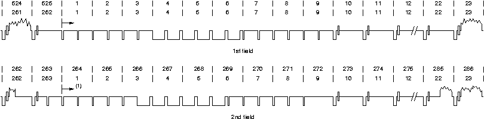

Video for Linux Two API Specification
Revision 0.24
Michael H Schimek
Bill Dirks
Hans Verkuil
Martin Rubli
Copyright © 1999, 2000, 2001, 2002, 2003, 2004, 2005, 2006, 2007, 2008 Bill Dirks, Michael H. Schimek, Hans Verkuil, Martin Rubli
This document is copyrighted © 1999-2008 by Bill Dirks, Michael H. Schimek, Hans Verkuil and Martin Rubli.
Permission is granted to copy, distribute and/or modify this document under the terms of the GNU Free Documentation License, Version 1.1 or any later version published by the Free Software Foundation; with no Invariant Sections, with no Front-Cover Texts, and with no Back-Cover Texts. A copy of the license is included in the appendix entitled "GNU Free Documentation License".
Programming examples can be used and distributed without restrictions.
- Table of Contents
- Introduction
- 1. Common API Elements
- 1.1. Opening and Closing Devices
- 1.1.1. Device Naming
- 1.1.2. Related Devices
- 1.1.3. Multiple Opens
- 1.1.4. Shared Data Streams
- 1.1.5. Functions
- 1.2. Querying Capabilities
- 1.3. Application Priority
- 1.4. Video Inputs and Outputs
- 1.5. Audio Inputs and Outputs
- 1.6. Tuners and Modulators
- 1.6.1. Tuners
- 1.6.2. Modulators
- 1.6.3. Radio Frequency
- 1.6.4. Satellite Receivers
- 1.7. Video Standards
- 1.8. User Controls
- 1.9. Extended Controls
- 1.9.1. Introduction
- 1.9.2. The Extended Control API
- 1.9.3. Enumerating Extended Controls
- 1.9.4. Creating Control Panels
- 1.9.5. MPEG Control Reference
- 1.9.6. Camera Control Reference
- 1.10. Data Formats
- 1.10.1. Data Format Negotiation
- 1.10.2. Image Format Enumeration
- 1.11. Image Cropping, Insertion and Scaling
- 1.11.1. Cropping Structures
- 1.11.2. Scaling Adjustments
- 1.11.3. Examples
- 1.12. Streaming Parameters
- 2. Image Formats
- 2.1. Standard Image Formats
- 2.2. Colorspaces
- 2.3. Indexed Format
- 2.4. RGB Formats
- Packed RGB formats -- Packed RGB formats
- V4L2_PIX_FMT_SBGGR8 ('BA81') -- Bayer RGB format
- V4L2_PIX_FMT_SBGGR16 ('BA82') -- Bayer RGB format
- 2.5. YUV Formats
- Packed YUV formats -- Packed YUV formats
- V4L2_PIX_FMT_GREY ('GREY') -- Grey-scale image
- V4L2_PIX_FMT_Y16 ('Y16 ') -- Grey-scale image
- V4L2_PIX_FMT_YUYV ('YUYV') -- Packed format with ½ horizontal chroma resolution, also known as YUV 4:2:2
- V4L2_PIX_FMT_UYVY ('UYVY') -- Variation of
V4L2_PIX_FMT_YUYVwith different order of samples in memory - V4L2_PIX_FMT_Y41P ('Y41P') -- Format with ¼ horizontal chroma resolution, also known as YUV 4:1:1
- V4L2_PIX_FMT_YVU420 ('YV12'), V4L2_PIX_FMT_YUV420 ('YU12') -- Planar formats with ½ horizontal and vertical chroma resolution, also known as YUV 4:2:0
- V4L2_PIX_FMT_YVU410 ('YVU9'), V4L2_PIX_FMT_YUV410 ('YUV9') -- Planar formats with ¼ horizontal and vertical chroma resolution, also known as YUV 4:1:0
- V4L2_PIX_FMT_YUV422P ('422P') -- Format with ½ horizontal chroma resolution,
also known as YUV 4:2:2. Planar layout as opposed to
V4L2_PIX_FMT_YUYV - V4L2_PIX_FMT_YUV411P ('411P') -- Format with ¼ horizontal chroma resolution,
also known as YUV 4:1:1. Planar layout as opposed to
V4L2_PIX_FMT_Y41P - V4L2_PIX_FMT_NV12 ('NV12'), V4L2_PIX_FMT_NV21 ('NV21') -- Formats with ½ horizontal and vertical
chroma resolution, also known as YUV 4:2:0. One luminance and one
chrominance plane with alternating chroma samples as opposed to
V4L2_PIX_FMT_YVU420
- 2.6. Compressed Formats
- 2.7. Reserved Format Identifiers
- 3. Input/Output
- 3.1. Read/Write
- 3.2. Streaming I/O (Memory Mapping)
- 3.3. Streaming I/O (User Pointers)
- 3.4. Asynchronous I/O
- 3.5. Buffers
- 3.5.1. Timecodes
- 3.6. Field Order
- 4. Interfaces
- 4.1. Video Capture Interface
- 4.1.1. Querying Capabilities
- 4.1.2. Supplemental Functions
- 4.1.3. Image Format Negotiation
- 4.1.4. Reading Images
- 4.2. Video Overlay Interface
- 4.2.1. Querying Capabilities
- 4.2.2. Supplemental Functions
- 4.2.3. Setup
- 4.2.4. Overlay Window
- 4.2.5. Enabling Overlay
- 4.3. Video Output Interface
- 4.3.1. Querying Capabilities
- 4.3.2. Supplemental Functions
- 4.3.3. Image Format Negotiation
- 4.3.4. Writing Images
- 4.4. Video Output Overlay Interface
- 4.4.1. Querying Capabilities
- 4.4.2. Framebuffer
- 4.4.3. Overlay Window and Scaling
- 4.4.4. Enabling Overlay
- 4.5. Codec Interface
- 4.6. Effect Devices Interface
- 4.7. Raw VBI Data Interface
- 4.7.1. Querying Capabilities
- 4.7.2. Supplemental Functions
- 4.7.3. Raw VBI Format Negotiation
- 4.7.4. Reading and writing VBI images
- 4.8. Sliced VBI Data Interface
- 4.8.1. Querying Capabilities
- 4.8.2. Supplemental Functions
- 4.8.3. Sliced VBI Format Negotiation
- 4.8.4. Reading and writing sliced VBI data
- 4.9. Teletext Interface
- 4.10. Radio Interface
- 4.10.1. Querying Capabilities
- 4.10.2. Supplemental Functions
- 4.10.3. Programming
- 4.11. RDS Interface
- I. Function Reference
- V4L2 close() -- Close a V4L2 device
- V4L2 ioctl() -- Program a V4L2 device
- ioctl VIDIOC_CROPCAP -- Information about the video cropping and scaling abilities
- ioctl VIDIOC_DBG_G_REGISTER, VIDIOC_DBG_S_REGISTER -- Read or write hardware registers
- ioctl VIDIOC_ENCODER_CMD, VIDIOC_TRY_ENCODER_CMD -- Execute an encoder command
- ioctl VIDIOC_ENUMAUDIO -- Enumerate audio inputs
- ioctl VIDIOC_ENUMAUDOUT -- Enumerate audio outputs
- ioctl VIDIOC_ENUM_FMT -- Enumerate image formats
- ioctl VIDIOC_ENUM_FRAMESIZES -- Enumerate frame sizes
- ioctl VIDIOC_ENUM_FRAMEINTERVALS -- Enumerate frame intervals
- ioctl VIDIOC_ENUMINPUT -- Enumerate video inputs
- ioctl VIDIOC_ENUMOUTPUT -- Enumerate video outputs
- ioctl VIDIOC_ENUMSTD -- Enumerate supported video standards
- ioctl VIDIOC_G_AUDIO, VIDIOC_S_AUDIO -- Query or select the current audio input and its attributes
- ioctl VIDIOC_G_AUDOUT, VIDIOC_S_AUDOUT -- Query or select the current audio output
- ioctl VIDIOC_G_CHIP_IDENT -- Identify the chips on a TV card
- ioctl VIDIOC_G_CROP, VIDIOC_S_CROP -- Get or set the current cropping rectangle
- ioctl VIDIOC_G_CTRL, VIDIOC_S_CTRL -- Get or set the value of a control
- ioctl VIDIOC_G_ENC_INDEX -- Get meta data about a compressed video stream
- ioctl VIDIOC_G_EXT_CTRLS, VIDIOC_S_EXT_CTRLS, VIDIOC_TRY_EXT_CTRLS -- Get or set the value of several controls, try control values
- ioctl VIDIOC_G_FBUF, VIDIOC_S_FBUF -- Get or set frame buffer overlay parameters
- ioctl VIDIOC_G_FMT, VIDIOC_S_FMT, VIDIOC_TRY_FMT -- Get or set the data format, try a format
- ioctl VIDIOC_G_FREQUENCY, VIDIOC_S_FREQUENCY -- Get or set tuner or modulator radio frequency
- ioctl VIDIOC_G_INPUT, VIDIOC_S_INPUT -- Query or select the current video input
- ioctl VIDIOC_G_JPEGCOMP, VIDIOC_S_JPEGCOMP --
- ioctl VIDIOC_G_MODULATOR, VIDIOC_S_MODULATOR -- Get or set modulator attributes
- ioctl VIDIOC_G_OUTPUT, VIDIOC_S_OUTPUT -- Query or select the current video output
- ioctl VIDIOC_G_PARM, VIDIOC_S_PARM -- Get or set streaming parameters
- ioctl VIDIOC_G_PRIORITY, VIDIOC_S_PRIORITY -- Query or request the access priority associated with a file descriptor
- ioctl VIDIOC_G_SLICED_VBI_CAP -- Query sliced VBI capabilities
- ioctl VIDIOC_G_STD, VIDIOC_S_STD -- Query or select the video standard of the current input
- ioctl VIDIOC_G_TUNER, VIDIOC_S_TUNER -- Get or set tuner attributes
- ioctl VIDIOC_LOG_STATUS -- Log driver status information
- ioctl VIDIOC_OVERLAY -- Start or stop video overlay
- ioctl VIDIOC_QBUF, VIDIOC_DQBUF -- Exchange a buffer with the driver
- ioctl VIDIOC_QUERYBUF -- Query the status of a buffer
- ioctl VIDIOC_QUERYCAP -- Query device capabilities
- ioctl VIDIOC_QUERYCTRL, VIDIOC_QUERYMENU -- Enumerate controls and menu control items
- ioctl VIDIOC_QUERYSTD -- Sense the video standard received by the current input
- ioctl VIDIOC_REQBUFS -- Initiate Memory Mapping or User Pointer I/O
- ioctl VIDIOC_STREAMON, VIDIOC_STREAMOFF -- Start or stop streaming I/O
- V4L2 mmap() -- Map device memory into application address space
- V4L2 munmap() -- Unmap device memory
- V4L2 open() -- Open a V4L2 device
- V4L2 poll() -- Wait for some event on a file descriptor
- V4L2 read() -- Read from a V4L2 device
- V4L2 select() -- Synchronous I/O multiplexing
- V4L2 write() -- Write to a V4L2 device
- 5. V4L2 Driver Programming
- 6. Changes
- 6.1. Differences between V4L and V4L2
- 6.1.1. Opening and Closing Devices
- 6.1.2. Querying Capabilities
- 6.1.3. Video Sources
- 6.1.4. Tuning
- 6.1.5. Image Properties
- 6.1.6. Audio
- 6.1.7. Frame Buffer Overlay
- 6.1.8. Cropping
- 6.1.9. Reading Images, Memory Mapping
- 6.1.10. Reading Raw VBI Data
- 6.1.11. Miscellaneous
- 6.2. Changes of the V4L2 API
- 6.2.1. Early Versions
- 6.2.2. V4L2 Version 0.16 1999-01-31
- 6.2.3. V4L2 Version 0.18 1999-03-16
- 6.2.4. V4L2 Version 0.19 1999-06-05
- 6.2.5. V4L2 Version 0.20 (1999-09-10)
- 6.2.6. V4L2 Version 0.20 incremental changes
- 6.2.7. V4L2 Version 0.20 2000-11-23
- 6.2.8. V4L2 Version 0.20 2002-07-25
- 6.2.9. V4L2 in Linux 2.5.46, 2002-10
- 6.2.10. V4L2 2003-06-19
- 6.2.11. V4L2 2003-11-05
- 6.2.12. V4L2 in Linux 2.6.6, 2004-05-09
- 6.2.13. V4L2 in Linux 2.6.8
- 6.2.14. V4L2 spec erratum 2004-08-01
- 6.2.15. V4L2 in Linux 2.6.14
- 6.2.16. V4L2 in Linux 2.6.15
- 6.2.17. V4L2 spec erratum 2005-11-27
- 6.2.18. V4L2 spec erratum 2006-01-10
- 6.2.19. V4L2 spec erratum 2006-02-03
- 6.2.20. V4L2 spec erratum 2006-02-04
- 6.2.21. V4L2 in Linux 2.6.17
- 6.2.22. V4L2 spec erratum 2006-09-23 (Draft 0.15)
- 6.2.23. V4L2 in Linux 2.6.18
- 6.2.24. V4L2 in Linux 2.6.19
- 6.2.25. V4L2 spec erratum 2006-10-12 (Draft 0.17)
- 6.2.26. V4L2 in Linux 2.6.21
- 6.2.27. V4L2 in Linux 2.6.22
- 6.2.28. V4L2 in Linux 2.6.24
- 6.2.29. V4L2 in Linux 2.6.25
- 6.3. Relation of V4L2 to other Linux multimedia APIs
- 6.3.1. X Video Extension
- 6.3.2. Digital Video
- 6.3.3. Audio Interfaces
- 6.4. Experimental API Elements
- 6.5. Obsolete API Elements
- A. Video For Linux Two Header File
- B. Video Capture Example
- C. GNU Free Documentation License
- C.1. 0. PREAMBLE
- C.2. 1. APPLICABILITY AND DEFINITIONS
- C.3. 2. VERBATIM COPYING
- C.4. 3. COPYING IN QUANTITY
- C.5. 4. MODIFICATIONS
- C.6. 5. COMBINING DOCUMENTS
- C.7. 6. COLLECTIONS OF DOCUMENTS
- C.8. 7. AGGREGATION WITH INDEPENDENT WORKS
- C.9. 8. TRANSLATION
- C.10. 9. TERMINATION
- C.11. 10. FUTURE REVISIONS OF THIS LICENSE
- C.12. Addendum
- List of Types
- References
- List of Examples
- 1-1. Information about the current video input
- 1-2. Switching to the first video input
- 1-3. Information about the current audio input
- 1-4. Switching to the first audio input
- 1-5. Information about the current video standard
- 1-6. Listing the video standards supported by the current input
- 1-7. Selecting a new video standard
- 1-8. Enumerating all controls
- 1-9. Changing controls
- 1-10. Resetting the cropping parameters
- 1-11. Simple downscaling
- 1-12. Selecting an output area
- 1-13. Current scaling factor and pixel aspect
- 2-1. ITU-R Rec. BT.601 color conversion
- 2-1.
V4L2_PIX_FMT_BGR244 ¡Á 4 pixel image - 2-1.
V4L2_PIX_FMT_SBGGR84 ¡Á 4 pixel image - 2-1.
V4L2_PIX_FMT_SBGGR164 ¡Á 4 pixel image - 2-1.
V4L2_PIX_FMT_GREY4 ¡Á 4 pixel image - 2-1.
V4L2_PIX_FMT_Y164 ¡Á 4 pixel image - 2-1.
V4L2_PIX_FMT_YUYV4 ¡Á 4 pixel image - 2-1.
V4L2_PIX_FMT_UYVY4 ¡Á 4 pixel image - 2-1.
V4L2_PIX_FMT_Y41P8 ¡Á 4 pixel image - 2-1.
V4L2_PIX_FMT_YVU4204 ¡Á 4 pixel image - 2-1.
V4L2_PIX_FMT_YVU4104 ¡Á 4 pixel image - 2-1.
V4L2_PIX_FMT_YUV422P4 ¡Á 4 pixel image - 2-1.
V4L2_PIX_FMT_YUV411P4 ¡Á 4 pixel image - 2-1.
V4L2_PIX_FMT_NV124 ¡Á 4 pixel image - 3-1. Mapping buffers
- 3-2. Initiating streaming I/O with user pointers
- 4-1. Finding a framebuffer device for OSD
Introduction
Video For Linux Two is the second version of the Video For Linux API, a kernel interface for analog radio and video capture and output drivers.
Early drivers used ad-hoc interfaces. These were replaced in Linux 2.2 by Alan Cox' V4L API, based on the interface of the bttv driver. In 1999 Bill Dirks started the development of V4L2 to fix some shortcomings of V4L and to support a wider range of devices. The API was revised again in 2002 prior to its inclusion in Linux 2.5/2.6, and work continues on improvements and additions while maintaining compatibility with existing drivers and applications. In 2006/2007 efforts began on FreeBSD drivers with a V4L2 interface.
This book documents the V4L2 API. Intended audience are driver and application writers.
If you have questions or ideas regarding the API, please write to the Video4Linux mailing list: https://listman.redhat.com/mailman/listinfo/video4linux-list. For inquiries about the V4L2 specification contact the maintainer mschimek@gmx.at.
The latest version of this document and the DocBook SGML sources are hosted at http://v4l2spec.bytesex.org, and http://linuxtv.org/downloads/video4linux/API/V4L2_API.
Chapter 1. Common API Elements
Programming a V4L2 device consists of these steps:
Opening the device
Changing device properties, selecting a video and audio input, video standard, picture brightness a. o.
Negotiating a data format
Negotiating an input/output method
The actual input/output loop
Closing the device
In practice most steps are optional and can be executed out of order. It depends on the V4L2 device type, you can read about the details in Chapter 4. In this chapter we will discuss the basic concepts applicable to all devices.
1.1. Opening and Closing Devices
1.1.1. Device Naming
V4L2 drivers are implemented as kernel modules, loaded manually by the system administrator or automatically when a device is first opened. The driver modules plug into the "videodev" kernel module. It provides helper functions and a common application interface specified in this document.
Each driver thus loaded registers one or more device nodes with major number 81 and a minor number between 0 and 255. Assigning minor numbers to V4L2 devices is entirely up to the system administrator, this is primarily intended to solve conflicts between devices.[1] The module options to select minor numbers are named after the device special file with a "_nr" suffix. For example "video_nr" for /dev/video video capture devices. The number is an offset to the base minor number associated with the device type. [2] When the driver supports multiple devices of the same type more than one minor number can be assigned, separated by commas:
In /etc/modules.conf this may be written as:
alias char-major-81-0 mydriver alias char-major-81-1 mydriver alias char-major-81-64 mydriveroptions mydriver video_nr=0,1 radio_nr=0,1

- When an application attempts to open a device special file with major number 81 and minor number 0, 1, or 64, load "mydriver" (and the "videodev" module it depends upon).
- Register the first two video capture devices with minor number 0 and 1 (base number is 0), the first two radio device with minor number 64 and 65 (base 64).
By convention system administrators create various character device special files with these major and minor numbers in the /dev directory. The names recomended for the different V4L2 device types are listed in Chapter 4.
The creation of character special files (with mknod) is a privileged operation and devices cannot be opened by major and minor number. That means applications cannot reliable scan for loaded or installed drivers. The user must enter a device name, or the application can try the conventional device names.
Under the device filesystem (devfs) the minor number options are ignored. V4L2 drivers (or by proxy the "videodev" module) automatically create the required device files in the /dev/v4l directory using the conventional device names above.
1.1.2. Related Devices
Devices can support several related functions. For example video capturing, video overlay and VBI capturing are related because these functions share, amongst other, the same video input and tuner frequency. V4L and earlier versions of V4L2 used the same device name and minor number for video capturing and overlay, but different ones for VBI. Experience showed this approach has several problems[3], and to make things worse the V4L videodev module used to prohibit multiple opens of a device.
As a remedy the present version of the V4L2 API relaxed the concept of device types with specific names and minor numbers. For compatibility with old applications drivers must still register different minor numbers to assign a default function to the device. But if related functions are supported by the driver they must be available under all registered minor numbers. The desired function can be selected after opening the device as described in Chapter 4.
Imagine a driver supporting video capturing, video
overlay, raw VBI capturing, and FM radio reception. It registers three
devices with minor number 0, 64 and 224 (this numbering scheme is
inherited from the V4L API). Regardless if
/dev/video (81, 0) or
/dev/vbi (81, 224) is opened the application can
select any one of the video capturing, overlay or VBI capturing
functions. Without programming (e. g. reading from the device
with dd or cat)
/dev/video captures video images, while
/dev/vbi captures raw VBI data.
/dev/radio (81, 64) is invariable a radio device,
unrelated to the video functions. Being unrelated does not imply the
devices can be used at the same time, however. The open()
function may very well return an EBUSY error code.
Besides video input or output the hardware may also support audio sampling or playback. If so, these functions are implemented as OSS or ALSA PCM devices and eventually OSS or ALSA audio mixer. The V4L2 API makes no provisions yet to find these related devices. If you have an idea please write to the Video4Linux mailing list: https://listman.redhat.com/mailman/listinfo/video4linux-list.
1.1.3. Multiple Opens
In general, V4L2 devices can be opened more than once. When this is supported by the driver, users can for example start a "panel" application to change controls like brightness or audio volume, while another application captures video and audio. In other words, panel applications are comparable to an OSS or ALSA audio mixer application. When a device supports multiple functions like capturing and overlay simultaneously, multiple opens allow concurrent use of the device by forked processes or specialized applications.
Multiple opens are optional, although drivers should
permit at least concurrent accesses without data exchange, i. e. panel
applications. This implies open() can return an EBUSY error code when the
device is already in use, as well as ioctl() functions initiating
data exchange (namely the VIDIOC_S_FMT ioctl), and the read()
and write() functions.
Mere opening a V4L2 device does not grant exclusive access.[4] Initiating data exchange however assigns the right to read or write the requested type of data, and to change related properties, to this file descriptor. Applications can request additional access privileges using the priority mechanism described in Section 1.3.
1.1.4. Shared Data Streams
V4L2 drivers should not support multiple applications reading or writing the same data stream on a device by copying buffers, time multiplexing or similar means. This is better handled by a proxy application in user space. When the driver supports stream sharing anyway it must be implemented transparently. The V4L2 API does not specify how conflicts are solved.
1.1.5. Functions
To open and close V4L2 devices applications use the
open() and close() function, respectively. Devices are
programmed using the ioctl() function as explained in the
following sections.
1.2. Querying Capabilities
Because V4L2 covers a wide variety of devices not all aspects of the API are equally applicable to all types of devices. Furthermore devices of the same type have different capabilities and this specification permits the omission of a few complicated and less important parts of the API.
The VIDIOC_QUERYCAP ioctl is available to check if the kernel
device is compatible with this specification, and to query the functions and I/O
methods supported by the device. Other features can be queried
by calling the respective ioctl, for example VIDIOC_ENUMINPUT
to learn about the number, types and names of video connectors on the
device. Although abstraction is a major objective of this API, the
ioctl also allows driver specific applications to reliable identify
the driver.
All V4L2 drivers must support
VIDIOC_QUERYCAP. Applications should always call
this ioctl after opening the device.
1.3. Application Priority
When multiple applications share a device it may be desirable to assign them different priorities. Contrary to the traditional "rm -rf /" school of thought a video recording application could for example block other applications from changing video controls or switching the current TV channel. Another objective is to permit low priority applications working in background, which can be preempted by user controlled applications and automatically regain control of the device at a later time.
Since these features cannot be implemented entirely in user
space V4L2 defines the VIDIOC_G_PRIORITY and VIDIOC_S_PRIORITY
ioctls to request and query the access priority associate with a file
descriptor. Opening a device assigns a medium priority, compatible
with earlier versions of V4L2 and drivers not supporting these ioctls.
Applications requiring a different priority will usually call
VIDIOC_S_PRIORITY after verifying the device with
the VIDIOC_QUERYCAP ioctl.
Ioctls changing driver properties, such as VIDIOC_S_INPUT,
return an EBUSY error code after another application obtained higher priority.
An event mechanism to notify applications about asynchronous property
changes has been proposed but not added yet.
1.4. Video Inputs and Outputs
Video inputs and outputs are physical connectors of a device. These can be for example RF connectors (antenna/cable), CVBS a.k.a. Composite Video, S-Video or RGB connectors. Only video and VBI capture devices have inputs, output devices have outputs, at least one each. Radio devices have no video inputs or outputs.
To learn about the number and attributes of the
available inputs and outputs applications can enumerate them with the
VIDIOC_ENUMINPUT and VIDIOC_ENUMOUTPUT ioctl, respectively. The
struct v4l2_input returned by the VIDIOC_ENUMINPUT
ioctl also contains signal status information applicable when the
current video input is queried.
The VIDIOC_G_INPUT and VIDIOC_G_OUTPUT ioctl return the
index of the current video input or output. To select a different
input or output applications call the VIDIOC_S_INPUT and
VIDIOC_S_OUTPUT ioctl. Drivers must implement all the input ioctls
when the device has one or more inputs, all the output ioctls when the
device has one or more outputs.
Example 1-1. Information about the current video input
struct v4l2_input input; int index; if (-1 == ioctl (fd,VIDIOC_G_INPUT, &index)) { perror ("VIDIOC_G_INPUT"); exit (EXIT_FAILURE); } memset (&input, 0, sizeof (input)); input.index = index; if (-1 == ioctl (fd,VIDIOC_ENUMINPUT, &input)) { perror ("VIDIOC_ENUMINPUT"); exit (EXIT_FAILURE); } printf ("Current input: %s\n", input.name);
Example 1-2. Switching to the first video input
int index;
index = 0;
if (-1 == ioctl (fd, VIDIOC_S_INPUT, &index)) {
perror ("VIDIOC_S_INPUT");
exit (EXIT_FAILURE);
}
1.5. Audio Inputs and Outputs
Audio inputs and outputs are physical connectors of a device. Video capture devices have inputs, output devices have outputs, zero or more each. Radio devices have no audio inputs or outputs. They have exactly one tuner which in fact is an audio source, but this API associates tuners with video inputs or outputs only, and radio devices have none of these.[5] A connector on a TV card to loop back the received audio signal to a sound card is not considered an audio output.
Audio and video inputs and outputs are associated. Selecting
a video source also selects an audio source. This is most evident when
the video and audio source is a tuner. Further audio connectors can
combine with more than one video input or output. Assumed two
composite video inputs and two audio inputs exist, there may be up to
four valid combinations. The relation of video and audio connectors
is defined in the audioset field of the
respective struct v4l2_input or struct v4l2_output, where each bit represents
the index number, starting at zero, of one audio input or output.
To learn about the number and attributes of the
available inputs and outputs applications can enumerate them with the
VIDIOC_ENUMAUDIO and VIDIOC_ENUMAUDOUT ioctl, respectively. The
struct v4l2_audio returned by the VIDIOC_ENUMAUDIO ioctl
also contains signal status information applicable when the current
audio input is queried.
The VIDIOC_G_AUDIO and VIDIOC_G_AUDOUT ioctl report
the current audio input and output, respectively. Note that, unlike
VIDIOC_G_INPUT and VIDIOC_G_OUTPUT these ioctls return a structure
as VIDIOC_ENUMAUDIO and
VIDIOC_ENUMAUDOUT do, not just an index.
To select an audio input and change its properties
applications call the VIDIOC_S_AUDIO ioctl. To select an audio
output (which presently has no changeable properties) applications
call the VIDIOC_S_AUDOUT ioctl.
Drivers must implement all input ioctls when the device
has one or more inputs, all output ioctls when the device has one
or more outputs. When the device has any audio inputs or outputs the
driver must set the V4L2_CAP_AUDIO flag in the
struct v4l2_capability returned by the VIDIOC_QUERYCAP ioctl.
Example 1-3. Information about the current audio input
struct v4l2_audio audio;
memset (&audio, 0, sizeof (audio));
if (-1 == ioctl (fd, VIDIOC_G_AUDIO, &audio)) {
perror ("VIDIOC_G_AUDIO");
exit (EXIT_FAILURE);
}
printf ("Current input: %s\n", audio.name);
Example 1-4. Switching to the first audio input
struct v4l2_audio audio;
memset (&audio, 0, sizeof (audio)); /* clear audio.mode, audio.reserved */
audio.index = 0;
if (-1 == ioctl (fd, VIDIOC_S_AUDIO, &audio)) {
perror ("VIDIOC_S_AUDIO");
exit (EXIT_FAILURE);
}
1.6. Tuners and Modulators
1.6.1. Tuners
Video input devices can have one or more tuners
demodulating a RF signal. Each tuner is associated with one or more
video inputs, depending on the number of RF connectors on the tuner.
The type field of the respective
struct v4l2_input returned by the VIDIOC_ENUMINPUT ioctl is set to
V4L2_INPUT_TYPE_TUNER and its
tuner field contains the index number of
the tuner.
Radio devices have exactly one tuner with index zero, no video inputs.
To query and change tuner properties applications use the
VIDIOC_G_TUNER and VIDIOC_S_TUNER ioctl, respectively. The
struct v4l2_tuner returned by VIDIOC_G_TUNER also
contains signal status information applicable when the tuner of the
current video input, or a radio tuner is queried. Note that
VIDIOC_S_TUNER does not switch the current tuner,
when there is more than one at all. The tuner is solely determined by
the current video input. Drivers must support both ioctls and set the
V4L2_CAP_TUNER flag in the struct v4l2_capability
returned by the VIDIOC_QUERYCAP ioctl when the device has one or
more tuners.
1.6.2. Modulators
Video output devices can have one or more modulators, uh,
modulating a video signal for radiation or connection to the antenna
input of a TV set or video recorder. Each modulator is associated with
one or more video outputs, depending on the number of RF connectors on
the modulator. The type field of the
respective struct v4l2_output returned by the VIDIOC_ENUMOUTPUT ioctl is
set to V4L2_OUTPUT_TYPE_MODULATOR and its
modulator field contains the index number
of the modulator. This specification does not define radio output
devices.
To query and change modulator properties applications use
the VIDIOC_G_MODULATOR and VIDIOC_S_MODULATOR ioctl. Note that
VIDIOC_S_MODULATOR does not switch the current
modulator, when there is more than one at all. The modulator is solely
determined by the current video output. Drivers must support both
ioctls and set the V4L2_CAP_TUNER (sic) flag in
the struct v4l2_capability returned by the VIDIOC_QUERYCAP ioctl when the
device has one or more modulators.
1.6.3. Radio Frequency
To get and set the tuner or modulator radio frequency
applications use the VIDIOC_G_FREQUENCY and VIDIOC_S_FREQUENCY
ioctl which both take a pointer to a struct v4l2_frequency. These ioctls
are used for TV and radio devices alike. Drivers must support both
ioctls when the tuner or modulator ioctls are supported, or
when the device is a radio device.
1.6.4. Satellite Receivers
To be discussed. See also proposals by Peter Schlaf, video4linux-list@redhat.com on 23 Oct 2002, subject: "Re: [V4L] Re: v4l2 api".
1.7. Video Standards
Video devices typically support one or more different video
standards or variations of standards. Each video input and output may
support another set of standards. This set is reported by the
std field of struct v4l2_input and
struct v4l2_output returned by the VIDIOC_ENUMINPUT and
VIDIOC_ENUMOUTPUT ioctl, respectively.
V4L2 defines one bit for each analog video standard
currently in use worldwide, and sets aside bits for driver defined
standards, e. g. hybrid standards to watch NTSC video tapes on PAL TVs
and vice versa. Applications can use the predefined bits to select a
particular standard, although presenting the user a menu of supported
standards is preferred. To enumerate and query the attributes of the
supported standards applications use the VIDIOC_ENUMSTD ioctl.
Many of the defined standards are actually just variations of a few major standards. The hardware may in fact not distinguish between them, or do so internal and switch automatically. Therefore enumerated standards also contain sets of one or more standard bits.
Assume a hypothetic tuner capable of demodulating B/PAL, G/PAL and I/PAL signals. The first enumerated standard is a set of B and G/PAL, switched automatically depending on the selected radio frequency in UHF or VHF band. Enumeration gives a "PAL-B/G" or "PAL-I" choice. Similar a Composite input may collapse standards, enumerating "PAL-B/G/H/I", "NTSC-M" and "SECAM-D/K".[6]
To query and select the standard used by the current video
input or output applications call the VIDIOC_G_STD and
VIDIOC_S_STD ioctl, respectively. The received
standard can be sensed with the VIDIOC_QUERYSTD ioctl. Note parameter of all these ioctls is a pointer to a v4l2_std_id type (a standard set), not an index into the standard enumeration.[7] Drivers must implement all video standard ioctls
when the device has one or more video inputs or outputs.
Special rules apply to USB cameras where the notion of video standards makes little sense. More generally any capture device, output devices accordingly, which is
incapable of capturing fields or frames at the nominal rate of the video standard, or
where timestamps refer to the instant the field or frame was received by the driver, not the capture time, or
where sequence numbers refer to the frames received by the driver, not the captured frames.
std field of struct v4l2_input and struct v4l2_output
to zero, the VIDIOC_G_STD,
VIDIOC_S_STD,
VIDIOC_QUERYSTD and
VIDIOC_ENUMSTD ioctls shall return the
EINVAL error code.[8]Example 1-5. Information about the current video standard
v4l2_std_id std_id; struct v4l2_standard standard; if (-1 == ioctl (fd,VIDIOC_G_STD, &std_id)) { /* Note when VIDIOC_ENUMSTD always returns EINVAL this is no video device or it falls under the USB exception, and VIDIOC_G_STD returning EINVAL is no error. */ perror ("VIDIOC_G_STD"); exit (EXIT_FAILURE); } memset (&standard, 0, sizeof (standard)); standard.index = 0; while (0 == ioctl (fd,VIDIOC_ENUMSTD, &standard)) { if (standard.id & std_id) { printf ("Current video standard: %s\n", standard.name); exit (EXIT_SUCCESS); } standard.index++; } /* EINVAL indicates the end of the enumeration, which cannot be empty unless this device falls under the USB exception. */ if (errno == EINVAL || standard.index == 0) { perror ("VIDIOC_ENUMSTD"); exit (EXIT_FAILURE); }
Example 1-6. Listing the video standards supported by the current input
struct v4l2_input input; struct v4l2_standard standard; memset (&input, 0, sizeof (input)); if (-1 == ioctl (fd,VIDIOC_G_INPUT, &input.index)) { perror ("VIDIOC_G_INPUT"); exit (EXIT_FAILURE); } if (-1 == ioctl (fd,VIDIOC_ENUMINPUT, &input)) { perror ("VIDIOC_ENUM_INPUT"); exit (EXIT_FAILURE); } printf ("Current input %s supports:\n", input.name); memset (&standard, 0, sizeof (standard)); standard.index = 0; while (0 == ioctl (fd,VIDIOC_ENUMSTD, &standard)) { if (standard.id & input.std) printf ("%s\n", standard.name); standard.index++; } /* EINVAL indicates the end of the enumeration, which cannot be empty unless this device falls under the USB exception. */ if (errno != EINVAL || standard.index == 0) { perror ("VIDIOC_ENUMSTD"); exit (EXIT_FAILURE); }
Example 1-7. Selecting a new video standard
struct v4l2_input input; v4l2_std_id std_id; memset (&input, 0, sizeof (input)); if (-1 == ioctl (fd,VIDIOC_G_INPUT, &input.index)) { perror ("VIDIOC_G_INPUT"); exit (EXIT_FAILURE); } if (-1 == ioctl (fd,VIDIOC_ENUMINPUT, &input)) { perror ("VIDIOC_ENUM_INPUT"); exit (EXIT_FAILURE); } if (0 == (input.std & V4L2_STD_PAL_BG)) { fprintf (stderr, "Oops. B/G PAL is not supported.\n"); exit (EXIT_FAILURE); } /* Note this is also supposed to work when only B or G/PAL is supported. */ std_id = V4L2_STD_PAL_BG; if (-1 == ioctl (fd,VIDIOC_S_STD, &std_id)) { perror ("VIDIOC_S_STD"); exit (EXIT_FAILURE); }
1.8. User Controls
Devices typically have a number of user-settable controls such as brightness, saturation and so on, which would be presented to the user on a graphical user interface. But, different devices will have different controls available, and furthermore, the range of possible values, and the default value will vary from device to device. The control ioctls provide the information and a mechanism to create a nice user interface for these controls that will work correctly with any device.
All controls are accessed using an ID value. V4L2 defines
several IDs for specific purposes. Drivers can also implement their
own custom controls using V4L2_CID_PRIVATE_BASE
and higher values. The pre-defined control IDs have the prefix
V4L2_CID_, and are listed in Table 1-1. The ID is used when querying the attributes of
a control, and when getting or setting the current value.
Generally applications should present controls to the user without assumptions about their purpose. Each control comes with a name string the user is supposed to understand. When the purpose is non-intuitive the driver writer should provide a user manual, a user interface plug-in or a driver specific panel application. Predefined IDs were introduced to change a few controls programmatically, for example to mute a device during a channel switch.
Drivers may enumerate different controls after switching the current video input or output, tuner or modulator, or audio input or output. Different in the sense of other bounds, another default and current value, step size or other menu items. A control with a certain custom ID can also change name and type.[9] Control values are stored globally, they do not change when switching except to stay within the reported bounds. They also do not change e. g. when the device is opened or closed, when the tuner radio frequency is changed or generally never without application request. Since V4L2 specifies no event mechanism, panel applications intended to cooperate with other panel applications (be they built into a larger application, as a TV viewer) may need to regularly poll control values to update their user interface.[10]
Table 1-1. Control IDs
| ID | Type | Description |
|---|---|---|
V4L2_CID_BASE | First predefined ID, equal to
V4L2_CID_BRIGHTNESS. | |
V4L2_CID_USER_BASE | Synonym of V4L2_CID_BASE. | |
V4L2_CID_BRIGHTNESS | integer | Picture brightness, or more precisely, the black level. |
V4L2_CID_CONTRAST | integer | Picture contrast or luma gain. |
V4L2_CID_SATURATION | integer | Picture color saturation or chroma gain. |
V4L2_CID_HUE | integer | Hue or color balance. |
V4L2_CID_AUDIO_VOLUME | integer | Overall audio volume. Note some drivers also provide an OSS or ALSA mixer interface. |
V4L2_CID_AUDIO_BALANCE | integer | Audio stereo balance. Minimum corresponds to all the way left, maximum to right. |
V4L2_CID_AUDIO_BASS | integer | Audio bass adjustment. |
V4L2_CID_AUDIO_TREBLE | integer | Audio treble adjustment. |
V4L2_CID_AUDIO_MUTE | boolean | Mute audio, i. e. set the volume to zero, however
without affecting V4L2_CID_AUDIO_VOLUME. Like
ALSA drivers, V4L2 drivers must mute at load time to avoid excessive
noise. Actually the entire device should be reset to a low power
consumption state. |
V4L2_CID_AUDIO_LOUDNESS | boolean | Loudness mode (bass boost). |
V4L2_CID_BLACK_LEVEL | integer | Another name for brightness (not a synonym of
V4L2_CID_BRIGHTNESS). This control is deprecated
and should not be used in new drivers and applications. |
V4L2_CID_AUTO_WHITE_BALANCE | boolean | Automatic white balance (cameras). |
V4L2_CID_DO_WHITE_BALANCE | button | This is an action control. When set (the value is
ignored), the device will do a white balance and then hold the current
setting. Contrast this with the boolean
V4L2_CID_AUTO_WHITE_BALANCE, which, when
activated, keeps adjusting the white balance. |
V4L2_CID_RED_BALANCE | integer | Red chroma balance. |
V4L2_CID_BLUE_BALANCE | integer | Blue chroma balance. |
V4L2_CID_GAMMA | integer | Gamma adjust. |
V4L2_CID_WHITENESS | integer | Whiteness for grey-scale devices. This is a synonym
for V4L2_CID_GAMMA. This control is deprecated
and should not be used in new drivers and applications. |
V4L2_CID_EXPOSURE | integer | Exposure (cameras). [Unit?] |
V4L2_CID_AUTOGAIN | boolean | Automatic gain/exposure control. |
V4L2_CID_GAIN | integer | Gain control. |
V4L2_CID_HFLIP | boolean | Mirror the picture horizontally. |
V4L2_CID_VFLIP | boolean | Mirror the picture vertically. |
V4L2_CID_HCENTER_DEPRECATED (formerly V4L2_CID_HCENTER) | integer | Horizontal image centering. This control is
deprecated. New drivers and applications should use the Camera class controls
V4L2_CID_PAN_ABSOLUTE,
V4L2_CID_PAN_RELATIVE and
V4L2_CID_PAN_RESET instead. |
V4L2_CID_VCENTER_DEPRECATED
(formerly V4L2_CID_VCENTER) | integer | Vertical image centering. Centering is intended to
physically adjust cameras. For image cropping see
Section 1.11, for clipping Section 4.2. This
control is deprecated. New drivers and applications should use the
Camera class controls
V4L2_CID_TILT_ABSOLUTE,
V4L2_CID_TILT_RELATIVE and
V4L2_CID_TILT_RESET instead. |
V4L2_CID_POWER_LINE_FREQUENCY | integer | Enables a power line frequency filter to avoid
flicker. Possible values are:
V4L2_CID_POWER_LINE_FREQUENCY_DISABLED (0),
V4L2_CID_POWER_LINE_FREQUENCY_50HZ (1) and
V4L2_CID_POWER_LINE_FREQUENCY_60HZ (2). |
V4L2_CID_HUE_AUTO | boolean | Enables automatic hue control by the device. The
effect of setting V4L2_CID_HUE while automatic
hue control is enabled is undefined, drivers should ignore such
request. |
V4L2_CID_WHITE_BALANCE_TEMPERATURE | integer | This control specifies the white balance settings as a color temperature in Kelvin. A driver should have a minimum of 2800 (incandescent) to 6500 (daylight). For more information about color temperature see Wikipedia. |
V4L2_CID_SHARPNESS | integer | Adjusts the sharpness filters in a camera. The minimum value disables the filters, higher values give a sharper picture. |
V4L2_CID_BACKLIGHT_COMPENSATION | integer | Adjusts the backlight compensation in a camera. The minimum value disables backlight compensation. |
V4L2_CID_LASTP1 | End of the predefined control IDs (currently
V4L2_CID_BACKLIGHT_COMPENSATION + 1). | |
V4L2_CID_PRIVATE_BASE | ID of the first custom (driver specific) control. Applications depending on particular custom controls should check the driver name and version, see Section 1.2. |
Applications can enumerate the available controls with the
VIDIOC_QUERYCTRL and VIDIOC_QUERYMENU ioctls, get and set a
control value with the VIDIOC_G_CTRL and VIDIOC_S_CTRL ioctls.
Drivers must implement VIDIOC_QUERYCTRL,
VIDIOC_G_CTRL and
VIDIOC_S_CTRL when the device has one or more
controls, VIDIOC_QUERYMENU when it has one or
more menu type controls.
Example 1-8. Enumerating all controls
struct v4l2_queryctrl queryctrl; struct v4l2_querymenu querymenu; static void enumerate_menu (void) { printf (" Menu items:\n"); memset (&querymenu, 0, sizeof (querymenu)); querymenu.id = queryctrl.id; for (querymenu.index = queryctrl.minimum; querymenu.index <= queryctrl.maximum; querymenu.index++) { if (0 == ioctl (fd,VIDIOC_QUERYMENU, &querymenu)) { printf (" %s\n", querymenu.name); } else { perror ("VIDIOC_QUERYMENU"); exit (EXIT_FAILURE); } } } memset (&queryctrl, 0, sizeof (queryctrl)); for (queryctrl.id = V4L2_CID_BASE; queryctrl.id < V4L2_CID_LASTP1; queryctrl.id++) { if (0 == ioctl (fd,VIDIOC_QUERYCTRL, &queryctrl)) { if (queryctrl.flags & V4L2_CTRL_FLAG_DISABLED) continue; printf ("Control %s\n", queryctrl.name); if (queryctrl.type == V4L2_CTRL_TYPE_MENU) enumerate_menu (); } else { if (errno == EINVAL) continue; perror ("VIDIOC_QUERYCTRL"); exit (EXIT_FAILURE); } } for (queryctrl.id = V4L2_CID_PRIVATE_BASE;; queryctrl.id++) { if (0 == ioctl (fd,VIDIOC_QUERYCTRL, &queryctrl)) { if (queryctrl.flags & V4L2_CTRL_FLAG_DISABLED) continue; printf ("Control %s\n", queryctrl.name); if (queryctrl.type == V4L2_CTRL_TYPE_MENU) enumerate_menu (); } else { if (errno == EINVAL) break; perror ("VIDIOC_QUERYCTRL"); exit (EXIT_FAILURE); } }
Example 1-9. Changing controls
struct v4l2_queryctrl queryctrl; struct v4l2_control control; memset (&queryctrl, 0, sizeof (queryctrl)); queryctrl.id = V4L2_CID_BRIGHTNESS; if (-1 == ioctl (fd,VIDIOC_QUERYCTRL, &queryctrl)) { if (errno != EINVAL) { perror ("VIDIOC_QUERYCTRL"); exit (EXIT_FAILURE); } else { printf ("V4L2_CID_BRIGHTNESS is not supported\n"); } } else if (queryctrl.flags & V4L2_CTRL_FLAG_DISABLED) { printf ("V4L2_CID_BRIGHTNESS is not supported\n"); } else { memset (&control, 0, sizeof (control)); control.id = V4L2_CID_BRIGHTNESS; control.value = queryctrl.default_value; if (-1 == ioctl (fd,VIDIOC_S_CTRL, &control)) { perror ("VIDIOC_S_CTRL"); exit (EXIT_FAILURE); } } memset (&control, 0, sizeof (control)); control.id = V4L2_CID_CONTRAST; if (0 == ioctl (fd,VIDIOC_G_CTRL, &control)) { control.value += 1; /* The driver may clamp the value or return ERANGE, ignored here */ if (-1 == ioctl (fd,VIDIOC_S_CTRL, &control) && errno != ERANGE) { perror ("VIDIOC_S_CTRL"); exit (EXIT_FAILURE); } /* Ignore if V4L2_CID_CONTRAST is unsupported */ } else if (errno != EINVAL) { perror ("VIDIOC_G_CTRL"); exit (EXIT_FAILURE); } control.id = V4L2_CID_AUDIO_MUTE; control.value = TRUE; /* silence */ /* Errors ignored */ ioctl (fd, VIDIOC_S_CTRL, &control);
1.9. Extended Controls
1.9.1. Introduction
The control mechanism as originally designed was meant to be used for user settings (brightness, saturation, etc). However, it turned out to be a very useful model for implementing more complicated driver APIs where each driver implements only a subset of a larger API.
The MPEG encoding API was the driving force behind designing and implementing this extended control mechanism: the MPEG standard is quite large and the currently supported hardware MPEG encoders each only implement a subset of this standard. Further more, many parameters relating to how the video is encoded into an MPEG stream are specific to the MPEG encoding chip since the MPEG standard only defines the format of the resulting MPEG stream, not how the video is actually encoded into that format.
Unfortunately, the original control API lacked some features needed for these new uses and so it was extended into the (not terribly originally named) extended control API.
1.9.2. The Extended Control API
Three new ioctls are available: VIDIOC_G_EXT_CTRLS,
VIDIOC_S_EXT_CTRLS and VIDIOC_TRY_EXT_CTRLS. These ioctls act on
arrays of controls (as opposed to the VIDIOC_G_CTRL and
VIDIOC_S_CTRL ioctls that act on a single control). This is needed
since it is often required to atomically change several controls at
once.
Each of the new ioctls expects a pointer to a
struct v4l2_ext_controls. This structure contains a pointer to the control
array, a count of the number of controls in that array and a control
class. Control classes are used to group similar controls into a
single class. For example, control class
V4L2_CTRL_CLASS_USER contains all user controls
(i. e. all controls that can also be set using the old
VIDIOC_S_CTRL ioctl). Control class
V4L2_CTRL_CLASS_MPEG contains all controls
relating to MPEG encoding, etc.
All controls in the control array must belong to the specified control class. An error is returned if this is not the case.
It is also possible to use an empty control array (count == 0) to check whether the specified control class is supported.
The control array is a struct v4l2_ext_control array. The
v4l2_ext_control structure is very similar to
struct v4l2_control, except for the fact that it also allows for 64-bit
values and pointers to be passed (although the latter is not yet used
anywhere).
It is important to realize that due to the flexibility of
controls it is necessary to check whether the control you want to set
actually is supported in the driver and what the valid range of values
is. So use the VIDIOC_QUERYCTRL and VIDIOC_QUERYMENU ioctls to
check this. Also note that it is possible that some of the menu
indices in a control of type V4L2_CTRL_TYPE_MENU
may not be supported (VIDIOC_QUERYMENU will
return an error). A good example is the list of supported MPEG audio
bitrates. Some drivers only support one or two bitrates, others
support a wider range.
1.9.3. Enumerating Extended Controls
The recommended way to enumerate over the extended
controls is by using VIDIOC_QUERYCTRL in combination with the
V4L2_CTRL_FLAG_NEXT_CTRL flag:
struct v4l2_queryctrl qctrl;
qctrl.id = V4L2_CTRL_FLAG_NEXT_CTRL;
while (0 == ioctl (fd, VIDIOC_QUERYCTRL, &qctrl)) {
/* ... */
qctrl.id |= V4L2_CTRL_FLAG_NEXT_CTRL;
}The initial control ID is set to 0 ORed with the
V4L2_CTRL_FLAG_NEXT_CTRL flag. The
VIDIOC_QUERYCTRL ioctl will return the first
control with a higher ID than the specified one. When no such controls
are found an error is returned.
If you want to get all controls within a specific control
class, then you can set the initial
qctrl.id value to the control class and add
an extra check to break out of the loop when a control of another
control class is found:
qctrl.id = V4L2_CTRL_CLASS_MPEG | V4L2_CTRL_FLAG_NEXT_CTRL;
while (0 == ioctl (fd, VIDIOC_QUERYCTRL, &qctrl)) {
if (V4L2_CTRL_ID2CLASS (qctrl.id) != V4L2_CTRL_CLASS_MPEG)
break;
/* ... */
qctrl.id |= V4L2_CTRL_FLAG_NEXT_CTRL;
}The 32-bit qctrl.id value is
subdivided into three bit ranges: the top 4 bits are reserved for
flags (e. g. V4L2_CTRL_FLAG_NEXT_CTRL) and are not
actually part of the ID. The remaining 28 bits form the control ID, of
which the most significant 12 bits define the control class and the
least significant 16 bits identify the control within the control
class. It is guaranteed that these last 16 bits are always non-zero
for controls. The range of 0x1000 and up are reserved for
driver-specific controls. The macro
V4L2_CTRL_ID2CLASS(id) returns the control class
ID based on a control ID.
If the driver does not support extended controls, then
VIDIOC_QUERYCTRL will fail when used in
combination with V4L2_CTRL_FLAG_NEXT_CTRL. In
that case the old method of enumerating control should be used (see
1.8). But if it is supported, then it is guaranteed to enumerate over
all controls, including driver-private controls.
1.9.4. Creating Control Panels
It is possible to create control panels for a graphical
user interface where the user can select the various controls.
Basically you will have to iterate over all controls using the method
described above. Each control class starts with a control of type
V4L2_CTRL_TYPE_CTRL_CLASS.
VIDIOC_QUERYCTRL will return the name of this
control class which can be used as the title of a tab page within a
control panel.
The flags field of struct v4l2_queryctrl also contains hints on
the behavior of the control. See the VIDIOC_QUERYCTRL documentation
for more details.
1.9.5. MPEG Control Reference
Below all controls within the MPEG control class are described. First the generic controls, then controls specific for certain hardware.
1.9.5.1. Generic MPEG Controls
Table 1-2. MPEG Control IDs
| ID | Type | ||||||||||||||||||||||||||||||
|---|---|---|---|---|---|---|---|---|---|---|---|---|---|---|---|---|---|---|---|---|---|---|---|---|---|---|---|---|---|---|---|
| Description | |||||||||||||||||||||||||||||||
V4L2_CID_MPEG_CLASS | class | ||||||||||||||||||||||||||||||
The MPEG class
descriptor. Calling VIDIOC_QUERYCTRL for this control will return a
description of this control class. This description can be used as the
caption of a Tab page in a GUI, for example. | |||||||||||||||||||||||||||||||
V4L2_CID_MPEG_STREAM_TYPE | enum | ||||||||||||||||||||||||||||||
| The MPEG-1, -2 or -4 output stream type. One cannot assume anything here. Each hardware MPEG encoder tends to support different subsets of the available MPEG stream types. The currently defined stream types are: | |||||||||||||||||||||||||||||||
| |||||||||||||||||||||||||||||||
V4L2_CID_MPEG_STREAM_PID_PMT | integer | ||||||||||||||||||||||||||||||
| Program Map Table Packet ID for the MPEG transport stream (default 16) | |||||||||||||||||||||||||||||||
V4L2_CID_MPEG_STREAM_PID_AUDIO | integer | ||||||||||||||||||||||||||||||
| Audio Packet ID for the MPEG transport stream (default 256) | |||||||||||||||||||||||||||||||
V4L2_CID_MPEG_STREAM_PID_VIDEO | integer | ||||||||||||||||||||||||||||||
| Video Packet ID for the MPEG transport stream (default 260) | |||||||||||||||||||||||||||||||
V4L2_CID_MPEG_STREAM_PID_PCR | integer | ||||||||||||||||||||||||||||||
| Packet ID for the MPEG transport stream carrying PCR fields (default 259) | |||||||||||||||||||||||||||||||
V4L2_CID_MPEG_STREAM_PES_ID_AUDIO | integer | ||||||||||||||||||||||||||||||
| Audio ID for MPEG PES | |||||||||||||||||||||||||||||||
V4L2_CID_MPEG_STREAM_PES_ID_VIDEO | integer | ||||||||||||||||||||||||||||||
| Video ID for MPEG PES | |||||||||||||||||||||||||||||||
V4L2_CID_MPEG_STREAM_VBI_FMT | enum | ||||||||||||||||||||||||||||||
| Some cards can embed VBI data (e. g. Closed Caption, Teletext) into the MPEG stream. This control selects whether VBI data should be embedded, and if so, what embedding method should be used. The list of possible VBI formats depends on the driver. The currently defined VBI format types are: | |||||||||||||||||||||||||||||||
| |||||||||||||||||||||||||||||||
V4L2_CID_MPEG_AUDIO_SAMPLING_FREQ | enum | ||||||||||||||||||||||||||||||
| MPEG Audio sampling frequency. Possible values are: | |||||||||||||||||||||||||||||||
| |||||||||||||||||||||||||||||||
V4L2_CID_MPEG_AUDIO_ENCODING | enum | ||||||||||||||||||||||||||||||
| MPEG Audio encoding. Possible values are: | |||||||||||||||||||||||||||||||
| |||||||||||||||||||||||||||||||
V4L2_CID_MPEG_AUDIO_L1_BITRATE | enum | ||||||||||||||||||||||||||||||
| Layer I bitrate. Possible values are: | |||||||||||||||||||||||||||||||
| |||||||||||||||||||||||||||||||
V4L2_CID_MPEG_AUDIO_L2_BITRATE | enum | ||||||||||||||||||||||||||||||
| Layer II bitrate. Possible values are: | |||||||||||||||||||||||||||||||
| |||||||||||||||||||||||||||||||
V4L2_CID_MPEG_AUDIO_L3_BITRATE | enum | ||||||||||||||||||||||||||||||
| Layer III bitrate. Possible values are: | |||||||||||||||||||||||||||||||
| |||||||||||||||||||||||||||||||
V4L2_CID_MPEG_AUDIO_MODE | enum | ||||||||||||||||||||||||||||||
| MPEG Audio mode. Possible values are: | |||||||||||||||||||||||||||||||
| |||||||||||||||||||||||||||||||
V4L2_CID_MPEG_AUDIO_MODE_EXTENSION | enum | ||||||||||||||||||||||||||||||
| Joint Stereo audio mode extension. In Layer I and II they indicate which subbands are in intensity stereo. All other subbands are coded in stereo. Layer III is not (yet) supported. Possible values are: | |||||||||||||||||||||||||||||||
| |||||||||||||||||||||||||||||||
V4L2_CID_MPEG_AUDIO_EMPHASIS | enum | ||||||||||||||||||||||||||||||
| Audio Emphasis. Possible values are: | |||||||||||||||||||||||||||||||
| |||||||||||||||||||||||||||||||
V4L2_CID_MPEG_AUDIO_CRC | enum | ||||||||||||||||||||||||||||||
| CRC method. Possible values are: | |||||||||||||||||||||||||||||||
| |||||||||||||||||||||||||||||||
V4L2_CID_MPEG_AUDIO_MUTE | bool | ||||||||||||||||||||||||||||||
| Mutes the audio when capturing. This is not done by muting audio hardware, which can still produce a slight hiss, but in the encoder itself, guaranteeing a fixed and reproducable audio bitstream. 0 = unmuted, 1 = muted. | |||||||||||||||||||||||||||||||
V4L2_CID_MPEG_VIDEO_ENCODING | enum | ||||||||||||||||||||||||||||||
| MPEG Video encoding method. Possible values are: | |||||||||||||||||||||||||||||||
| |||||||||||||||||||||||||||||||
V4L2_CID_MPEG_VIDEO_ASPECT | enum | ||||||||||||||||||||||||||||||
| Video aspect. Possible values are: | |||||||||||||||||||||||||||||||
| |||||||||||||||||||||||||||||||
V4L2_CID_MPEG_VIDEO_B_FRAMES | integer | ||||||||||||||||||||||||||||||
| Number of B-Frames (default 2) | |||||||||||||||||||||||||||||||
V4L2_CID_MPEG_VIDEO_GOP_SIZE | integer | ||||||||||||||||||||||||||||||
| GOP size (default 12) | |||||||||||||||||||||||||||||||
V4L2_CID_MPEG_VIDEO_GOP_CLOSURE | bool | ||||||||||||||||||||||||||||||
| GOP closure (default 1) | |||||||||||||||||||||||||||||||
V4L2_CID_MPEG_VIDEO_PULLDOWN | bool | ||||||||||||||||||||||||||||||
| Enable 3:2 pulldown (default 0) | |||||||||||||||||||||||||||||||
V4L2_CID_MPEG_VIDEO_BITRATE_MODE | enum | ||||||||||||||||||||||||||||||
| Video bitrate mode. Possible values are: | |||||||||||||||||||||||||||||||
| |||||||||||||||||||||||||||||||
V4L2_CID_MPEG_VIDEO_BITRATE | integer | ||||||||||||||||||||||||||||||
| Video bitrate in bits per second. | |||||||||||||||||||||||||||||||
V4L2_CID_MPEG_VIDEO_BITRATE_PEAK | integer | ||||||||||||||||||||||||||||||
| Peak video bitrate in bits per second. Must be larger or equal to the average video bitrate. It is ignored if the video bitrate mode is set to constant bitrate. | |||||||||||||||||||||||||||||||
V4L2_CID_MPEG_VIDEO_TEMPORAL_DECIMATION | integer | ||||||||||||||||||||||||||||||
| For every captured frame, skip this many subsequent frames (default 0). | |||||||||||||||||||||||||||||||
V4L2_CID_MPEG_VIDEO_MUTE | bool | ||||||||||||||||||||||||||||||
| "Mutes" the video to a fixed color when capturing. This is useful for testing, to produce a fixed video bitstream. 0 = unmuted, 1 = muted. | |||||||||||||||||||||||||||||||
V4L2_CID_MPEG_VIDEO_MUTE_YUV | integer | ||||||||||||||||||||||||||||||
| Sets the "mute" color of the video. The supplied 32-bit integer is interpreted as follows (bit 0 = least significant bit): | |||||||||||||||||||||||||||||||
| |||||||||||||||||||||||||||||||
1.9.5.2. CX2341x MPEG Controls
The following MPEG class controls deal with MPEG encoding settings that are specific to the Conexant CX23415 and CX23416 MPEG encoding chips.
Table 1-3. CX2341x Control IDs
| ID | Type | ||||||||||||
|---|---|---|---|---|---|---|---|---|---|---|---|---|---|
| Description | |||||||||||||
V4L2_CID_MPEG_CX2341X_VIDEO_SPATIAL_FILTER_MODE | enum | ||||||||||||
Sets the Spatial
Filter mode (default MANUAL). Possible values
are: | |||||||||||||
| |||||||||||||
V4L2_CID_MPEG_CX2341X_VIDEO_SPATIAL_FILTER | integer (0-15) | ||||||||||||
| The setting for the Spatial Filter. 0 = off, 15 = maximum. (Default is 0.) | |||||||||||||
V4L2_CID_MPEG_CX2341X_VIDEO_LUMA_SPATIAL_FILTER_TYPE | enum | ||||||||||||
Select the algorithm
to use for the Luma Spatial Filter (default
1D_HOR). Possible values: | |||||||||||||
| |||||||||||||
V4L2_CID_MPEG_CX2341X_VIDEO_CHROMA_SPATIAL_FILTER_TYPE | enum | ||||||||||||
Select the algorithm
for the Chroma Spatial Filter (default 1D_HOR).
Possible values are: | |||||||||||||
| |||||||||||||
V4L2_CID_MPEG_CX2341X_VIDEO_TEMPORAL_FILTER_MODE | enum | ||||||||||||
Sets the Temporal
Filter mode (default MANUAL). Possible values
are: | |||||||||||||
| |||||||||||||
V4L2_CID_MPEG_CX2341X_VIDEO_TEMPORAL_FILTER | integer (0-31) | ||||||||||||
| The setting for the Temporal Filter. 0 = off, 31 = maximum. (Default is 8 for full-scale capturing and 0 for scaled capturing.) | |||||||||||||
V4L2_CID_MPEG_CX2341X_VIDEO_MEDIAN_FILTER_TYPE | enum | ||||||||||||
Median Filter Type
(default OFF). Possible values are: | |||||||||||||
| |||||||||||||
V4L2_CID_MPEG_CX2341X_VIDEO_LUMA_MEDIAN_FILTER_BOTTOM | integer (0-255) | ||||||||||||
| Threshold above which the luminance median filter is enabled (default 0) | |||||||||||||
V4L2_CID_MPEG_CX2341X_VIDEO_LUMA_MEDIAN_FILTER_TOP | integer (0-255) | ||||||||||||
| Threshold below which the luminance median filter is enabled (default 255) | |||||||||||||
V4L2_CID_MPEG_CX2341X_VIDEO_CHROMA_MEDIAN_FILTER_BOTTOM | integer (0-255) | ||||||||||||
| Threshold above which the chroma median filter is enabled (default 0) | |||||||||||||
V4L2_CID_MPEG_CX2341X_VIDEO_CHROMA_MEDIAN_FILTER_TOP | integer (0-255) | ||||||||||||
| Threshold below which the chroma median filter is enabled (default 255) | |||||||||||||
V4L2_CID_MPEG_CX2341X_STREAM_INSERT_NAV_PACKETS | bool | ||||||||||||
| The CX2341X MPEG encoder can insert one empty MPEG-2 PES packet into the stream between every four video frames. The packet size is 2048 bytes, including the packet_start_code_prefix and stream_id fields. The stream_id is 0xBF (private stream 2). The payload consists of 0x00 bytes, to be filled in by the application. 0 = do not insert, 1 = insert packets. | |||||||||||||
1.9.6. Camera Control Reference
The Camera class includes controls for mechanical (or equivalent digital) features of a device such as controllable lenses or sensors.
Table 1-4. Camera Control IDs
| ID | Type | ||||||||||
|---|---|---|---|---|---|---|---|---|---|---|---|
| Description | |||||||||||
V4L2_CID_CAMERA_CLASS | class | ||||||||||
The Camera class
descriptor. Calling VIDIOC_QUERYCTRL for this control will return a
description of this control class. | |||||||||||
V4L2_CID_EXPOSURE_AUTO | integer | ||||||||||
| Enables automatic adjustments of the exposure time and/or iris aperture. The effect of manual changes of the exposure time or iris aperture while these features are enabled is undefined, drivers should ignore such requests. Possible values are: | |||||||||||
| |||||||||||
V4L2_CID_EXPOSURE_ABSOLUTE | integer | ||||||||||
| Determines the exposure time of the camera sensor. The exposure time is limited by the frame interval. Drivers should interpret the values as 100 µs units, where the value 1 stands for 1/10000th of a second, 10000 for 1 second and 100000 for 10 seconds. | |||||||||||
V4L2_CID_EXPOSURE_AUTO_PRIORITY | boolean | ||||||||||
When
V4L2_CID_EXPOSURE_AUTO is set to
AUTO or SHUTTER_PRIORITY,
this control determines if the device may dynamically vary the frame
rate. By default this feature is disabled (0) and the frame rate must
remain constant. | |||||||||||
V4L2_CID_PAN_RELATIVE | integer | ||||||||||
| This control turns the camera horizontally by the specified amount. The unit is undefined. A positive value moves the camera to the right (clockwise when viewed from above), a negative value to the left. A value of zero does not cause motion. | |||||||||||
V4L2_CID_TILT_RELATIVE | integer | ||||||||||
| This control turns the camera vertically by the specified amount. The unit is undefined. A positive value moves the camera up, a negative value down. A value of zero does not cause motion. | |||||||||||
V4L2_CID_PAN_RESET | boolean | ||||||||||
When this control is set
to TRUE (1), the camera moves horizontally to the
default position. | |||||||||||
V4L2_CID_TILT_RESET | boolean | ||||||||||
When this control is set
to TRUE (1), the camera moves vertically to the
default position. | |||||||||||
V4L2_CID_PAN_ABSOLUTE | integer | ||||||||||
| This control turns the camera horizontally to the specified position. Positive values move the camera to the right (clockwise when viewed from above), negative values to the left. Drivers should interpret the values as arc seconds, with valid values between -180 * 3600 and +180 * 3600 inclusive. | |||||||||||
V4L2_CID_TILT_ABSOLUTE | integer | ||||||||||
| This control turns the camera vertically to the specified position. Positive values move the camera up, negative values down. Drivers should interpret the values as arc seconds, with valid values between -180 * 3600 and +180 * 3600 inclusive. | |||||||||||
V4L2_CID_FOCUS_ABSOLUTE | integer | ||||||||||
| This control sets the focal point of the camera to the specified position. The unit is undefined. Positive values set the focus closer to the camera, negative values towards infinity. | |||||||||||
V4L2_CID_FOCUS_RELATIVE | integer | ||||||||||
| This control moves the focal point of the camera by the specified amount. The unit is undefined. Positive values move the focus closer to the camera, negative values towards infinity. | |||||||||||
V4L2_CID_FOCUS_AUTO | boolean | ||||||||||
| Enables automatic focus adjustments. The effect of manual focus adjustments while this feature is enabled is undefined, drivers should ignore such requests. | |||||||||||
1.10. Data Formats
1.10.1. Data Format Negotiation
Different devices exchange different kinds of data with applications, for example video images, raw or sliced VBI data, RDS datagrams. Even within one kind many different formats are possible, in particular an abundance of image formats. Although drivers must provide a default and the selection persists across closing and reopening a device, applications should always negotiate a data format before engaging in data exchange. Negotiation means the application asks for a particular format and the driver selects and reports the best the hardware can do to satisfy the request. Of course applications can also just query the current selection.
A single mechanism exists to negotiate all data formats
using the aggregate struct v4l2_format and the VIDIOC_G_FMT and
VIDIOC_S_FMT ioctls. Additionally the VIDIOC_TRY_FMT ioctl can be
used to examine what the hardware could do,
without actually selecting a new data format. The data formats
supported by the V4L2 API are covered in the respective device section
in Chapter 4. For a closer look at image formats see
Chapter 2.
The VIDIOC_S_FMT ioctl is a major
turning-point in the initialization sequence. Prior to this point
multiple panel applications can access the same device concurrently to
select the current input, change controls or modify other properties.
The first VIDIOC_S_FMT assigns a logical stream
(video data, VBI data etc.) exclusively to one file descriptor.
Exclusive means no other application, more precisely no other file descriptor, can grab this stream or change device properties inconsistent with the negotiated parameters. A video standard change for example, when the new standard uses a different number of scan lines, can invalidate the selected image format. Therefore only the file descriptor owning the stream can make invalidating changes. Accordingly multiple file descriptors which grabbed different logical streams prevent each other from interfering with their settings. When for example video overlay is about to start or already in progress, simultaneous video capturing may be restricted to the same cropping and image size.
When applications omit the
VIDIOC_S_FMT ioctl its locking side effects are
implied by the next step, the selection of an I/O method with the
VIDIOC_REQBUFS ioctl or implicit with the first read() or
write() call.
Generally only one logical stream can be assigned to a
file descriptor, the exception being drivers permitting simultaneous
video capturing and overlay using the same file descriptor for
compatibility with V4L and earlier versions of V4L2. Switching the
logical stream or returning into "panel mode" is possible by closing
and reopening the device. Drivers may support a
switch using VIDIOC_S_FMT.
All drivers exchanging data with
applications must support the VIDIOC_G_FMT and
VIDIOC_S_FMT ioctl. Implementation of the
VIDIOC_TRY_FMT is highly recommended but
optional.
1.10.2. Image Format Enumeration
Apart of the generic format negotiation functions a special ioctl to enumerate all image formats supported by video capture, overlay or output devices is available.[11]
The VIDIOC_ENUM_FMT ioctl must be supported
by all drivers exchanging image data with applications.
Important: Drivers are not supposed to convert image formats in kernel space. They must enumerate only formats directly supported by the hardware. If necessary driver writers should publish an example conversion routine or library for integration into applications.
1.11. Image Cropping, Insertion and Scaling
Some video capture devices can sample a subsection of the picture and shrink or enlarge it to an image of arbitrary size. We call these abilities cropping and scaling. Some video output devices can scale an image up or down and insert it at an arbitrary scan line and horizontal offset into a video signal.
Applications can use the following API to select an area in
the video signal, query the default area and the hardware limits.
Despite their name, the VIDIOC_CROPCAP, VIDIOC_G_CROP
and VIDIOC_S_CROP ioctls apply to input as well as output
devices.
Scaling requires a source and a target. On a video capture
or overlay device the source is the video signal, and the cropping
ioctls determine the area actually sampled. The target are images
read by the application or overlaid onto the graphics screen. Their
size (and position for an overlay) is negotiated with the
VIDIOC_G_FMT and VIDIOC_S_FMT ioctls.
On a video output device the source are the images passed in
by the application, and their size is again negotiated with the
VIDIOC_G/S_FMT ioctls, or may be encoded in a
compressed video stream. The target is the video signal, and the
cropping ioctls determine the area where the images are
inserted.
Source and target rectangles are defined even if the device
does not support scaling or the VIDIOC_G/S_CROP
ioctls. Their size (and position where applicable) will be fixed in
this case. All capture and output device must support the
VIDIOC_CROPCAP ioctl such that applications can
determine if scaling takes place.
1.11.1. Cropping Structures

For capture devices the coordinates of the top left
corner, width and height of the area which can be sampled is given by
the bounds substructure of the
struct v4l2_cropcap returned by the VIDIOC_CROPCAP
ioctl. To support a wide range of hardware this specification does not
define an origin or units. However by convention drivers should
horizontally count unscaled samples relative to 0H (the leading edge
of the horizontal sync pulse, see Figure 4-1).
Vertically ITU-R line
numbers of the first field (Figure 4-2, Figure 4-3), multiplied by two if the driver can capture both
fields.
The top left corner, width and height of the source
rectangle, that is the area actually sampled, is given by struct v4l2_crop
using the same coordinate system as struct v4l2_cropcap. Applications can
use the VIDIOC_G_CROP and
VIDIOC_S_CROP ioctls to get and set this
rectangle. It must lie completely within the capture boundaries and
the driver may further adjust the requested size and/or position
according to hardware limitations.
Each capture device has a default source rectangle, given
by the defrect substructure of
struct v4l2_cropcap. The center of this rectangle shall align with the
center of the active picture area of the video signal, and cover what
the driver writer considers the complete picture. Drivers shall reset
the source rectangle to the default when the driver is first loaded,
but not later.
For output devices these structures and ioctls are used accordingly, defining the target rectangle where the images will be inserted into the video signal.
1.11.2. Scaling Adjustments
Video hardware can have various cropping, insertion and
scaling limitations. It may only scale up or down, support only
discrete scaling factors, or have different scaling abilities in
horizontal and vertical direction. Also it may not support scaling at
all. At the same time the struct v4l2_crop rectangle may have to be
aligned, and both the source and target rectangles may have arbitrary
upper and lower size limits. In particular the maximum
width and height
in struct v4l2_crop may be smaller than the
struct v4l2_cropcap.bounds area. Therefore, as
usual, drivers are expected to adjust the requested parameters and
return the actual values selected.
Applications can change the source or the target rectangle
first, as they may prefer a particular image size or a certain area in
the video signal. If the driver has to adjust both to satisfy hardware
limitations, the last requested rectangle shall take priority, and the
driver should preferably adjust the opposite one. The VIDIOC_TRY_FMT
ioctl however shall not change the driver state and therefore only
adjust the requested rectangle.
Suppose scaling on a video capture device is restricted to
a factor 1:1 or 2:1 in either direction and the target image size must
be a multiple of 16 ¡Á 16 pixels. The source cropping
rectangle is set to defaults, which are also the upper limit in this
example, of 640 ¡Á 400 pixels at offset 0, 0. An
application requests an image size of 300 ¡Á 225
pixels, assuming video will be scaled down from the "full picture"
accordingly. The driver sets the image size to the closest possible
values 304 ¡Á 224, then chooses the cropping rectangle
closest to the requested size, that is 608 ¡Á 224
(224 ¡Á 2:1 would exceed the limit 400). The offset
0, 0 is still valid, thus unmodified. Given the default cropping
rectangle reported by VIDIOC_CROPCAP the
application can easily propose another offset to center the cropping
rectangle.
Now the application may insist on covering an area using a picture aspect ratio closer to the original request, so it asks for a cropping rectangle of 608 ¡Á 456 pixels. The present scaling factors limit cropping to 640 ¡Á 384, so the driver returns the cropping size 608 ¡Á 384 and adjusts the image size to closest possible 304 ¡Á 192.
1.11.3. Examples
Source and target rectangles shall remain unchanged across closing and reopening a device, such that piping data into or out of a device will work without special preparations. More advanced applications should ensure the parameters are suitable before starting I/O.
Example 1-10. Resetting the cropping parameters
(A video capture device is assumed; change
V4L2_BUF_TYPE_VIDEO_CAPTURE for other
devices.)
struct v4l2_cropcap cropcap; struct v4l2_crop crop; memset (&cropcap, 0, sizeof (cropcap)); cropcap.type = V4L2_BUF_TYPE_VIDEO_CAPTURE; if (-1 == ioctl (fd,VIDIOC_CROPCAP, &cropcap)) { perror ("VIDIOC_CROPCAP"); exit (EXIT_FAILURE); } memset (&crop, 0, sizeof (crop)); crop.type = V4L2_BUF_TYPE_VIDEO_CAPTURE; crop.c = cropcap.defrect; /* Ignore if cropping is not supported (EINVAL). */ if (-1 == ioctl (fd,VIDIOC_S_CROP, &crop) && errno != EINVAL) { perror ("VIDIOC_S_CROP"); exit (EXIT_FAILURE); }
Example 1-11. Simple downscaling
(A video capture device is assumed.)
struct v4l2_cropcap cropcap;
struct v4l2_format format;
reset_cropping_parameters ();
/* Scale down to 1/4 size of full picture. */
memset (&format, 0, sizeof (format)); /* defaults */
format.type = V4L2_BUF_TYPE_VIDEO_CAPTURE;
format.fmt.pix.width = cropcap.defrect.width >> 1;
format.fmt.pix.height = cropcap.defrect.height >> 1;
format.fmt.pix.pixelformat = V4L2_PIX_FMT_YUYV;
if (-1 == ioctl (fd, VIDIOC_S_FMT, &format)) {
perror ("VIDIOC_S_FORMAT");
exit (EXIT_FAILURE);
}
/* We could check the actual image size now, the actual scaling factor
or if the driver can scale at all. */
Example 1-12. Selecting an output area
struct v4l2_cropcap cropcap; struct v4l2_crop crop; memset (&cropcap, 0, sizeof (cropcap)); cropcap.type = V4L2_BUF_TYPE_VIDEO_OUTPUT; if (-1 == ioctl (fd, VIDIOC_CROPCAP, &cropcap)) { perror ("VIDIOC_CROPCAP"); exit (EXIT_FAILURE); } memset (&crop, 0, sizeof (crop)); crop.type = V4L2_BUF_TYPE_VIDEO_OUTPUT; crop.c = cropcap.defrect; /* Scale the width and height to 50 % of their original size and center the output. */ crop.c.width /= 2; crop.c.height /= 2; crop.c.left += crop.c.width / 2; crop.c.top += crop.c.height / 2; /* Ignore if cropping is not supported (EINVAL). */ if (-1 == ioctl (fd, VIDIOC_S_CROP, &crop) && errno != EINVAL) { perror ("VIDIOC_S_CROP"); exit (EXIT_FAILURE); }
Example 1-13. Current scaling factor and pixel aspect
(A video capture device is assumed.)
struct v4l2_cropcap cropcap; struct v4l2_crop crop; struct v4l2_format format; double hscale, vscale; double aspect; int dwidth, dheight; memset (&cropcap, 0, sizeof (cropcap)); cropcap.type = V4L2_BUF_TYPE_VIDEO_CAPTURE; if (-1 == ioctl (fd,VIDIOC_CROPCAP, &cropcap)) { perror ("VIDIOC_CROPCAP"); exit (EXIT_FAILURE); } memset (&crop, 0, sizeof (crop)); crop.type = V4L2_BUF_TYPE_VIDEO_CAPTURE; if (-1 == ioctl (fd,VIDIOC_G_CROP, &crop)) { if (errno != EINVAL) { perror ("VIDIOC_G_CROP"); exit (EXIT_FAILURE); } /* Cropping not supported. */ crop.c = cropcap.defrect; } memset (&format, 0, sizeof (format)); format.fmt.type = V4L2_BUF_TYPE_VIDEO_CAPTURE; if (-1 == ioctl (fd,VIDIOC_G_FMT, &format)) { perror ("VIDIOC_G_FMT"); exit (EXIT_FAILURE); } /* The scaling applied by the driver. */ hscale = format.fmt.pix.width / (double) crop.c.width; vscale = format.fmt.pix.height / (double) crop.c.height; aspect = cropcap.pixelaspect.numerator / (double) cropcap.pixelaspect.denominator; aspect = aspect * hscale / vscale; /* Devices following ITU-R BT.601 do not capture square pixels. For playback on a computer monitor we should scale the images to this size. */ dwidth = format.fmt.pix.width / aspect; dheight = format.fmt.pix.height;
1.12. Streaming Parameters
Streaming parameters are intended to optimize the video
capture process as well as I/O. Presently applications can request a
high quality capture mode with the VIDIOC_S_PARM ioctl.
The current video standard determines a nominal number of
frames per second. If less than this number of frames is to be
captured or output, applications can request frame skipping or
duplicating on the driver side. This is especially useful when using
the read() or write(), which are not augmented by timestamps
or sequence counters, and to avoid unneccessary data copying.
Finally these ioctls can be used to determine the number of
buffers used internally by a driver in read/write mode. For
implications see the section discussing the read()
function.
To get and set the streaming parameters applications call
the VIDIOC_G_PARM and VIDIOC_S_PARM ioctl, respectively. They take
a pointer to a struct v4l2_streamparm, which contains a union holding
separate parameters for input and output devices.
These ioctls are optional, drivers need not implement them. If so, they return the EINVAL error code.
Chapter 2. Image Formats
The V4L2 API was primarily designed for devices exchanging
image data with applications. The
v4l2_pix_format structure defines the format
and layout of an image in memory. Image formats are negotiated with
the VIDIOC_S_FMT ioctl. (The explanations here focus on video
capturing and output, for overlay frame buffer formats see also
VIDIOC_G_FBUF.)
Table 2-1. struct v4l2_pix_format
| __u32 | width | Image width in pixels. |
| __u32 | height | Image height in pixels. |
Applications set these fields to
request an image size, drivers return the closest possible values. In
case of planar formats the width and
height applies to the largest plane. To
avoid ambiguities drivers must return values rounded up to a multiple
of the scale factor of any smaller planes. For example when the image
format is YUV 4:2:0, width and
height must be multiples of two. | ||
| __u32 | pixelformat | The pixel format or type of compression, set by the application. This is a little endian four character code. V4L2 defines standard RGB formats in Table 2-1, YUV formats in Section 2.5, and reserved codes in Table 2-8 |
| enum v4l2_field | field | Video images are typically interlaced. Applications can request to capture or output only the top or bottom field, or both fields interlaced or sequentially stored in one buffer or alternating in separate buffers. Drivers return the actual field order selected. For details see Section 3.6. |
| __u32 | bytesperline | Distance in bytes between the leftmost pixels in two adjacent lines. |
Both applications and drivers
can set this field to request padding bytes at the end of each line.
Drivers however may ignore the value requested by the application,
returning Video hardware may access padding bytes, therefore they must reside in accessible memory. Consider cases where padding bytes after the last line of an image cross a system page boundary. Input devices may write padding bytes, the value is undefined. Output devices ignore the contents of padding bytes. When the image format is planar the
| ||
| __u32 | sizeimage | Size in bytes of the buffer to hold a complete image,
set by the driver. Usually this is
bytesperline times
height. When the image consists of variable
length compressed data this is the maximum number of bytes required to
hold an image. |
| enum v4l2_colorspace | colorspace | This information supplements the
pixelformat and must be set by the driver,
see Section 2.2. |
| __u32 | priv | Reserved for custom (driver defined) additional information about formats. When not used drivers and applications must set this field to zero. |
2.1. Standard Image Formats
In order to exchange images between drivers and applications, it is necessary to have standard image data formats which both sides will interpret the same way. V4L2 includes several such formats, and this section is intended to be an unambiguous specification of the standard image data formats in V4L2.
V4L2 drivers are not limited to these formats, however. Driver-specific formats are possible. In that case the application may depend on a codec to convert images to one of the standard formats when needed. But the data can still be stored and retrieved in the proprietary format. For example, a device may support a proprietary compressed format. Applications can still capture and save the data in the compressed format, saving much disk space, and later use a codec to convert the images to the X Windows screen format when the video is to be displayed.
Even so, ultimately, some standard formats are needed, so the V4L2 specification would not be complete without well-defined standard formats.
The V4L2 standard formats are mainly uncompressed formats. The pixels are always arranged in memory from left to right, and from top to bottom. The first byte of data in the image buffer is always for the leftmost pixel of the topmost row. Following that is the pixel immediately to its right, and so on until the end of the top row of pixels. Following the rightmost pixel of the row there may be zero or more bytes of padding to guarantee that each row of pixel data has a certain alignment. Following the pad bytes, if any, is data for the leftmost pixel of the second row from the top, and so on. The last row has just as many pad bytes after it as the other rows.
In V4L2 each format has an identifier which looks like
PIX_FMT_XXX, defined in the videodev.h header file. These identifiers
represent four character codes
which are also listed below, however they are not the same as those
used in the Windows world.
2.2. Colorspaces
[intro]
- Gamma Correction
[to do]
E'R = f(R)
E'G = f(G)
E'B = f(B)
- Construction of luminance and color-difference signals
[to do]
E'Y = CoeffR E'R + CoeffG E'G + CoeffB E'B
(E'R - E'Y) = E'R - CoeffR E'R - CoeffG E'G - CoeffB E'B
(E'B - E'Y) = E'B - CoeffR E'R - CoeffG E'G - CoeffB E'B
- Re-normalized color-difference signals
The color-difference signals are scaled back to unity range [-0.5;+0.5]:
KB = 0.5 / (1 - CoeffB)
KR = 0.5 / (1 - CoeffR)
PB = KB (E'B - E'Y) = 0.5 (CoeffR / CoeffB) E'R + 0.5 (CoeffG / CoeffB) E'G + 0.5 E'B
PR = KR (E'R - E'Y) = 0.5 E'R + 0.5 (CoeffG / CoeffR) E'G + 0.5 (CoeffB / CoeffR) E'B
- Quantization
[to do]
Y' = (Lum. Levels - 1) ¡¤ E'Y + Lum. Offset
CB = (Chrom. Levels - 1) ¡¤ PB + Chrom. Offset
CR = (Chrom. Levels - 1) ¡¤ PR + Chrom. Offset
Rounding to the nearest integer and clamping to the range [0;255] finally yields the digital color components Y'CbCr stored in YUV images.
Example 2-1. ITU-R Rec. BT.601 color conversion
Forward Transformation
int ER, EG, EB; /* gamma corrected RGB input [0;255] */
int Y1, Cb, Cr; /* output [0;255] */
double r, g, b; /* temporaries */
double y1, pb, pr;
int
clamp (double x)
{
int r = x; /* round to nearest */
if (r < 0) return 0;
else if (r > 255) return 255;
else return r;
}
r = ER / 255.0;
g = EG / 255.0;
b = EB / 255.0;
y1 = 0.299 * r + 0.587 * g + 0.114 * b;
pb = -0.169 * r - 0.331 * g + 0.5 * b;
pr = 0.5 * r - 0.419 * g - 0.081 * b;
Y1 = clamp (219 * y1 + 16);
Cb = clamp (224 * pb + 128);
Cr = clamp (224 * pr + 128);
/* or shorter */
y1 = 0.299 * ER + 0.587 * EG + 0.114 * EB;
Y1 = clamp ( (219 / 255.0) * y1 + 16);
Cb = clamp (((224 / 255.0) / (2 - 2 * 0.114)) * (EB - y1) + 128);
Cr = clamp (((224 / 255.0) / (2 - 2 * 0.299)) * (ER - y1) + 128);
Inverse Transformation
int Y1, Cb, Cr; /* gamma pre-corrected input [0;255] */
int ER, EG, EB; /* output [0;255] */
double r, g, b; /* temporaries */
double y1, pb, pr;
int
clamp (double x)
{
int r = x; /* round to nearest */
if (r < 0) return 0;
else if (r > 255) return 255;
else return r;
}
y1 = (255 / 219.0) * (Y1 - 16);
pb = (255 / 224.0) * (Cb - 128);
pr = (255 / 224.0) * (Cr - 128);
r = 1.0 * y1 + 0 * pb + 1.402 * pr;
g = 1.0 * y1 - 0.344 * pb - 0.714 * pr;
b = 1.0 * y1 + 1.772 * pb + 0 * pr;
ER = clamp (r * 255); /* [ok? one should prob. limit y1,pb,pr] */
EG = clamp (g * 255);
EB = clamp (b * 255);
Table 2-2. enum v4l2_colorspace
| Identifier | Value | Description | Chromaticities[a] | White Point | Gamma Correction | Luminance E'Y | Quantization | |||
|---|---|---|---|---|---|---|---|---|---|---|
| Red | Green | Blue | Y' | Cb, Cr | ||||||
V4L2_COLORSPACE_SMPTE170M | 1 | NTSC/PAL according to SMPTE 170M, ITU BT.601 | x = 0.630, y = 0.340 | x = 0.310, y = 0.595 | x = 0.155, y = 0.070 | x = 0.3127, y = 0.3290, Illuminant D65 | E' = 4.5 I for I ¡Ü0.018, 1.099 I0.45 - 0.099 for 0.018 < I | 0.299 E'R + 0.587 E'G + 0.114 E'B | 219 E'Y + 16 | 224 PB,R + 128 |
V4L2_COLORSPACE_SMPTE240M | 2 | 1125-Line (US) HDTV, see SMPTE 240M | x = 0.630, y = 0.340 | x = 0.310, y = 0.595 | x = 0.155, y = 0.070 | x = 0.3127, y = 0.3290, Illuminant D65 | E' = 4 I for I ¡Ü0.0228, 1.1115 I0.45 - 0.1115 for 0.0228 < I | 0.212 E'R + 0.701 E'G + 0.087 E'B | 219 E'Y + 16 | 224 PB,R + 128 |
V4L2_COLORSPACE_REC709 | 3 | HDTV and modern devices, see ITU BT.709 | x = 0.640, y = 0.330 | x = 0.300, y = 0.600 | x = 0.150, y = 0.060 | x = 0.3127, y = 0.3290, Illuminant D65 | E' = 4.5 I for I ¡Ü0.018, 1.099 I0.45 - 0.099 for 0.018 < I | 0.2125 E'R + 0.7154 E'G + 0.0721 E'B | 219 E'Y + 16 | 224 PB,R + 128 |
V4L2_COLORSPACE_BT878 | 4 | Broken Bt878 extents[b], ITU BT.601 | ? | ? | ? | ? | ? | 0.299 E'R + 0.587 E'G + 0.114 E'B | 237 E'Y + 16 | 224 PB,R + 128 (probably) |
V4L2_COLORSPACE_470_SYSTEM_M | 5 | M/NTSC[c] according to ITU BT.470, ITU BT.601 | x = 0.67, y = 0.33 | x = 0.21, y = 0.71 | x = 0.14, y = 0.08 | x = 0.310, y = 0.316, Illuminant C | ? | 0.299 E'R + 0.587 E'G + 0.114 E'B | 219 E'Y + 16 | 224 PB,R + 128 |
V4L2_COLORSPACE_470_SYSTEM_BG | 6 | 625-line PAL and SECAM systems according to ITU BT.470, ITU BT.601 | x = 0.64, y = 0.33 | x = 0.29, y = 0.60 | x = 0.15, y = 0.06 | x = 0.313, y = 0.329, Illuminant D65 | ? | 0.299 E'R + 0.587 E'G + 0.114 E'B | 219 E'Y + 16 | 224 PB,R + 128 |
V4L2_COLORSPACE_JPEG | 7 | JPEG Y'CbCr, see JFIF, ITU BT.601 | ? | ? | ? | ? | ? | 0.299 E'R + 0.587 E'G + 0.114 E'B | 256 E'Y + 16[d] | 256 PB,R + 128 |
V4L2_COLORSPACE_SRGB | 8 | [?] | x = 0.640, y = 0.330 | x = 0.300, y = 0.600 | x = 0.150, y = 0.060 | x = 0.3127, y = 0.3290, Illuminant D65 | E' = 4.5 I for I ¡Ü0.018, 1.099 I0.45 - 0.099 for 0.018 < I | n/a | ||
| Notes: a. The coordinates of the color primaries are given in the CIE system (1931) b. The ubiquitous Bt878 video capture chip quantizes E'Y to 238 levels, yielding a range of Y' = 16 ¡ 253, unlike Rec. 601 Y' = 16 ¡ 235. This is not a typo in the Bt878 documentation, it has been implemented in silicon. The chroma extents are unclear. c. No identifier exists for M/PAL which uses the chromaticities of M/NTSC, the remaining parameters are equal to B and G/PAL. d. Note JFIF quantizes Y'PBPR in range [0;+1] and [-0.5;+0.5] to 257 levels, however Y'CbCr signals are still clamped to [0;255]. | ||||||||||
2.3. Indexed Format
In this format each pixel is represented by an 8 bit index into a 256 entry ARGB palette. It is intended for Video Output Overlays only. There are no ioctls to access the palette, this must be done with ioctls of the Linux framebuffer API.
2.4. RGB Formats
- Table of Contents
- Packed RGB formats -- Packed RGB formats
- V4L2_PIX_FMT_SBGGR8 ('BA81') -- Bayer RGB format
- V4L2_PIX_FMT_SBGGR16 ('BA82') -- Bayer RGB format
Packed RGB formats
Description
These formats are designed to match the pixel formats of typical PC graphics frame buffers. They occupy 8, 16, 24 or 32 bits per pixel. These are all packed-pixel formats, meaning all the data for a pixel lie next to each other in memory.
When one of these formats is used, drivers shall report the
colorspace V4L2_COLORSPACE_SRGB.
Table 2-1. Packed RGB Image Formats
| Identifier | Code | Byte 0 in memory | Byte 1 | Byte 2 | Byte 3 | ||||||||||||||||||||||||||||||||
|---|---|---|---|---|---|---|---|---|---|---|---|---|---|---|---|---|---|---|---|---|---|---|---|---|---|---|---|---|---|---|---|---|---|---|---|---|---|
| Bit | 7 | 6 | 5 | 4 | 3 | 2 | 1 | 0 | 7 | 6 | 5 | 4 | 3 | 2 | 1 | 0 | 7 | 6 | 5 | 4 | 3 | 2 | 1 | 0 | 7 | 6 | 5 | 4 | 3 | 2 | 1 | 0 | |||||
V4L2_PIX_FMT_RGB332 | 'RGB1' | b1 | b0 | g2 | g1 | g0 | r2 | r1 | r0 | ||||||||||||||||||||||||||||
V4L2_PIX_FMT_RGB444 | 'R444' | g3 | g2 | g1 | g0 | b3 | b2 | b1 | b0 | a3 | a2 | a1 | a0 | r3 | r2 | r1 | r0 | ||||||||||||||||||||
V4L2_PIX_FMT_RGB555 | 'RGBO' | g2 | g1 | g0 | r4 | r3 | r2 | r1 | r0 | a | b4 | b3 | b2 | b1 | b0 | g4 | g3 | ||||||||||||||||||||
V4L2_PIX_FMT_RGB565 | 'RGBP' | g2 | g1 | g0 | r4 | r3 | r2 | r1 | r0 | b4 | b3 | b2 | b1 | b0 | g5 | g4 | g3 | ||||||||||||||||||||
V4L2_PIX_FMT_RGB555X | 'RGBQ' | a | b4 | b3 | b2 | b1 | b0 | g4 | g3 | g2 | g1 | g0 | r4 | r3 | r2 | r1 | r0 | ||||||||||||||||||||
V4L2_PIX_FMT_RGB565X | 'RGBR' | b4 | b3 | b2 | b1 | b0 | g5 | g4 | g3 | g2 | g1 | g0 | r4 | r3 | r2 | r1 | r0 | ||||||||||||||||||||
V4L2_PIX_FMT_BGR24 | 'BGR3' | b7 | b6 | b5 | b4 | b3 | b2 | b1 | b0 | g7 | g6 | g5 | g4 | g3 | g2 | g1 | g0 | r7 | r6 | r5 | r4 | r3 | r2 | r1 | r0 | ||||||||||||
V4L2_PIX_FMT_RGB24 | 'RGB3' | r7 | r6 | r5 | r4 | r3 | r2 | r1 | r0 | g7 | g6 | g5 | g4 | g3 | g2 | g1 | g0 | b7 | b6 | b5 | b4 | b3 | b2 | b1 | b0 | ||||||||||||
V4L2_PIX_FMT_BGR32 | 'BGR4' | b7 | b6 | b5 | b4 | b3 | b2 | b1 | b0 | g7 | g6 | g5 | g4 | g3 | g2 | g1 | g0 | r7 | r6 | r5 | r4 | r3 | r2 | r1 | r0 | a7 | a6 | a5 | a4 | a3 | a2 | a1 | a0 | ||||
V4L2_PIX_FMT_RGB32 | 'RGB4' | r7 | r6 | r5 | r4 | r3 | r2 | r1 | r0 | g7 | g6 | g5 | g4 | g3 | g2 | g1 | g0 | b7 | b6 | b5 | b4 | b3 | b2 | b1 | b0 | a7 | a6 | a5 | a4 | a3 | a2 | a1 | a0 | ||||
Bit 7 is the most significant bit. The value of a = alpha bits is undefined when reading from the driver, ignored when writing to the driver, except when alpha blending has been negotiated for a Video Overlay or Video Output Overlay.
Important: Drivers may interpret these formats differently.
Some RGB formats above are uncommon and were probably defined in error. Drivers may interpret them as in Table 2-2.
Table 2-2. Packed RGB Image Formats (corrected)
| Identifier | Code | Byte 0 in memory | Byte 1 | Byte 2 | Byte 3 | ||||||||||||||||||||||||||||||||
|---|---|---|---|---|---|---|---|---|---|---|---|---|---|---|---|---|---|---|---|---|---|---|---|---|---|---|---|---|---|---|---|---|---|---|---|---|---|
| Bit | 7 | 6 | 5 | 4 | 3 | 2 | 1 | 0 | 7 | 6 | 5 | 4 | 3 | 2 | 1 | 0 | 7 | 6 | 5 | 4 | 3 | 2 | 1 | 0 | 7 | 6 | 5 | 4 | 3 | 2 | 1 | 0 | |||||
V4L2_PIX_FMT_RGB332 | 'RGB1' | r2 | r1 | r0 | g2 | g1 | g0 | b1 | b0 | ||||||||||||||||||||||||||||
V4L2_PIX_FMT_RGB444 | 'R444' | g3 | g2 | g1 | g0 | b3 | b2 | b1 | b0 | a3 | a2 | a1 | a0 | r3 | r2 | r1 | r0 | ||||||||||||||||||||
V4L2_PIX_FMT_RGB555 | 'RGBO' | g2 | g1 | g0 | b4 | b3 | b2 | b1 | b0 | a | r4 | r3 | r2 | r1 | r0 | g4 | g3 | ||||||||||||||||||||
V4L2_PIX_FMT_RGB565 | 'RGBP' | g2 | g1 | g0 | b4 | b3 | b2 | b1 | b0 | r4 | r3 | r2 | r1 | r0 | g5 | g4 | g3 | ||||||||||||||||||||
V4L2_PIX_FMT_RGB555X | 'RGBQ' | a | r4 | r3 | r2 | r1 | r0 | g4 | g3 | g2 | g1 | g0 | b4 | b3 | b2 | b1 | b0 | ||||||||||||||||||||
V4L2_PIX_FMT_RGB565X | 'RGBR' | r4 | r3 | r2 | r1 | r0 | g5 | g4 | g3 | g2 | g1 | g0 | b4 | b3 | b2 | b1 | b0 | ||||||||||||||||||||
V4L2_PIX_FMT_BGR24 | 'BGR3' | b7 | b6 | b5 | b4 | b3 | b2 | b1 | b0 | g7 | g6 | g5 | g4 | g3 | g2 | g1 | g0 | r7 | r6 | r5 | r4 | r3 | r2 | r1 | r0 | ||||||||||||
V4L2_PIX_FMT_RGB24 | 'RGB3' | r7 | r6 | r5 | r4 | r3 | r2 | r1 | r0 | g7 | g6 | g5 | g4 | g3 | g2 | g1 | g0 | b7 | b6 | b5 | b4 | b3 | b2 | b1 | b0 | ||||||||||||
V4L2_PIX_FMT_BGR32 | 'BGR4' | b7 | b6 | b5 | b4 | b3 | b2 | b1 | b0 | g7 | g6 | g5 | g4 | g3 | g2 | g1 | g0 | r7 | r6 | r5 | r4 | r3 | r2 | r1 | r0 | a7 | a6 | a5 | a4 | a3 | a2 | a1 | a0 | ||||
V4L2_PIX_FMT_RGB32 | 'RGB4' | a7 | a6 | a5 | a4 | a3 | a2 | a1 | a0 | r7 | r6 | r5 | r4 | r3 | r2 | r1 | r0 | g7 | g6 | g5 | g4 | g3 | g2 | g1 | g0 | b7 | b6 | b5 | b4 | b3 | b2 | b1 | b0 | ||||
A test utility to determine which RGB formats a driver actually supports is available from the LinuxTV v4l-dvb repository. See http://linuxtv.org/repo/ for access instructions.
V4L2_PIX_FMT_SBGGR8 ('BA81')
Description
This is commonly the native format of digital cameras, reflecting the arrangement of sensors on the CCD device. Only one red, green or blue value is given for each pixel. Missing components must be interpolated from neighbouring pixels. From left to right the first row consists of a blue and green value, the second row of a green and red value. This scheme repeats to the right and down for every two columns and rows.
V4L2_PIX_FMT_SBGGR16 ('BA82')
Description
This format is similar to V4L2_PIX_FMT_SBGGR8, except each pixel has
a depth of 16 bits. The least significant byte is stored at lower
memory addresses (little-endian). Note the actual sampling precision
may be lower than 16 bits, for example 10 bits per pixel with values
in range 0 to 1023.
2.5. YUV Formats
- Table of Contents
- Packed YUV formats -- Packed YUV formats
- V4L2_PIX_FMT_GREY ('GREY') -- Grey-scale image
- V4L2_PIX_FMT_Y16 ('Y16 ') -- Grey-scale image
- V4L2_PIX_FMT_YUYV ('YUYV') -- Packed format with ½ horizontal chroma resolution, also known as YUV 4:2:2
- V4L2_PIX_FMT_UYVY ('UYVY') -- Variation of
V4L2_PIX_FMT_YUYVwith different order of samples in memory - V4L2_PIX_FMT_Y41P ('Y41P') -- Format with ¼ horizontal chroma resolution, also known as YUV 4:1:1
- V4L2_PIX_FMT_YVU420 ('YV12'), V4L2_PIX_FMT_YUV420 ('YU12') -- Planar formats with ½ horizontal and vertical chroma resolution, also known as YUV 4:2:0
- V4L2_PIX_FMT_YVU410 ('YVU9'), V4L2_PIX_FMT_YUV410 ('YUV9') -- Planar formats with ¼ horizontal and vertical chroma resolution, also known as YUV 4:1:0
- V4L2_PIX_FMT_YUV422P ('422P') -- Format with ½ horizontal chroma resolution,
also known as YUV 4:2:2. Planar layout as opposed to
V4L2_PIX_FMT_YUYV - V4L2_PIX_FMT_YUV411P ('411P') -- Format with ¼ horizontal chroma resolution,
also known as YUV 4:1:1. Planar layout as opposed to
V4L2_PIX_FMT_Y41P - V4L2_PIX_FMT_NV12 ('NV12'), V4L2_PIX_FMT_NV21 ('NV21') -- Formats with ½ horizontal and vertical
chroma resolution, also known as YUV 4:2:0. One luminance and one
chrominance plane with alternating chroma samples as opposed to
V4L2_PIX_FMT_YVU420
YUV is the format native to TV broadcast and composite video signals. It separates the brightness information (Y) from the color information (U and V or Cb and Cr). The color information consists of red and blue color difference signals, this way the green component can be reconstructed by subtracting from the brightness component. See Section 2.2 for conversion examples. YUV was chosen because early television would only transmit brightness information. To add color in a way compatible with existing receivers a new signal carrier was added to transmit the color difference signals. Secondary in the YUV format the U and V components usually have lower resolution than the Y component. This is an analog video compression technique taking advantage of a property of the human visual system, being more sensitive to brightness information.
Packed YUV formats
Description
Similar to the packed RGB formats these formats store the Y, Cb and Cr component of each pixel in one 16 or 32 bit word.
Table 2-1. Packed YUV Image Formats
| Identifier | Code | Byte 0 in memory | Byte 1 | Byte 2 | Byte 3 | ||||||||||||||||||||||||||||||||
|---|---|---|---|---|---|---|---|---|---|---|---|---|---|---|---|---|---|---|---|---|---|---|---|---|---|---|---|---|---|---|---|---|---|---|---|---|---|
| Bit | 7 | 6 | 5 | 4 | 3 | 2 | 1 | 0 | 7 | 6 | 5 | 4 | 3 | 2 | 1 | 0 | 7 | 6 | 5 | 4 | 3 | 2 | 1 | 0 | 7 | 6 | 5 | 4 | 3 | 2 | 1 | 0 | |||||
V4L2_PIX_FMT_YUV444 | 'Y444' | Cb3 | Cb2 | Cb1 | Cb0 | Cr3 | Cr2 | Cr1 | Cr0 | a3 | a2 | a1 | a0 | Y'3 | Y'2 | Y'1 | Y'0 | ||||||||||||||||||||
V4L2_PIX_FMT_YUV555 | 'YUVO' | Cb2 | Cb1 | Cb0 | Cr4 | Cr3 | Cr2 | Cr1 | Cr0 | a | Y'4 | Y'3 | Y'2 | Y'1 | Y'0 | Cb4 | Cb3 | ||||||||||||||||||||
V4L2_PIX_FMT_YUV565 | 'YUVP' | Cb2 | Cb1 | Cb0 | Cr4 | Cr3 | Cr2 | Cr1 | Cr0 | Y'4 | Y'3 | Y'2 | Y'1 | Y'0 | Cb5 | Cb4 | Cb3 | ||||||||||||||||||||
V4L2_PIX_FMT_YUV32 | 'YUV4' | a7 | a6 | a5 | a4 | a3 | a2 | a1 | a0 | Y'7 | Y'6 | Y'5 | Y'4 | Y'3 | Y'2 | Y'1 | Y'0 | Cb7 | Cb6 | Cb5 | Cb4 | Cb3 | Cb2 | Cb1 | Cb0 | Cr7 | Cr6 | Cr5 | Cr4 | Cr3 | Cr2 | Cr1 | Cr0 | ||||
Bit 7 is the most significant bit. The value of a = alpha bits is undefined when reading from the driver, ignored when writing to the driver, except when alpha blending has been negotiated for a Video Overlay or Video Output Overlay.
V4L2_PIX_FMT_GREY ('GREY')
Description
This is a grey-scale image. It is really a degenerate Y'CbCr format which simply contains no Cb or Cr data.
V4L2_PIX_FMT_Y16 ('Y16 ')
Description
This is a grey-scale image with a depth of 16 bits per pixel. The least significant byte is stored at lower memory addresses (little-endian). Note the actual sampling precision may be lower than 16 bits, for example 10 bits per pixel with values in range 0 to 1023.
V4L2_PIX_FMT_YUYV ('YUYV')
Description
In this format each four bytes is two pixels. Each four
bytes is two Y's, a Cb and a Cr. Each Y goes to one of the pixels, and
the Cb and Cr belong to both pixels. As you can see, the Cr and Cb
components have half the horizontal resolution of the Y component.
V4L2_PIX_FMT_YUYV is known in the Windows
environment as YUY2.
V4L2_PIX_FMT_UYVY ('UYVY')
Description
In this format each four bytes is two pixels. Each four bytes is two Y's, a Cb and a Cr. Each Y goes to one of the pixels, and the Cb and Cr belong to both pixels. As you can see, the Cr and Cb components have half the horizontal resolution of the Y component.
V4L2_PIX_FMT_Y41P ('Y41P')
Description
In this format each 12 bytes is eight pixels. In the twelve bytes are two CbCr pairs and eight Y's. The first CbCr pair goes with the first four Y's, and the second CbCr pair goes with the other four Y's. The Cb and Cr components have one fourth the horizontal resolution of the Y component.
Do not confuse this format with V4L2_PIX_FMT_YUV411P.
Y41P is derived from "YUV 4:1:1 packed", while
YUV411P stands for "YUV 4:1:1 planar".
V4L2_PIX_FMT_YVU420 ('YV12'), V4L2_PIX_FMT_YUV420 ('YU12')
Name
V4L2_PIX_FMT_YVU420, V4L2_PIX_FMT_YUV420 -- Planar formats with ½ horizontal and
vertical chroma resolution, also known as YUV 4:2:0Description
These are planar formats, as opposed to a packed format.
The three components are separated into three sub- images or planes.
The Y plane is first. The Y plane has one byte per pixel. For
V4L2_PIX_FMT_YVU420, the Cr plane immediately
follows the Y plane in memory. The Cr plane is half the width and half
the height of the Y plane (and of the image). Each Cr belongs to four
pixels, a two-by-two square of the image. For example,
Cr0 belongs to Y'00,
Y'01, Y'10, and
Y'11. Following the Cr plane is the Cb plane,
just like the Cr plane. V4L2_PIX_FMT_YUV420 is
the same except the Cb plane comes first, then the Cr plane.
If the Y plane has pad bytes after each row, then the Cr and Cb planes have half as many pad bytes after their rows. In other words, two Cx rows (including padding) is exactly as long as one Y row (including padding).
V4L2_PIX_FMT_YVU410 ('YVU9'), V4L2_PIX_FMT_YUV410 ('YUV9')
Name
V4L2_PIX_FMT_YVU410, V4L2_PIX_FMT_YUV410 -- Planar formats with ¼ horizontal and
vertical chroma resolution, also known as YUV 4:1:0Description
These are planar formats, as opposed to a packed format.
The three components are separated into three sub-images or planes.
The Y plane is first. The Y plane has one byte per pixel. For
V4L2_PIX_FMT_YVU410, the Cr plane immediately
follows the Y plane in memory. The Cr plane is ¼ the width and
¼ the height of the Y plane (and of the image). Each Cr belongs
to 16 pixels, a four-by-four square of the image. Following the Cr
plane is the Cb plane, just like the Cr plane.
V4L2_PIX_FMT_YUV410 is the same, except the Cb
plane comes first, then the Cr plane.
If the Y plane has pad bytes after each row, then the Cr and Cb planes have ¼ as many pad bytes after their rows. In other words, four Cx rows (including padding) are exactly as long as one Y row (including padding).
V4L2_PIX_FMT_YUV422P ('422P')
Name
V4L2_PIX_FMT_YUV422P -- Format with ½ horizontal chroma resolution,
also known as YUV 4:2:2. Planar layout as opposed to
V4L2_PIX_FMT_YUYVDescription
This format is not commonly used. This is a planar version of the YUYV format. The three components are separated into three sub-images or planes. The Y plane is first. The Y plane has one byte per pixel. The Cb plane immediately follows the Y plane in memory. The Cb plane is half the width of the Y plane (and of the image). Each Cb belongs to two pixels. For example, Cb0 belongs to Y'00, Y'01. Following the Cb plane is the Cr plane, just like the Cb plane.
If the Y plane has pad bytes after each row, then the Cr and Cb planes have half as many pad bytes after their rows. In other words, two Cx rows (including padding) is exactly as long as one Y row (including padding).
V4L2_PIX_FMT_YUV411P ('411P')
Name
V4L2_PIX_FMT_YUV411P -- Format with ¼ horizontal chroma resolution,
also known as YUV 4:1:1. Planar layout as opposed to
V4L2_PIX_FMT_Y41PDescription
This format is not commonly used. This is a planar format similar to the 4:2:2 planar format except with half as many chroma. The three components are separated into three sub-images or planes. The Y plane is first. The Y plane has one byte per pixel. The Cb plane immediately follows the Y plane in memory. The Cb plane is ¼ the width of the Y plane (and of the image). Each Cb belongs to 4 pixels all on the same row. For example, Cb0 belongs to Y'00, Y'01, Y'02 and Y'03. Following the Cb plane is the Cr plane, just like the Cb plane.
If the Y plane has pad bytes after each row, then the Cr and Cb planes have ¼ as many pad bytes after their rows. In other words, four C x rows (including padding) is exactly as long as one Y row (including padding).
V4L2_PIX_FMT_NV12 ('NV12'), V4L2_PIX_FMT_NV21 ('NV21')
Name
V4L2_PIX_FMT_NV12, V4L2_PIX_FMT_NV21 -- Formats with ½ horizontal and vertical
chroma resolution, also known as YUV 4:2:0. One luminance and one
chrominance plane with alternating chroma samples as opposed to
V4L2_PIX_FMT_YVU420Description
These are two-plane versions of the YUV 4:2:0 format.
The three components are separated into two sub-images or planes. The
Y plane is first. The Y plane has one byte per pixel. For
V4L2_PIX_FMT_NV12, a combined CbCr plane
immediately follows the Y plane in memory. The CbCr plane is the same
width, in bytes, as the Y plane (and of the image), but is half as
tall in pixels. Each CbCr pair belongs to four pixels. For example,
Cb0/Cr0 belongs to
Y'00, Y'01,
Y'10, Y'11.
V4L2_PIX_FMT_NV21 is the same except the Cb and
Cr bytes are swapped, the CrCb plane starts with a Cr byte.
If the Y plane has pad bytes after each row, then the CbCr plane has as many pad bytes after its rows.
2.6. Compressed Formats
Table 2-7. Compressed Image Formats
| Identifier | Code | Details |
|---|---|---|
V4L2_PIX_FMT_JPEG | 'JPEG' | TBD. See also VIDIOC_G_JPEGCOMP,
VIDIOC_S_JPEGCOMP. |
V4L2_PIX_FMT_MPEG | 'MPEG' | MPEG stream. The actual format is determined by
extended control V4L2_CID_MPEG_STREAM_TYPE, see
Table 1-2. |
2.7. Reserved Format Identifiers
These formats are not defined by this specification, they
are just listed for reference and to avoid naming conflicts. If you
want to register your own format, send an e-mail to the V4L mailing
list https://listman.redhat.com/mailman/listinfo/video4linux-list for inclusion in the videodev.h
file. If you want to share your format with other developers add a
link to your documentation and send a copy to the maintainer of this
document, Michael Schimek <mschimek@gmx.at>, for
inclusion in this section. If you think your format should be listed
in a standard format section please make a proposal on the V4L mailing
list.
Table 2-8. Reserved Image Formats
| Identifier | Code | Details |
|---|---|---|
V4L2_PIX_FMT_DV | 'dvsd' | unknown |
V4L2_PIX_FMT_ET61X251 | 'E625' | Compressed format of the ET61X251 driver. |
V4L2_PIX_FMT_HI240 | 'HI24' | 8 bit RGB format used by the BTTV driver, http://bytesex.org/bttv/ |
V4L2_PIX_FMT_HM12 | 'HM12' | YUV 4:2:0 format used by the IVTV driver, http://www.ivtvdriver.org/ The format is documented in the kernel sources in the file Documentation/video4linux/cx2341x/README.hm12 |
V4L2_PIX_FMT_MJPEG | 'MJPG' | Compressed format used by the Zoran driver |
V4L2_PIX_FMT_PWC1 | 'PWC1' | Compressed format of the PWC driver. |
V4L2_PIX_FMT_PWC2 | 'PWC2' | Compressed format of the PWC driver. |
V4L2_PIX_FMT_SN9C10X | 'S910' | Compressed format of the SN9C102 driver. |
V4L2_PIX_FMT_WNVA | 'WNVA' | Used by the Winnov Videum driver, http://www.thedirks.org/winnov/ |
V4L2_PIX_FMT_YYUV | 'YYUV' | unknown |
Chapter 3. Input/Output
The V4L2 API defines several different methods to read from or write to a device. All drivers exchanging data with applications must support at least one of them.
The classic I/O method using the read()
and write() function is automatically selected
after opening a V4L2 device. When the driver does not support this
method attempts to read or write will fail at any time.
Other methods must be negotiated. To select the streaming I/O
method with memory mapped or user buffers applications call the
VIDIOC_REQBUFS ioctl. The asynchronous I/O method is not defined
yet.
Video overlay can be considered another I/O method, although
the application does not directly receive the image data. It is
selected by initiating video overlay with the VIDIOC_S_FMT ioctl.
For more information see Section 4.2.
Generally exactly one I/O method, including overlay, is associated with each file descriptor. The only exceptions are applications not exchanging data with a driver ("panel applications", see Section 1.1) and drivers permitting simultaneous video capturing and overlay using the same file descriptor, for compatibility with V4L and earlier versions of V4L2.
VIDIOC_S_FMT and
VIDIOC_REQBUFS would permit this to some degree,
but for simplicity drivers need not support switching the I/O method
(after first switching away from read/write) other than by closing
and reopening the device.
The following sections describe the various I/O methods in more detail.
3.1. Read/Write
Input and output devices support the
read() and write() function,
respectively, when the V4L2_CAP_READWRITE flag in
the capabilities field of struct v4l2_capability
returned by the VIDIOC_QUERYCAP ioctl is set.
Drivers may need the CPU to copy the data, but they may also support DMA to or from user memory, so this I/O method is not necessarily less efficient than other methods merely exchanging buffer pointers. It is considered inferior though because no meta-information like frame counters or timestamps are passed. This information is necessary to recognize frame dropping and to synchronize with other data streams. However this is also the simplest I/O method, requiring little or no setup to exchange data. It permits command line stunts like this (the vidctrl tool is fictitious):
> vidctrl /dev/video --input=0 --format=YUYV --size=352x288 > dd if=/dev/video of=myimage.422 bs=202752 count=1
To read from the device applications use the
read() function, to write the write() function.
Drivers must implement one I/O method if they
exchange data with applications, but it need not be this.[12] When reading or writing is supported, the driver
must also support the select() and poll()
function.[13]
3.2. Streaming I/O (Memory Mapping)
Input and output devices support this I/O method when the
V4L2_CAP_STREAMING flag in the
capabilities field of struct v4l2_capability
returned by the VIDIOC_QUERYCAP ioctl is set. There are two
streaming methods, to determine if the memory mapping flavor is
supported applications must call the VIDIOC_REQBUFS ioctl.
Streaming is an I/O method where only pointers to buffers are exchanged between application and driver, the data itself is not copied. Memory mapping is primarily intended to map buffers in device memory into the application's address space. Device memory can be for example the video memory on a graphics card with a video capture add-on. However, being the most efficient I/O method available for a long time, many other drivers support streaming as well, allocating buffers in DMA-able main memory.
A driver can support many sets of buffers. Each set is identified by a unique buffer type value. The sets are independent and each set can hold a different type of data. To access different sets at the same time different file descriptors must be used.[14]
To allocate device buffers applications call the
VIDIOC_REQBUFS ioctl with the desired number of buffers and buffer
type, for example V4L2_BUF_TYPE_VIDEO_CAPTURE.
This ioctl can also be used to change the number of buffers or to free
the allocated memory, provided none of the buffers are still
mapped.
Before applications can access the buffers they must map
them into their address space with the mmap() function. The
location of the buffers in device memory can be determined with the
VIDIOC_QUERYBUF ioctl. The m.offset and
length returned in a struct v4l2_buffer are
passed as sixth and second parameter to the
mmap() function. The offset and length values
must not be modified. Remember the buffers are allocated in physical
memory, as opposed to virtual memory which can be swapped out to disk.
Applications should free the buffers as soon as possible with the
munmap() function.
Example 3-1. Mapping buffers
struct v4l2_requestbuffers reqbuf; struct { void *start; size_t length; } *buffers; unsigned int i; memset (&reqbuf, 0, sizeof (reqbuf)); reqbuf.type = V4L2_BUF_TYPE_VIDEO_CAPTURE; reqbuf.memory = V4L2_MEMORY_MMAP; reqbuf.count = 20; if (-1 == ioctl (fd,VIDIOC_REQBUFS, &reqbuf)) { if (errno == EINVAL) printf ("Video capturing or mmap-streaming is not supported\n"); else perror ("VIDIOC_REQBUFS"); exit (EXIT_FAILURE); } /* We want at least five buffers. */ if (reqbuf.count < 5) { /* You may need to free the buffers here. */ printf ("Not enough buffer memory\n"); exit (EXIT_FAILURE); } buffers = calloc (reqbuf.count, sizeof (*buffers)); assert (buffers != NULL); for (i = 0; i < reqbuf.count; i++) { struct v4l2_buffer buffer; memset (&buffer, 0, sizeof (buffer)); buffer.type = reqbuf.type; buffer.memory = V4L2_MEMORY_MMAP; buffer.index = i; if (-1 == ioctl (fd,VIDIOC_QUERYBUF, &buffer)) { perror ("VIDIOC_QUERYBUF"); exit (EXIT_FAILURE); } buffers[i].length = buffer.length; /* remember for munmap() */ buffers[i].start = mmap (NULL, buffer.length, PROT_READ | PROT_WRITE, /* recommended */ MAP_SHARED, /* recommended */ fd, buffer.m.offset); if (MAP_FAILED == buffers[i].start) { /* If you do not exit here you should unmap() and free() the buffers mapped so far. */ perror ("mmap"); exit (EXIT_FAILURE); } } /* Cleanup. */ for (i = 0; i < reqbuf.count; i++) munmap (buffers[i].start, buffers[i].length);
Conceptually streaming drivers maintain two buffer queues, an incoming and an outgoing queue. They separate the synchronous capture or output operation locked to a video clock from the application which is subject to random disk or network delays and preemption by other processes, thereby reducing the probability of data loss. The queues are organized as FIFOs, buffers will be output in the order enqueued in the incoming FIFO, and were captured in the order dequeued from the outgoing FIFO.
The driver may require a minimum number of buffers enqueued
at all times to function, apart of this no limit exists on the number
of buffers applications can enqueue in advance, or dequeue and
process. They can also enqueue in a different order than buffers have
been dequeued, and the driver can fill enqueued
empty buffers in any order. [15] The index number of a buffer (struct v4l2_buffer
index) plays no role here, it only
identifies the buffer.
Initially all mapped buffers are in dequeued state,
inaccessible by the driver. For capturing applications it is customary
to first enqueue all mapped buffers, then to start capturing and enter
the read loop. Here the application waits until a filled buffer can be
dequeued, and re-enqueues the buffer when the data is no longer
needed. Output applications fill and enqueue buffers, when enough
buffers are stacked up the output is started with
VIDIOC_STREAMON. In the write loop, when
the application runs out of free buffers, it must wait until an empty
buffer can be dequeued and reused.
To enqueue and dequeue a buffer applications use the
VIDIOC_QBUF and VIDIOC_DQBUF ioctl. The status of a buffer being
mapped, enqueued, full or empty can be determined at any time using the
VIDIOC_QUERYBUF ioctl. Two methods exist to suspend execution of the
application until one or more buffers can be dequeued. By default
VIDIOC_DQBUF blocks when no buffer is in the
outgoing queue. When the O_NONBLOCK flag was
given to the open() function, VIDIOC_DQBUF
returns immediately with an EAGAIN error code when no buffer is available. The
select() or poll() function are always available.
To start and stop capturing or output applications call the
VIDIOC_STREAMON and VIDIOC_STREAMOFF ioctl. Note
VIDIOC_STREAMOFF removes all buffers from both
queues as a side effect. Since there is no notion of doing anything
"now" on a multitasking system, if an application needs to synchronize
with another event it should examine the struct v4l2_buffer
timestamp of captured buffers, or set the
field before enqueuing buffers for output.
Drivers implementing memory mapping I/O must
support the VIDIOC_REQBUFS,
VIDIOC_QUERYBUF,
VIDIOC_QBUF, VIDIOC_DQBUF,
VIDIOC_STREAMON and
VIDIOC_STREAMOFF ioctl, the
mmap(), munmap(),
select() and poll()
function.[16]
[capture example]
3.3. Streaming I/O (User Pointers)
Input and output devices support this I/O method when the
V4L2_CAP_STREAMING flag in the
capabilities field of struct v4l2_capability
returned by the VIDIOC_QUERYCAP ioctl is set. If the particular user
pointer method (not only memory mapping) is supported must be
determined by calling the VIDIOC_REQBUFS ioctl.
This I/O method combines advantages of the read/write and
memory mapping methods. Buffers are allocated by the application
itself, and can reside for example in virtual or shared memory. Only
pointers to data are exchanged, these pointers and meta-information
are passed in struct v4l2_buffer. The driver must be switched
into user pointer I/O mode by calling the VIDIOC_REQBUFS with the
desired buffer type. No buffers are allocated beforehands,
consequently they are not indexed and cannot be queried like mapped
buffers with the VIDIOC_QUERYBUF ioctl.
Example 3-2. Initiating streaming I/O with user pointers
struct v4l2_requestbuffers reqbuf;
memset (&reqbuf, 0, sizeof (reqbuf));
reqbuf.type = V4L2_BUF_TYPE_VIDEO_CAPTURE;
reqbuf.memory = V4L2_MEMORY_USERPTR;
if (ioctl (fd, VIDIOC_REQBUFS, &reqbuf) == -1) {
if (errno == EINVAL)
printf ("Video capturing or user pointer streaming is not supported\n");
else
perror ("VIDIOC_REQBUFS");
exit (EXIT_FAILURE);
}
Buffer addresses and sizes are passed on the fly with the
VIDIOC_QBUF ioctl. Although buffers are commonly cycled,
applications can pass different addresses and sizes at each
VIDIOC_QBUF call. If required by the hardware the
driver swaps memory pages within physical memory to create a
continuous area of memory. This happens transparently to the
application in the virtual memory subsystem of the kernel. When buffer
pages have been swapped out to disk they are brought back and finally
locked in physical memory for DMA.[17]
Filled or displayed buffers are dequeued with the
VIDIOC_DQBUF ioctl. The driver can unlock the memory pages at any
time between the completion of the DMA and this ioctl. The memory is
also unlocked when VIDIOC_STREAMOFF is called, VIDIOC_REQBUFS, or
when the device is closed. Applications must take care not to free
buffers without dequeuing. For once, the buffers remain locked until
further, wasting physical memory. Second the driver will not be
notified when the memory is returned to the application's free list
and subsequently reused for other purposes, possibly completing the
requested DMA and overwriting valuable data.
For capturing applications it is customary to enqueue a
number of empty buffers, to start capturing and enter the read loop.
Here the application waits until a filled buffer can be dequeued, and
re-enqueues the buffer when the data is no longer needed. Output
applications fill and enqueue buffers, when enough buffers are stacked
up output is started. In the write loop, when the application
runs out of free buffers it must wait until an empty buffer can be
dequeued and reused. Two methods exist to suspend execution of the
application until one or more buffers can be dequeued. By default
VIDIOC_DQBUF blocks when no buffer is in the
outgoing queue. When the O_NONBLOCK flag was
given to the open() function, VIDIOC_DQBUF
returns immediately with an EAGAIN error code when no buffer is available. The
select() or poll() function are always available.
To start and stop capturing or output applications call the
VIDIOC_STREAMON and VIDIOC_STREAMOFF ioctl. Note
VIDIOC_STREAMOFF removes all buffers from both
queues and unlocks all buffers as a side effect. Since there is no
notion of doing anything "now" on a multitasking system, if an
application needs to synchronize with another event it should examine
the struct v4l2_buffer timestamp of captured
buffers, or set the field before enqueuing buffers for output.
Drivers implementing user pointer I/O must
support the VIDIOC_REQBUFS,
VIDIOC_QBUF, VIDIOC_DQBUF,
VIDIOC_STREAMON and
VIDIOC_STREAMOFF ioctl, the
select() and poll() function.[18]
3.5. Buffers
A buffer contains data exchanged by application and
driver using one of the Streaming I/O methods. Only pointers to
buffers are exchanged, the data itself is not copied. These pointers,
together with meta-information like timestamps or field parity, are
stored in a struct v4l2_buffer, argument to
the VIDIOC_QUERYBUF, VIDIOC_QBUF and VIDIOC_DQBUF ioctl.
Nominally timestamps refer to the first data byte transmitted. In practice however the wide range of hardware covered by the V4L2 API limits timestamp accuracy. Often an interrupt routine will sample the system clock shortly after the field or frame was stored completely in memory. So applications must expect a constant difference up to one field or frame period plus a small (few scan lines) random error. The delay and error can be much larger due to compression or transmission over an external bus when the frames are not properly stamped by the sender. This is frequently the case with USB cameras. Here timestamps refer to the instant the field or frame was received by the driver, not the capture time. These devices identify by not enumerating any video standards, see Section 1.7.
Similar limitations apply to output timestamps. Typically the video hardware locks to a clock controlling the video timing, the horizontal and vertical synchronization pulses. At some point in the line sequence, possibly the vertical blanking, an interrupt routine samples the system clock, compares against the timestamp and programs the hardware to repeat the previous field or frame, or to display the buffer contents.
Apart of limitations of the video device and natural inaccuracies of all clocks, it should be noted system time itself is not perfectly stable. It can be affected by power saving cycles, warped to insert leap seconds, or even turned back or forth by the system administrator affecting long term measurements. [19]
Table 3-1. struct v4l2_buffer
| __u32 | index | Number of the buffer, set by the application. This
field is only used for memory mapping I/O
and can range from zero to the number of buffers allocated
with the VIDIOC_REQBUFS ioctl (struct v4l2_requestbuffers count) minus one. | |
| enum v4l2_buf_type | type | Type of the buffer, same as struct v4l2_format
type or struct v4l2_requestbuffers
type, set by the application. | |
| __u32 | bytesused | The number of bytes occupied by the data in the
buffer. It depends on the negotiated data format and may change with
each buffer for compressed variable size data like JPEG images.
Drivers must set this field when type
refers to an input stream, applications when an output stream. | |
| __u32 | flags | Flags set by the application or driver, see Table 3-3. | |
| enum v4l2_field | field | Indicates the field order of the image in the
buffer, see Table 3-8. This field is not used when
the buffer contains VBI data. Drivers must set it when
type refers to an input stream,
applications when an output stream. | |
| struct timeval | timestamp | For input streams this is the
system time (as returned by the | |
| struct v4l2_timecode | timecode | When type is
V4L2_BUF_TYPE_VIDEO_CAPTURE and the
V4L2_BUF_FLAG_TIMECODE flag is set in
flags, this structure contains a frame
timecode. In V4L2_FIELD_ALTERNATE
mode the top and bottom field contain the same timecode.
Timecodes are intended to help video editing and are typically recorded on
video tapes, but also embedded in compressed formats like MPEG. This
field is independent of the timestamp and
sequence fields. | |
| __u32 | sequence | Set by the driver, counting the frames in the sequence. | |
In V4L2_FIELD_ALTERNATE mode the top and bottom field have the same sequence number. The count starts at zero and includes dropped or repeated frames. A dropped frame was received by an input device but could not be stored due to lack of free buffer space. A repeated frame was displayed again by an output device because the application did not pass new data in time. Note this may count the frames received e.g. over USB, without taking into account the frames dropped by the remote hardware due to limited compression throughput or bus bandwidth. These devices identify by not enumerating any video standards, see Section 1.7. | |||
| enum v4l2_memory | memory | This field must be set by applications and/or drivers in accordance with the selected I/O method. | |
| union | m | ||
| __u32 | offset | When memory is
V4L2_MEMORY_MMAP this is the offset of the buffer
from the start of the device memory. The value is returned by the
driver and apart of serving as parameter to the mmap() function
not useful for applications. See Section 3.2 for details. | |
| unsigned long | userptr | When memory is
V4L2_MEMORY_USERPTR this is a pointer to the
buffer (casted to unsigned long type) in virtual memory, set by the
application. See Section 3.3 for details. | |
| __u32 | length | Size of the buffer (not the payload) in bytes. | |
| __u32 | input | Some video capture drivers support rapid and
synchronous video input changes, a function useful for example in
video surveillance applications. For this purpose applications set the
V4L2_BUF_FLAG_INPUT flag, and this field to the
number of a video input as in struct v4l2_input field
index. | |
| __u32 | reserved | A place holder for future extensions and custom
(driver defined) buffer types
V4L2_BUF_TYPE_PRIVATE and higher. | |
Table 3-2. enum v4l2_buf_type
V4L2_BUF_TYPE_VIDEO_CAPTURE | 1 | Buffer of a video capture stream, see Section 4.1. |
V4L2_BUF_TYPE_VIDEO_OUTPUT | 2 | Buffer of a video output stream, see Section 4.3. |
V4L2_BUF_TYPE_VIDEO_OVERLAY | 3 | Buffer for video overlay, see Section 4.2. |
V4L2_BUF_TYPE_VBI_CAPTURE | 4 | Buffer of a raw VBI capture stream, see Section 4.7. |
V4L2_BUF_TYPE_VBI_OUTPUT | 5 | Buffer of a raw VBI output stream, see Section 4.7. |
V4L2_BUF_TYPE_SLICED_VBI_CAPTURE | 6 | Buffer of a sliced VBI capture stream, see Section 4.8. |
V4L2_BUF_TYPE_SLICED_VBI_OUTPUT | 7 | Buffer of a sliced VBI output stream, see Section 4.8. |
V4L2_BUF_TYPE_VIDEO_OUTPUT_OVERLAY | 8 | Buffer for video output overlay (OSD), see Section 4.4. Status: Experimental. |
V4L2_BUF_TYPE_PRIVATE | 0x80 | This and higher values are reserved for custom (driver defined) buffer types. |
Table 3-3. Buffer Flags
V4L2_BUF_FLAG_MAPPED | 0x0001 | The buffer resides in device memory and has been mapped into the application's address space, see Section 3.2 for details. Drivers set or clear this flag when the VIDIOC_QUERYBUF, VIDIOC_QBUF or VIDIOC_DQBUF ioctl is called. Set by the driver. |
V4L2_BUF_FLAG_QUEUED | 0x0002 | Internally drivers maintain two buffer queues, an
incoming and outgoing queue. When this flag is set, the buffer is
currently on the incoming queue. It automatically moves to the
outgoing queue after the buffer has been filled (capture devices) or
displayed (output devices). Drivers set or clear this flag when the
VIDIOC_QUERYBUF ioctl is called. After
(successful) calling the VIDIOC_QBUF ioctl it is
always set and after VIDIOC_DQBUF always
cleared. |
V4L2_BUF_FLAG_DONE | 0x0004 | When this flag is set, the buffer is currently on
the outgoing queue, ready to be dequeued from the driver. Drivers set
or clear this flag when the VIDIOC_QUERYBUF ioctl
is called. After calling the VIDIOC_QBUF or
VIDIOC_DQBUF it is always cleared. Of course a
buffer cannot be on both queues at the same time, the
V4L2_BUF_FLAG_QUEUED and
V4L2_BUF_FLAG_DONE flag are mutually exclusive.
They can be both cleared however, then the buffer is in "dequeued"
state, in the application domain to say so. |
V4L2_BUF_FLAG_KEYFRAME | 0x0008 | Drivers set or clear this flag when calling the
VIDIOC_DQBUF ioctl. It may be set by video
capture devices when the buffer contains a compressed image which is a
key frame (or field), i. e. can be decompressed on its own. |
V4L2_BUF_FLAG_PFRAME | 0x0010 | Similar to V4L2_BUF_FLAG_KEYFRAME
this flags predicted frames or fields which contain only differences to a
previous key frame. |
V4L2_BUF_FLAG_BFRAME | 0x0020 | Similar to V4L2_BUF_FLAG_PFRAME
this is a bidirectional predicted frame or field. [ooc tbd] |
V4L2_BUF_FLAG_TIMECODE | 0x0100 | The timecode field is valid.
Drivers set or clear this flag when the VIDIOC_DQBUF
ioctl is called. |
V4L2_BUF_FLAG_INPUT | 0x0200 | The input field is valid.
Applications set or clear this flag before calling the
VIDIOC_QBUF ioctl. |
Table 3-4. enum v4l2_memory
V4L2_MEMORY_MMAP | 1 | The buffer is used for memory mapping I/O. |
V4L2_MEMORY_USERPTR | 2 | The buffer is used for user pointer I/O. |
V4L2_MEMORY_OVERLAY | 3 | [to do] |
3.5.1. Timecodes
The v4l2_timecode structure is
designed to hold a SMPTE 12M or similar timecode.
(struct timeval timestamps are stored in
struct v4l2_buffer field timestamp.)
Table 3-5. struct v4l2_timecode
| __u32 | type | Frame rate the timecodes are based on, see Table 3-6. |
| __u32 | flags | Timecode flags, see Table 3-7. |
| __u8 | frames | Frame count, 0 ... 23/24/29/49/59, depending on the type of timecode. |
| __u8 | seconds | Seconds count, 0 ... 59. This is a binary, not BCD number. |
| __u8 | minutes | Minutes count, 0 ... 59. This is a binary, not BCD number. |
| __u8 | hours | Hours count, 0 ... 29. This is a binary, not BCD number. |
| __u8 | userbits[4] | The "user group" bits from the timecode. |
Table 3-6. Timecode Types
V4L2_TC_TYPE_24FPS | 1 | 24 frames per second, i. e. film. |
V4L2_TC_TYPE_25FPS | 2 | 25 frames per second, i. e. PAL or SECAM video. |
V4L2_TC_TYPE_30FPS | 3 | 30 frames per second, i. e. NTSC video. |
V4L2_TC_TYPE_50FPS | 4 | |
V4L2_TC_TYPE_60FPS | 5 |
Table 3-7. Timecode Flags
V4L2_TC_FLAG_DROPFRAME | 0x0001 | Indicates "drop frame" semantics for counting frames in 29.97 fps material. When set, frame numbers 0 and 1 at the start of each minute, except minutes 0, 10, 20, 30, 40, 50 are omitted from the count. |
V4L2_TC_FLAG_COLORFRAME | 0x0002 | The "color frame" flag. |
V4L2_TC_USERBITS_field | 0x000C | Field mask for the "binary group flags". |
V4L2_TC_USERBITS_USERDEFINED | 0x0000 | Unspecified format. |
V4L2_TC_USERBITS_8BITCHARS | 0x0008 | 8-bit ISO characters. |
3.6. Field Order
We have to distinguish between progressive and interlaced video. Progressive video transmits all lines of a video image sequentially. Interlaced video divides an image into two fields, containing only the odd and even lines of the image, respectively. Alternating the so called odd and even field are transmitted, and due to a small delay between fields a cathode ray TV displays the lines interleaved, yielding the original frame. This curious technique was invented because at refresh rates similar to film the image would fade out too quickly. Transmitting fields reduces the flicker without the necessity of doubling the frame rate and with it the bandwidth required for each channel.
It is important to understand a video camera does not expose one frame at a time, merely transmitting the frames separated into fields. The fields are in fact captured at two different instances in time. An object on screen may well move between one field and the next. For applications analysing motion it is of paramount importance to recognize which field of a frame is older, the temporal order.
When the driver provides or accepts images field by field rather than interleaved, it is also important applications understand how the fields combine to frames. We distinguish between top and bottom fields, the spatial order: The first line of the top field is the first line of an interlaced frame, the first line of the bottom field is the second line of that frame.
However because fields were captured one after the other, arguing whether a frame commences with the top or bottom field is pointless. Any two successive top and bottom, or bottom and top fields yield a valid frame. Only when the source was progressive to begin with, e. g. when transferring film to video, two fields may come from the same frame, creating a natural order.
Counter to intuition the top field is not necessarily the older field. Whether the older field contains the top or bottom lines is a convention determined by the video standard. Hence the distinction between temporal and spatial order of fields. The diagrams below should make this clearer.
All video capture and output devices must report the current
field order. Some drivers may permit the selection of a different
order, to this end applications initialize the
field field of struct v4l2_pix_format before
calling the VIDIOC_S_FMT ioctl. If this is not desired it should
have the value V4L2_FIELD_ANY (0).
Table 3-8. enum v4l2_field
V4L2_FIELD_ANY | 0 | Applications request this field order when any
one of the V4L2_FIELD_NONE,
V4L2_FIELD_TOP,
V4L2_FIELD_BOTTOM, or
V4L2_FIELD_INTERLACED formats is acceptable.
Drivers choose depending on hardware capabilities or e. g. the
requested image size, and return the actual field order. struct v4l2_buffer
field can never be
V4L2_FIELD_ANY. |
V4L2_FIELD_NONE | 1 | Images are in progressive format, not interlaced.
The driver may also indicate this order when it cannot distinguish
between V4L2_FIELD_TOP and
V4L2_FIELD_BOTTOM. |
V4L2_FIELD_TOP | 2 | Images consist of the top field only. |
V4L2_FIELD_BOTTOM | 3 | Images consist of the bottom field only. Applications may wish to prevent a device from capturing interlaced images because they will have "comb" or "feathering" artefacts around moving objects. |
V4L2_FIELD_INTERLACED | 4 | Images contain both fields, interleaved line by line. The temporal order of the fields (whether the top or bottom field is first transmitted) depends on the current video standard. M/NTSC transmits the bottom field first, all other standards the top field first. |
V4L2_FIELD_SEQ_TB | 5 | Images contain both fields, the top field lines are stored first in memory, immediately followed by the bottom field lines. Fields are always stored in temporal order, the older one first in memory. Image sizes refer to the frame, not fields. |
V4L2_FIELD_SEQ_BT | 6 | Images contain both fields, the bottom field lines are stored first in memory, immediately followed by the top field lines. Fields are always stored in temporal order, the older one first in memory. Image sizes refer to the frame, not fields. |
V4L2_FIELD_ALTERNATE | 7 | The two fields of a frame are passed in separate
buffers, in temporal order, i. e. the older one first. To indicate the field
parity (whether the current field is a top or bottom field) the driver
or application, depending on data direction, must set struct v4l2_buffer
field to
V4L2_FIELD_TOP or
V4L2_FIELD_BOTTOM. Any two successive fields pair
to build a frame. If fields are successive, without any dropped fields
between them (fields can drop individually), can be determined from
the struct v4l2_buffer sequence field. Image
sizes refer to the frame, not fields. This format cannot be selected
when using the read/write I/O method. |
V4L2_FIELD_INTERLACED_TB | 8 | Images contain both fields, interleaved line by line, top field first. The top field is transmitted first. |
V4L2_FIELD_INTERLACED_BT | 9 | Images contain both fields, interleaved line by line, top field first. The bottom field is transmitted first. |
Chapter 4. Interfaces
4.1. Video Capture Interface
Video capture devices sample an analog video signal and store the digitized images in memory. Today nearly all devices can capture at full 25 or 30 frames/second. With this interface applications can control the capture process and move images from the driver into user space.
Conventionally V4L2 video capture devices are accessed through character device special files named /dev/video and /dev/video0 to /dev/video63 with major number 81 and minor numbers 0 to 63. /dev/video is typically a symbolic link to the preferred video device. Note the same device files are used for video output devices.
4.1.1. Querying Capabilities
Devices supporting the video capture interface set the
V4L2_CAP_VIDEO_CAPTURE flag in the
capabilities field of struct v4l2_capability
returned by the VIDIOC_QUERYCAP ioctl. As secondary device functions
they may also support the video overlay
(V4L2_CAP_VIDEO_OVERLAY) and the raw VBI capture
(V4L2_CAP_VBI_CAPTURE) interface. At least one of
the read/write or streaming I/O methods must be supported. Tuners and
audio inputs are optional.
4.1.2. Supplemental Functions
Video capture devices shall support audio input, tuner, controls, cropping and scaling and streaming parameter ioctls as needed. The video input and video standard ioctls must be supported by all video capture devices.
4.1.3. Image Format Negotiation
The result of a capture operation is determined by cropping and image format parameters. The former select an area of the video picture to capture, the latter how images are stored in memory, i. e. in RGB or YUV format, the number of bits per pixel or width and height. Together they also define how images are scaled in the process.
As usual these parameters are not reset
at open() time to permit Unix tool chains, programming a device
and then reading from it as if it was a plain file. Well written V4L2
applications ensure they really get what they want, including cropping
and scaling.
Cropping initialization at minimum requires to reset the parameters to defaults. An example is given in Section 1.11.
To query the current image format applications set the
type field of a struct v4l2_format to
V4L2_BUF_TYPE_VIDEO_CAPTURE and call the
VIDIOC_G_FMT ioctl with a pointer to this structure. Drivers fill
the struct v4l2_pix_format pix member of the
fmt union.
To request different parameters applications set the
type field of a struct v4l2_format as above and
initialize all fields of the struct v4l2_pix_format
vbi member of the
fmt union, or better just modify the
results of VIDIOC_G_FMT, and call the
VIDIOC_S_FMT ioctl with a pointer to this structure. Drivers may
adjust the parameters and finally return the actual parameters as
VIDIOC_G_FMT does.
Like VIDIOC_S_FMT the
VIDIOC_TRY_FMT ioctl can be used to learn about hardware limitations
without disabling I/O or possibly time consuming hardware
preparations.
The contents of struct v4l2_pix_format are discussed in Chapter 2. See also the specification of the
VIDIOC_G_FMT, VIDIOC_S_FMT
and VIDIOC_TRY_FMT ioctls for details. Video
capture devices must implement both the
VIDIOC_G_FMT and
VIDIOC_S_FMT ioctl, even if
VIDIOC_S_FMT ignores all requests and always
returns default parameters as VIDIOC_G_FMT does.
VIDIOC_TRY_FMT is optional.
4.1.4. Reading Images
A video capture device may support the read() function and/or streaming (memory mapping or user pointer) I/O. See Chapter 3 for details.
4.2. Video Overlay Interface
Also known as Framebuffer Overlay or PreviewingVideo overlay devices have the ability to genlock (TV-)video into the (VGA-)video signal of a graphics card, or to store captured images directly in video memory of a graphics card, typically with clipping. This can be considerable more efficient than capturing images and displaying them by other means. In the old days when only nuclear power plants needed cooling towers this used to be the only way to put live video into a window.
Video overlay devices are accessed through the same character
special files as video capture devices.
Note the default function of a /dev/video device
is video capturing. The overlay function is only available after
calling the VIDIOC_S_FMT ioctl.
The driver may support simultaneous overlay and capturing using the read/write and streaming I/O methods. If so, operation at the nominal frame rate of the video standard is not guaranteed. Frames may be directed away from overlay to capture, or one field may be used for overlay and the other for capture if the capture parameters permit this.
Applications should use different file descriptors for capturing and overlay. This must be supported by all drivers capable of simultaneous capturing and overlay. Optionally these drivers may also permit capturing and overlay with a single file descriptor for compatibility with V4L and earlier versions of V4L2.[20]
4.2.1. Querying Capabilities
Devices supporting the video overlay interface set the
V4L2_CAP_VIDEO_OVERLAY flag in the
capabilities field of struct v4l2_capability
returned by the VIDIOC_QUERYCAP ioctl. The overlay I/O method specified
below must be supported. Tuners and audio inputs are optional.
4.2.2. Supplemental Functions
Video overlay devices shall support audio input, tuner, controls, cropping and scaling and streaming parameter ioctls as needed. The video input and video standard ioctls must be supported by all video overlay devices.
4.2.3. Setup
Before overlay can commence applications must program the
driver with frame buffer parameters, namely the address and size of
the frame buffer and the image format, for example RGB 5:6:5. The
VIDIOC_G_FBUF and VIDIOC_S_FBUF ioctls are available to get
and set these parameters, respectively. The
VIDIOC_S_FBUF ioctl is privileged because it
allows to set up DMA into physical memory, bypassing the memory
protection mechanisms of the kernel. Only the superuser can change the
frame buffer address and size. Users are not supposed to run TV
applications as root or with SUID bit set. A small helper application
with suitable privileges should query the graphics system and program
the V4L2 driver at the appropriate time.
Some devices add the video overlay to the output signal
of the graphics card. In this case the frame buffer is not modified by
the video device, and the frame buffer address and pixel format are
not needed by the driver. The VIDIOC_S_FBUF ioctl
is not privileged. An application can check for this type of device by
calling the VIDIOC_G_FBUF ioctl.
A driver may support any (or none) of five clipping/blending methods:
Chroma-keying displays the overlaid image only where pixels in the primary graphics surface assume a certain color.
A bitmap can be specified where each bit corresponds to a pixel in the overlaid image. When the bit is set, the corresponding video pixel is displayed, otherwise a pixel of the graphics surface.
A list of clipping rectangles can be specified. In these regions no video is displayed, so the graphics surface can be seen here.
The framebuffer has an alpha channel that can be used to clip or blend the framebuffer with the video.
A global alpha value can be specified to blend the framebuffer contents with video images.
When simultaneous capturing and overlay is supported and
the hardware prohibits different image and frame buffer formats, the
format requested first takes precedence. The attempt to capture
(VIDIOC_S_FMT) or overlay (VIDIOC_S_FBUF) may fail with an
EBUSY error code or return accordingly modified parameters..
4.2.4. Overlay Window
The overlaid image is determined by cropping and overlay window parameters. The former select an area of the video picture to capture, the latter how images are overlaid and clipped. Cropping initialization at minimum requires to reset the parameters to defaults. An example is given in Section 1.11.
The overlay window is described by a struct v4l2_window. It
defines the size of the image, its position over the graphics surface
and the clipping to be applied. To get the current parameters
applications set the type field of a
struct v4l2_format to V4L2_BUF_TYPE_VIDEO_OVERLAY and
call the VIDIOC_G_FMT ioctl. The driver fills the
v4l2_window substructure named
win. It is not possible to retrieve a
previously programmed clipping list or bitmap.
To program the overlay window applications set the
type field of a struct v4l2_format to
V4L2_BUF_TYPE_VIDEO_OVERLAY, initialize the
win substructure and call the
VIDIOC_S_FMT ioctl. The driver adjusts the parameters against
hardware limits and returns the actual parameters as
VIDIOC_G_FMT does. Like
VIDIOC_S_FMT, the VIDIOC_TRY_FMT ioctl can be
used to learn about driver capabilities without actually changing
driver state. Unlike VIDIOC_S_FMT this also works
after the overlay has been enabled.
The scaling factor of the overlaid image is implied by the width and height given in struct v4l2_window and the size of the cropping rectangle. For more information see Section 1.11.
When simultaneous capturing and overlay is supported and
the hardware prohibits different image and window sizes, the size
requested first takes precedence. The attempt to capture or overlay as
well (VIDIOC_S_FMT) may fail with an EBUSY error code or return accordingly
modified parameters.
Table 4-1. struct v4l2_window
| struct v4l2_rect | w | Size and position of the window relative to the
top, left corner of the frame buffer defined with VIDIOC_S_FBUF. The
window can extend the frame buffer width and height, the
x and y
coordinates can be negative, and it can lie completely outside the
frame buffer. The driver clips the window accordingly, or if that is
not possible, modifies its size and/or position. |
| enum v4l2_field | field | Applications set this field to determine which
video field shall be overlaid, typically one of
V4L2_FIELD_ANY (0),
V4L2_FIELD_TOP,
V4L2_FIELD_BOTTOM or
V4L2_FIELD_INTERLACED. Drivers may have to choose
a different field order and return the actual setting here. |
| __u32 | chromakey | When chroma-keying has been negotiated with
VIDIOC_S_FBUF applications set this field to the desired pixel value
for the chroma key. The format is the same as the pixel format of the
framebuffer (struct v4l2_framebuffer
fmt.pixelformat field), with bytes in host
order. E. g. for V4L2_PIX_FMT_BGR24
the value should be 0xRRGGBB on a little endian, 0xBBGGRR on a big
endian host. |
| struct v4l2_clip * | clips | When chroma-keying has not
been negotiated and VIDIOC_G_FBUF indicated this capability,
applications can set this field to point to an array of
clipping rectangles. |
Like the window coordinates
w, clipping rectangles are defined relative
to the top, left corner of the frame buffer. However clipping
rectangles must not extend the frame buffer width and height, and they
must not overlap. If possible applications should merge adjacent
rectangles. Whether this must create x-y or y-x bands, or the order of
rectangles, is not defined. When clip lists are not supported the
driver ignores this field. Its contents after calling VIDIOC_S_FMT
are undefined. | ||
| __u32 | clipcount | When the application set the
clips field, this field must contain the
number of clipping rectangles in the list. When clip lists are not
supported the driver ignores this field, its contents after calling
VIDIOC_S_FMT are undefined. When clip lists are
supported but no clipping is desired this field must be set to
zero. |
| void * | bitmap | When chroma-keying has
not been negotiated and VIDIOC_G_FBUF indicated
this capability, applications can set this field to point to a
clipping bit mask. |
It must be of the same size
as the window, ((__u8 *) where When a clipping
bit mask is not supported the driver ignores this field, its contents
after calling Applications need not create a clip list or bit mask. When they pass both, or despite negotiating chroma-keying, the results are undefined. Regardless of the chosen method, the clipping abilities of the hardware may be limited in quantity or quality. The results when these limits are exceeded are undefined.b | ||
| __u8 | global_alpha | The global alpha value used to blend the
framebuffer with video images, if global alpha blending has been
negotiated ( Note this field was added in Linux 2.6.23, extending the structure. However the VIDIOC_G/S/TRY_FMT ioctls, which take a pointer to a v4l2_format parent structure with padding bytes at the end, are not affected. |
| Notes: a. Should we require w.width to be a multiple of
eight?b. When the image is written into frame buffer memory it will be undesirable if the driver clips out less pixels than expected, because the application and graphics system are not aware these regions need to be refreshed. The driver should clip out more pixels or not write the image at all. | ||
Table 4-2. struct v4l2_clip[21]
| struct v4l2_rect | c | Coordinates of the clipping rectangle, relative to the top, left corner of the frame buffer. Only window pixels outside all clipping rectangles are displayed. |
| struct v4l2_clip * | next | Pointer to the next clipping rectangle, NULL when this is the last rectangle. Drivers ignore this field, it cannot be used to pass a linked list of clipping rectangles. |
Table 4-3. struct v4l2_rect
| __s32 | left | Horizontal offset of the top, left corner of the rectangle, in pixels. |
| __s32 | top | Vertical offset of the top, left corner of the rectangle, in pixels. Offsets increase to the right and down. |
| __s32 | width | Width of the rectangle, in pixels. |
| __s32 | height | Height of the rectangle, in pixels. Width and height cannot be negative, the fields are signed for hysterical reasons. |
4.2.5. Enabling Overlay
To start or stop the frame buffer overlay applications call
the VIDIOC_OVERLAY ioctl.
4.3. Video Output Interface
Video output devices encode stills or image sequences as analog video signal. With this interface applications can control the encoding process and move images from user space to the driver.
Conventionally V4L2 video output devices are accessed through character device special files named /dev/video and /dev/video0 to /dev/video63 with major number 81 and minor numbers 0 to 63. /dev/video is typically a symbolic link to the preferred video device. Note the same device files are used for video capture devices.
4.3.1. Querying Capabilities
Devices supporting the video output interface set the
V4L2_CAP_VIDEO_OUTPUT flag in the
capabilities field of struct v4l2_capability
returned by the VIDIOC_QUERYCAP ioctl. As secondary device functions
they may also support the raw VBI
output (V4L2_CAP_VBI_OUTPUT) interface. At
least one of the read/write or streaming I/O methods must be
supported. Modulators and audio outputs are optional.
4.3.2. Supplemental Functions
Video output devices shall support audio output, modulator, controls, cropping and scaling and streaming parameter ioctls as needed. The video output and video standard ioctls must be supported by all video output devices.
4.3.3. Image Format Negotiation
The output is determined by cropping and image format parameters. The former select an area of the video picture where the image will appear, the latter how images are stored in memory, i. e. in RGB or YUV format, the number of bits per pixel or width and height. Together they also define how images are scaled in the process.
As usual these parameters are not reset
at open() time to permit Unix tool chains, programming a device
and then writing to it as if it was a plain file. Well written V4L2
applications ensure they really get what they want, including cropping
and scaling.
Cropping initialization at minimum requires to reset the parameters to defaults. An example is given in Section 1.11.
To query the current image format applications set the
type field of a struct v4l2_format to
V4L2_BUF_TYPE_VIDEO_OUTPUT and call the
VIDIOC_G_FMT ioctl with a pointer to this structure. Drivers fill
the struct v4l2_pix_format pix member of the
fmt union.
To request different parameters applications set the
type field of a struct v4l2_format as above and
initialize all fields of the struct v4l2_pix_format
vbi member of the
fmt union, or better just modify the
results of VIDIOC_G_FMT, and call the
VIDIOC_S_FMT ioctl with a pointer to this structure. Drivers may
adjust the parameters and finally return the actual parameters as
VIDIOC_G_FMT does.
Like VIDIOC_S_FMT the
VIDIOC_TRY_FMT ioctl can be used to learn about hardware limitations
without disabling I/O or possibly time consuming hardware
preparations.
The contents of struct v4l2_pix_format are discussed in Chapter 2. See also the specification of the
VIDIOC_G_FMT, VIDIOC_S_FMT
and VIDIOC_TRY_FMT ioctls for details. Video
output devices must implement both the
VIDIOC_G_FMT and
VIDIOC_S_FMT ioctl, even if
VIDIOC_S_FMT ignores all requests and always
returns default parameters as VIDIOC_G_FMT does.
VIDIOC_TRY_FMT is optional.
4.3.4. Writing Images
A video output device may support the write() function and/or streaming (memory mapping or user pointer) I/O. See Chapter 3 for details.
4.4. Video Output Overlay Interface
Also known as On-Screen Display (OSD)Experimental: This is an experimental interface and may change in the future.
Some video output devices can overlay a framebuffer image onto the outgoing video signal. Applications can set up such an overlay using this interface, which borrows structures and ioctls of the Video Overlay interface.
The OSD function is accessible through the same character
special file as the Video Output function.
Note the default function of such a /dev/video device
is video capturing or output. The OSD function is only available after
calling the VIDIOC_S_FMT ioctl.
4.4.1. Querying Capabilities
Devices supporting the Video Output
Overlay interface set the
V4L2_CAP_VIDEO_OUTPUT_OVERLAY flag in the
capabilities field of struct v4l2_capability
returned by the VIDIOC_QUERYCAP ioctl.
4.4.2. Framebuffer
Contrary to the Video Overlay
interface the framebuffer is normally implemented on the TV card and
not the graphics card. On Linux it is accessible as a framebuffer
device (/dev/fbN). Given a V4L2 device,
applications can find the corresponding framebuffer device by calling
the VIDIOC_G_FBUF ioctl. It returns, amongst other information, the
physical address of the framebuffer in the
base field of struct v4l2_framebuffer. The
framebuffer device ioctl FBIOGET_FSCREENINFO
returns the same address in the smem_start
field of struct fb_fix_screeninfo. The
FBIOGET_FSCREENINFO ioctl and struct
fb_fix_screeninfo are defined in the
linux/fb.h header file.
The width and height of the framebuffer depends on the current video standard. A V4L2 driver may reject attempts to change the video standard (or any other ioctl which would imply a framebuffer size change) with an EBUSY error code until all applications closed the framebuffer device.
Example 4-1. Finding a framebuffer device for OSD
#include <linux/fb.h> struct v4l2_framebuffer fbuf; unsigned int i; int fb_fd; if (-1 == ioctl (fd, VIDIOC_G_FBUF, &fbuf)) { perror ("VIDIOC_G_FBUF"); exit (EXIT_FAILURE); } for (i = 0; i < 30; ++i) { char dev_name[16]; struct fb_fix_screeninfo si; snprintf (dev_name, sizeof (dev_name), "/dev/fb%u", i); fb_fd = open (dev_name, O_RDWR); if (-1 == fb_fd) { switch (errno) { case ENOENT: /* no such file */ case ENXIO: /* no driver */ continue; default: perror ("open"); exit (EXIT_FAILURE); } } if (0 == ioctl (fb_fd, FBIOGET_FSCREENINFO, &si)) { if (si.smem_start == (unsigned long) fbuf.base) break; } else { /* Apparently not a framebuffer device. */ } close (fb_fd); fb_fd = -1; } /* fb_fd is the file descriptor of the framebuffer device for the video output overlay, or -1 if no device was found. */
4.4.3. Overlay Window and Scaling
The overlay is controlled by source and target rectangles. The source rectangle selects a subsection of the framebuffer image to be overlaid, the target rectangle an area in the outgoing video signal where the image will appear. Drivers may or may not support scaling, and arbitrary sizes and positions of these rectangles. Further drivers may support any (or none) of the clipping/blending methods defined for the Video Overlay interface.
A struct v4l2_window defines the size of the source rectangle,
its position in the framebuffer and the clipping/blending method to be
used for the overlay. To get the current parameters applications set
the type field of a struct v4l2_format to
V4L2_BUF_TYPE_VIDEO_OUTPUT_OVERLAY and call the
VIDIOC_G_FMT ioctl. The driver fills the
v4l2_window substructure named
win. It is not possible to retrieve a
previously programmed clipping list or bitmap.
To program the source rectangle applications set the
type field of a struct v4l2_format to
V4L2_BUF_TYPE_VIDEO_OUTPUT_OVERLAY, initialize
the win substructure and call the
VIDIOC_S_FMT ioctl. The driver adjusts the parameters against
hardware limits and returns the actual parameters as
VIDIOC_G_FMT does. Like
VIDIOC_S_FMT, the VIDIOC_TRY_FMT ioctl can be
used to learn about driver capabilities without actually changing
driver state. Unlike VIDIOC_S_FMT this also works
after the overlay has been enabled.
A struct v4l2_crop defines the size and position of the target rectangle. The scaling factor of the overlay is implied by the width and height given in struct v4l2_window and struct v4l2_crop. The cropping API applies to Video Output and Video Output Overlay devices in the same way as to Video Capture and Video Overlay devices, merely reversing the direction of the data flow. For more information see Section 1.11.
4.4.4. Enabling Overlay
There is no V4L2 ioctl to enable or disable the overlay,
however the framebuffer interface of the driver may support the
FBIOBLANK ioctl.
4.5. Codec Interface
Suspended: This interface has been be suspended from the V4L2 API implemented in Linux 2.6 until we have more experience with codec device interfaces.
A V4L2 codec can compress, decompress, transform, or otherwise
convert video data from one format into another format, in memory.
Applications send data to be converted to the driver through a
write() call, and receive the converted data through a
read() call. For efficiency a driver may also support streaming
I/O.
[to do]
4.6. Effect Devices Interface
Suspended: This interface has been be suspended from the V4L2 API implemented in Linux 2.6 until we have more experience with effect device interfaces.
A V4L2 video effect device can do image effects, filtering, or
combine two or more images or image streams. For example video
transitions or wipes. Applications send data to be processed and
receive the result data either with read() and write()
functions, or through the streaming I/O mechanism.
[to do]
4.7. Raw VBI Data Interface
VBI is an abbreviation of Vertical Blanking Interval, a gap in the sequence of lines of an analog video signal. During VBI no picture information is transmitted, allowing some time while the electron beam of a cathode ray tube TV returns to the top of the screen. Using an oscilloscope you will find here the vertical synchronization pulses and short data packages ASK modulated[22] onto the video signal. These are transmissions of services such as Teletext or Closed Caption.
Subject of this interface type is raw VBI data, as sampled off a video signal, or to be added to a signal for output. The data format is similar to uncompressed video images, a number of lines times a number of samples per line, we call this a VBI image.
Conventionally V4L2 VBI devices are accessed through character device special files named /dev/vbi and /dev/vbi0 to /dev/vbi31 with major number 81 and minor numbers 224 to 255. /dev/vbi is typically a symbolic link to the preferred VBI device. This convention applies to both input and output devices.
To address the problems of finding related video and VBI
devices VBI capturing and output is also available as device function
under /dev/video. To capture or output raw VBI
data with these devices applications must call the VIDIOC_S_FMT
ioctl. Accessed as /dev/vbi, raw VBI capturing
or output is the default device function.
4.7.1. Querying Capabilities
Devices supporting the raw VBI capturing or output API set
the V4L2_CAP_VBI_CAPTURE or
V4L2_CAP_VBI_OUTPUT flags, respectively, in the
capabilities field of struct v4l2_capability
returned by the VIDIOC_QUERYCAP ioctl. At least one of the
read/write, streaming or asynchronous I/O methods must be
supported. VBI devices may or may not have a tuner or modulator.
4.7.2. Supplemental Functions
VBI devices shall support video input or output, tuner or modulator, and controls ioctls as needed. The video standard ioctls provide information vital to program a VBI device, therefore must be supported.
4.7.3. Raw VBI Format Negotiation
Raw VBI sampling abilities can vary, in particular the sampling frequency. To properly interpret the data V4L2 specifies an ioctl to query the sampling parameters. Moreover, to allow for some flexibility applications can also suggest different parameters.
As usual these parameters are not
reset at open() time to permit Unix tool chains, programming a
device and then reading from it as if it was a plain file. Well
written V4L2 applications should always ensure they really get what
they want, requesting reasonable parameters and then checking if the
actual parameters are suitable.
To query the current raw VBI capture parameters
applications set the type field of a
struct v4l2_format to V4L2_BUF_TYPE_VBI_CAPTURE or
V4L2_BUF_TYPE_VBI_OUTPUT, and call the
VIDIOC_G_FMT ioctl with a pointer to this structure. Drivers fill
the struct v4l2_vbi_format vbi member of the
fmt union.
To request different parameters applications set the
type field of a struct v4l2_format as above and
initialize all fields of the struct v4l2_vbi_format
vbi member of the
fmt union, or better just modify the
results of VIDIOC_G_FMT, and call the
VIDIOC_S_FMT ioctl with a pointer to this structure. Drivers return
an EINVAL error code only when the given parameters are ambiguous, otherwise
they modify the parameters according to the hardware capabilites and
return the actual parameters. When the driver allocates resources at
this point, it may return an EBUSY error code to indicate the returned
parameters are valid but the required resources are currently not
available. That may happen for instance when the video and VBI areas
to capture would overlap, or when the driver supports multiple opens
and another process already requested VBI capturing or output. Anyway,
applications must expect other resource allocation points which may
return EBUSY, at the VIDIOC_STREAMON ioctl
and the first read(), write() and select() call.
VBI devices must implement both the
VIDIOC_G_FMT and
VIDIOC_S_FMT ioctl, even if
VIDIOC_S_FMT ignores all requests and always
returns default parameters as VIDIOC_G_FMT does.
VIDIOC_TRY_FMT is optional.
Table 4-4. struct v4l2_vbi_format
| __u32 | sampling_rate | Samples per second, i. e. unit 1 Hz. |
| __u32 | offset | Horizontal offset of the VBI image,
relative to the leading edge of the line synchronization pulse and
counted in samples: The first sample in the VBI image will be located
|
| __u32 | samples_per_line | |
| __u32 | sample_format | Defines the sample format as in Chapter 2, a four-character-code.a Usually this is
|
| __u32 | start[2] | This is the scanning system line number associated with the first line of the VBI image, of the first and the second field respectively. See Figure 4-2 and Figure 4-3 for valid values. VBI input drivers can return start values 0 if the hardware cannot reliable identify scanning lines, VBI acquisition may not require this information. |
| __u32 | count[2] | The number of lines in the first and second field image, respectively. |
Drivers should be as flexibility as possible. For example, it may be possible to extend or move the VBI capture window down to the picture area, implementing a 'full field mode' to capture data service transmissions embedded in the picture. An application can set the first or second
Both
To initialize the | ||
| __u32 | flags | See Table 4-5 below. Currently only drivers set flags, applications must set this field to zero. |
| __u32 | reserved[2] | This array is reserved for future extensions. Drivers and applications must set it to zero. |
| Notes: a. A few devices may be unable to sample VBI data at all but can extend the video capture window to the VBI region. | ||
Table 4-5. Raw VBI Format Flags
V4L2_VBI_UNSYNC | 0x0001 | This flag indicates hardware which does not properly distinguish between fields. Normally the VBI image stores the first field (lower scanning line numbers) first in memory. This may be a top or bottom field depending on the video standard. When this flag is set the first or second field may be stored first, however the fields are still in correct temporal order with the older field first in memory.a |
V4L2_VBI_INTERLACED | 0x0002 | By default the two field images will be passed
sequentially; all lines of the first field followed by all lines of
the second field (compare Section 3.6
V4L2_FIELD_SEQ_TB and
V4L2_FIELD_SEQ_BT, whether the top or bottom
field is first in memory depends on the video standard). When this
flag is set, the two fields are interlaced (cf.
V4L2_FIELD_INTERLACED). The first line of the
first field followed by the first line of the second field, then the
two second lines, and so on. Such a layout may be necessary when the
hardware has been programmed to capture or output interlaced video
images and is unable to separate the fields for VBI capturing at
the same time. For simplicity setting this flag implies that both
count values are equal and non-zero. |
| Notes: a. Most VBI services transmit on both fields, but some have different semantics depending on the field number. These cannot be reliable decoded or encoded when V4L2_VBI_UNSYNC is set. | ||
Figure 4-2. ITU-R 525 line numbering (M/NTSC and M/PAL)

(1) For the purpose of this specification field 2 starts in line 264 and not 263.5 because half line capturing is not supported.
Figure 4-3. ITU-R 625 line numbering

(1) For the purpose of this specification field 2 starts in line 314 and not 313.5 because half line capturing is not supported.
Remember the VBI image format depends on the selected video standard, therefore the application must choose a new standard or query the current standard first. Attempts to read or write data ahead of format negotiation, or after switching the video standard which may invalidate the negotiated VBI parameters, should be refused by the driver. A format change during active I/O is not permitted.
4.7.4. Reading and writing VBI images
To assure synchronization with the field number and easier implementation, the smallest unit of data passed at a time is one frame, consisting of two fields of VBI images immediately following in memory.
The total size of a frame computes as follows:
(count[0] +count[1]) *samples_per_line* sample size in bytes
The sample size is most likely always one byte,
applications must check the sample_format
field though, to function properly with other drivers.
A VBI device may support read/write and/or streaming (memory mapping or user pointer) I/O. The latter bears the possibility of synchronizing video and VBI data by using buffer timestamps.
Remember the VIDIOC_STREAMON ioctl and the first read(),
write() and select() call can be resource allocation points returning
an EBUSY error code if the required hardware resources are temporarily
unavailable, for example the device is already in use by another
process.
4.8. Sliced VBI Data Interface
VBI stands for Vertical Blanking Interval, a gap in the sequence of lines of an analog video signal. During VBI no picture information is transmitted, allowing some time while the electron beam of a cathode ray tube TV returns to the top of the screen.
Sliced VBI devices use hardware to demodulate data transmitted in the VBI. V4L2 drivers shall not do this by software, see also the raw VBI interface. The data is passed as short packets of fixed size, covering one scan line each. The number of packets per video frame is variable.
Sliced VBI capture and output devices are accessed through the
same character special files as raw VBI devices. When a driver
supports both interfaces, the default function of a
/dev/vbi device is raw VBI
capturing or output, and the sliced VBI function is only available
after calling the VIDIOC_S_FMT ioctl as defined below. Likewise a
/dev/video device may support the sliced VBI API,
however the default function here is video capturing or output.
Different file descriptors must be used to pass raw and sliced VBI
data simultaneously, if this is supported by the driver.
4.8.1. Querying Capabilities
Devices supporting the sliced VBI capturing or output API
set the V4L2_CAP_SLICED_VBI_CAPTURE or
V4L2_CAP_SLICED_VBI_OUTPUT flag respectively, in
the capabilities field of struct v4l2_capability
returned by the VIDIOC_QUERYCAP ioctl. At least one of the
read/write, streaming or asynchronous I/O
methods must be supported. Sliced VBI devices may have a tuner
or modulator.
4.8.2. Supplemental Functions
Sliced VBI devices shall support video input or output and tuner or modulator ioctls if they have these capabilities, and they may support control ioctls. The video standard ioctls provide information vital to program a sliced VBI device, therefore must be supported.
4.8.3. Sliced VBI Format Negotiation
To find out which data services are supported by the
hardware applications can call the VIDIOC_G_SLICED_VBI_CAP ioctl.
All drivers implementing the sliced VBI interface must support this
ioctl. The results may differ from those of the VIDIOC_S_FMT ioctl
when the number of VBI lines the hardware can capture or output per
frame, or the number of services it can identify on a given line are
limited. For example on PAL line 16 the hardware may be able to look
for a VPS or Teletext signal, but not both at the same time.
To determine the currently selected services applications
set the type field of struct v4l2_format to
V4L2_BUF_TYPE_SLICED_VBI_CAPTURE or V4L2_BUF_TYPE_SLICED_VBI_OUTPUT, and the VIDIOC_G_FMT
ioctl fills the fmt.sliced member, a
struct v4l2_sliced_vbi_format.
Applications can request different parameters by
initializing or modifying the fmt.sliced
member and calling the VIDIOC_S_FMT ioctl with a pointer to the
v4l2_format structure.
The sliced VBI API is more complicated than the raw VBI API
because the hardware must be told which VBI service to expect on each
scan line. Not all services may be supported by the hardware on all
lines (this is especially true for VBI output where Teletext is often
unsupported and other services can only be inserted in one specific
line). In many cases, however, it is sufficient to just set the
service_set field to the required services
and let the driver fill the service_lines
array according to hardware capabilities. Only if more precise control
is needed should the programmer set the
service_lines array explicitly.
The VIDIOC_S_FMT ioctl returns an EINVAL error code only when the
given parameters are ambiguous, otherwise it modifies the parameters
according to hardware capabilities. When the driver allocates
resources at this point, it may return an EBUSY error code if the required
resources are temporarily unavailable. Other resource allocation
points which may return EBUSY can be the
VIDIOC_STREAMON ioctl and the first read(), write() and
select() call.
Table 4-6. struct
v4l2_sliced_vbi_format
| __u32 | service_set | If
On return the driver sets this field to the union of all
elements of the returned | ||
| __u16 | service_lines[2][24] | Applications initialize this array with sets of data services the driver shall look for or insert on the respective scan line. Subject to hardware capabilities drivers return the requested set, a subset, which may be just a single service, or an empty set. When the hardware cannot handle multiple services on the same line the driver shall choose one. No assumptions can be made on which service the driver chooses. Data services are defined in Table 4-7. Array indices map to ITU-R line numbers (see also Figure 4-2 and Figure 4-3) as follows: | ||
| Element | 525 line systems | 625 line systems | ||
service_lines[0][1] | 1 | 1 | ||
service_lines[0][23] | 23 | 23 | ||
service_lines[1][1] | 264 | 314 | ||
service_lines[1][23] | 286 | 336 | ||
Drivers must set
service_lines[0][0] and
service_lines[1][0] to zero. | ||||
| __u32 | io_size | Maximum number of bytes passed by
one read() or write() call, and the buffer size in bytes for
the VIDIOC_QBUF and VIDIOC_DQBUF ioctl. Drivers set this field to
the size of struct v4l2_sliced_vbi_data times the number of non-zero
elements in the returned service_lines
array (that is the number of lines potentially carrying data). | ||
| __u32 | reserved[2] | This array is reserved for future extensions. Applications and drivers must set it to zero. | ||
| Notes: a. According to ETS 300 706 lines 6-22 of the first field and lines 5-22 of the second field may carry Teletext data. | ||||
Table 4-7. Sliced VBI services
| Symbol | Value | Reference | Lines, usually | Payload |
|---|---|---|---|---|
V4L2_SLICED_TELETEXT_B
(Teletext System B) | 0x0001 | ETS 300 706, ITU BT.653 | PAL/SECAM line 7-22, 320-335 (second field 7-22) | Last 42 of the 45 byte Teletext packet, that is without clock run-in and framing code, lsb first transmitted. |
V4L2_SLICED_VPS | 0x0400 | ETS 300 231 | PAL line 16 | Byte number 3 to 15 according to Figure 9 of ETS 300 231, lsb first transmitted. |
V4L2_SLICED_CAPTION_525 | 0x1000 | EIA 608-B | NTSC line 21, 284 (second field 21) | Two bytes in transmission order, including parity bit, lsb first transmitted. |
V4L2_SLICED_WSS_625 | 0x4000 | ITU BT.1119, EN 300 294 | PAL/SECAM line 23 | Byte 0 1
msb lsb msb lsb
Bit 7 6 5 4 3 2 1 0 x x 13 12 11 10 9 |
V4L2_SLICED_VBI_525 | 0x1000 | Set of services applicable to 525 line systems. | ||
V4L2_SLICED_VBI_625 | 0x4401 | Set of services applicable to 625 line systems. | ||
Drivers may return an EINVAL error code when applications attempt to
read or write data without prior format negotiation, after switching
the video standard (which may invalidate the negotiated VBI
parameters) and after switching the video input (which may change the
video standard as a side effect). The VIDIOC_S_FMT ioctl may return
an EBUSY error code when applications attempt to change the format while i/o is
in progress (between a VIDIOC_STREAMON and VIDIOC_STREAMOFF call,
and after the first read() or write() call).
4.8.4. Reading and writing sliced VBI data
A single read() or write() call must pass all data
belonging to one video frame. That is an array of
v4l2_sliced_vbi_data structures with one or
more elements and a total size not exceeding
io_size bytes. Likewise in streaming I/O
mode one buffer of io_size bytes must
contain data of one video frame. The id of
unused v4l2_sliced_vbi_data elements must be
zero.
Table 4-8. struct
v4l2_sliced_vbi_data
| __u32 | id | A flag from Table 2
identifying the type of data in this packet. Only a single bit must be
set. When the id of a captured packet is
zero, the packet is empty and the contents of other fields are
undefined. Applications shall ignore empty packets. When the
id of a packet for output is zero the
contents of the data field are undefined
and the driver must no longer insert data on the requested
field and
line. |
| __u32 | field | The video field number this data has been captured
from, or shall be inserted at. 0 for the first
field, 1 for the second field. |
| __u32 | line | The field (as opposed to frame) line number this
data has been captured from, or shall be inserted at. See Figure 4-2 and Figure 4-3 for valid
values. Sliced VBI capture devices can set the line number of all
packets to 0 if the hardware cannot reliably
identify scan lines. The field number must always be valid. |
| __u32 | reserved | This field is reserved for future extensions. Applications and drivers must set it to zero. |
| __u8 | data[48] | The packet payload. See Table 2 for the contents and number of bytes passed for each data type. The contents of padding bytes at the end of this array are undefined, drivers and applications shall ignore them. |
Packets are always passed in ascending line number order,
without duplicate line numbers. The write() function and the
VIDIOC_QBUF ioctl must return an EINVAL error code when applications violate
this rule. They must also return an EINVAL error code when applications pass an
incorrect field or line number, or a combination of
field, line and
id which has not been negotiated with the
VIDIOC_G_FMT or VIDIOC_S_FMT ioctl. When the line numbers are
unknown the driver must pass the packets in transmitted order. The
driver can insert empty packets with id set
to zero anywhere in the packet array.
To assure synchronization and to distinguish from frame dropping, when a captured frame does not carry any of the requested data services drivers must pass one or more empty packets. When an application fails to pass VBI data in time for output, the driver must output the last VPS and WSS packet again, and disable the output of Closed Caption and Teletext data, or output data which is ignored by Closed Caption and Teletext decoders.
A sliced VBI device may support read/write and/or streaming (memory mapping and/or user pointer) I/O. The latter bears the possibility of synchronizing video and VBI data by using buffer timestamps.
4.9. Teletext Interface
This interface aims at devices receiving and demodulating Teletext data [ETS 300 706, ITU BT.653], evaluating the Teletext packages and storing formatted pages in cache memory. Such devices are usually implemented as microcontrollers with serial interface (I2C) and can be found on older TV cards, dedicated Teletext decoding cards and home-brew devices connected to the PC parallel port.
The Teletext API was designed by Martin Buck. It is defined in the kernel header file linux/videotext.h, the specification is available from http://home.pages.de/~videotext/. (Videotext is the name of the German public television Teletext service.) Conventional character device file names are /dev/vtx and /dev/vttuner, with device number 83, 0 and 83, 16 respectively. A similar interface exists for the Philips SAA5249 Teletext decoder [specification?] with character device file names /dev/tlkN, device number 102, N.
Eventually the Teletext API was integrated into the V4L API with character device file names /dev/vtx0 to /dev/vtx31, device major number 81, minor numbers 192 to 223. For reference the V4L Teletext API specification is reproduced here in full: "Teletext interfaces talk the existing VTX API." Teletext devices with major number 83 and 102 will be removed in Linux 2.6.
There are no plans to replace the Teletext API or to integrate it into V4L2. Please write to the Video4Linux mailing list: https://listman.redhat.com/mailman/listinfo/video4linux-list when the need arises.
4.10. Radio Interface
This interface is intended for AM and FM (analog) radio receivers.
Conventionally V4L2 radio devices are accessed through character device special files named /dev/radio and /dev/radio0 to /dev/radio63 with major number 81 and minor numbers 64 to 127.
4.10.1. Querying Capabilities
Devices supporting the radio interface set the
V4L2_CAP_RADIO and
V4L2_CAP_TUNER flag in the
capabilities field of struct v4l2_capability
returned by the VIDIOC_QUERYCAP ioctl. Other combinations of
capability flags are reserved for future extensions.
4.10.2. Supplemental Functions
Radio devices can support controls, and must support the tuner ioctls.
They do not support the video input or output, audio input or output, video standard, cropping and scaling, compression and streaming parameter, or overlay ioctls. All other ioctls and I/O methods are reserved for future extensions.
4.10.3. Programming
Radio devices may have a couple audio controls (as discussed
in Section 1.8) such as a volume control, possibly custom
controls. Further all radio devices have one tuner (these are
discussed in Section 1.6) with index number zero to select
the radio frequency and to determine if a monaural or FM stereo
program is received. Drivers switch automatically between AM and FM
depending on the selected frequency. The VIDIOC_G_TUNER ioctl
reports the supported frequency range.
4.11. RDS Interface
The Radio Data System transmits supplementary information in binary format, for example the station name or travel information, on a inaudible audio subcarrier of a radio program. This interface aims at devices capable of receiving and decoding RDS information.
The V4L API defines its RDS API as follows.
From radio devices supporting it, RDS data can be read
with the read() function. The data is packed in groups of three,
as follows:
First Octet Least Significant Byte of RDS Block
Second Octet Most Significant Byte of RDS Block
Third Octet Bit 7: Error bit. Indicates that an uncorrectable error occurred during reception of this block. Bit 6: Corrected bit. Indicates that an error was corrected for this data block. Bits 5-3: Received Offset. Indicates the offset received by the sync system. Bits 2-0: Offset Name. Indicates the offset applied to this data.
It was argued the RDS API should be
extended before integration into V4L2, no new API has been devised yet.
Please write to the Video4Linux mailing list for discussion: https://listman.redhat.com/mailman/listinfo/video4linux-list.
Meanwhile no V4L2 driver should set the
V4L2_CAP_RDS_CAPTURE capability flag.
I. Function Reference
- Table of Contents
- V4L2 close() -- Close a V4L2 device
- V4L2 ioctl() -- Program a V4L2 device
- ioctl VIDIOC_CROPCAP -- Information about the video cropping and scaling abilities
- ioctl VIDIOC_DBG_G_REGISTER, VIDIOC_DBG_S_REGISTER -- Read or write hardware registers
- ioctl VIDIOC_ENCODER_CMD, VIDIOC_TRY_ENCODER_CMD -- Execute an encoder command
- ioctl VIDIOC_ENUMAUDIO -- Enumerate audio inputs
- ioctl VIDIOC_ENUMAUDOUT -- Enumerate audio outputs
- ioctl VIDIOC_ENUM_FMT -- Enumerate image formats
- ioctl VIDIOC_ENUM_FRAMESIZES -- Enumerate frame sizes
- ioctl VIDIOC_ENUM_FRAMEINTERVALS -- Enumerate frame intervals
- ioctl VIDIOC_ENUMINPUT -- Enumerate video inputs
- ioctl VIDIOC_ENUMOUTPUT -- Enumerate video outputs
- ioctl VIDIOC_ENUMSTD -- Enumerate supported video standards
- ioctl VIDIOC_G_AUDIO, VIDIOC_S_AUDIO -- Query or select the current audio input and its attributes
- ioctl VIDIOC_G_AUDOUT, VIDIOC_S_AUDOUT -- Query or select the current audio output
- ioctl VIDIOC_G_CHIP_IDENT -- Identify the chips on a TV card
- ioctl VIDIOC_G_CROP, VIDIOC_S_CROP -- Get or set the current cropping rectangle
- ioctl VIDIOC_G_CTRL, VIDIOC_S_CTRL -- Get or set the value of a control
- ioctl VIDIOC_G_ENC_INDEX -- Get meta data about a compressed video stream
- ioctl VIDIOC_G_EXT_CTRLS, VIDIOC_S_EXT_CTRLS, VIDIOC_TRY_EXT_CTRLS -- Get or set the value of several controls, try control values
- ioctl VIDIOC_G_FBUF, VIDIOC_S_FBUF -- Get or set frame buffer overlay parameters
- ioctl VIDIOC_G_FMT, VIDIOC_S_FMT, VIDIOC_TRY_FMT -- Get or set the data format, try a format
- ioctl VIDIOC_G_FREQUENCY, VIDIOC_S_FREQUENCY -- Get or set tuner or modulator radio frequency
- ioctl VIDIOC_G_INPUT, VIDIOC_S_INPUT -- Query or select the current video input
- ioctl VIDIOC_G_JPEGCOMP, VIDIOC_S_JPEGCOMP --
- ioctl VIDIOC_G_MODULATOR, VIDIOC_S_MODULATOR -- Get or set modulator attributes
- ioctl VIDIOC_G_OUTPUT, VIDIOC_S_OUTPUT -- Query or select the current video output
- ioctl VIDIOC_G_PARM, VIDIOC_S_PARM -- Get or set streaming parameters
- ioctl VIDIOC_G_PRIORITY, VIDIOC_S_PRIORITY -- Query or request the access priority associated with a file descriptor
- ioctl VIDIOC_G_SLICED_VBI_CAP -- Query sliced VBI capabilities
- ioctl VIDIOC_G_STD, VIDIOC_S_STD -- Query or select the video standard of the current input
- ioctl VIDIOC_G_TUNER, VIDIOC_S_TUNER -- Get or set tuner attributes
- ioctl VIDIOC_LOG_STATUS -- Log driver status information
- ioctl VIDIOC_OVERLAY -- Start or stop video overlay
- ioctl VIDIOC_QBUF, VIDIOC_DQBUF -- Exchange a buffer with the driver
- ioctl VIDIOC_QUERYBUF -- Query the status of a buffer
- ioctl VIDIOC_QUERYCAP -- Query device capabilities
- ioctl VIDIOC_QUERYCTRL, VIDIOC_QUERYMENU -- Enumerate controls and menu control items
- ioctl VIDIOC_QUERYSTD -- Sense the video standard received by the current input
- ioctl VIDIOC_REQBUFS -- Initiate Memory Mapping or User Pointer I/O
- ioctl VIDIOC_STREAMON, VIDIOC_STREAMOFF -- Start or stop streaming I/O
- V4L2 mmap() -- Map device memory into application address space
- V4L2 munmap() -- Unmap device memory
- V4L2 open() -- Open a V4L2 device
- V4L2 poll() -- Wait for some event on a file descriptor
- V4L2 read() -- Read from a V4L2 device
- V4L2 select() -- Synchronous I/O multiplexing
- V4L2 write() -- Write to a V4L2 device
V4L2 close()
Description
Closes the device. Any I/O in progress is terminated and resources associated with the file descriptor are freed. However data format parameters, current input or output, control values or other properties remain unchanged.
Return Value
The function returns 0 on
success, -1 on failure and the
errno is set appropriately. Possible error
codes:
- EBADF
fdis not a valid open file descriptor.
V4L2 ioctl()
Arguments
fdFile descriptor returned by
open().requestV4L2 ioctl request code as defined in the videodev.h header file, for example VIDIOC_QUERYCAP.
argpPointer to a function parameter, usually a structure.
Description
The ioctl() function is used to program
V4L2 devices. The argument fd must be an open
file descriptor. An ioctl request has encoded
in it whether the argument is an input, output or read/write
parameter, and the size of the argument argp in
bytes. Macros and defines specifying V4L2 ioctl requests are located
in the videodev.h header file.
Applications should use their own copy, not include the version in the
kernel sources on the system they compile on. All V4L2 ioctl requests,
their respective function and parameters are specified in Reference I, Function Reference.
Return Value
On success the ioctl() function returns
0 and does not reset the
errno variable. On failure
-1 is returned, when the ioctl takes an
output or read/write parameter it remains unmodified, and the
errno variable is set appropriately. See below for
possible error codes. Generic errors like EBADF
or EFAULT are not listed in the sections
discussing individual ioctl requests.
Note ioctls may return undefined error codes. Since errors may have side effects such as a driver reset applications should abort on unexpected errors.
- EBADF
fdis not a valid open file descriptor.- EBUSY
The property cannot be changed right now. Typically this error code is returned when I/O is in progress or the driver supports multiple opens and another process locked the property.
- EFAULT
argpreferences an inaccessible memory area.- ENOTTY
fdis not associated with a character special device.- EINVAL
The
requestor the data pointed to byargpis not valid. This is a very common error code, see the individual ioctl requests listed in Reference I, Function Reference for actual causes.- ENOMEM
Not enough physical or virtual memory was available to complete the request.
- ERANGE
The application attempted to set a control with the
VIDIOC_S_CTRLioctl to a value which is out of bounds.
ioctl VIDIOC_CROPCAP
Description
Applications use this function to query the cropping
limits, the pixel aspect of images and to calculate scale factors.
They set the type field of a v4l2_cropcap
structure to the respective buffer (stream) type and call the
VIDIOC_CROPCAP ioctl with a pointer to this
structure. Drivers fill the rest of the structure. The results are
constant except when switching the video standard. Remember this
switch can occur implicit when switching the video input or
output.
Table 1. struct v4l2_cropcap
| enum v4l2_buf_type | type | Type of the data stream, set by the application.
Only these types are valid here:
V4L2_BUF_TYPE_VIDEO_CAPTURE,
V4L2_BUF_TYPE_VIDEO_OUTPUT,
V4L2_BUF_TYPE_VIDEO_OVERLAY, and custom (driver
defined) types with code V4L2_BUF_TYPE_PRIVATE
and higher. |
| struct v4l2_rect | bounds | Defines the window within capturing or output is possible, this may exclude for example the horizontal and vertical blanking areas. The cropping rectangle cannot exceed these limits. Width and height are defined in pixels, the driver writer is free to choose origin and units of the coordinate system in the analog domain. |
| struct v4l2_rect | defrect | Default cropping rectangle, it shall cover the
"whole picture". Assuming pixel aspect 1/1 this could be for example a
640 ¡Á 480 rectangle for NTSC, a
768 ¡Á 576 rectangle for PAL and SECAM centered over
the active picture area. The same co-ordinate system as for
bounds is used. |
| struct v4l2_fract | pixelaspect | This is the pixel aspect (y / x) when no scaling is applied, the ratio of the actual sampling frequency and the frequency required to get square pixels. When cropping coordinates refer to square pixels,
the driver sets |
Table 2. struct v4l2_rect
| __s32 | left | Horizontal offset of the top, left corner of the rectangle, in pixels. |
| __s32 | top | Vertical offset of the top, left corner of the rectangle, in pixels. |
| __s32 | width | Width of the rectangle, in pixels. |
| __s32 | height | Height of the rectangle, in pixels. Width and height cannot be negative, the fields are signed for hysterical reasons. |
Return Value
On success 0 is returned, on error -1 and the errno variable is set appropriately:
- EINVAL
The struct v4l2_cropcap
typeis invalid or the ioctl is not supported. This is not permitted for video capture, output and overlay devices, which must supportVIDIOC_CROPCAP.
ioctl VIDIOC_DBG_G_REGISTER, VIDIOC_DBG_S_REGISTER
Arguments
fdFile descriptor returned by
open().requestVIDIOC_DBG_G_REGISTER, VIDIOC_DBG_S_REGISTER
argp
Description
Experimental: This is an experimental interface and may change in the future.
For driver debugging purposes these ioctls allow test applications to access hardware registers directly. Regular applications should not use them.
Since writing or even reading registers can jeopardize the
system security, its stability and damage the hardware, both ioctls
require superuser privileges. Additionally the Linux kernel must be
compiled with the CONFIG_VIDEO_ADV_DEBUG option
to enable these ioctls.
To write a register applications must initialize all fields
of a struct v4l2_register and call
VIDIOC_DBG_S_REGISTER with a pointer to this
structure. The match_type and
match_chip fields select a chip on the TV
card, the reg field specifies a register
number and the val field the value to be
written into the register.
To read a register applications must initialize the
match_type,
match_chip and
reg fields, and call
VIDIOC_DBG_G_REGISTER with a pointer to this
structure. On success the driver stores the register value in the
val field. On failure the structure remains
unchanged.
When match_type is
V4L2_CHIP_MATCH_HOST,
match_chip selects the nth non-I2C chip
on the TV card. Drivers may also interpret
match_chip as a random ID, but we recommend
against that. The number zero always selects the host chip, e. g. the
chip connected to the PCI bus. You can find out which chips are
present with the VIDIOC_G_CHIP_IDENT ioctl.
When match_type is
V4L2_CHIP_MATCH_I2C_DRIVER,
match_chip contains a driver ID as defined
in the linux/i2c-id.h header file. For instance
I2C_DRIVERID_SAA7127 will match any chip
supported by the saa7127 driver, regardless of its I2C bus address.
When multiple chips supported by the same driver are present, the
effect of these ioctls is undefined. Again with the
VIDIOC_G_CHIP_IDENT ioctl you can find out which I2C chips are
present.
When match_type is
V4L2_CHIP_MATCH_I2C_ADDR,
match_chip selects a chip by its 7 bit I2C
bus address.
Success not guaranteed: Due to a flaw in the Linux I2C bus driver these ioctls may return successfully without actually reading or writing a register. To catch the most likely failure we recommend a
VIDIOC_G_CHIP_IDENTcall confirming the presence of the selected I2C chip.
These ioctls are optional, not all drivers may support them.
However when a driver supports these ioctls it must also support
VIDIOC_G_CHIP_IDENT. Conversely it may support
VIDIOC_G_CHIP_IDENT but not these ioctls.
VIDIOC_DBG_G_REGISTER and
VIDIOC_DBG_S_REGISTER were introduced in Linux
2.6.21.
We recommended the v4l2-dbg utility over calling these ioctls directly. It is available from the LinuxTV v4l-dvb repository; see http://linuxtv.org/repo/ for access instructions.
Table 1. struct v4l2_register
| __u32 | match_type | See Table 2 for a list of possible types. | |
| __u32 | match_chip | Match a chip by this number, interpreted according
to the match_type field. | |
| __u64 | reg | A register number. | |
| __u64 | val | The value read from, or to be written into the register. |
Return Value
On success 0 is returned, on error -1 and the errno variable is set appropriately:
- EINVAL
The driver does not support this ioctl, or the kernel was not compiled with the
CONFIG_VIDEO_ADV_DEBUGoption, or thematch_typeis invalid, or the selected chip or register does not exist.- EPERM
Insufficient permissions. Root privileges are required to execute these ioctls.
ioctl VIDIOC_ENCODER_CMD, VIDIOC_TRY_ENCODER_CMD
Description
Experimental: This is an experimental interface and may change in the future.
These ioctls control an audio/video (usually MPEG-) encoder.
VIDIOC_ENCODER_CMD sends a command to the
encoder, VIDIOC_TRY_ENCODER_CMD can be used to
try a command without actually executing it.
To send a command applications must initialize all fields of a
struct v4l2_encoder_cmd and call
VIDIOC_ENCODER_CMD or
VIDIOC_TRY_ENCODER_CMD with a pointer to this
structure.
The cmd field must contain the
command code. The flags field is currently
only used by the STOP command and contains one bit: If the
V4L2_ENC_CMD_STOP_AT_GOP_END flag is set,
encoding will continue until the end of the current Group
Of Pictures, otherwise it will stop immediately.
A read() call sends a START command to
the encoder if it has not been started yet. After a STOP command,
read() calls will read the remaining data
buffered by the driver. When the buffer is empty,
read() will return zero and the next
read() call will restart the encoder.
A close() call sends an immediate STOP
to the encoder, and all buffered data is discarded.
These ioctls are optional, not all drivers may support them. They were introduced in Linux 2.6.21.
Table 1. struct v4l2_encoder_cmd
| __u32 | cmd | The encoder command, see Table 2. |
| __u32 | flags | Flags to go with the command, see Table 3. If no flags are defined for this command, drivers and applications must set this field to zero. |
| __u32 | data[8] | Reserved for future extensions. Drivers and applications must set the array to zero. |
Table 2. Encoder Commands
V4L2_ENC_CMD_START | 0 | Start the encoder. When the encoder is already running or paused, this command does nothing. No flags are defined for this command. |
V4L2_ENC_CMD_STOP | 1 | Stop the encoder. When the
V4L2_ENC_CMD_STOP_AT_GOP_END flag is set,
encoding will continue until the end of the current Group
Of Pictures, otherwise encoding will stop immediately.
When the encoder is already stopped, this command does
nothing. |
V4L2_ENC_CMD_PAUSE | 2 | Pause the encoder. When the encoder has not been started yet, the driver will return an EPERM error code. When the encoder is already paused, this command does nothing. No flags are defined for this command. |
V4L2_ENC_CMD_RESUME | 3 | Resume encoding after a PAUSE command. When the encoder has not been started yet, the driver will return an EPERM error code. When the encoder is already running, this command does nothing. No flags are defined for this command. |
Return Value
On success 0 is returned, on error -1 and the errno variable is set appropriately:
- EINVAL
The driver does not support this ioctl, or the
cmdfield is invalid.- EPERM
The application sent a PAUSE or RESUME command when the encoder was not running.
ioctl VIDIOC_ENUMAUDIO
Description
To query the attributes of an audio input applications
initialize the index field and zero out the
reserved array of a struct v4l2_audio
and call the VIDIOC_ENUMAUDIO ioctl with a pointer
to this structure. Drivers fill the rest of the structure or return an
EINVAL error code when the index is out of bounds. To enumerate all audio
inputs applications shall begin at index zero, incrementing by one
until the driver returns EINVAL.
See ioctl VIDIOC_G_AUDIO, VIDIOC_S_AUDIO(2) for a description of struct v4l2_audio.
Return Value
On success 0 is returned, on error -1 and the errno variable is set appropriately:
- EINVAL
The number of the audio input is out of bounds, or there are no audio inputs at all and this ioctl is not supported.
ioctl VIDIOC_ENUMAUDOUT
Description
To query the attributes of an audio output applications
initialize the index field and zero out the
reserved array of a struct v4l2_audioout and
call the VIDIOC_G_AUDOUT ioctl with a pointer
to this structure. Drivers fill the rest of the structure or return an
EINVAL error code when the index is out of bounds. To enumerate all audio
outputs applications shall begin at index zero, incrementing by one
until the driver returns EINVAL.
Note connectors on a TV card to loop back the received audio signal to a sound card are not audio outputs in this sense.
See ioctl VIDIOC_G_AUDOUT, VIDIOC_S_AUDOUT(2) for a description of struct v4l2_audioout.
Return Value
On success 0 is returned, on error -1 and the errno variable is set appropriately:
- EINVAL
The number of the audio output is out of bounds, or there are no audio outputs at all and this ioctl is not supported.
ioctl VIDIOC_ENUM_FMT
Description
To enumerate image formats applications initialize the
type and index
field of struct v4l2_fmtdesc and call the
VIDIOC_ENUM_FMT ioctl with a pointer to this
structure. Drivers fill the rest of the structure or return an
EINVAL error code. All formats are enumerable by beginning at index zero and
incrementing by one until EINVAL is
returned.
Table 1. struct v4l2_fmtdesc
| __u32 | index | Number of the format in the enumeration, set by
the application. This is in no way related to the pixelformat field. |
| enum v4l2_buf_type | type | Type of the data stream, set by the application.
Only these types are valid here:
V4L2_BUF_TYPE_VIDEO_CAPTURE,
V4L2_BUF_TYPE_VIDEO_OUTPUT,
V4L2_BUF_TYPE_VIDEO_OVERLAY, and custom (driver
defined) types with code V4L2_BUF_TYPE_PRIVATE
and higher. |
| __u32 | flags | See Table 2 |
| __u8 | description[32] | Description of the format, a NUL-terminated ASCII string. This information is intended for the user, for example: "YUV 4:2:2". |
| __u32 | pixelformat | The image format identifier. This is a four character code as computed by the v4l2_fourcc() macro: |
#define v4l2_fourcc(a,b,c,d) (((__u32)(a)<<0)|((__u32)(b)<<8)|((__u32)(c)<<16)|((__u32)(d)<<24)) Several image formats are already defined by this specification in Chapter 2. Note these codes are not the same as those used in the Windows world. | ||
| __u32 | reserved[4] | Reserved for future extensions. Drivers must set the array to zero. |
Return Value
On success 0 is returned, on error -1 and the errno variable is set appropriately:
- EINVAL
The struct v4l2_fmtdesc
typeis not supported or theindexis out of bounds.
ioctl VIDIOC_ENUM_FRAMESIZES
Arguments
fdFile descriptor returned by
open().requestVIDIOC_ENUM_FRAMESIZES
argpPointer to a struct v4l2_frmsizeenum that contains an index and pixel format and receives a frame width and height.
Description
Experimental: This is an experimental interface and may change in the future.
This ioctl allows applications to enumerate all frame sizes (i. e. width and height in pixels) that the device supports for the given pixel format.
The supported pixel formats can be obtained by using the
VIDIOC_ENUM_FMT function.
The return value and the content of the
v4l2_frmsizeenum.type field depend on the
type of frame sizes the device supports. Here are the semantics of the
function for the different cases:
Discrete: The function returns success if the given index value (zero-based) is valid. The application should increase the index by one for each call until
EINVALis returned. Thev4l2_frmsizeenum.typefield is set toV4L2_FRMSIZE_TYPE_DISCRETEby the driver. Of the union only thediscretemember is valid.Step-wise: The function returns success if the given index value is zero and
EINVALfor any other index value. Thev4l2_frmsizeenum.typefield is set toV4L2_FRMSIZE_TYPE_STEPWISEby the driver. Of the union only thestepwisemember is valid.Continuous: This is a special case of the step-wise type above. The function returns success if the given index value is zero and
EINVALfor any other index value. Thev4l2_frmsizeenum.typefield is set toV4L2_FRMSIZE_TYPE_CONTINUOUSby the driver. Of the union only thestepwisemember is valid and thestep_widthandstep_heightvalues are set to 1.
When the application calls the function with index zero, it
must check the type field to determine the
type of frame size enumeration the device supports. Only for the
V4L2_FRMSIZE_TYPE_DISCRETE type does it make
sense to increase the index value to receive more frame sizes.
Note that the order in which the frame sizes are returned has no special meaning. In particular does it not say anything about potential default format sizes.
Applications can assume that the enumeration data does not change without any interaction from the application itself. This means that the enumeration data is consistent if the application does not perform any other ioctl calls while it runs the frame size enumeration.
Structs
In the structs below, IN denotes a value that has to be filled in by the application, OUT denotes values that the driver fills in. The application should zero out all members except for the IN fields.
Table 1. struct v4l2_frmsize_discrete
| __u32 | width | Width of the frame [pixel]. |
| __u32 | height | Height of the frame [pixel]. |
Table 2. struct v4l2_frmsize_stepwise
| __u32 | min_width | Minimum frame width [pixel]. |
| __u32 | max_width | Maximum frame width [pixel]. |
| __u32 | step_width | Frame width step size [pixel]. |
| __u32 | min_height | Minimum frame height [pixel]. |
| __u32 | max_height | Maximum frame height [pixel]. |
| __u32 | step_height | Frame height step size [pixel]. |
Table 3. struct v4l2_frmsizeenum
| __u32 | index | IN: Index of the given frame size in the enumeration. | |
| __u32 | pixel_format | IN: Pixel format for which the frame sizes are enumerated. | |
| __u32 | type | OUT: Frame size type the device supports. | |
| union | OUT: Frame size with the given index. | ||
| struct v4l2_frmsize_discrete | discrete | ||
| struct v4l2_frmsize_stepwise | stepwise | ||
| __u32 | reserved[2] | Reserved space for future use. |
Return Value
On success 0 is returned, on error -1 and the errno variable is set appropriately:
See the description section above for a list of return
values that errno can have.
ioctl VIDIOC_ENUM_FRAMEINTERVALS
Arguments
fdFile descriptor returned by
open().requestVIDIOC_ENUM_FRAMEINTERVALS
argpPointer to a struct v4l2_frmivalenum structure that contains a pixel format and size and receives a frame interval.
Description
This ioctl allows applications to enumerate all frame intervals that the device supports for the given pixel format and frame size.
The supported pixel formats and frame sizes can be obtained
by using the VIDIOC_ENUM_FMT and VIDIOC_ENUM_FRAMESIZES
functions.
The return value and the content of the
v4l2_frmivalenum.type field depend on the
type of frame intervals the device supports. Here are the semantics of
the function for the different cases:
Discrete: The function returns success if the given index value (zero-based) is valid. The application should increase the index by one for each call until
EINVALis returned. The `v4l2_frmivalenum.type` field is set to `V4L2_FRMIVAL_TYPE_DISCRETE` by the driver. Of the union only the `discrete` member is valid.Step-wise: The function returns success if the given index value is zero and
EINVALfor any other index value. Thev4l2_frmivalenum.typefield is set toV4L2_FRMIVAL_TYPE_STEPWISEby the driver. Of the union only thestepwisemember is valid.Continuous: This is a special case of the step-wise type above. The function returns success if the given index value is zero and
EINVALfor any other index value. Thev4l2_frmivalenum.typefield is set toV4L2_FRMIVAL_TYPE_CONTINUOUSby the driver. Of the union only thestepwisemember is valid and thestepvalue is set to 1.
When the application calls the function with index zero, it
must check the type field to determine the
type of frame interval enumeration the device supports. Only for the
V4L2_FRMIVAL_TYPE_DISCRETE type does it make
sense to increase the index value to receive more frame
intervals.
Note that the order in which the frame intervals are returned has no special meaning. In particular does it not say anything about potential default frame intervals.
Applications can assume that the enumeration data does not change without any interaction from the application itself. This means that the enumeration data is consistent if the application does not perform any other ioctl calls while it runs the frame interval enumeration.
Notes
Frame intervals and frame rates: The V4L2 API uses frame intervals instead of frame rates. Given the frame interval the frame rate can be computed as follows:
frame_rate = 1 / frame_interval
Structs
In the structs below, IN denotes a value that has to be filled in by the application, OUT denotes values that the driver fills in. The application should zero out all members except for the IN fields.
Table 1. struct v4l2_frmival_stepwise
| struct v4l2_fract | min | Minimum frame interval [s]. |
| struct v4l2_fract | max | Maximum frame interval [s]. |
| struct v4l2_fract | step | Frame interval step size [s]. |
Table 2. struct v4l2_frmivalenum
| __u32 | index | IN: Index of the given frame interval in the enumeration. | |
| __u32 | pixel_format | IN: Pixel format for which the frame intervals are enumerated. | |
| __u32 | width | IN: Frame width for which the frame intervals are enumerated. | |
| __u32 | height | IN: Frame height for which the frame intervals are enumerated. | |
| __u32 | type | OUT: Frame interval type the device supports. | |
| union | OUT: Frame interval with the given index. | ||
| struct v4l2_fract | discrete | Frame interval [s]. | |
| struct v4l2_frmival_stepwise | stepwise | ||
| __u32 | reserved[2] | Reserved space for future use. |
Return Value
On success 0 is returned, on error -1 and the errno variable is set appropriately:
See the description section above for a list of return
values that errno can have.
ioctl VIDIOC_ENUMINPUT
Description
To query the attributes of a video input applications
initialize the index field of struct v4l2_input
and call the VIDIOC_ENUMINPUT ioctl with a
pointer to this structure. Drivers fill the rest of the structure or
return an EINVAL error code when the index is out of bounds. To enumerate all
inputs applications shall begin at index zero, incrementing by one
until the driver returns EINVAL.
Table 1. struct v4l2_input
| __u32 | index | Identifies the input, set by the application. |
| __u8 | name[32] | Name of the video input, a NUL-terminated ASCII string, for example: "Vin (Composite 2)". This information is intended for the user, preferably the connector label on the device itself. |
| __u32 | type | Type of the input, see Table 2. |
| __u32 | audioset | Drivers can enumerate up to 32 video and audio inputs. This field shows which audio inputs were selectable as audio source if this was the currently selected video input. It is a bit mask. The LSB corresponds to audio input 0, the MSB to input 31. Any number of bits can be set, or none. When the driver does not enumerate audio inputs no bits must be set. Applications shall not interpret this as lack of audio support. Some drivers automatically select audio sources and do not enumerate them since there is no choice anyway. For details on audio inputs and how to select the current input see Section 1.5. |
| __u32 | tuner | Capture devices can have zero or more tuners (RF
demodulators). When the type is set to
V4L2_INPUT_TYPE_TUNER this is an RF connector and
this field identifies the tuner. It corresponds to
struct v4l2_tuner field index. For details on
tuners see Section 1.6. |
| v4l2_std_id | std | Every video input supports one or more different video standards. This field is a set of all supported standards. For details on video standards and how to switch see Section 1.7. |
| __u32 | status | This field provides status information about the
input. See Table 3 for flags.
status is only valid when this is the
current input. |
| __u32 | reserved[4] | Reserved for future extensions. Drivers must set the array to zero. |
Table 2. Input Types
V4L2_INPUT_TYPE_TUNER | 1 | This input uses a tuner (RF demodulator). |
V4L2_INPUT_TYPE_CAMERA | 2 | Analog baseband input, for example CVBS / Composite Video, S-Video, RGB. |
Table 3. Input Status Flags
| General | ||
V4L2_IN_ST_NO_POWER | 0x00000001 | Attached device is off. |
V4L2_IN_ST_NO_SIGNAL | 0x00000002 | |
V4L2_IN_ST_NO_COLOR | 0x00000004 | The hardware supports color decoding, but does not detect color modulation in the signal. |
| Analog Video | ||
V4L2_IN_ST_NO_H_LOCK | 0x00000100 | No horizontal sync lock. |
V4L2_IN_ST_COLOR_KILL | 0x00000200 | A color killer circuit automatically disables color decoding when it detects no color modulation. When this flag is set the color killer is enabled and has shut off color decoding. |
| Digital Video | ||
V4L2_IN_ST_NO_SYNC | 0x00010000 | No synchronization lock. |
V4L2_IN_ST_NO_EQU | 0x00020000 | No equalizer lock. |
V4L2_IN_ST_NO_CARRIER | 0x00040000 | Carrier recovery failed. |
| VCR and Set-Top Box | ||
V4L2_IN_ST_MACROVISION | 0x01000000 | Macrovision is an analog copy prevention system mangling the video signal to confuse video recorders. When this flag is set Macrovision has been detected. |
V4L2_IN_ST_NO_ACCESS | 0x02000000 | Conditional access denied. |
V4L2_IN_ST_VTR | 0x04000000 | VTR time constant. [?] |
Return Value
On success 0 is returned, on error -1 and the errno variable is set appropriately:
- EINVAL
The struct v4l2_input
indexis out of bounds.
ioctl VIDIOC_ENUMOUTPUT
Description
To query the attributes of a video outputs applications
initialize the index field of struct v4l2_output
and call the VIDIOC_ENUMOUTPUT ioctl with a
pointer to this structure. Drivers fill the rest of the structure or
return an EINVAL error code when the index is out of bounds. To enumerate all
outputs applications shall begin at index zero, incrementing by one
until the driver returns EINVAL.
Table 1. struct v4l2_output
| __u32 | index | Identifies the output, set by the application. |
| __u8 | name[32] | Name of the video output, a NUL-terminated ASCII string, for example: "Vout". This information is intended for the user, preferably the connector label on the device itself. |
| __u32 | type | Type of the output, see Table 2. |
| __u32 | audioset | Drivers can enumerate up to 32 video and audio outputs. This field shows which audio outputs were selectable as the current output if this was the currently selected video output. It is a bit mask. The LSB corresponds to audio output 0, the MSB to output 31. Any number of bits can be set, or none. When the driver does not enumerate audio outputs no bits must be set. Applications shall not interpret this as lack of audio support. Drivers may automatically select audio outputs without enumerating them. For details on audio outputs and how to select the current output see Section 1.5. |
| __u32 | modulator | Output devices can have zero or more RF modulators.
When the type is
V4L2_OUTPUT_TYPE_MODULATOR this is an RF
connector and this field identifies the modulator. It corresponds to
struct v4l2_modulator field index. For details
on modulators see Section 1.6. |
| v4l2_std_id | std | Every video output supports one or more different video standards. This field is a set of all supported standards. For details on video standards and how to switch see Section 1.7. |
| __u32 | reserved[4] | Reserved for future extensions. Drivers must set the array to zero. |
Return Value
On success 0 is returned, on error -1 and the errno variable is set appropriately:
- EINVAL
The struct v4l2_output
indexis out of bounds.
ioctl VIDIOC_ENUMSTD
Description
To query the attributes of a video standard,
especially a custom (driver defined) one, applications initialize the
index field of struct v4l2_standard and call the
VIDIOC_ENUMSTD ioctl with a pointer to this
structure. Drivers fill the rest of the structure or return an
EINVAL error code when the index is out of bounds. To enumerate all standards
applications shall begin at index zero, incrementing by one until the
driver returns EINVAL. Drivers may enumerate a
different set of standards after switching the video input or
output.[23]
Table 1. struct v4l2_standard
| __u32 | index | Number of the video standard, set by the application. |
| v4l2_std_id | id | The bits in this field identify the standard as
one of the common standards listed in Table 3,
or if bits 32 to 63 are set as custom standards. Multiple bits can be
set if the hardware does not distinguish between these standards,
however separate indices do not indicate the opposite. The
id must be unique. No other enumerated
v4l2_standard structure, for this input or
output anyway, can contain the same set of bits. |
| __u8 | name[24] | Name of the standard, a NUL-terminated ASCII string, for example: "PAL-B/G", "NTSC Japan". This information is intended for the user. |
| struct v4l2_fract | frameperiod | The frame period (not field period) is numerator / denominator. For example M/NTSC has a frame period of 1001 / 30000 seconds. |
| __u32 | framelines | Total lines per frame including blanking, e. g. 625 for B/PAL. |
| __u32 | reserved[4] | Reserved for future extensions. Drivers must set the array to zero. |
Table 3. typedef v4l2_std_id
| __u64 | v4l2_std_id | This type is a set, each bit representing another video standard as listed below and in Table 4. The 32 most significant bits are reserved for custom (driver defined) video standards. |
#define V4L2_STD_PAL_B ((v4l2_std_id)0x00000001) #define V4L2_STD_PAL_B1 ((v4l2_std_id)0x00000002) #define V4L2_STD_PAL_G ((v4l2_std_id)0x00000004) #define V4L2_STD_PAL_H ((v4l2_std_id)0x00000008) #define V4L2_STD_PAL_I ((v4l2_std_id)0x00000010) #define V4L2_STD_PAL_D ((v4l2_std_id)0x00000020) #define V4L2_STD_PAL_D1 ((v4l2_std_id)0x00000040) #define V4L2_STD_PAL_K ((v4l2_std_id)0x00000080) #define V4L2_STD_PAL_M ((v4l2_std_id)0x00000100) #define V4L2_STD_PAL_N ((v4l2_std_id)0x00000200) #define V4L2_STD_PAL_Nc ((v4l2_std_id)0x00000400) #define V4L2_STD_PAL_60 ((v4l2_std_id)0x00000800)
V4L2_STD_PAL_60 is
a hybrid standard with 525 lines, 60 Hz refresh rate, and PAL color
modulation with a 4.43 MHz color subcarrier. Some PAL video recorders
can play back NTSC tapes in this mode for display on a 50/60 Hz agnostic
PAL TV.
#define V4L2_STD_NTSC_M ((v4l2_std_id)0x00001000) #define V4L2_STD_NTSC_M_JP ((v4l2_std_id)0x00002000) #define V4L2_STD_NTSC_443 ((v4l2_std_id)0x00004000)
V4L2_STD_NTSC_443
is a hybrid standard with 525 lines, 60 Hz refresh rate, and NTSC
color modulation with a 4.43 MHz color
subcarrier.
#define V4L2_STD_NTSC_M_KR ((v4l2_std_id)0x00008000) #define V4L2_STD_SECAM_B ((v4l2_std_id)0x00010000) #define V4L2_STD_SECAM_D ((v4l2_std_id)0x00020000) #define V4L2_STD_SECAM_G ((v4l2_std_id)0x00040000) #define V4L2_STD_SECAM_H ((v4l2_std_id)0x00080000) #define V4L2_STD_SECAM_K ((v4l2_std_id)0x00100000) #define V4L2_STD_SECAM_K1 ((v4l2_std_id)0x00200000) #define V4L2_STD_SECAM_L ((v4l2_std_id)0x00400000) #define V4L2_STD_SECAM_LC ((v4l2_std_id)0x00800000) /* ATSC/HDTV */ #define V4L2_STD_ATSC_8_VSB ((v4l2_std_id)0x01000000) #define V4L2_STD_ATSC_16_VSB ((v4l2_std_id)0x02000000)
V4L2_STD_ATSC_8_VSB and
V4L2_STD_ATSC_16_VSB are U.S. terrestrial digital
TV standards. Presently the V4L2 API does not support digital TV. See
also the Linux DVB API at http://linuxtv.org.
#define V4L2_STD_PAL_BG (V4L2_STD_PAL_B |\
V4L2_STD_PAL_B1 |\
V4L2_STD_PAL_G)
#define V4L2_STD_B (V4L2_STD_PAL_B |\
V4L2_STD_PAL_B1 |\
V4L2_STD_SECAM_B)
#define V4L2_STD_GH (V4L2_STD_PAL_G |\
V4L2_STD_PAL_H |\
V4L2_STD_SECAM_G |\
V4L2_STD_SECAM_H)
#define V4L2_STD_PAL_DK (V4L2_STD_PAL_D |\
V4L2_STD_PAL_D1 |\
V4L2_STD_PAL_K)
#define V4L2_STD_PAL (V4L2_STD_PAL_BG |\
V4L2_STD_PAL_DK |\
V4L2_STD_PAL_H |\
V4L2_STD_PAL_I)
#define V4L2_STD_NTSC (V4L2_STD_NTSC_M |\
V4L2_STD_NTSC_M_JP |\
V4L2_STD_NTSC_M_KR)
#define V4L2_STD_MN (V4L2_STD_PAL_M |\
V4L2_STD_PAL_N |\
V4L2_STD_PAL_Nc |\
V4L2_STD_NTSC)
#define V4L2_STD_SECAM_DK (V4L2_STD_SECAM_D |\
V4L2_STD_SECAM_K |\
V4L2_STD_SECAM_K1)
#define V4L2_STD_DK (V4L2_STD_PAL_DK |\
V4L2_STD_SECAM_DK)
#define V4L2_STD_SECAM (V4L2_STD_SECAM_B |\
V4L2_STD_SECAM_G |\
V4L2_STD_SECAM_H |\
V4L2_STD_SECAM_DK |\
V4L2_STD_SECAM_L |\
V4L2_STD_SECAM_LC)
#define V4L2_STD_525_60 (V4L2_STD_PAL_M |\
V4L2_STD_PAL_60 |\
V4L2_STD_NTSC |\
V4L2_STD_NTSC_443)
#define V4L2_STD_625_50 (V4L2_STD_PAL |\
V4L2_STD_PAL_N |\
V4L2_STD_PAL_Nc |\
V4L2_STD_SECAM)
#define V4L2_STD_UNKNOWN 0
#define V4L2_STD_ALL (V4L2_STD_525_60 |\
V4L2_STD_625_50)Table 4. Video Standards (based on [ITU BT.470])
| Characteristics | M/NTSCa | M/PAL | N/PALb | B, B1, G/PAL | D, D1, K/PAL | H/PAL | I/PAL | B, G/SECAM | D, K/SECAM | K1/SECAM | L/SECAM |
|---|---|---|---|---|---|---|---|---|---|---|---|
| Frame lines | 525 | 625 | |||||||||
| Frame period (s) | 1001/30000 | 1/25 | |||||||||
| Chrominance sub-carrier frequency (Hz) | 3579545 ¡À 10 | 3579611.49 ¡À 10 | 4433618.75 ¡À 5 (3582056.25 ¡À 5) | 4433618.75 ¡À 5 | 4433618.75 ¡À 1 | fOR = 4406250 ¡À 2000, fOB = 4250000 ¡À 2000 | |||||
| Nominal radio-frequency channel bandwidth (MHz) | 6 | 6 | 6 | B: 7; B1, G: 8 | 8 | 8 | 8 | 8 | 8 | 8 | 8 |
| Sound carrier relative to vision carrier (MHz) | + 4.5 | + 4.5 | + 4.5 | + 5.5 ¡À 0.001 c d e f | + 6.5 ¡À 0.001 | + 5.5 | + 5.9996 ¡À 0.0005 | + 5.5 ¡À 0.001 | + 6.5 ¡À 0.001 | + 6.5 | + 6.5 g |
| Notes: a. Japan uses a standard similar to M/NTSC (V4L2_STD_NTSC_M_JP). b. The values in brackets apply to the combination N/PAL a.k.a. NC used in Argentina (V4L2_STD_PAL_Nc). c. In the Federal Republic of Germany, Austria, Italy, the Netherlands, Slovakia and Switzerland a system of two sound carriers is used, the frequency of the second carrier being 242.1875 kHz above the frequency of the first sound carrier. For stereophonic sound transmissions a similar system is used in Australia. d. New Zealand uses a sound carrier displaced 5.4996 ¡À 0.0005 MHz from the vision carrier. e. In Denmark, Finland, New Zealand, Sweden and Spain a system of two sound carriers is used. In Iceland, Norway and Poland the same system is being introduced. The second carrier is 5.85 MHz above the vision carrier and is DQPSK modulated with 728 kbit/s sound and data multiplex. (NICAM system) f. In the United Kingdom, a system of two sound carriers is used. The second sound carrier is 6.552 MHz above the vision carrier and is DQPSK modulated with a 728 kbit/s sound and data multiplex able to carry two sound channels. (NICAM system) g. In France, a digital carrier 5.85 MHz away from the vision carrier may be used in addition to the main sound carrier. It is modulated in differentially encoded QPSK with a 728 kbit/s sound and data multiplexer capable of carrying two sound channels. (NICAM system) | |||||||||||
Return Value
On success 0 is returned, on error -1 and the errno variable is set appropriately:
- EINVAL
The struct v4l2_standard
indexis out of bounds.
ioctl VIDIOC_G_AUDIO, VIDIOC_S_AUDIO
Description
To query the current audio input applications zero out the
reserved array of a struct v4l2_audio
and call the VIDIOC_G_AUDIO ioctl with a pointer
to this structure. Drivers fill the rest of the structure or return an
EINVAL error code when the device has no audio inputs, or none which combine
with the current video input.
Audio inputs have one writable property, the audio mode. To
select the current audio input and change the
audio mode, applications initialize the
index and mode
fields, and the
reserved array of a
v4l2_audio structure and call the
VIDIOC_S_AUDIO ioctl. Drivers may switch to a
different audio mode if the request cannot be satisfied. However, this
is a write-only ioctl, it does not return the actual new audio
mode.
Table 1. struct v4l2_audio
| __u32 | index | Identifies the audio input, set by the driver or application. |
| __u8 | name[32] | Name of the audio input, a NUL-terminated ASCII string, for example: "Line In". This information is intended for the user, preferably the connector label on the device itself. |
| __u32 | capability | Audio capability flags, see Table 2. |
| __u32 | mode | Audio mode flags set by drivers and applications (on
VIDIOC_S_AUDIO ioctl), see Table 3. |
| __u32 | reserved[2] | Reserved for future extensions. Drivers and applications must set the array to zero. |
Table 2. Audio Capability Flags
V4L2_AUDCAP_STEREO | 0x00001 | This is a stereo input. The flag is intended to automatically disable stereo recording etc. when the signal is always monaural. The API provides no means to detect if stereo is received, unless the audio input belongs to a tuner. |
V4L2_AUDCAP_AVL | 0x00002 | Automatic Volume Level mode is supported. |
Return Value
On success 0 is returned, on error -1 and the errno variable is set appropriately:
- EINVAL
No audio inputs combine with the current video input, or the number of the selected audio input is out of bounds or it does not combine, or there are no audio inputs at all and the ioctl is not supported.
- EBUSY
I/O is in progress, the input cannot be switched.
ioctl VIDIOC_G_AUDOUT, VIDIOC_S_AUDOUT
Description
To query the current audio output applications zero out the
reserved array of a struct v4l2_audioout and
call the VIDIOC_G_AUDOUT ioctl with a pointer
to this structure. Drivers fill the rest of the structure or return an
EINVAL error code when the device has no audio inputs, or none which combine
with the current video output.
Audio outputs have no writable properties. Nevertheless, to
select the current audio output applications can initialize the
index field and
reserved array (which in the future may
contain writable properties) of a
v4l2_audioout structure and call the
VIDIOC_S_AUDOUT ioctl. Drivers switch to the
requested output or return the EINVAL error code when the index is out of
bounds. This is a write-only ioctl, it does not return the current
audio output attributes as VIDIOC_G_AUDOUT
does.
Note connectors on a TV card to loop back the received audio signal to a sound card are not audio outputs in this sense.
Table 1. struct v4l2_audioout
| __u32 | index | Identifies the audio output, set by the driver or application. |
| __u8 | name[32] | Name of the audio output, a NUL-terminated ASCII string, for example: "Line Out". This information is intended for the user, preferably the connector label on the device itself. |
| __u32 | capability | Audio capability flags, none defined yet. Drivers must set this field to zero. |
| __u32 | mode | Audio mode, none defined yet. Drivers and
applications (on VIDIOC_S_AUDOUT) must set this
field to zero. |
| __u32 | reserved[2] | Reserved for future extensions. Drivers and applications must set the array to zero. |
Return Value
On success 0 is returned, on error -1 and the errno variable is set appropriately:
- EINVAL
No audio outputs combine with the current video output, or the number of the selected audio output is out of bounds or it does not combine, or there are no audio outputs at all and the ioctl is not supported.
- EBUSY
I/O is in progress, the output cannot be switched.
ioctl VIDIOC_G_CHIP_IDENT
Description
Experimental: This is an experimental interface and may change in the future.
For driver debugging purposes this ioctl allows test applications to query the driver about the chips present on the TV card. Regular applications should not use it. When you found a chip specific bug, please contact the Video4Linux mailing list (https://listman.redhat.com/mailman/listinfo/video4linux-list) so it can be fixed.
To query the driver applications must initialize the
match_type and
match_chip fields of a struct v4l2_chip_ident
and call VIDIOC_G_CHIP_IDENT with a pointer to
this structure. On success the driver stores information about the
selected chip in the ident and
revision fields. On failure the structure
remains unchanged.
When match_type is
V4L2_CHIP_MATCH_HOST,
match_chip selects the nth non-I2C chip
on the TV card. You can enumerate all chips by starting at zero and
incrementing match_chip by one until
VIDIOC_G_CHIP_IDENT fails with an EINVAL error code.
Drivers may also interpret match_chip as a
random ID, but we recommend against that. The number zero always
selects the host chip, e. g. the chip connected to the PCI bus.
When match_type is
V4L2_CHIP_MATCH_I2C_DRIVER,
match_chip contains a driver ID as defined
in the linux/i2c-id.h header file. For instance
I2C_DRIVERID_SAA7127 will match any chip
supported by the saa7127 driver, regardless of its I2C bus address.
When multiple chips supported by the same driver are present, the
ioctl will return V4L2_IDENT_AMBIGUOUS in the
ident field.
When match_type is
V4L2_CHIP_MATCH_I2C_ADDR,
match_chip selects a chip by its 7 bit
I2C bus address.
On success, the ident field will
contain a chip ID from the Linux
media/v4l2-chip-ident.h header file, and the
revision field will contain a driver
specific value, or zero if no particular revision is associated with
this chip.
When the driver could not identify the selected chip,
ident will contain
V4L2_IDENT_UNKNOWN. When no chip matched
match_type and
match_chip, the ioctl will succeed but the
ident field will contain
V4L2_IDENT_NONE. If multiple chips matched,
ident will contain
V4L2_IDENT_AMBIGUOUS. In all these cases the
revision field remains unchanged.
This ioctl is optional, not all drivers may support it. It was introduced in Linux 2.6.21.
We recommended the v4l2-dbg utility over calling this ioctl directly. It is available from the LinuxTV v4l-dvb repository; see http://linuxtv.org/repo/ for access instructions.
Table 1. struct v4l2_chip_ident
| __u32 | match_type | See Table 2 for a list of possible types. |
| __u32 | match_chip | Match a chip by this number, interpreted according
to the match_type field. |
| __u32 | ident | A chip identifier as defined in the Linux media/v4l2-chip-ident.h header file, or one of the values from Table 3. |
| __u32 | revision | A chip revision, chip and driver specific. |
Return Value
On success 0 is returned, on error -1 and the errno variable is set appropriately:
- EINVAL
The driver does not support this ioctl, or the
match_typeis invalid.
ioctl VIDIOC_G_CROP, VIDIOC_S_CROP
Description
To query the cropping rectangle size and position
applications set the type field of a
v4l2_crop structure to the respective buffer
(stream) type and call the VIDIOC_G_CROP ioctl
with a pointer to this structure. The driver fills the rest of the
structure or returns the EINVAL error code if cropping is not supported.
To change the cropping rectangle applications initialize the
type and struct v4l2_rect substructure named
c of a v4l2_crop structure and call the
VIDIOC_S_CROP ioctl with a pointer to this
structure.
The driver first adjusts the requested dimensions against hardware limits, i. e. the bounds given by the capture/output window, and it rounds to the closest possible values of horizontal and vertical offset, width and height. In particular the driver must round the vertical offset of the cropping rectangle to frame lines modulo two, such that the field order cannot be confused.
Second the driver adjusts the image size (the opposite rectangle of the scaling process, source or target depending on the data direction) to the closest size possible while maintaining the current horizontal and vertical scaling factor.
Finally the driver programs the hardware with the actual
cropping and image parameters. VIDIOC_S_CROP is a
write-only ioctl, it does not return the actual parameters. To query
them applications must call VIDIOC_G_CROP and
VIDIOC_G_FMT. When the parameters are unsuitable the application may
modify the cropping or image parameters and repeat the cycle until
satisfactory parameters have been negotiated.
When cropping is not supported then no parameters are
changed and VIDIOC_S_CROP returns the
EINVAL error code.
Table 1. struct v4l2_crop
| enum v4l2_buf_type | type | Type of the data stream, set by the application.
Only these types are valid here: V4L2_BUF_TYPE_VIDEO_CAPTURE,
V4L2_BUF_TYPE_VIDEO_OUTPUT,
V4L2_BUF_TYPE_VIDEO_OVERLAY, and custom (driver
defined) types with code V4L2_BUF_TYPE_PRIVATE
and higher. |
| struct v4l2_rect | c | Cropping rectangle. The same co-ordinate system as
for struct v4l2_cropcap bounds is used. |
Return Value
On success 0 is returned, on error -1 and the errno variable is set appropriately:
- EINVAL
Cropping is not supported.
ioctl VIDIOC_G_CTRL, VIDIOC_S_CTRL
Description
To get the current value of a control applications
initialize the id field of a struct
v4l2_control and call the
VIDIOC_G_CTRL ioctl with a pointer to this
structure. To change the value of a control applications initialize
the id and value
fields of a struct v4l2_control and call the
VIDIOC_S_CTRL ioctl.
When the id is invalid drivers
return an EINVAL error code. When the value is out
of bounds drivers can choose to take the closest valid value or return
an ERANGE error code, whatever seems more appropriate. However,
VIDIOC_S_CTRL is a write-only ioctl, it does not
return the actual new value.
These ioctls work only with user controls. For other
control classes the VIDIOC_G_EXT_CTRLS, VIDIOC_S_EXT_CTRLS or
VIDIOC_TRY_EXT_CTRLS must be used.
Return Value
On success 0 is returned, on error -1 and the errno variable is set appropriately:
- EINVAL
The struct v4l2_control
idis invalid.- ERANGE
The struct v4l2_control
valueis out of bounds.- EBUSY
The control is temporarily not changeable, possibly because another applications took over control of the device function this control belongs to.
ioctl VIDIOC_G_ENC_INDEX
Description
Experimental: This is an experimental interface and may change in the future.
The VIDIOC_G_ENC_INDEX ioctl provides
meta data about a compressed video stream the same or another
application currently reads from the driver, which is useful for
random access into the stream without decoding it.
To read the data applications must call
VIDIOC_G_ENC_INDEX with a pointer to a
struct v4l2_enc_idx. On success the driver fills the
entry array, stores the number of elements
written in the entries field, and
initializes the entries_cap field.
Each element of the entry array
contains meta data about one picture. A
VIDIOC_G_ENC_INDEX call reads up to
V4L2_ENC_IDX_ENTRIES entries from a driver
buffer, which can hold up to entries_cap
entries. This number can be lower or higher than
V4L2_ENC_IDX_ENTRIES, but not zero. When the
application fails to read the meta data in time the oldest entries
will be lost. When the buffer is empty or no capturing/encoding is in
progress, entries will be zero.
Currently this ioctl is only defined for MPEG-2 program streams and video elementary streams.
Table 1. struct v4l2_enc_idx
| __u32 | entries | The number of entries the driver stored in the
entry array. | ||
| __u32 | entries_cap | The number of entries the driver can buffer. Must be greater than zero. | ||
| __u32 | reserved[4] | Reserved for future extensions. Drivers must set the array to zero. | ||
| struct v4l2_enc_idx_entry | entry[V4L2_ENC_IDX_ENTRIES] | Meta data about a compressed video stream. Each
element of the array corresponds to one picture, sorted in ascending
order by their offset. | ||
Table 2. struct v4l2_enc_idx_entry
| __u64 | offset | The offset in bytes from the beginning of the compressed video stream to the beginning of this picture, that is a PES packet header as defined in ISO 13818-1 or a picture header as defined in ISO 13818-2. When the encoder is stopped, the driver resets the offset to zero. |
| __u64 | pts | The 33 bit Presentation Time Stamp of this picture as defined in ISO 13818-1. |
| __u32 | length | The length of this picture in bytes. |
| __u32 | flags | Flags containing the coding type of this picture, see Table 3. |
| __u32 | reserved[2] | Reserved for future extensions. Drivers must set the array to zero. |
Table 3. Index Entry Flags
V4L2_ENC_IDX_FRAME_I | 0x00 | This is an Intra-coded picture. |
V4L2_ENC_IDX_FRAME_P | 0x01 | This is a Predictive-coded picture. |
V4L2_ENC_IDX_FRAME_B | 0x02 | This is a Bidirectionally predictive-coded picture. |
V4L2_ENC_IDX_FRAME_MASK | 0x0F | AND the flags field with this mask to obtain the picture coding type. |
Return Value
On success 0 is returned, on error -1 and the errno variable is set appropriately:
- EINVAL
The driver does not support this ioctl.
ioctl VIDIOC_G_EXT_CTRLS, VIDIOC_S_EXT_CTRLS, VIDIOC_TRY_EXT_CTRLS
Name
VIDIOC_G_EXT_CTRLS, VIDIOC_S_EXT_CTRLS, VIDIOC_TRY_EXT_CTRLS -- Get or set the value of several controls, try control valuesArguments
fdFile descriptor returned by
open().requestVIDIOC_G_EXT_CTRLS, VIDIOC_S_EXT_CTRLS, VIDIOC_TRY_EXT_CTRLS
argp
Description
These ioctls allow the caller to get or set multiple controls atomically. Control IDs are grouped into control classes (see Table 3) and all controls in the control array must belong to the same control class.
Applications must always fill in the
count,
ctrl_class,
controls and
reserved fields of struct v4l2_ext_controls, and
initialize the struct v4l2_ext_control array pointed to by the
controls fields.
To get the current value of a set of controls applications
initialize the id field of each
struct v4l2_ext_control and call the
VIDIOC_G_EXT_CTRLS ioctl.
To change the value of a set of controls applications
initialize the id and
value fields of a struct v4l2_ext_control and
call the VIDIOC_S_EXT_CTRLS ioctl. The controls
will only be set if all control values are
valid.
To check if the a set of controls have correct values
applications initialize the id and
value fields of a struct v4l2_ext_control and
call the VIDIOC_TRY_EXT_CTRLS ioctl. It is up to
the driver whether wrong values are automatically adjusted to a valid
value or if an error is returned.
When the id or
ctrl_class is invalid drivers return an
EINVAL error code. When the value is out of bounds drivers can choose to take
the closest valid value or return an ERANGE error code, whatever seems more
appropriate. In the first case the new value is set in
struct v4l2_ext_control.
The driver will only set/get these controls if all control values are correct. This prevents the situation where only some of the controls were set/get. Only low-level errors (e. g. a failed i2c command) can still cause this situation.
Table 1. struct v4l2_ext_control
| __u32 | id | Identifies the control, set by the application. | |
| __u32 | reserved2[2] | Reserved for future extensions. Drivers and applications must set the array to zero. | |
| union | (anonymous) | ||
| __s32 | value | New value or current value. | |
| __s64 | value64 | New value or current value. | |
| void * | reserved | Reserved for future pointer-type controls. Currently unused. |
Table 2. struct v4l2_ext_controls
| __u32 | ctrl_class | The control class to which all controls belong, see Table 3. |
| __u32 | count | The number of controls in the controls array. May also be zero. |
| __u32 | error_idx | Set by the driver in case of an error. It is the index of the control causing the error or equal to 'count' when the error is not associated with a particular control. Undefined when the ioctl returns 0 (success). |
| __u32 | reserved[2] | Reserved for future extensions. Drivers and applications must set the array to zero. |
| struct v4l2_ext_control * | controls | Pointer to an array of
count v4l2_ext_control structures. Ignored
if count equals zero. |
Table 3. Control classes
V4L2_CTRL_CLASS_USER | 0x980000 | The class containing user controls. These controls
are described in Section 1.8. All controls that can be set
using the VIDIOC_S_CTRL and VIDIOC_G_CTRL ioctl belong to this
class. |
V4L2_CTRL_CLASS_MPEG | 0x990000 | The class containing MPEG compression controls. These controls are described in section Section 1.9.5. |
Return Value
On success 0 is returned, on error -1 and the errno variable is set appropriately:
- EINVAL
The struct v4l2_ext_control
idis invalid or the struct v4l2_ext_controlsctrl_classis invalid. This error code is also returned by theVIDIOC_S_EXT_CTRLSandVIDIOC_TRY_EXT_CTRLSioctls if two or more control values are in conflict.- ERANGE
The struct v4l2_ext_control
valueis out of bounds.- EBUSY
The control is temporarily not changeable, possibly because another applications took over control of the device function this control belongs to.
ioctl VIDIOC_G_FBUF, VIDIOC_S_FBUF
Description
Applications can use the VIDIOC_G_FBUF and
VIDIOC_S_FBUF ioctl to get and set the
framebuffer parameters for a Video
Overlay or Video Output Overlay
(OSD). The type of overlay is implied by the device type (capture or
output device) and can be determined with the VIDIOC_QUERYCAP ioctl.
One /dev/videoN device must not support both
kinds of overlay.
The V4L2 API distinguishes destructive and non-destructive overlays. A destructive overlay copies captured video images into the video memory of a graphics card. A non-destructive overlay blends video images into a VGA signal or graphics into a video signal. Video Output Overlays are always non-destructive.
To get the current parameters applications call the
VIDIOC_G_FBUF ioctl with a pointer to a
v4l2_framebuffer structure. The driver fills
all fields of the structure or returns an EINVAL error code when overlays are
not supported.
To set the parameters for a Video Output
Overlay, applications must initialize the
flags field of a struct
v4l2_framebuffer. Since the framebuffer is
implemented on the TV card all other parameters are determined by the
driver. When an application calls VIDIOC_S_FBUF
with a pointer to this structure, the driver prepares for the overlay
and returns the framebuffer parameters as
VIDIOC_G_FBUF does, or it returns an error
code.
To set the parameters for a non-destructive
Video Overlay, applications must initialize the
flags field, the
fmt substructure, and call
VIDIOC_S_FBUF. Again the driver prepares for the
overlay and returns the framebuffer parameters as
VIDIOC_G_FBUF does, or it returns an error
code.
For a destructive Video Overlay
applications must additionally provide a
base address. Setting up a DMA to a
random memory location can jeopardize the system security, its
stability or even damage the hardware, therefore only the superuser
can set the parameters for a destructive video overlay.
Table 1. struct v4l2_framebuffer
| __u32 | capability | Overlay capability flags set by the driver, see Table 2. | |
| __u32 | flags | Overlay control flags set by application and driver, see Table 3 | |
| void * | base | Physical base address of the framebuffer, that is the address of the pixel in the top left corner of the framebuffer.a This field is irrelevant to non-destructive Video Overlays. For destructive Video Overlays applications must provide a base address. The driver may accept only base addresses which are a multiple of two, four or eight bytes. For Video Output Overlays the driver must return a valid base address, so applications can find the corresponding Linux framebuffer device (see Section 4.4). | |
| struct v4l2_pix_format | fmt | Layout of the frame buffer. The
v4l2_pix_format structure is defined in Chapter 2, for clarification the fields and acceptable values
are listed below: | |
| __u32 | width | Width of the frame buffer in pixels. | |
| __u32 | height | Height of the frame buffer in pixels. | |
| __u32 | pixelformat | The pixel format of the framebuffer. For non-destructive Video
Overlays this field only defines a format for the
struct v4l2_window For destructive Video Overlays applications must initialize this field. For Video Output Overlays the driver must return a valid format. Usually this is an RGB format (for example
| |
| enum v4l2_field | field | Drivers and applications shall ignore this field.
If applicable, the field order is selected with the VIDIOC_S_FMT
ioctl, using the field field of
struct v4l2_window. | |
| __u32 | bytesperline | Distance in bytes between the leftmost pixels in two adjacent lines. | |
This field is irrelevant to non-destructive Video Overlays. For destructive Video
Overlays both applications and drivers can set this field
to request padding bytes at the end of each line. Drivers however may
ignore the requested value, returning For Video Output Overlays the driver must return a valid value. Video hardware may access padding bytes, therefore they must reside in accessible memory. Consider for example the case where padding bytes after the last line of an image cross a system page boundary. Capture devices may write padding bytes, the value is undefined. Output devices ignore the contents of padding bytes. When the image format is planar the
| |||
| __u32 | sizeimage | This field is irrelevant to non-destructive Video Overlays. For destructive Video Overlays applications must initialize this field. For Video Output Overlays the driver must return a valid format. Together with | |
| enum v4l2_colorspace | colorspace | This information supplements the
pixelformat and must be set by the driver,
see Section 2.2. | |
| __u32 | priv | Reserved for additional information about custom (driver defined) formats. When not used drivers and applications must set this field to zero. | |
| Notes: a. A physical base address may not suit all platforms. GK notes in theory we should pass something like PCI device + memory region + offset instead. If you encounter problems please discuss on the Video4Linux mailing list: https://listman.redhat.com/mailman/listinfo/video4linux-list. | |||
Table 2. Frame Buffer Capability Flags
V4L2_FBUF_CAP_EXTERNOVERLAY | 0x0001 | The device is capable of non-destructive overlays. When the driver clears this flag, only destructive overlays are supported. There are no drivers yet which support both destructive and non-destructive overlays. |
V4L2_FBUF_CAP_CHROMAKEY | 0x0002 | The device supports clipping by chroma-keying the images. That is, image pixels replace pixels in the VGA or video signal only where the latter assume a certain color. Chroma-keying makes no sense for destructive overlays. |
V4L2_FBUF_CAP_LIST_CLIPPING | 0x0004 | The device supports clipping using a list of clip rectangles. |
V4L2_FBUF_CAP_BITMAP_CLIPPING | 0x0008 | The device supports clipping using a bit mask. |
V4L2_FBUF_CAP_LOCAL_ALPHA | 0x0010 | The device supports clipping/blending using the alpha channel of the framebuffer or VGA signal. Alpha blending makes no sense for destructive overlays. |
V4L2_FBUF_CAP_GLOBAL_ALPHA | 0x0020 | The device supports alpha blending using a global alpha value. Alpha blending makes no sense for destructive overlays. |
V4L2_FBUF_CAP_LOCAL_INV_ALPHA | 0x0040 | The device supports clipping/blending using the inverted alpha channel of the framebuffer or VGA signal. Alpha blending makes no sense for destructive overlays. |
Table 3. Frame Buffer Flags
V4L2_FBUF_FLAG_PRIMARY | 0x0001 | The framebuffer is the primary graphics surface. In other words, the overlay is destructive. [?] |
V4L2_FBUF_FLAG_OVERLAY | 0x0002 | The frame buffer is an overlay surface the same size as the capture. [?] |
The purpose of
V4L2_FBUF_FLAG_PRIMARY and
V4L2_FBUF_FLAG_OVERLAY was never quite clear.
Most drivers seem to ignore these flags. For compatibility with the
bttv driver applications should set the
V4L2_FBUF_FLAG_OVERLAY flag. | ||
V4L2_FBUF_FLAG_CHROMAKEY | 0x0004 | Use chroma-keying. The chroma-key color is
determined by the chromakey field of
struct v4l2_window and negotiated with the VIDIOC_S_FMT ioctl, see Section 4.2
and
Section 4.4. |
There are no flags to enable
clipping using a list of clip rectangles or a bitmap. These methods
are negotiated with the VIDIOC_S_FMT ioctl, see Section 4.2 and Section 4.4. | ||
V4L2_FBUF_FLAG_LOCAL_ALPHA | 0x0008 | Use the alpha channel of the framebuffer to clip or blend framebuffer pixels with video images. The blend function is: output = framebuffer pixel * alpha + video pixel * (1 - alpha). The actual alpha depth depends on the framebuffer pixel format. |
V4L2_FBUF_FLAG_GLOBAL_ALPHA | 0x0010 | Use a global alpha value to blend the framebuffer
with video images. The blend function is: output = (framebuffer pixel
* alpha + video pixel * (255 - alpha)) / 255. The alpha value is
determined by the global_alpha field of
struct v4l2_window and negotiated with the VIDIOC_S_FMT ioctl, see Section 4.2
and Section 4.4. |
V4L2_FBUF_FLAG_LOCAL_INV_ALPHA | 0x0020 | Like
V4L2_FBUF_FLAG_LOCAL_ALPHA, use the alpha channel
of the framebuffer to clip or blend framebuffer pixels with video
images, but with an inverted alpha value. The blend function is:
output = framebuffer pixel * (1 - alpha) + video pixel * alpha. The
actual alpha depth depends on the framebuffer pixel format. |
Return Value
On success 0 is returned, on error -1 and the errno variable is set appropriately:
- EPERM
VIDIOC_S_FBUFcan only be called by a privileged user to negotiate the parameters for a destructive overlay.- EBUSY
The framebuffer parameters cannot be changed at this time because overlay is already enabled, or capturing is enabled and the hardware cannot capture and overlay simultaneously.
- EINVAL
The ioctl is not supported or the
VIDIOC_S_FBUFparameters are unsuitable.
ioctl VIDIOC_G_FMT, VIDIOC_S_FMT, VIDIOC_TRY_FMT
Description
These ioctls are used to negotiate the format of data (typically image format) exchanged between driver and application.
To query the current parameters applications set the
type field of a struct
v4l2_format to the respective buffer (stream)
type. For example video capture devices use
V4L2_BUF_TYPE_VIDEO_CAPTURE. When the application
calls the VIDIOC_G_FMT ioctl with a pointer to
this structure the driver fills the respective member of the
fmt union. In case of video capture devices
that is the struct v4l2_pix_format pix member.
When the requested buffer type is not supported drivers return an
EINVAL error code.
To change the current format parameters applications
initialize the type field and all
fields of the respective fmt
union member. For details see the documentation of the various devices
types in Chapter 4. Good practice is to query the
current parameters first, and to
modify only those parameters not suitable for the application. When
the application calls the VIDIOC_S_FMT ioctl
with a pointer to a v4l2_format structure
the driver checks
and adjusts the parameters against hardware abilities. Drivers
should not return an error code unless the input is ambiguous, this is
a mechanism to fathom device capabilities and to approach parameters
acceptable for both the application and driver. On success the driver
may program the hardware, allocate resources and generally prepare for
data exchange.
Finally the VIDIOC_S_FMT ioctl returns the
current format parameters as VIDIOC_G_FMT does.
Very simple, inflexible devices may even ignore all input and always
return the default parameters. However all V4L2 devices exchanging
data with the application must implement the
VIDIOC_G_FMT and
VIDIOC_S_FMT ioctl. When the requested buffer
type is not supported drivers return an EINVAL error code on a
VIDIOC_S_FMT attempt. When I/O is already in
progress or the resource is not available for other reasons drivers
return the EBUSY error code.
The VIDIOC_TRY_FMT ioctl is equivalent
to VIDIOC_S_FMT with one exception: it does not
change driver state. It can also be called at any time, never
returning EBUSY. This function is provided to
negotiate parameters, to learn about hardware limitations, without
disabling I/O or possibly time consuming hardware preparations.
Although strongly recommended drivers are not required to implement
this ioctl.
Table 1. struct v4l2_format
| enum v4l2_buf_type | type | Type of the data stream, see Table 3-2. | |
| union | fmt | ||
| struct v4l2_pix_format | pix | Definition of an image format, see Chapter 2, used by video capture and output devices. | |
| struct v4l2_window | win | Definition of an overlaid image, see Section 4.2, used by video overlay devices. | |
| struct v4l2_vbi_format | vbi | Raw VBI capture or output parameters. This is discussed in more detail in Section 4.7. Used by raw VBI capture and output devices. | |
| struct v4l2_sliced_vbi_format | sliced | Sliced VBI capture or output parameters. See Section 4.8 for details. Used by sliced VBI capture and output devices. | |
| __u8 | raw_data[200] | Place holder for future extensions and custom
(driver defined) formats with type
V4L2_BUF_TYPE_PRIVATE and higher. |
Return Value
On success 0 is returned, on error -1 and the errno variable is set appropriately:
- EBUSY
The data format cannot be changed at this time, for example because I/O is already in progress.
- EINVAL
The struct v4l2_format
typefield is invalid, the requested buffer type not supported, orVIDIOC_TRY_FMTwas called and is not supported with this buffer type.
ioctl VIDIOC_G_FREQUENCY, VIDIOC_S_FREQUENCY
Description
To get the current tuner or modulator radio frequency
applications set the tuner field of a
struct v4l2_frequency to the respective tuner or modulator number (only
input devices have tuners, only output devices have modulators), zero
out the reserved array and
call the VIDIOC_G_FREQUENCY ioctl with a pointer
to this structure. The driver stores the current frequency in the
frequency field.
To change the current tuner or modulator radio frequency
applications initialize the tuner,
type and
frequency fields, and the
reserved array of a struct v4l2_frequency and
call the VIDIOC_S_FREQUENCY ioctl with a pointer
to this structure. When the requested frequency is not possible the
driver assumes the closest possible value. However
VIDIOC_S_FREQUENCY is a write-only ioctl, it does
not return the actual new frequency.
Table 1. struct v4l2_frequency
| __u32 | tuner | The tuner or modulator index number. This is the
same value as in the struct v4l2_input tuner
field and the struct v4l2_tuner index field, or
the struct v4l2_output modulator field and the
struct v4l2_modulator index field. |
| enum v4l2_tuner_type | type | The tuner type. This is the same value as in the
struct v4l2_tuner type field. The field is not
applicable to modulators, i. e. ignored by drivers. |
| __u32 | frequency | Tuning frequency in units of 62.5 kHz, or if the
struct v4l2_tuner or struct v4l2_modulator capabilities flag
V4L2_TUNER_CAP_LOW is set, in units of 62.5
Hz. |
| __u32 | reserved[8]; | Reserved for future extensions. Drivers and applications must set the array to zero. |
Return Value
On success 0 is returned, on error -1 and the errno variable is set appropriately:
- EINVAL
The
tunerindex is out of bounds or the value in thetypefield is wrong.
ioctl VIDIOC_G_INPUT, VIDIOC_S_INPUT
Description
To query the current video input applications call the
VIDIOC_G_INPUT ioctl with a pointer to an integer
where the driver stores the number of the input, as in the
struct v4l2_input index field. This ioctl will
fail only when there are no video inputs, returning
EINVAL.
To select a video input applications store the number of the
desired input in an integer and call the
VIDIOC_S_INPUT ioctl with a pointer to this
integer. Side effects are possible. For example inputs may support
different video standards, so the driver may implicitly switch the
current standard. It is good practice to select an input before
querying or negotiating any other parameters.
Information about video inputs is available using the
VIDIOC_ENUMINPUT ioctl.
Return Value
On success 0 is returned, on error -1 and the errno variable is set appropriately:
- EINVAL
The number of the video input is out of bounds, or there are no video inputs at all and this ioctl is not supported.
- EBUSY
I/O is in progress, the input cannot be switched.
ioctl VIDIOC_G_JPEGCOMP, VIDIOC_S_JPEGCOMP
Description
[to do]
Ronald Bultje elaborates:
APP is some application-specific information. The application can set it itself, and it'll be stored in the JPEG-encoded fields (eg; interlacing information for in an AVI or so). COM is the same, but it's comments, like 'encoded by me' or so.
jpeg_markers describes whether the huffman tables, quantization tables and the restart interval information (all JPEG-specific stuff) should be stored in the JPEG-encoded fields. These define how the JPEG field is encoded. If you omit them, applications assume you've used standard encoding. You usually do want to add them.
Table 1. struct v4l2_jpegcompression
| int | quality | |
| int | APPn | |
| int | APP_len | |
| char | APP_data[60] | |
| int | COM_len | |
| char | COM_data[60] | |
| __u32 | jpeg_markers | See Table 2. |
Return Value
On success 0 is returned, on error -1 and the errno variable is set appropriately:
- EINVAL
This ioctl is not supported.
ioctl VIDIOC_G_MODULATOR, VIDIOC_S_MODULATOR
Description
To query the attributes of a modulator applications initialize
the index field and zero out the
reserved array of a struct v4l2_modulator and
call the VIDIOC_G_MODULATOR ioctl with a pointer
to this structure. Drivers fill the rest of the structure or return an
EINVAL error code when the index is out of bounds. To enumerate all modulators
applications shall begin at index zero, incrementing by one until the
driver returns EINVAL.
Modulators have two writable properties, an audio
modulation set and the radio frequency. To change the modulated audio
subprograms, applications initialize the index and txsubchans fields and the
reserved array and call the
VIDIOC_S_MODULATOR ioctl. Drivers may choose a
different audio modulation if the request cannot be satisfied. However
this is a write-only ioctl, it does not return the actual audio
modulation selected.
To change the radio frequency the VIDIOC_S_FREQUENCY ioctl
is available.
Table 1. struct v4l2_modulator
| __u32 | index | Identifies the modulator, set by the application. |
| __u8 | name[32] | Name of the modulator, a NUL-terminated ASCII string. This information is intended for the user. |
| __u32 | capability | Modulator capability flags. No flags are defined for this field, the tuner flags in struct v4l2_tuner are used accordingly. The audio flags indicate the ability to encode audio subprograms. They will not change for example with the current video standard. |
| __u32 | rangelow | The lowest tunable frequency in units of 62.5
KHz, or if the capability flag
V4L2_TUNER_CAP_LOW is set, in units of 62.5
Hz. |
| __u32 | rangehigh | The highest tunable frequency in units of 62.5
KHz, or if the capability flag
V4L2_TUNER_CAP_LOW is set, in units of 62.5
Hz. |
| __u32 | txsubchans | With this field applications can determine how
audio sub-carriers shall be modulated. It contains a set of flags as
defined in Table 2. Note the tuner
rxsubchans flags are reused, but the
semantics are different. Video output devices are assumed to have an
analog or PCM audio input with 1-3 channels. The
txsubchans flags select one or more
channels for modulation, together with some audio subprogram
indicator, for example a stereo pilot tone. |
| __u32 | reserved[4] | Reserved for future extensions. Drivers and applications must set the array to zero. |
Table 2. Modulator Audio Transmission Flags
V4L2_TUNER_SUB_MONO | 0x0001 | Modulate channel 1 as mono audio, when the input
has more channels, a down-mix of channel 1 and 2. This flag does not
combine with V4L2_TUNER_SUB_STEREO or
V4L2_TUNER_SUB_LANG1. |
V4L2_TUNER_SUB_STEREO | 0x0002 | Modulate channel 1 and 2 as left and right
channel of a stereo audio signal. When the input has only one channel
or two channels and V4L2_TUNER_SUB_SAP is also
set, channel 1 is encoded as left and right channel. This flag does
not combine with V4L2_TUNER_SUB_MONO or
V4L2_TUNER_SUB_LANG1. When the driver does not
support stereo audio it shall fall back to mono. |
V4L2_TUNER_SUB_LANG1 | 0x0008 | Modulate channel 1 and 2 as primary and secondary
language of a bilingual audio signal. When the input has only one
channel it is used for both languages. It is not possible to encode
the primary or secondary language only. This flag does not combine
with V4L2_TUNER_SUB_MONO or
V4L2_TUNER_SUB_STEREO. If the hardware does not
support the respective audio matrix, or the current video standard
does not permit bilingual audio the
VIDIOC_S_MODULATOR ioctl shall return an EINVAL error code
and the driver shall fall back to mono or stereo mode. |
V4L2_TUNER_SUB_LANG2 | 0x0004 | Same effect as
V4L2_TUNER_SUB_LANG1. |
V4L2_TUNER_SUB_SAP | 0x0004 | When combined with V4L2_TUNER_SUB_MONO the first channel is encoded as mono audio, the last
channel as Second Audio Program. When the input has only one channel
it is used for both audio tracks. When the input has three channels
the mono track is a down-mix of channel 1 and 2. When combined with
V4L2_TUNER_SUB_STEREO channel 1 and 2 are
encoded as left and right stereo audio, channel 3 as Second Audio
Program. When the input has only two channels, the first is encoded as
left and right channel and the second as SAP. When the input has only
one channel it is used for all audio tracks. It is not possible to
encode a Second Audio Program only. This flag must combine with
V4L2_TUNER_SUB_MONO or
V4L2_TUNER_SUB_STEREO. If the hardware does not
support the respective audio matrix, or the current video standard
does not permit SAP the VIDIOC_S_MODULATOR ioctl
shall return an EINVAL error code and driver shall fall back to mono or stereo
mode. |
Return Value
On success 0 is returned, on error -1 and the errno variable is set appropriately:
- EINVAL
The struct v4l2_modulator
indexis out of bounds.
ioctl VIDIOC_G_OUTPUT, VIDIOC_S_OUTPUT
Description
To query the current video output applications call the
VIDIOC_G_OUTPUT ioctl with a pointer to an integer
where the driver stores the number of the output, as in the
struct v4l2_output index field. This ioctl
will fail only when there are no video outputs, returning the
EINVAL error code.
To select a video output applications store the number of the
desired output in an integer and call the
VIDIOC_S_OUTPUT ioctl with a pointer to this integer.
Side effects are possible. For example outputs may support different
video standards, so the driver may implicitly switch the current
standard. It is good practice to select an output before querying or
negotiating any other parameters.
Information about video outputs is available using the
VIDIOC_ENUMOUTPUT ioctl.
Return Value
On success 0 is returned, on error -1 and the errno variable is set appropriately:
- EINVAL
The number of the video output is out of bounds, or there are no video outputs at all and this ioctl is not supported.
- EBUSY
I/O is in progress, the output cannot be switched.
ioctl VIDIOC_G_PARM, VIDIOC_S_PARM
Description
The current video standard determines a nominal number of
frames per second. If less than this number of frames is to be
captured or output, applications can request frame skipping or
duplicating on the driver side. This is especially useful when using
the read() or write(), which
are not augmented by timestamps or sequence counters, and to avoid
unneccessary data copying.
Further these ioctls can be used to determine the number of
buffers used internally by a driver in read/write mode. For
implications see the section discussing the read()
function.
To get and set the streaming parameters applications call
the VIDIOC_G_PARM and
VIDIOC_S_PARM ioctl, respectively. They take a
pointer to a struct v4l2_streamparm which
contains a union holding separate parameters for input and output
devices.
Table 1. struct v4l2_streamparm
| enum v4l2_buf_type | type | The buffer (stream) type, same as struct v4l2_format
type, set by the application. | |
| union | parm | ||
| struct v4l2_captureparm | capture | Parameters for capture devices, used when
type is
V4L2_BUF_TYPE_VIDEO_CAPTURE. | |
| struct v4l2_outputparm | output | Parameters for output devices, used when
type is
V4L2_BUF_TYPE_VIDEO_OUTPUT. | |
| __u8 | raw_data[200] | A place holder for future extensions and custom
(driver defined) buffer types V4L2_BUF_TYPE_PRIVATE and
higher. |
Table 2. struct v4l2_captureparm
| __u32 | capability | See Table 4. |
| __u32 | capturemode | Set by drivers and applications, see Table 5. |
| struct v4l2_fract | timeperframe | This is is the desired period between successive frames captured by the driver, in seconds. The field is intended to skip frames on the driver side, saving I/O bandwidth. Applications store here the desired frame
period, drivers return the actual frame period, which must be greater
or equal to the nominal frame period determined by the current video
standard (struct v4l2_standard Drivers support this function only when they set the
|
| __u32 | extendedmode | Custom (driver specific) streaming parameters. When unused, applications and drivers must set this field to zero. Applications using this field should check the driver name and version, see Section 1.2. |
| __u32 | readbuffers | Applications set this field to the desired number
of buffers used internally by the driver in read() mode. Drivers
return the actual number of buffers. When an application requests zero
buffers, drivers should just return the current setting rather than
the minimum or an error code. For details see Section 3.1. |
| __u32 | reserved[4] | Reserved for future extensions. Drivers and applications must set the array to zero. |
Table 3. struct v4l2_outputparm
| __u32 | capability | See Table 4. |
| __u32 | outputmode | Set by drivers and applications, see Table 5. |
| struct v4l2_fract | timeperframe | This is is the desired period between successive frames output by the driver, in seconds. |
The field is intended to
repeat frames on the driver side in Applications store here the desired frame
period, drivers return the actual frame period, which must be greater
or equal to the nominal frame period determined by the current video
standard (struct v4l2_standard Drivers support this function only when they set the
| ||
| __u32 | extendedmode | Custom (driver specific) streaming parameters. When unused, applications and drivers must set this field to zero. Applications using this field should check the driver name and version, see Section 1.2. |
| __u32 | writebuffers | Applications set this field to the desired number
of buffers used internally by the driver in
write() mode. Drivers return the actual number of
buffers. When an application requests zero buffers, drivers should
just return the current setting rather than the minimum or an error
code. For details see Section 3.1. |
| __u32 | reserved[4] | Reserved for future extensions. Drivers and applications must set the array to zero. |
Table 4. Streaming Parameters Capabilites
V4L2_CAP_TIMEPERFRAME | 0x1000 | The frame skipping/repeating controlled by the
timeperframe field is supported. |
Table 5. Capture Parameters Flags
V4L2_MODE_HIGHQUALITY | 0x0001 | High quality imaging mode. High quality mode is intended for still imaging applications. The idea is to get the best possible image quality that the hardware can deliver. It is not defined how the driver writer may achieve that; it will depend on the hardware and the ingenuity of the driver writer. High quality mode is a different mode from the the regular motion video capture modes. In high quality mode:
|
Return Value
On success 0 is returned, on error -1 and the errno variable is set appropriately:
- EINVAL
This ioctl is not supported.
ioctl VIDIOC_G_PRIORITY, VIDIOC_S_PRIORITY
Name
VIDIOC_G_PRIORITY, VIDIOC_S_PRIORITY -- Query or request the access priority associated with a file descriptorArguments
fdFile descriptor returned by
open().requestVIDIOC_G_PRIORITY, VIDIOC_S_PRIORITY
argpPointer to an enum v4l2_priority type.
Description
To query the current access priority
applications call the VIDIOC_G_PRIORITY ioctl
with a pointer to an enum v4l2_priority variable where the driver stores
the current priority.
To request an access priority applications store the
desired priority in an enum v4l2_priority variable and call
VIDIOC_S_PRIORITY ioctl with a pointer to this
variable.
Table 1. enum v4l2_priority
V4L2_PRIORITY_UNSET | 0 | |
V4L2_PRIORITY_BACKGROUND | 1 | Lowest priority, usually applications running in background, for example monitoring VBI transmissions. A proxy application running in user space will be necessary if multiple applications want to read from a device at this priority. |
V4L2_PRIORITY_INTERACTIVE | 2 | |
V4L2_PRIORITY_DEFAULT | 2 | Medium priority, usually applications started and interactively controlled by the user. For example TV viewers, Teletext browsers, or just "panel" applications to change the channel or video controls. This is the default priority unless an application requests another. |
V4L2_PRIORITY_RECORD | 3 | Highest priority. Only one file descriptor can have this priority, it blocks any other fd from changing device properties. Usually applications which must not be interrupted, like video recording. |
Return Value
On success 0 is returned, on error -1 and the errno variable is set appropriately:
- EINVAL
The requested priority value is invalid, or the driver does not support access priorities.
- EBUSY
Another application already requested higher priority.
ioctl VIDIOC_G_SLICED_VBI_CAP
Description
To find out which data services are supported by a sliced
VBI capture or output device, applications initialize the
type field of a struct v4l2_sliced_vbi_cap,
clear the reserved array and
call the VIDIOC_G_SLICED_VBI_CAP ioctl. The
driver fills in the remaining fields or returns an EINVAL error code if the
sliced VBI API is unsupported or type
is invalid.
Note the type field was added,
and the ioctl changed from read-only to write-read, in Linux 2.6.19.
Table 1. struct v4l2_sliced_vbi_cap
| __u16 | service_set | A set of all data services
supported by the driver. Equal to the union of all elements of the
service_lines array. | ||
| __u16 | service_lines[2][24] | Each element of this array contains a set of data services the hardware can look for or insert into a particular scan line. Data services are defined in Table 2. Array indices map to ITU-R line numbers (see also Figure 4-2 and Figure 4-3) as follows: | ||
| Element | 525 line systems | 625 line systems | ||
service_lines[0][1] | 1 | 1 | ||
service_lines[0][23] | 23 | 23 | ||
service_lines[1][1] | 264 | 314 | ||
service_lines[1][23] | 286 | 336 | ||
The number of VBI lines the
hardware can capture or output per frame, or the number of services it
can identify on a given line may be limited. For example on PAL line
16 the hardware may be able to look for a VPS or Teletext signal, but
not both at the same time. Applications can learn about these limits
using the VIDIOC_S_FMT ioctl as described in Section 4.8. | ||||
Drivers must set
service_lines[0][0] and
service_lines[1][0] to zero. | ||||
| enum v4l2_buf_type | type | Type of the data stream, see Table 3-2. Should be
V4L2_BUF_TYPE_SLICED_VBI_CAPTURE or
V4L2_BUF_TYPE_SLICED_VBI_OUTPUT. | ||
| __u32 | reserved[3] | This array is reserved for future extensions. Applications and drivers must set it to zero. | ||
Table 2. Sliced VBI services
| Symbol | Value | Reference | Lines, usually | Payload |
|---|---|---|---|---|
V4L2_SLICED_TELETEXT_B (Teletext
System B) | 0x0001 | ETS 300 706, ITU BT.653 | PAL/SECAM line 7-22, 320-335 (second field 7-22) | Last 42 of the 45 byte Teletext packet, that is without clock run-in and framing code, lsb first transmitted. |
V4L2_SLICED_VPS | 0x0400 | ETS 300 231 | PAL line 16 | Byte number 3 to 15 according to Figure 9 of ETS 300 231, lsb first transmitted. |
V4L2_SLICED_CAPTION_525 | 0x1000 | EIA 608-B | NTSC line 21, 284 (second field 21) | Two bytes in transmission order, including parity bit, lsb first transmitted. |
V4L2_SLICED_WSS_625 | 0x4000 | EN 300 294, ITU BT.1119 | PAL/SECAM line 23 | Byte 0 1
msb lsb msb lsb
Bit 7 6 5 4 3 2 1 0 x x 13 12 11 10 9 |
V4L2_SLICED_VBI_525 | 0x1000 | Set of services applicable to 525 line systems. | ||
V4L2_SLICED_VBI_625 | 0x4401 | Set of services applicable to 625 line systems. | ||
Return Value
On success 0 is returned, on error -1 and the errno variable is set appropriately:
- EINVAL
The device does not support sliced VBI capturing or output, or the value in the
typefield is wrong.
ioctl VIDIOC_G_STD, VIDIOC_S_STD
Description
To query and select the current video standard applications
use the VIDIOC_G_STD and VIDIOC_S_STD ioctls which take a pointer to a
v4l2_std_id type as argument. VIDIOC_G_STD can
return a single flag or a set of flags as in struct v4l2_standard field
id. The flags must be unambiguous such
that they appear in only one enumerated v4l2_standard structure.
VIDIOC_S_STD accepts one or more
flags, being a write-only ioctl it does not return the actual new standard as
VIDIOC_G_STD does. When no flags are given or
the current input does not support the requested standard the driver
returns an EINVAL error code. When the standard set is ambiguous drivers may
return EINVAL or choose any of the requested
standards.
Return Value
On success 0 is returned, on error -1 and the errno variable is set appropriately:
- EINVAL
This ioctl is not supported, or the
VIDIOC_S_STDparameter was unsuitable.
ioctl VIDIOC_G_TUNER, VIDIOC_S_TUNER
Description
To query the attributes of a tuner applications initialize the
index field and zero out the
reserved array of a struct v4l2_tuner and call the
VIDIOC_G_TUNER ioctl with a pointer to this
structure. Drivers fill the rest of the structure or return an
EINVAL error code when the index is out of bounds. To enumerate all tuners
applications shall begin at index zero, incrementing by one until the
driver returns EINVAL.
Tuners have two writable properties, the audio mode and
the radio frequency. To change the audio mode, applications initialize
the index,
audmode and
reserved fields and call the
VIDIOC_S_TUNER ioctl. This will
not change the current tuner, which is determined
by the current video input. Drivers may choose a different audio mode
if the requested mode is invalid or unsupported. Since this is a
write-only ioctl, it does not return the actually
selected audio mode.
To change the radio frequency the VIDIOC_S_FREQUENCY ioctl
is available.
Table 1. struct v4l2_tuner
| __u32 | index | Identifies the tuner, set by the application. | |
| __u8 | name[32] | Name of the tuner, a NUL-terminated ASCII string. This information is intended for the user. | |
| enum v4l2_tuner_type | type | Type of the tuner, see Table 2. | |
| __u32 | capability | Tuner capability flags, see Table 3. Audio flags indicate the ability to decode audio subprograms. They will not change, for example with the current video standard. When
the structure refers to a radio tuner only the
| |
| __u32 | rangelow | The lowest tunable frequency in
units of 62.5 kHz, or if the capability
flag V4L2_TUNER_CAP_LOW is set, in units of 62.5
Hz. | |
| __u32 | rangehigh | The highest tunable frequency in
units of 62.5 kHz, or if the capability
flag V4L2_TUNER_CAP_LOW is set, in units of 62.5
Hz. | |
| __u32 | rxsubchans | Some tuners or audio decoders can determine the received audio subprograms by analyzing audio carriers, pilot tones or other indicators. To pass this information drivers set flags defined in Table 4 in this field. For example: | |
V4L2_TUNER_SUB_MONO | receiving mono audio | ||
STEREO | SAP | receiving stereo audio and a secondary audio program | ||
MONO | STEREO | receiving mono or stereo audio, the hardware cannot distinguish | ||
LANG1 | LANG2 | receiving bilingual audio | ||
MONO | STEREO | LANG1 | LANG2 | receiving mono, stereo or bilingual audio | ||
When the
This field is valid only if this is the tuner of the current video input, or when the structure refers to a radio tuner. | |||
| __u32 | audmode | The selected audio mode, see Table 5 for valid values. The audio mode does not affect audio subprogram detection, and like a control it does not automatically change unless the requested mode is invalid or unsupported. See Table 6 for possible results when the selected and received audio programs do not match. Currently this is the only field of struct
| |
| __u32 | signal | The signal strength if known, ranging from 0 to 65535. Higher values indicate a better signal. | |
| __s32 | afc | Automatic frequency control: When the
afc value is negative, the frequency is too
low, when positive too high. | |
| __u32 | reserved[4] | Reserved for future extensions. Drivers and applications must set the array to zero. | |
Table 3. Tuner and Modulator Capability Flags
V4L2_TUNER_CAP_LOW | 0x0001 | When set, tuning frequencies are expressed in units of 62.5 Hz, otherwise in units of 62.5 kHz. |
V4L2_TUNER_CAP_NORM | 0x0002 | This is a multi-standard tuner; the video standard
can or must be switched. (B/G PAL tuners for example are typically not
considered multi-standard because the video standard is automatically
determined from the frequency band.) The set of supported video
standards is available from the struct v4l2_input pointing to this tuner,
see the description of ioctl VIDIOC_ENUMINPUT for details. Only
V4L2_TUNER_ANALOG_TV tuners can have this capability. |
V4L2_TUNER_CAP_STEREO | 0x0010 | Stereo audio reception is supported. |
V4L2_TUNER_CAP_LANG1 | 0x0040 | Reception of the primary language of a bilingual
audio program is supported. Bilingual audio is a feature of
two-channel systems, transmitting the primary language monaural on the
main audio carrier and a secondary language monaural on a second
carrier. Only
V4L2_TUNER_ANALOG_TV tuners can have this capability. |
V4L2_TUNER_CAP_LANG2 | 0x0020 | Reception of the secondary language of a bilingual
audio program is supported. Only
V4L2_TUNER_ANALOG_TV tuners can have this capability. |
V4L2_TUNER_CAP_SAP | 0x0020 | Reception of a secondary audio program is
supported. This is a feature of the BTSC system which accompanies the
NTSC video standard. Two audio carriers are available for mono or
stereo transmissions of a primary language, and an independent third
carrier for a monaural secondary language. Only
Note the
|
Table 4. Tuner Audio Reception Flags
V4L2_TUNER_SUB_MONO | 0x0001 | The tuner receives a mono audio signal. |
V4L2_TUNER_SUB_STEREO | 0x0002 | The tuner receives a stereo audio signal. |
V4L2_TUNER_SUB_LANG1 | 0x0008 | The tuner receives the primary language of a
bilingual audio signal. Drivers must clear this flag when the current
video standard is V4L2_STD_NTSC_M. |
V4L2_TUNER_SUB_LANG2 | 0x0004 | The tuner receives the secondary language of a bilingual audio signal (or a second audio program). |
V4L2_TUNER_SUB_SAP | 0x0004 | The tuner receives a Second Audio Program. Note the
V4L2_TUNER_SUB_LANG2 and
V4L2_TUNER_SUB_SAP flags are synonyms. The
V4L2_TUNER_SUB_SAP flag applies when the
current video standard is V4L2_STD_NTSC_M. |
Table 5. Tuner Audio Modes
V4L2_TUNER_MODE_MONO | 0 | Play mono audio. When the tuner receives a stereo signal this a down-mix of the left and right channel. When the tuner receives a bilingual or SAP signal this mode selects the primary language. |
V4L2_TUNER_MODE_STEREO | 1 | Play stereo audio. When the tuner receives bilingual audio it may play different languages on the left and right channel or the primary language on both channels. behave as in mono mode. Playing different languages in this mode is
deprecated. New drivers should do this only in
When the tuner
receives no stereo signal or does not support stereo reception the
driver shall fall back to |
V4L2_TUNER_MODE_LANG1 | 3 | Play the primary language, mono or stereo. Only
V4L2_TUNER_ANALOG_TV tuners support this
mode. |
V4L2_TUNER_MODE_LANG2 | 2 | Play the secondary language, mono. When the tuner
receives no bilingual audio or SAP, or their reception is not
supported the driver shall fall back to mono or stereo mode. Only
V4L2_TUNER_ANALOG_TV tuners support this
mode. |
V4L2_TUNER_MODE_SAP | 2 | Play the Second Audio Program. When the tuner
receives no bilingual audio or SAP, or their reception is not
supported the driver shall fall back to mono or stereo mode. Only
V4L2_TUNER_ANALOG_TV tuners support this mode.
Note the V4L2_TUNER_MODE_LANG2 and
V4L2_TUNER_MODE_SAP are synonyms. |
V4L2_TUNER_MODE_LANG1_LANG2 | 4 | Play the primary language on the left channel, the
secondary language on the right channel. When the tuner receives no
bilingual audio or SAP, it shall fall back to
MODE_LANG1 or MODE_MONO.
Only V4L2_TUNER_ANALOG_TV tuners support this
mode. |
Table 6. Tuner Audio Matrix
Selected
V4L2_TUNER_MODE_ | |||||
|---|---|---|---|---|---|
Received V4L2_TUNER_SUB_ | MONO | STEREO | LANG1 | LANG2 = SAP | LANG1_LANG2[a] |
MONO | Mono | Mono/Mono | Mono | Mono | Mono/Mono |
MONO | SAP | Mono | Mono/Mono | Mono | SAP | Mono/SAP (preferred) or Mono/Mono |
STEREO | L+R | L/R | Stereo L/R (preferred) or Mono L+R | Stereo L/R (preferred) or Mono L+R | L/R (preferred) or L+R/L+R |
STEREO | SAP | L+R | L/R | Stereo L/R (preferred) or Mono L+R | SAP | L+R/SAP (preferred) or L/R or L+R/L+R |
LANG1 | LANG2 | Language 1 | Lang1/Lang2 (deprecated[b]) or Lang1/Lang1 | Language 1 | Language 2 | Lang1/Lang2 (preferred) or Lang1/Lang1 |
| Notes: a. This mode has been added in Linux 2.6.17 and may not be supported by older drivers. b. Playback of both languages in MODE_STEREO is deprecated. In
the future drivers should produce only the primary language in this
mode. Applications should request
MODE_LANG1_LANG2 to record both languages or a
stereo signal. | |||||
Return Value
On success 0 is returned, on error -1 and the errno variable is set appropriately:
- EINVAL
The struct v4l2_tuner
indexis out of bounds.
ioctl VIDIOC_LOG_STATUS
Description
As the video/audio devices become more complicated it becomes harder to debug problems. When this ioctl is called the driver will output the current device status to the kernel log. This is particular useful when dealing with problems like no sound, no video and incorrectly tuned channels. Also many modern devices autodetect video and audio standards and this ioctl will report what the device thinks what the standard is. Mismatches may give an indication where the problem is.
This ioctl is optional and not all drivers support it. It was introduced in Linux 2.6.15.
Return Value
On success 0 is returned, on error -1 and the errno variable is set appropriately:
- EINVAL
The driver does not support this ioctl.
ioctl VIDIOC_OVERLAY
Description
This ioctl is part of the video
overlay I/O method. Applications call
VIDIOC_OVERLAY to start or stop the
overlay. It takes a pointer to an integer which must be set to
zero by the application to stop overlay, to one to start.
Drivers do not support VIDIOC_STREAMON or
VIDIOC_STREAMOFF with V4L2_BUF_TYPE_VIDEO_OVERLAY.
Return Value
On success 0 is returned, on error -1 and the errno variable is set appropriately:
- EINVAL
Video overlay is not supported, or the parameters have not been set up. See Section 4.2 for the necessary steps.
ioctl VIDIOC_QBUF, VIDIOC_DQBUF
Description
Applications call the VIDIOC_QBUF ioctl
to enqueue an empty (capturing) or filled (output) buffer in the
driver's incoming queue. The semantics depend on the selected I/O
method.
To enqueue a memory mapped
buffer applications set the type field of a
struct v4l2_buffer to the same buffer type as previously struct v4l2_format
type and struct v4l2_requestbuffers
type, the memory
field to V4L2_MEMORY_MMAP and the
index field. Valid index numbers range from
zero to the number of buffers allocated with VIDIOC_REQBUFS
(struct v4l2_requestbuffers count) minus one. The
contents of the struct v4l2_buffer returned
by a VIDIOC_QUERYBUF ioctl will do as well. When the buffer is
intended for output (type is
V4L2_BUF_TYPE_VIDEO_OUTPUT or
V4L2_BUF_TYPE_VBI_OUTPUT) applications must also
initialize the bytesused,
field and
timestamp fields. See Section 3.5 for details. When
VIDIOC_QBUF is called with a pointer to this
structure the driver sets the
V4L2_BUF_FLAG_MAPPED and
V4L2_BUF_FLAG_QUEUED flags and clears the
V4L2_BUF_FLAG_DONE flag in the
flags field, or it returns an
EINVAL error code.
To enqueue a user pointer
buffer applications set the type field of a
struct v4l2_buffer to the same buffer type as previously struct v4l2_format
type and struct v4l2_requestbuffers
type, the memory
field to V4L2_MEMORY_USERPTR and the
m.userptr field to the address of the
buffer and length to its size. When the
buffer is intended for output additional fields must be set as above.
When VIDIOC_QBUF is called with a pointer to this
structure the driver sets the V4L2_BUF_FLAG_QUEUED
flag and clears the V4L2_BUF_FLAG_MAPPED and
V4L2_BUF_FLAG_DONE flags in the
flags field, or it returns an error code.
This ioctl locks the memory pages of the buffer in physical memory,
they cannot be swapped out to disk. Buffers remain locked until
dequeued, until the VIDIOC_STREAMOFF or VIDIOC_REQBUFS ioctl are
called, or until the device is closed.
Applications call the VIDIOC_DQBUF
ioctl to dequeue a filled (capturing) or displayed (output) buffer
from the driver's outgoing queue. They just set the
type and memory
fields of a struct v4l2_buffer as above, when VIDIOC_DQBUF
is called with a pointer to this structure the driver fills the
remaining fields or returns an error code.
By default VIDIOC_DQBUF blocks when no
buffer is in the outgoing queue. When the
O_NONBLOCK flag was given to the open()
function, VIDIOC_DQBUF returns immediately
with an EAGAIN error code when no buffer is available.
The v4l2_buffer structure is
specified in Section 3.5.
Return Value
On success 0 is returned, on error -1 and the errno variable is set appropriately:
- EAGAIN
Non-blocking I/O has been selected using
O_NONBLOCKand no buffer was in the outgoing queue.- EINVAL
The buffer
typeis not supported, or theindexis out of bounds, or no buffers have been allocated yet, or theuserptrorlengthare invalid.- ENOMEM
Not enough physical or virtual memory was available to enqueue a user pointer buffer.
- EIO
VIDIOC_DQBUFfailed due to an internal error. Can also indicate temporary problems like signal loss. Note the driver might dequeue an (empty) buffer despite returning an error, or even stop capturing.
ioctl VIDIOC_QUERYBUF
Description
This ioctl is part of the memory
mapping I/O method. It can be used to query the status of a
buffer at any time after buffers have been allocated with the
VIDIOC_REQBUFS ioctl.
Applications set the type field
of a struct v4l2_buffer to the same buffer type as previously
struct v4l2_format type and struct v4l2_requestbuffers
type, and the index
field. Valid index numbers range from zero
to the number of buffers allocated with VIDIOC_REQBUFS
(struct v4l2_requestbuffers count) minus one.
After calling VIDIOC_QUERYBUF with a pointer to
this structure drivers return an error code or fill the rest of
the structure.
In the flags field the
V4L2_BUF_FLAG_MAPPED,
V4L2_BUF_FLAG_QUEUED and
V4L2_BUF_FLAG_DONE flags will be valid. The
memory field will be set to
V4L2_MEMORY_MMAP, the m.offset
contains the offset of the buffer from the start of the device memory,
the length field its size. The driver may
or may not set the remaining fields and flags, they are meaningless in
this context.
The v4l2_buffer structure is
specified in Section 3.5.
Return Value
On success 0 is returned, on error -1 and the errno variable is set appropriately:
- EINVAL
The buffer
typeis not supported, or theindexis out of bounds.
ioctl VIDIOC_QUERYCAP
Description
All V4L2 devices support the
VIDIOC_QUERYCAP ioctl. It is used to identify
kernel devices compatible with this specification and to obtain
information about driver and hardware capabilities. The ioctl takes a
pointer to a struct v4l2_capability which is filled by the driver. When the
driver is not compatible with this specification the ioctl returns an
EINVAL error code.
Table 1. struct v4l2_capability
| __u8 | driver[16] | Name of the driver, a unique NUL-terminated
ASCII string. For example: "bttv". Driver specific applications can
use this information to verify the driver identity. It is also useful
to work around known bugs, or to identify drivers in error reports.
The driver version is stored in the Storing strings in fixed sized arrays is bad practice but unavoidable here. Drivers and applications should take precautions to never read or write beyond the end of the array and to make sure the strings are properly NUL-terminated. |
| __u8 | card[32] | Name of the device, a NUL-terminated ASCII string.
For example: "Yoyodyne TV/FM". One driver may support different brands
or models of video hardware. This information is intended for users,
for example in a menu of available devices. Since multiple TV cards of
the same brand may be installed which are supported by the same
driver, this name should be combined with the character device file
name (e. g. /dev/video2) or the
bus_info string to avoid
ambiguities. |
| __u8 | bus_info[32] | Location of the device in the system, a
NUL-terminated ASCII string. For example: "PCI Slot 4". This
information is intended for users, to distinguish multiple
identical devices. If no such information is available the field may
simply count the devices controlled by the driver, or contain the
empty string (bus_info[0] = 0). |
| __u32 | version | Version number of the driver. Together with
the |
#define KERNEL_VERSION(a,b,c) (((a) << 16) + ((b) << 8) + (c))
__u32 version = KERNEL_VERSION(0, 8, 1);
printf ("Version: %u.%u.%u\n",
(version >> 16) & 0xFF,
(version >> 8) & 0xFF,
version & 0xFF); | ||
| __u32 | capabilities | Device capabilities, see Table 2. |
| __u32 | reserved[4] | Reserved for future extensions. Drivers must set this array to zero. |
Table 2. Device Capabilities Flags
V4L2_CAP_VIDEO_CAPTURE | 0x00000001 | The device supports the Video Capture interface. |
V4L2_CAP_VIDEO_OUTPUT | 0x00000002 | The device supports the Video Output interface. |
V4L2_CAP_VIDEO_OVERLAY | 0x00000004 | The device supports the Video Overlay interface. A video overlay device typically stores captured images directly in the video memory of a graphics card, with hardware clipping and scaling. |
V4L2_CAP_VBI_CAPTURE | 0x00000010 | The device supports the Raw VBI Capture interface, providing Teletext and Closed Caption data. |
V4L2_CAP_VBI_OUTPUT | 0x00000020 | The device supports the Raw VBI Output interface. |
V4L2_CAP_SLICED_VBI_CAPTURE | 0x00000040 | The device supports the Sliced VBI Capture interface. |
V4L2_CAP_SLICED_VBI_OUTPUT | 0x00000080 | The device supports the Sliced VBI Output interface. |
V4L2_CAP_RDS_CAPTURE | 0x00000100 | [to be defined] |
V4L2_CAP_VIDEO_OUTPUT_OVERLAY | 0x00000200 | The device supports the Video
Output Overlay (OSD) interface. Unlike the Video
Overlay interface, this is a secondary function of video
output devices and overlays an image onto an outgoing video signal.
When the driver sets this flag, it must clear the
V4L2_CAP_VIDEO_OVERLAY flag and vice
versa.[a] |
V4L2_CAP_TUNER | 0x00010000 | The device has some sort of tuner or modulator to receive or emit RF-modulated video signals. For more information about tuner and modulator programming see Section 1.6. |
V4L2_CAP_AUDIO | 0x00020000 | The device has audio inputs or outputs. It may or may not support audio recording or playback, in PCM or compressed formats. PCM audio support must be implemented as ALSA or OSS interface. For more information on audio inputs and outputs see Section 1.5. |
V4L2_CAP_RADIO | 0x00040000 | This is a radio receiver. |
V4L2_CAP_READWRITE | 0x01000000 | The device supports the read() and/or write() I/O methods. |
V4L2_CAP_ASYNCIO | 0x02000000 | The device supports the asynchronous I/O methods. |
V4L2_CAP_STREAMING | 0x04000000 | The device supports the streaming I/O method. |
| Notes: a. The struct v4l2_framebuffer lacks an enum v4l2_buf_type field, therefore the type of overlay is implied by the driver capabilities. | ||
Return Value
On success 0 is returned, on error -1 and the errno variable is set appropriately:
- EINVAL
The device is not compatible with this specification.
ioctl VIDIOC_QUERYCTRL, VIDIOC_QUERYMENU
Description
To query the attributes of a control applications set the
id field of a struct v4l2_queryctrl and call the
VIDIOC_QUERYCTRL ioctl with a pointer to this
structure. The driver fills the rest of the structure or returns an
EINVAL error code when the id is invalid.
It is possible to enumerate controls by calling
VIDIOC_QUERYCTRL with successive
id values starting from
V4L2_CID_BASE up to and exclusive
V4L2_CID_BASE_LASTP1. Drivers may return
EINVAL if a control in this range is not
supported. Further applications can enumerate private controls, which
are not defined in this specification, by starting at
V4L2_CID_PRIVATE_BASE and incrementing
id until the driver returns
EINVAL.
In both cases, when the driver sets the
V4L2_CTRL_FLAG_DISABLED flag in the
flags field this control is permanently
disabled and should be ignored by the application.[24]
When the application ORs id with
V4L2_CTRL_FLAG_NEXT_CTRL the driver returns the
next supported control, or EINVAL if there is
none. Drivers which do not support this flag yet always return
EINVAL.
Additional information is required for menu controls, the
name of menu items. To query them applications set the
id and index
fields of struct v4l2_querymenu and call the
VIDIOC_QUERYMENU ioctl with a pointer to this
structure. The driver fills the rest of the structure or returns an
EINVAL error code when the id or
index is invalid. Menu items are enumerated
by calling VIDIOC_QUERYMENU with successive
index values from struct v4l2_queryctrl
minimum (0) to
maximum, inclusive.
See also the examples in Section 1.8.
Table 1. struct v4l2_queryctrl
| __u32 | id | Identifies the control, set by the application. See Table 1-1 for predefined IDs. When the ID is ORed with V4L2_CTRL_FLAG_NEXT_CTRL the driver clears the flag and returns the first control with a higher ID. Drivers which do not support this flag yet always return an EINVAL error code. |
| enum v4l2_ctrl_type | type | Type of control, see Table 3. |
| __u8 | name[32] | Name of the control, a NUL-terminated ASCII string. This information is intended for the user. |
| __s32 | minimum | Minimum value, inclusive. This field gives a lower
bound for V4L2_CTRL_TYPE_INTEGER controls. It may
not be valid for any other type of control, including
V4L2_CTRL_TYPE_INTEGER64 controls. Note this is a
signed value. |
| __s32 | maximum | Maximum value, inclusive. This field gives an upper
bound for V4L2_CTRL_TYPE_INTEGER controls and the
highest valid index for V4L2_CTRL_TYPE_MENU
controls. It may not be valid for any other type of control, including
V4L2_CTRL_TYPE_INTEGER64 controls. Note this is a
signed value. |
| __s32 | step | This field gives a step size for
Generally drivers should not scale hardware
control values. It may be necessary for example when the
This field gives the smallest change of an integer control actually affecting hardware. Often the information is needed when the user can change controls by keyboard or GUI buttons, rather than a slider. When for example a hardware register accepts values 0-511 and the driver reports 0-65535, step should be 128. Note although signed, the step value is supposed to be always positive. |
| __s32 | default_value | The default value of a
V4L2_CTRL_TYPE_INTEGER,
_BOOLEAN or _MENU control.
Not valid for other types of controls. Drivers reset controls only
when the driver is loaded, not later, in particular not when the
func-open; is called. |
| __u32 | flags | Control flags, see Table 4. |
| __u32 | reserved[2] | Reserved for future extensions. Drivers must set the array to zero. |
Table 2. struct v4l2_querymenu
| __u32 | id | Identifies the control, set by the application
from the respective struct v4l2_queryctrl
id. |
| __u32 | index | Index of the menu item, starting at zero, set by the application. |
| __u8 | name[32] | Name of the menu item, a NUL-terminated ASCII string. This information is intended for the user. |
| __u32 | reserved | Reserved for future extensions. Drivers must set the array to zero. |
Table 3. enum v4l2_ctrl_type
| Type | minimum | step | maximum | Description |
|---|---|---|---|---|
V4L2_CTRL_TYPE_INTEGER | any | any | any | An integer-valued control ranging from minimum to maximum inclusive. The step value indicates the increment between values which are actually different on the hardware. |
V4L2_CTRL_TYPE_BOOLEAN | 0 | 1 | 1 | A boolean-valued control. Zero corresponds to "disabled", and one means "enabled". |
V4L2_CTRL_TYPE_MENU | 0 | 1 | N-1 | The control has a menu of N choices. The names of
the menu items can be enumerated with the
VIDIOC_QUERYMENU ioctl. |
V4L2_CTRL_TYPE_BUTTON | 0 | 0 | 0 | A control which performs an action when set.
Drivers must ignore the value passed with
VIDIOC_S_CTRL and return an EINVAL error code on a
VIDIOC_G_CTRL attempt. |
V4L2_CTRL_TYPE_INTEGER64 | n/a | n/a | n/a | A 64-bit integer valued control. Minimum, maximum and step size cannot be queried. |
V4L2_CTRL_TYPE_CTRL_CLASS | n/a | n/a | n/a | This is not a control. When
VIDIOC_QUERYCTRL is called with a control ID
equal to a control class code (see Table 3), the
ioctl returns the name of the control class and this control type.
Older drivers which do not support this feature return an
EINVAL error code. |
Table 4. Control Flags
V4L2_CTRL_FLAG_DISABLED | 0x0001 | This control is permanently disabled and should be ignored by the application. Any attempt to change the control will result in an EINVAL error code. |
V4L2_CTRL_FLAG_GRABBED | 0x0002 | This control is temporarily unchangeable, for example because another application took over control of the respective resource. Such controls may be displayed specially in a user interface. Attempts to change the control may result in an EBUSY error code. |
V4L2_CTRL_FLAG_READ_ONLY | 0x0004 | This control is permanently readable only. Any attempt to change the control will result in an EINVAL error code. |
V4L2_CTRL_FLAG_UPDATE | 0x0008 | A hint that changing this control may affect the value of other controls within the same control class. Applications should update their user interface accordingly. |
V4L2_CTRL_FLAG_INACTIVE | 0x0010 | This control is not applicable to the current configuration and should be displayed accordingly in a user interface. For example the flag may be set on a MPEG audio level 2 bitrate control when MPEG audio encoding level 1 was selected with another control. |
V4L2_CTRL_FLAG_SLIDER | 0x0020 | A hint that this control is best represented as a slider-like element in a user interface. |
Return Value
On success 0 is returned, on error -1 and the errno variable is set appropriately:
- EINVAL
The struct v4l2_queryctrl
idis invalid. The struct v4l2_querymenuidorindexis invalid.
ioctl VIDIOC_QUERYSTD
Description
The hardware may be able to detect the current video
standard automatically. To do so, applications call VIDIOC_QUERYSTD with a pointer to a v4l2_std_id type. The
driver stores here a set of candidates, this can be a single flag or a
set of supported standards if for example the hardware can only
distinguish between 50 and 60 Hz systems. When detection is not
possible or fails, the set must contain all standards supported by the
current video input or output.
Return Value
On success 0 is returned, on error -1 and the errno variable is set appropriately:
- EINVAL
This ioctl is not supported.
ioctl VIDIOC_REQBUFS
Description
This ioctl is used to initiate memory mapped or user pointer I/O. Memory mapped buffers are located in device memory and must be allocated with this ioctl before they can be mapped into the application's address space. User buffers are allocated by applications themselves, and this ioctl is merely used to switch the driver into user pointer I/O mode.
To allocate device buffers applications initialize three
fields of a v4l2_requestbuffers structure.
They set the type field to the respective
stream or buffer type, the count field to
the desired number of buffers, and memory
must be set to V4L2_MEMORY_MMAP. When the ioctl
is called with a pointer to this structure the driver attempts to
allocate the requested number of buffers and stores the actual number
allocated in the count field. It can be
smaller than the number requested, even zero, when the driver runs out
of free memory. A larger number is possible when the driver requires
more buffers to function correctly.[25] When memory mapping I/O is not supported the ioctl
returns an EINVAL error code.
Applications can call VIDIOC_REQBUFS
again to change the number of buffers, however this cannot succeed
when any buffers are still mapped. A count
value of zero frees all buffers, after aborting or finishing any DMA
in progress, an implicit VIDIOC_STREAMOFF.
To negotiate user pointer I/O, applications initialize only
the type field and set
memory to
V4L2_MEMORY_USERPTR. When the ioctl is called
with a pointer to this structure the driver prepares for user pointer
I/O, when this I/O method is not supported the ioctl returns an
EINVAL error code.
Table 1. struct v4l2_requestbuffers
| __u32 | count | The number of buffers requested or granted. This
field is only used when memory is set to
V4L2_MEMORY_MMAP. |
| enum v4l2_buf_type | type | Type of the stream or buffers, this is the same
as the struct v4l2_format type field. See Table 3-2 for valid values. |
| enum v4l2_memory | memory | Applications set this field to
V4L2_MEMORY_MMAP or
V4L2_MEMORY_USERPTR. |
| __u32 | reserved[2] | A place holder for future extensions and custom
(driver defined) buffer types V4L2_BUF_TYPE_PRIVATE and
higher. |
Return Value
On success 0 is returned, on error -1 and the errno variable is set appropriately:
- EBUSY
The driver supports multiple opens and I/O is already in progress, or reallocation of buffers was attempted although one or more are still mapped.
- EINVAL
The buffer type (
typefield) or the requested I/O method (memory) is not supported.
ioctl VIDIOC_STREAMON, VIDIOC_STREAMOFF
Description
The VIDIOC_STREAMON and
VIDIOC_STREAMOFF ioctl start and stop the capture
or output process during streaming (memory
mapping or user pointer) I/O.
Specifically the capture hardware is disabled and no input
buffers are filled (if there are any empty buffers in the incoming
queue) until VIDIOC_STREAMON has been called.
Accordingly the output hardware is disabled, no video signal is
produced until VIDIOC_STREAMON has been called.
The ioctl will succeed only when at least one output buffer is in the
incoming queue.
The VIDIOC_STREAMOFF ioctl, apart of
aborting or finishing any DMA in progress, unlocks any user pointer
buffers locked in physical memory, and it removes all buffers from the
incoming and outgoing queues. That means all images captured but not
dequeued yet will be lost, likewise all images enqueued for output but
not transmitted yet. I/O returns to the same state as after calling
VIDIOC_REQBUFS and can be restarted accordingly.
Both ioctls take a pointer to an integer, the desired buffer or
stream type. This is the same as struct v4l2_requestbuffers
type.
Note applications can be preempted for unknown periods right
before or after the VIDIOC_STREAMON or
VIDIOC_STREAMOFF calls, there is no notion of
starting or stopping "now". Buffer timestamps can be used to
synchronize with other events.
Return Value
On success 0 is returned, on error -1 and the errno variable is set appropriately:
- EINVAL
Streaming I/O is not supported, the buffer
typeis not supported, or no buffers have been allocated (memory mapping) or enqueued (output) yet.
V4L2 mmap()
Arguments
startMap the buffer to this address in the application's address space. When the
MAP_FIXEDflag is specified,startmust be a multiple of the pagesize and mmap will fail when the specified address cannot be used. Use of this option is discouraged; applications should just specify aNULLpointer here.lengthLength of the memory area to map. This must be the same value as returned by the driver in the struct v4l2_buffer
lengthfield.protThe
protargument describes the desired memory protection. Regardless of the device type and the direction of data exchange it should be set toPROT_READ|PROT_WRITE, permitting read and write access to image buffers. Drivers should support at least this combination of flags. Note the Linux video-buf kernel module, which is used by the bttv, saa7134, saa7146, cx88 and vivi driver supports onlyPROT_READ|PROT_WRITE. When the driver does not support the desired protection themmap()function fails.Note device memory accesses (e. g. the memory on a graphics card with video capturing hardware) may incur a performance penalty compared to main memory accesses, or reads may be significantly slower than writes or vice versa. Other I/O methods may be more efficient in this case.
flagsThe
flagsparameter specifies the type of the mapped object, mapping options and whether modifications made to the mapped copy of the page are private to the process or are to be shared with other references.MAP_FIXEDrequests that the driver selects no other address than the one specified. If the specified address cannot be used,mmap()will fail. IfMAP_FIXEDis specified,startmust be a multiple of the pagesize. Use of this option is discouraged.One of the
MAP_SHAREDorMAP_PRIVATEflags must be set.MAP_SHAREDallows applications to share the mapped memory with other (e. g. child-) processes. Note the Linux video-buf module which is used by the bttv, saa7134, saa7146, cx88 and vivi driver supports onlyMAP_SHARED.MAP_PRIVATErequests copy-on-write semantics. V4L2 applications should not set theMAP_PRIVATE,MAP_DENYWRITE,MAP_EXECUTABLEorMAP_ANONflag.fdFile descriptor returned by
open().offsetOffset of the buffer in device memory. This must be the same value as returned by the driver in the struct v4l2_buffer
munionoffsetfield.
Description
The mmap() function asks to map
length bytes starting at
offset in the memory of the device specified by
fd into the application address space,
preferably at address start. This latter
address is a hint only, and is usually specified as 0.
Suitable length and offset parameters are queried with the
VIDIOC_QUERYBUF ioctl. Buffers must be allocated with the
VIDIOC_REQBUFS ioctl before they can be queried.
To unmap buffers the munmap() function is used.
Return Value
On success mmap() returns a pointer to
the mapped buffer. On error MAP_FAILED (-1) is
returned, and the errno variable is set
appropriately. Possible error codes are:
- EBADF
fdis not a valid file descriptor.- EACCES
fdis not open for reading and writing.- EINVAL
The
startorlengthoroffsetare not suitable. (E. g. they are too large, or not aligned on aPAGESIZEboundary.)The
flagsorprotvalue is not supported.No buffers have been allocated with the
VIDIOC_REQBUFSioctl.- ENOMEM
Not enough physical or virtual memory was available to complete the request.
V4L2 munmap()
Arguments
startAddress of the mapped buffer as returned by the
mmap()function.lengthLength of the mapped buffer. This must be the same value as given to
mmap()and returned by the driver in the struct v4l2_bufferlengthfield.
Return Value
On success munmap() returns 0, on
failure -1 and the errno variable is set
appropriately:
- EINVAL
The
startorlengthis incorrect, or no buffers have been mapped yet.
V4L2 open()
Arguments
device_nameDevice to be opened.
flagsOpen flags. Access mode must be
O_RDWR. This is just a technicality, input devices still support only reading and output devices only writing.When the
O_NONBLOCKflag is given, the read() function and theVIDIOC_DQBUFioctl will return the EAGAIN error code when no data is available or no buffer is in the driver outgoing queue, otherwise these functions block until data becomes available. All V4L2 drivers exchanging data with applications must support theO_NONBLOCKflag.Other flags have no effect.
Description
To open a V4L2 device applications call
open() with the desired device name. This
function has no side effects; all data format parameters, current
input or output, control values or other properties remain unchanged.
At the first open() call after loading the driver
they will be reset to default values, drivers are never in an
undefined state.
Return Value
On success open returns the new file
descriptor. On error -1 is returned, and the errno
variable is set appropriately. Possible error codes are:
- EACCES
The caller has no permission to access the device.
- EBUSY
The driver does not support multiple opens and the device is already in use.
- ENXIO
No device corresponding to this device special file exists.
- ENOMEM
Not enough kernel memory was available to complete the request.
- EMFILE
The process already has the maximum number of files open.
- ENFILE
The limit on the total number of files open on the system has been reached.
V4L2 poll()
Description
With the poll() function applications
can suspend execution until the driver has captured data or is ready
to accept data for output.
When streaming I/O has been negotiated this function waits
until a buffer has been filled or displayed and can be dequeued with
the VIDIOC_DQBUF ioctl. When buffers are already in the outgoing
queue of the driver the function returns immediately.
On success poll() returns the number of
file descriptors that have been selected (that is, file descriptors
for which the revents field of the
respective pollfd structure is non-zero).
Capture devices set the POLLIN and
POLLRDNORM flags in the
revents field, output devices the
POLLOUT and POLLWRNORM
flags. When the function timed out it returns a value of zero, on
failure it returns -1 and the
errno variable is set appropriately. When the
application did not call VIDIOC_QBUF or VIDIOC_STREAMON yet the
poll() function succeeds, but sets the
POLLERR flag in the
revents field.
When use of the read() function has
been negotiated and the driver does not capture yet, the
poll function starts capturing. When that fails
it returns a POLLERR as above. Otherwise it waits
until data has been captured and can be read. When the driver captures
continuously (as opposed to, for example, still images) the function
may return immediately.
When use of the write() function has
been negotiated the poll function just waits
until the driver is ready for a non-blocking
write() call.
All drivers implementing the read() or
write() function or streaming I/O must also
support the poll() function.
For more details see the
poll() manual page.
Return Value
On success, poll() returns the number
structures which have non-zero revents
fields, or zero if the call timed out. On error
-1 is returned, and the
errno variable is set appropriately:
- EBADF
One or more of the
ufdsmembers specify an invalid file descriptor.- EBUSY
The driver does not support multiple read or write streams and the device is already in use.
- EFAULT
ufdsreferences an inaccessible memory area.- EINTR
The call was interrupted by a signal.
- EINVAL
The
nfdsargument is greater thanOPEN_MAX.
V4L2 read()
Description
read() attempts to read up to
count bytes from file descriptor
fd into the buffer starting at
buf. The layout of the data in the buffer is
discussed in the respective device interface section, see ##. If count is zero,
read() returns zero and has no other results. If
count is greater than
SSIZE_MAX, the result is unspecified. Regardless
of the count value each
read() call will provide at most one frame (two
fields) worth of data.
By default read() blocks until data
becomes available. When the O_NONBLOCK flag was
given to the open() function it
returns immediately with an EAGAIN error code when no data is available. The
select() or poll() functions
can always be used to suspend execution until data becomes available. All
drivers supporting the read() function must also
support select() and
poll().
Drivers can implement read functionality in different ways, using a single or multiple buffers and discarding the oldest or newest frames once the internal buffers are filled.
read() never returns a "snapshot" of a
buffer being filled. Using a single buffer the driver will stop
capturing when the application starts reading the buffer until the
read is finished. Thus only the period of the vertical blanking
interval is available for reading, or the capture rate must fall below
the nominal frame rate of the video standard.
The behavior of
read() when called during the active picture
period or the vertical blanking separating the top and bottom field
depends on the discarding policy. A driver discarding the oldest
frames keeps capturing into an internal buffer, continuously
overwriting the previously, not read frame, and returns the frame
being received at the time of the read() call as
soon as it is complete.
A driver discarding the newest frames stops capturing until
the next read() call. The frame being received at
read() time is discarded, returning the following
frame instead. Again this implies a reduction of the capture rate to
one half or less of the nominal frame rate. An example of this model
is the video read mode of the bttv driver, initiating a DMA to user
memory when read() is called and returning when
the DMA finished.
In the multiple buffer model drivers maintain a ring of internal buffers, automatically advancing to the next free buffer. This allows continuous capturing when the application can empty the buffers fast enough. Again, the behavior when the driver runs out of free buffers depends on the discarding policy.
Applications can get and set the number of buffers used
internally by the driver with the VIDIOC_G_PARM and VIDIOC_S_PARM
ioctls. They are optional, however. The discarding policy is not
reported and cannot be changed. For minimum requirements see Chapter 4.
Return Value
On success, the number of bytes read is returned. It is not
an error if this number is smaller than the number of bytes requested,
or the amount of data required for one frame. This may happen for
example because read() was interrupted by a
signal. On error, -1 is returned, and the errno
variable is set appropriately. In this case the next read will start
at the beginning of a new frame. Possible error codes are:
- EAGAIN
Non-blocking I/O has been selected using O_NONBLOCK and no data was immediately available for reading.
- EBADF
fdis not a valid file descriptor or is not open for reading, or the process already has the maximum number of files open.- EBUSY
The driver does not support multiple read streams and the device is already in use.
- EFAULT
bufreferences an inaccessible memory area.- EINTR
The call was interrupted by a signal before any data was read.
- EIO
I/O error. This indicates some hardware problem or a failure to communicate with a remote device (USB camera etc.).
- EINVAL
The
read()function is not supported by this driver, not on this device, or generally not on this type of device.
V4L2 select()
Description
With the select() function applications
can suspend execution until the driver has captured data or is ready
to accept data for output.
When streaming I/O has been negotiated this function waits
until a buffer has been filled or displayed and can be dequeued with
the VIDIOC_DQBUF ioctl. When buffers are already in the outgoing
queue of the driver the function returns immediately.
On success select() returns the total
number of bits set in the fd_sets. When the
function timed out it returns a value of zero. On failure it returns
-1 and the errno
variable is set appropriately. When the application did not call
VIDIOC_QBUF or VIDIOC_STREAMON yet the
select() function succeeds, setting the bit of
the file descriptor in readfds or
writefds, but subsequent VIDIOC_DQBUF calls
will fail.[26]
When use of the read() function has
been negotiated and the driver does not capture yet, the
select() function starts capturing. When that
fails, select() returns successful and a
subsequent read() call, which also attempts to
start capturing, will return an appropriate error code. When the
driver captures continuously (as opposed to, for example, still
images) and data is already available the
select() function returns immediately.
When use of the write() function has
been negotiated the select() function just waits
until the driver is ready for a non-blocking
write() call.
All drivers implementing the read() or
write() function or streaming I/O must also
support the select() function.
For more details see the select()
manual page.
Return Value
On success, select() returns the number
of descriptors contained in the three returned descriptor sets, which
will be zero if the timeout expired. On error
-1 is returned, and the
errno variable is set appropriately; the sets and
timeout are undefined. Possible error codes
are:
- EBADF
One or more of the file descriptor sets specified a file descriptor that is not open.
- EBUSY
The driver does not support multiple read or write streams and the device is already in use.
- EFAULT
The
readfds,writefds,exceptfdsortimeoutpointer references an inaccessible memory area.- EINTR
The call was interrupted by a signal.
- EINVAL
The
nfdsargument is less than zero or greater thanFD_SETSIZE.
V4L2 write()
Description
write() writes up to
count bytes to the device referenced by the
file descriptor fd from the buffer starting at
buf. When the hardware outputs are not active
yet, this function enables them. When count is
zero, write() returns
0 without any other effect.
When the application does not provide more data in time, the previous video frame, raw VBI image, sliced VPS or WSS data is displayed again. Sliced Teletext or Closed Caption data is not repeated, the driver inserts a blank line instead.
Return Value
On success, the number of bytes written are returned. Zero
indicates nothing was written. On error, -1
is returned, and the errno variable is set
appropriately. In this case the next write will start at the beginning
of a new frame. Possible error codes are:
- EAGAIN
Non-blocking I/O has been selected using the
O_NONBLOCKflag and no buffer space was available to write the data immediately.- EBADF
fdis not a valid file descriptor or is not open for writing.- EBUSY
The driver does not support multiple write streams and the device is already in use.
- EFAULT
bufreferences an inaccessible memory area.- EINTR
The call was interrupted by a signal before any data was written.
- EIO
I/O error. This indicates some hardware problem.
- EINVAL
The
write()function is not supported by this driver, not on this device, or generally not on this type of device.
Chapter 6. Changes
The following chapters document the evolution of the V4L2 API, errata or extensions. They are also intended to help application and driver writers to port or update their code.
6.1. Differences between V4L and V4L2
The Video For Linux API was first introduced in Linux 2.1 to unify and replace various TV and radio device related interfaces, developed independently by driver writers in prior years. Starting with Linux 2.5 the much improved V4L2 API replaces the V4L API, although existing drivers will continue to support V4L applications in the future, either directly or through the V4L2 compatibility layer in the videodev kernel module translating ioctls on the fly. For a transition period not all drivers will support the V4L2 API.
6.1.1. Opening and Closing Devices
For compatibility reasons the character device file names recommended for V4L2 video capture, overlay, radio, teletext and raw vbi capture devices did not change from those used by V4L. They are listed in Chapter 4 and below in Table 6-1.
The V4L videodev module automatically assigns minor numbers to drivers in load order, depending on the registered device type. We recommend that V4L2 drivers by default register devices with the same numbers, but the system administrator can assign arbitrary minor numbers using driver module options. The major device number remains 81.
Table 6-1. V4L Device Types, Names and Numbers
| Device Type | File Name | Minor Numbers |
|---|---|---|
| Video capture and overlay | /dev/video and /dev/bttv0a, /dev/video0 to /dev/video63 | 0-63 |
| Radio receiver | /dev/radiob, /dev/radio0 to /dev/radio63 | 64-127 |
| Teletext decoder | /dev/vtx, /dev/vtx0 to /dev/vtx31 | 192-223 |
| Raw VBI capture | /dev/vbi, /dev/vbi0 to /dev/vbi31 | 224-255 |
| Notes: a. According to Documentation/devices.txt these should be symbolic links to /dev/video0. Note the original bttv interface is not compatible with V4L or V4L2. b. According to Documentation/devices.txt a symbolic link to /dev/radio0. | ||
V4L prohibits (or used to prohibit) multiple opens of a device file. V4L2 drivers may support multiple opens, see Section 1.1 for details and consequences.
V4L drivers respond to V4L2 ioctls with an EINVAL error code. The compatibility layer in the V4L2 videodev module can translate V4L ioctl requests to their V4L2 counterpart, however a V4L2 driver usually needs more preparation to become fully V4L compatible. This is covered in more detail in Chapter 5.
6.1.2. Querying Capabilities
The V4L VIDIOCGCAP ioctl is
equivalent to V4L2's VIDIOC_QUERYCAP.
The name field in struct
video_capability became
card in struct v4l2_capability,
type was replaced by
capabilities. Note V4L2 does not
distinguish between device types like this, better think of basic
video input, video output and radio devices supporting a set of
related functions like video capturing, video overlay and VBI
capturing. See Section 1.1 for an
introduction.
struct
video_capability
type | struct v4l2_capability
capabilities flags | Purpose |
|---|---|---|
VID_TYPE_CAPTURE | V4L2_CAP_VIDEO_CAPTURE | The video capture interface is supported. |
VID_TYPE_TUNER | V4L2_CAP_TUNER | The device has a tuner or modulator. |
VID_TYPE_TELETEXT | V4L2_CAP_VBI_CAPTURE | The raw VBI capture interface is supported. |
VID_TYPE_OVERLAY | V4L2_CAP_VIDEO_OVERLAY | The video overlay interface is supported. |
VID_TYPE_CHROMAKEY | V4L2_FBUF_CAP_CHROMAKEY in
field capability of
struct v4l2_framebuffer | Whether chromakey overlay is supported. For more information on overlay see Section 4.2. |
VID_TYPE_CLIPPING | V4L2_FBUF_CAP_LIST_CLIPPING
and V4L2_FBUF_CAP_BITMAP_CLIPPING in field
capability of struct v4l2_framebuffer | Whether clipping the overlaid image is supported, see Section 4.2. |
VID_TYPE_FRAMERAM | V4L2_FBUF_CAP_EXTERNOVERLAY
not set in field
capability of struct v4l2_framebuffer | Whether overlay overwrites frame buffer memory, see Section 4.2. |
VID_TYPE_SCALES | - | This flag indicates if the hardware can scale
images. The V4L2 API implies the scale factor by setting the cropping
dimensions and image size with the VIDIOC_S_CROP and VIDIOC_S_FMT
ioctl, respectively. The driver returns the closest sizes possible.
For more information on cropping and scaling see Section 1.11. |
VID_TYPE_MONOCHROME | - | Applications can enumerate the supported image
formats with the VIDIOC_ENUM_FMT ioctl to determine if the device
supports grey scale capturing only. For more information on image
formats see Chapter 2. |
VID_TYPE_SUBCAPTURE | - | Applications can call the VIDIOC_G_CROP ioctl
to determine if the device supports capturing a subsection of the full
picture ("cropping" in V4L2). If not, the ioctl returns the EINVAL error code.
For more information on cropping and scaling see Section 1.11. |
VID_TYPE_MPEG_DECODER | - | Applications can enumerate the supported image
formats with the VIDIOC_ENUM_FMT ioctl to determine if the device
supports MPEG streams. |
VID_TYPE_MPEG_ENCODER | - | See above. |
VID_TYPE_MJPEG_DECODER | - | See above. |
VID_TYPE_MJPEG_ENCODER | - | See above. |
The audios field was replaced
by capabilities flag
V4L2_CAP_AUDIO, indicating
if the device has any audio inputs or outputs. To
determine their number applications can enumerate audio inputs with
the VIDIOC_G_AUDIO ioctl. The audio ioctls are described in Section 1.5.
The maxwidth,
maxheight,
minwidth and
minheight fields were removed. Calling the
VIDIOC_S_FMT or VIDIOC_TRY_FMT ioctl with the desired dimensions
returns the closest size possible, taking into account the current
video standard, cropping and scaling limitations.
6.1.3. Video Sources
V4L provides the VIDIOCGCHAN and
VIDIOCSCHAN ioctl using struct
video_channel to enumerate
the video inputs of a V4L device. The equivalent V4L2 ioctls
are VIDIOC_ENUMINPUT, VIDIOC_G_INPUT and VIDIOC_S_INPUT
using struct v4l2_input as discussed in Section 1.4.
The channel field counting
inputs was renamed to index, the video
input types were renamed as follows:
struct video_channel
type | struct v4l2_input
type |
|---|---|
VIDEO_TYPE_TV | V4L2_INPUT_TYPE_TUNER |
VIDEO_TYPE_CAMERA | V4L2_INPUT_TYPE_CAMERA |
Unlike the tuners field
expressing the number of tuners of this input, V4L2 assumes each video
input is connected to at most one tuner. However a tuner can have more
than one input, i. e. RF connectors, and a device can have multiple
tuners. The index number of the tuner associated with the input, if
any, is stored in field tuner of
struct v4l2_input. Enumeration of tuners is discussed in Section 1.6.
The redundant VIDEO_VC_TUNER flag was
dropped. Video inputs associated with a tuner are of type
V4L2_INPUT_TYPE_TUNER. The
VIDEO_VC_AUDIO flag was replaced by the
audioset field. V4L2 considers devices with
up to 32 audio inputs. Each set bit in the
audioset field represents one audio input
this video input combines with. For information about audio inputs and
how to switch between them see Section 1.5.
The norm field describing the
supported video standards was replaced by
std. The V4L specification mentions a flag
VIDEO_VC_NORM indicating whether the standard can
be changed. This flag was a later addition together with the
norm field and has been removed in the
meantime. V4L2 has a similar, albeit more comprehensive approach
to video standards, see Section 1.7 for more
information.
6.1.4. Tuning
The V4L VIDIOCGTUNER and
VIDIOCSTUNER ioctl and struct
video_tuner can be used to enumerate the
tuners of a V4L TV or radio device. The equivalent V4L2 ioctls are
VIDIOC_G_TUNER and VIDIOC_S_TUNER using struct v4l2_tuner. Tuners are
covered in Section 1.6.
The tuner field counting tuners
was renamed to index. The fields
name, rangelow
and rangehigh remained unchanged.
The VIDEO_TUNER_PAL,
VIDEO_TUNER_NTSC and
VIDEO_TUNER_SECAM flags indicating the supported
video standards were dropped. This information is now contained in the
associated struct v4l2_input. No replacement exists for the
VIDEO_TUNER_NORM flag indicating whether the
video standard can be switched. The mode
field to select a different video standard was replaced by a whole new
set of ioctls and structures described in Section 1.7.
Due to its ubiquity it should be mentioned the BTTV driver supports
several standards in addition to the regular
VIDEO_MODE_PAL (0),
VIDEO_MODE_NTSC,
VIDEO_MODE_SECAM and
VIDEO_MODE_AUTO (3). Namely N/PAL Argentina,
M/PAL, N/PAL, and NTSC Japan with numbers 3-6 (sic).
The VIDEO_TUNER_STEREO_ON flag
indicating stereo reception became
V4L2_TUNER_SUB_STEREO in field
rxsubchans. This field also permits the
detection of monaural and bilingual audio, see the definition of
struct v4l2_tuner for details. Presently no replacement exists for the
VIDEO_TUNER_RDS_ON and
VIDEO_TUNER_MBS_ON flags.
The VIDEO_TUNER_LOW flag was renamed
to V4L2_TUNER_CAP_LOW in the struct v4l2_tuner
capability field.
The VIDIOCGFREQ and
VIDIOCSFREQ ioctl to change the tuner frequency
where renamed to VIDIOC_G_FREQUENCY and VIDIOC_S_FREQUENCY. They
take a pointer to a struct v4l2_frequency instead of an unsigned long
integer.
6.1.5. Image Properties
V4L2 has no equivalent of the
VIDIOCGPICT and VIDIOCSPICT
ioctl and struct video_picture. The following
fields where replaced by V4L2 controls accessible with the
VIDIOC_QUERYCTRL, VIDIOC_G_CTRL and VIDIOC_S_CTRL ioctls:
struct video_picture | V4L2 Control ID |
|---|---|
brightness | V4L2_CID_BRIGHTNESS |
hue | V4L2_CID_HUE |
colour | V4L2_CID_SATURATION |
contrast | V4L2_CID_CONTRAST |
whiteness | V4L2_CID_WHITENESS |
The V4L picture controls are assumed to range from 0 to
65535 with no particular reset value. The V4L2 API permits arbitrary
limits and defaults which can be queried with the VIDIOC_QUERYCTRL
ioctl. For general information about controls see Section 1.8.
The depth (average number of
bits per pixel) of a video image is implied by the selected image
format. V4L2 does not explicitely provide such information assuming
applications recognizing the format are aware of the image depth and
others need not know. The palette field
moved into the struct v4l2_pix_format:
struct video_picture
palette | struct v4l2_pix_format
pixfmt |
|---|---|
VIDEO_PALETTE_GREY | |
VIDEO_PALETTE_HI240 | |
VIDEO_PALETTE_RGB565 | |
VIDEO_PALETTE_RGB555 | |
VIDEO_PALETTE_RGB24 | |
VIDEO_PALETTE_RGB32 | |
VIDEO_PALETTE_YUV422 | |
| |
VIDEO_PALETTE_UYVY | |
VIDEO_PALETTE_YUV420 | None |
VIDEO_PALETTE_YUV411 | |
VIDEO_PALETTE_RAW | Nonee |
VIDEO_PALETTE_YUV422P | |
VIDEO_PALETTE_YUV411P | |
VIDEO_PALETTE_YUV420P | |
VIDEO_PALETTE_YUV410P | |
| Notes: a. This is a custom format used by the BTTV driver, not one of the V4L2 standard formats. b. Presumably all V4L RGB formats are little-endian, although some drivers might interpret them according to machine endianess. V4L2 defines little-endian, big-endian and red/blue swapped variants. For details see Section 2.4. c. VIDEO_PALETTE_YUV422
and VIDEO_PALETTE_YUYV are the same formats. Some
V4L drivers respond to one, some to the other.d. Not to be confused with V4L2_PIX_FMT_YUV411P, which is a planar
format.e. V4L explains this as: "RAW capture (BT848)" f. Not to be confused with V4L2_PIX_FMT_Y41P, which is a packed
format. | |
V4L2 image formats are defined in Chapter 2. The image format can be selected with the
VIDIOC_S_FMT ioctl.
6.1.6. Audio
The VIDIOCGAUDIO and
VIDIOCSAUDIO ioctl and struct
video_audio are used to enumerate the
audio inputs of a V4L device. The equivalent V4L2 ioctls are
VIDIOC_G_AUDIO and VIDIOC_S_AUDIO using struct v4l2_audio as
discussed in Section 1.5.
The audio "channel number"
field counting audio inputs was renamed to
index.
On VIDIOCSAUDIO the
mode field selects one
of the VIDEO_SOUND_MONO,
VIDEO_SOUND_STEREO,
VIDEO_SOUND_LANG1 or
VIDEO_SOUND_LANG2 audio demodulation modes. When
the current audio standard is BTSC
VIDEO_SOUND_LANG2 refers to SAP and
VIDEO_SOUND_LANG1 is meaningless. Also
undocumented in the V4L specification, there is no way to query the
selected mode. On VIDIOCGAUDIO the driver returns
the actually received audio programmes in this
field. In the V4L2 API this information is stored in the struct v4l2_tuner
rxsubchans and
audmode fields, respectively. See Section 1.6 for more information on tuners. Related to audio
modes struct v4l2_audio also reports if this is a mono or stereo
input, regardless if the source is a tuner.
The following fields where replaced by V4L2 controls
accessible with the VIDIOC_QUERYCTRL, VIDIOC_G_CTRL and
VIDIOC_S_CTRL ioctls:
struct
video_audio | V4L2 Control ID |
|---|---|
volume | V4L2_CID_AUDIO_VOLUME |
bass | V4L2_CID_AUDIO_BASS |
treble | V4L2_CID_AUDIO_TREBLE |
balance | V4L2_CID_AUDIO_BALANCE |
To determine which of these controls are supported by a
driver V4L provides the flags
VIDEO_AUDIO_VOLUME,
VIDEO_AUDIO_BASS,
VIDEO_AUDIO_TREBLE and
VIDEO_AUDIO_BALANCE. In the V4L2 API the
VIDIOC_QUERYCTRL ioctl reports if the respective control is
supported. Accordingly the VIDEO_AUDIO_MUTABLE
and VIDEO_AUDIO_MUTE flags where replaced by the
boolean V4L2_CID_AUDIO_MUTE control.
All V4L2 controls have a step
attribute replacing the struct video_audio
step field. The V4L audio controls are
assumed to range from 0 to 65535 with no particular reset value. The
V4L2 API permits arbitrary limits and defaults which can be queried
with the VIDIOC_QUERYCTRL ioctl. For general information about
controls see Section 1.8.
6.1.7. Frame Buffer Overlay
The V4L2 ioctls equivalent to
VIDIOCGFBUF and VIDIOCSFBUF
are VIDIOC_G_FBUF and VIDIOC_S_FBUF. The
base field of struct
video_buffer remained unchanged, except V4L2
defines a flag to indicate non-destructive overlays instead of a
NULL pointer. All other fields moved into the
struct v4l2_pix_format fmt substructure of
struct v4l2_framebuffer. The depth field was
replaced by pixelformat. See Section 2.4 for a list of RGB formats and their
respective color depths.
Instead of the special ioctls
VIDIOCGWIN and VIDIOCSWIN
V4L2 uses the general-purpose data format negotiation ioctls
VIDIOC_G_FMT and VIDIOC_S_FMT. They take a pointer to a
struct v4l2_format as argument. Here the win
member of the fmt union is used, a
struct v4l2_window.
The x,
y, width and
height fields of struct
video_window moved into struct v4l2_rect
substructure w of struct
v4l2_window. The
chromakey,
clips, and
clipcount fields remained unchanged. Struct
video_clip was renamed to struct v4l2_clip, also
containing a struct v4l2_rect, but the
semantics are still the same.
The VIDEO_WINDOW_INTERLACE flag was
dropped. Instead applications must set the
field field to
V4L2_FIELD_ANY or
V4L2_FIELD_INTERLACED. The
VIDEO_WINDOW_CHROMAKEY flag moved into
struct v4l2_framebuffer, under the new name
V4L2_FBUF_FLAG_CHROMAKEY.
In V4L, storing a bitmap pointer in
clips and setting
clipcount to
VIDEO_CLIP_BITMAP (-1) requests bitmap
clipping, using a fixed size bitmap of 1024 ¡Á 625 bits. Struct
v4l2_window has a separate
bitmap pointer field for this purpose and
the bitmap size is determined by w.width and
w.height.
The VIDIOCCAPTURE ioctl to enable or
disable overlay was renamed to VIDIOC_OVERLAY.
6.1.8. Cropping
To capture only a subsection of the full picture V4L
defines the VIDIOCGCAPTURE and
VIDIOCSCAPTURE ioctls using struct
video_capture. The equivalent V4L2 ioctls are
VIDIOC_G_CROP and VIDIOC_S_CROP using struct v4l2_crop, and the related
VIDIOC_CROPCAP ioctl. This is a rather complex matter, see
Section 1.11 for details.
The x,
y, width and
height fields moved into struct v4l2_rect
substructure c of struct
v4l2_crop. The
decimation field was dropped. In the V4L2
API the scaling factor is implied by the size of the cropping
rectangle and the size of the captured or overlaid image.
The VIDEO_CAPTURE_ODD
and VIDEO_CAPTURE_EVEN flags to capture only the
odd or even field, respectively, were replaced by
V4L2_FIELD_TOP and
V4L2_FIELD_BOTTOM in the field named
field of struct v4l2_pix_format and
struct v4l2_window. These structures are used to select a capture or
overlay format with the VIDIOC_S_FMT ioctl.
6.1.9. Reading Images, Memory Mapping
6.1.9.1. Capturing using the read method
There is no essential difference between reading images
from a V4L or V4L2 device using the read() function, however V4L2
drivers are not required to support this I/O method. Applications can
determine if the function is available with the VIDIOC_QUERYCAP
ioctl. All V4L2 devices exchanging data with applications must support
the select() and poll() functions.
To select an image format and size, V4L provides the
VIDIOCSPICT and VIDIOCSWIN
ioctls. V4L2 uses the general-purpose data format negotiation ioctls
VIDIOC_G_FMT and VIDIOC_S_FMT. They take a pointer to a
struct v4l2_format as argument, here the struct v4l2_pix_format named
pix of its fmt
union is used.
For more information about the V4L2 read interface see Section 3.1.
6.1.9.2. Capturing using memory mapping
Applications can read from V4L devices by mapping buffers in device memory, or more often just buffers allocated in DMA-able system memory, into their address space. This avoids the data copying overhead of the read method. V4L2 supports memory mapping as well, with a few differences.
| V4L | V4L2 |
|---|---|
The image format must be selected before
buffers are allocated, with the VIDIOC_S_FMT ioctl. When no format
is selected the driver may use the last, possibly by another
application requested format. | |
Applications cannot change the number of buffers. The it is built into the driver, unless it has a module option to change the number when the driver module is loaded. | The |
Drivers map all buffers as one contiguous
range of memory. The | Buffers are individually mapped. The
offset and size of each buffer can be determined with the
|
The The | Drivers maintain an incoming and outgoing
queue. |
For a more in-depth discussion of memory mapping and examples, see Section 3.2.
6.1.10. Reading Raw VBI Data
Originally the V4L API did not specify a raw VBI capture interface, only the device file /dev/vbi was reserved for this purpose. The only driver supporting this interface was the BTTV driver, de-facto defining the V4L VBI interface. Reading from the device yields a raw VBI image with the following parameters:
| struct v4l2_vbi_format | V4L, BTTV driver |
|---|---|
| sampling_rate | 28636363 Hz NTSC (or any other 525-line standard); 35468950 Hz PAL and SECAM (625-line standards) |
| offset | ? |
| samples_per_line | 2048 |
| sample_format | V4L2_PIX_FMT_GREY. The last four bytes (a machine endianess integer) contain a frame counter. |
| start[] | 10, 273 NTSC; 22, 335 PAL and SECAM |
| count[] | 16, 16a |
| flags | 0 |
| Notes: a. Old driver versions used different values, eventually the custom BTTV_VBISIZE ioctl was added to query the
correct values. | |
Undocumented in the V4L specification, in Linux 2.3 the
VIDIOCGVBIFMT and
VIDIOCSVBIFMT ioctls using struct
vbi_format were added to determine the VBI
image parameters. These ioctls are only partially compatible with the
V4L2 VBI interface specified in Section 4.7.
An offset field does not
exist, sample_format is supposed to be
VIDEO_PALETTE_RAW, equivalent to
V4L2_PIX_FMT_GREY. The remaining fields are
probably equivalent to struct v4l2_vbi_format.
Apparently only the Zoran (ZR 36120) driver implements
these ioctls. The semantics differ from those specified for V4L2 in two
ways. The parameters are reset on open() and
VIDIOCSVBIFMT always returns an EINVAL error code if the
parameters are invalid.
6.1.11. Miscellaneous
V4L2 has no equivalent of the
VIDIOCGUNIT ioctl. Applications can find the VBI
device associated with a video capture device (or vice versa) by
reopening the device and requesting VBI data. For details see
Section 1.1.
No replacement exists for VIDIOCKEY,
and the V4L functions for microcode programming. A new interface for
MPEG compression and playback devices is documented in Section 1.9.
6.2. Changes of the V4L2 API
Soon after the V4L API was added to the kernel it was criticised as too inflexible. In August 1998 Bill Dirks proposed a number of improvements and began to work on documentation, example drivers and applications. With the help of other volunteers this eventually became the V4L2 API, not just an extension but a replacement for the V4L API. However it took another four years and two stable kernel releases until the new API was finally accepted for inclusion into the kernel in its present form.
6.2.1. Early Versions
1998-08-20: First version.
1998-08-27: The select() function was introduced.
1998-09-10: New video standard interface.
1998-09-18: The VIDIOC_NONCAP ioctl
was replaced by the otherwise meaningless O_TRUNC
open() flag, and the aliases O_NONCAP and
O_NOIO were defined. Applications can set this
flag if they intend to access controls only, as opposed to capture
applications which need exclusive access. The
VIDEO_STD_XXX identifiers are now ordinals
instead of flags, and the video_std_construct()
helper function takes id and transmission arguments.
1998-09-28: Revamped video standard. Made video controls individually enumerable.
1998-10-02: The id field was
removed from struct video_standard and the
color subcarrier fields were renamed. The VIDIOC_QUERYSTD ioctl was
renamed to VIDIOC_ENUMSTD, VIDIOC_G_INPUT to VIDIOC_ENUMINPUT. A
first draft of the Codec API was released.
1998-11-08: Many minor changes. Most symbols have been renamed. Some material changes to struct v4l2_capability.
1998-11-12: The read/write directon of some ioctls was misdefined.
1998-11-14: V4L2_PIX_FMT_RGB24
changed to V4L2_PIX_FMT_BGR24, and
V4L2_PIX_FMT_RGB32 changed to
V4L2_PIX_FMT_BGR32. Audio controls are now
accessible with the VIDIOC_G_CTRL and VIDIOC_S_CTRL ioctls under
names starting with V4L2_CID_AUDIO. The
V4L2_MAJOR define was removed from
videodev.h since it was only used once in the
videodev kernel module. The
YUV422 and YUV411 planar
image formats were added.
1998-11-28: A few ioctl symbols changed. Interfaces for codecs and video output devices were added.
1999-01-14: A raw VBI capture interface was added.
1999-01-19: The VIDIOC_NEXTBUF ioctl
was removed.
6.2.2. V4L2 Version 0.16 1999-01-31
1999-01-27: There is now one QBUF ioctl, VIDIOC_QWBUF and VIDIOC_QRBUF are gone. VIDIOC_QBUF takes a v4l2_buffer as a parameter. Added digital zoom (cropping) controls.
6.2.3. V4L2 Version 0.18 1999-03-16
Added a v4l to V4L2 ioctl compatibility layer to videodev.c. Driver writers, this changes how you implement your ioctl handler. See the Driver Writer's Guide. Added some more control id codes.
6.2.4. V4L2 Version 0.19 1999-06-05
1999-03-18: Fill in the category and catname fields of v4l2_queryctrl objects before passing them to the driver. Required a minor change to the VIDIOC_QUERYCTRL handlers in the sample drivers.
1999-03-31: Better compatibility for v4l memory capture ioctls. Requires changes to drivers to fully support new compatibility features, see Driver Writer's Guide and v4l2cap.c. Added new control IDs: V4L2_CID_HFLIP, _VFLIP. Changed V4L2_PIX_FMT_YUV422P to _YUV422P, and _YUV411P to _YUV411P.
1999-04-04: Added a few more control IDs.
1999-04-07: Added the button control type.
1999-05-02: Fixed a typo in videodev.h, and added the V4L2_CTRL_FLAG_GRAYED (later V4L2_CTRL_FLAG_GRABBED) flag.
1999-05-20: Definition of VIDIOC_G_CTRL was wrong causing a malfunction of this ioctl.
1999-06-05: Changed the value of V4L2_CID_WHITENESS.
6.2.5. V4L2 Version 0.20 (1999-09-10)
Version 0.20 introduced a number of changes which were not backward compatible with 0.19 and earlier versions. Purpose of these changes was to simplify the API, while making it more extensible and following common Linux driver API conventions.
Some typos in
V4L2_FMT_FLAGsymbols were fixed. struct v4l2_clip was changed for compatibility with v4l. (1999-08-30)V4L2_TUNER_SUB_LANG1was added. (1999-09-05)All ioctl() commands that used an integer argument now take a pointer to an integer. Where it makes sense, ioctls will return the actual new value in the integer pointed to by the argument, a common convention in the V4L2 API. The affected ioctls are: VIDIOC_PREVIEW, VIDIOC_STREAMON, VIDIOC_STREAMOFF, VIDIOC_S_FREQ, VIDIOC_S_INPUT, VIDIOC_S_OUTPUT, VIDIOC_S_EFFECT. For example
err = ioctl (fd, VIDIOC_XXX, V4L2_XXX);
becomesint a = V4L2_XXX; err = ioctl(fd, VIDIOC_XXX, &a);
All the different get- and set-format commands were swept into one
VIDIOC_G_FMTandVIDIOC_S_FMTioctl taking a union and a type field selecting the union member as parameter. Purpose is to simplify the API by eliminating several ioctls and to allow new and driver private data streams without adding new ioctls.This change obsoletes the following ioctls:
VIDIOC_S_INFMT,VIDIOC_G_INFMT,VIDIOC_S_OUTFMT,VIDIOC_G_OUTFMT,VIDIOC_S_VBIFMTandVIDIOC_G_VBIFMT. The image format structurev4l2_formatwas renamed to struct v4l2_pix_format, while struct v4l2_format is now the envelopping structure for all format negotiations.Similar to the changes above, the
VIDIOC_G_PARMandVIDIOC_S_PARMioctls were merged withVIDIOC_G_OUTPARMandVIDIOC_S_OUTPARM. Atypefield in the new struct v4l2_streamparm selects the respective union member.This change obsoletes the
VIDIOC_G_OUTPARMandVIDIOC_S_OUTPARMioctls.Control enumeration was simplified, and two new control flags were introduced and one dropped. The
catnamefield was replaced by agroupfield.Drivers can now flag unsupported and temporarily unavailable controls with
V4L2_CTRL_FLAG_DISABLEDandV4L2_CTRL_FLAG_GRABBEDrespectively. Thegroupname indicates a possibly narrower classification than thecategory. In other words, there may be multiple groups within a category. Controls within a group would typically be drawn within a group box. Controls in different categories might have a greater separation, or may even appear in separate windows.The struct v4l2_buffer
timestampwas changed to a 64 bit integer, containing the sampling or output time of the frame in nanoseconds. Additionally timestamps will be in absolute system time, not starting from zero at the beginning of a stream. The data type name for timestamps is stamp_t, defined as a signed 64-bit integer. Output devices should not send a buffer out until the time in the timestamp field has arrived. I would like to follow SGI's lead, and adopt a multimedia timestamping system like their UST (Unadjusted System Time). See http://reality.sgi.com/cpirazzi_engr/lg/time/intro.html. [This link is no longer valid.] UST uses timestamps that are 64-bit signed integers (not struct timeval's) and given in nanosecond units. The UST clock starts at zero when the system is booted and runs continuously and uniformly. It takes a little over 292 years for UST to overflow. There is no way to set the UST clock. The regular Linux time-of-day clock can be changed periodically, which would cause errors if it were being used for timestamping a multimedia stream. A real UST style clock will require some support in the kernel that is not there yet. But in anticipation, I will change the timestamp field to a 64-bit integer, and I will change the v4l2_masterclock_gettime() function (used only by drivers) to return a 64-bit integer.A
sequencefield was added to struct v4l2_buffer. Thesequencefield counts captured frames, it is ignored by output devices. When a capture driver drops a frame, the sequence number of that frame is skipped.
6.2.6. V4L2 Version 0.20 incremental changes
1999-12-23: In struct v4l2_vbi_format the
reserved1 field became
offset. Previously drivers were required to
clear the reserved1 field.
2000-01-13: The
V4L2_FMT_FLAG_NOT_INTERLACED flag was added.
2000-07-31: The linux/poll.h header is now included by videodev.h for compatibility with the original videodev.h file.
2000-11-20: V4L2_TYPE_VBI_OUTPUT and
V4L2_PIX_FMT_Y41P were added.
2000-11-25: V4L2_TYPE_VBI_INPUT was
added.
2000-12-04: A couple typos in symbol names were fixed.
2001-01-18: To avoid namespace conflicts the
fourcc macro defined in the
videodev.h header file was renamed to
v4l2_fourcc.
2001-01-25: A possible driver-level compatibility problem between the videodev.h file in Linux 2.4.0 and the videodev.h file included in the videodevX patch was fixed. Users of an earlier version of videodevX on Linux 2.4.0 should recompile their V4L and V4L2 drivers.
2001-01-26: A possible kernel-level incompatibility between the videodev.h file in the videodevX patch and the videodev.h file in Linux 2.2.x with devfs patches applied was fixed.
2001-03-02: Certain V4L ioctls which pass data in both direction although they are defined with read-only parameter, did not work correctly through the backward compatibility layer. [Solution?]
2001-04-13: Big endian 16-bit RGB formats were added.
2001-09-17: New YUV formats and the VIDIOC_G_FREQUENCY and
VIDIOC_S_FREQUENCY ioctls were added. (The old
VIDIOC_G_FREQ and
VIDIOC_S_FREQ ioctls did not take multiple tuners
into account.)
2000-09-18: V4L2_BUF_TYPE_VBI was
added. This may break compatibility as the
VIDIOC_G_FMT and VIDIOC_S_FMT ioctls may fail now if the struct
v4l2_fmt type
field does not contain V4L2_BUF_TYPE_VBI. In the
documentation of the struct v4l2_vbi_format
offset field the ambiguous phrase "rising
edge" was changed to "leading edge".
6.2.7. V4L2 Version 0.20 2000-11-23
A number of changes were made to the raw VBI interface.
Figures clarifying the line numbering scheme were added to the V4L2 API specification. The
start[0] andstart[1] fields no longer count line numbers beginning at zero. Rationale: a) The previous definition was unclear. b) Thestart[] values are ordinal numbers. c) There is no point in inventing a new line numbering scheme. We now use line number as defined by ITU-R, period. Compatibility: Add one to the start values. Applications depending on the previous semantics may not function correctly.The restriction "count[0] > 0 and count[1] > 0" has been relaxed to "(count[0] + count[1]) > 0". Rationale: Drivers may allocate resources at scan line granularity and some data services are transmitted only on the first field. The comment that both
countvalues will usually be equal is misleading and pointless and has been removed. This change breaks compatibility with earlier versions: Drivers may return EINVAL, applications may not function correctly.Drivers are again permitted to return negative (unknown) start values as proposed earlier. Why this feature was dropped is unclear. This change may break compatibility with applications depending on the start values being positive. The use of
EBUSYandEINVALerror codes with theVIDIOC_S_FMTioctl was clarified. The EBUSY error code was finally documented, and thereserved2field which was previously mentioned only in the videodev.h header file.New buffer types
V4L2_TYPE_VBI_INPUTandV4L2_TYPE_VBI_OUTPUTwere added. The former is an alias for the oldV4L2_TYPE_VBI, the latter was missing in the videodev.h file.
6.2.9. V4L2 in Linux 2.5.46, 2002-10
Around October-November 2002, prior to an announced feature freeze of Linux 2.5, the API was revised, drawing from experience with V4L2 0.20. This unnamed version was finally merged into Linux 2.5.46.
As specified in Section 1.1.2, drivers must make related device functions available under all minor device numbers.
The
open()function requires access modeO_RDWRregardless of the device type. All V4L2 drivers exchanging data with applications must support theO_NONBLOCKflag. TheO_NOIOflag, a V4L2 symbol which aliased the meaninglessO_TRUNCto indicate accesses without data exchange (panel applications) was dropped. Drivers must stay in "panel mode" until the application attempts to initiate a data exchange, see Section 1.1.The struct v4l2_capability changed dramatically. Note that also the size of the structure changed, which is encoded in the ioctl request code, thus older V4L2 devices will respond with an EINVAL error code to the new
VIDIOC_QUERYCAPioctl.There are new fields to identify the driver, a new (as of yet unspecified) device function
V4L2_CAP_RDS_CAPTURE, theV4L2_CAP_AUDIOflag indicates if the device has any audio connectors, another I/O capabilityV4L2_CAP_ASYNCIOcan be flagged. In response to these changes thetypefield became a bit set and was merged into theflagsfield.V4L2_FLAG_TUNERwas renamed toV4L2_CAP_TUNER,V4L2_CAP_VIDEO_OVERLAYreplacedV4L2_FLAG_PREVIEWandV4L2_CAP_VBI_CAPTUREandV4L2_CAP_VBI_OUTPUTreplacedV4L2_FLAG_DATA_SERVICE.V4L2_FLAG_READandV4L2_FLAG_WRITEwere merged intoV4L2_CAP_READWRITE.The redundant fields
inputs,outputsandaudioswere removed. These properties can be determined as described in Section 1.4 and Section 1.5.The somewhat volatile and therefore barely useful fields
maxwidth,maxheight,minwidth,minheight,maxframeratewere removed. This information is available as described in Section 1.10 and Section 1.7.V4L2_FLAG_SELECTwas removed. We believe the select() function is important enough to require support of it in all V4L2 drivers exchanging data with applications. The redundantV4L2_FLAG_MONOCHROMEflag was removed, this information is available as described in Section 1.10.In struct v4l2_input the
assoc_audiofield and thecapabilityfield and its only flagV4L2_INPUT_CAP_AUDIOwas replaced by the newaudiosetfield. Instead of linking one video input to one audio input this field reports all audio inputs this video input combines with.New fields are
tuner(reversing the former link from tuners to video inputs),stdandstatus.Accordingly struct v4l2_output lost its
capabilityandassoc_audiofields.audioset,modulatorandstdwhere added instead.The struct v4l2_audio field
audiowas renamed toindex, for consistency with other structures. A new capability flagV4L2_AUDCAP_STEREOwas added to indicated if the audio input in question supports stereo sound.V4L2_AUDCAP_EFFECTSand the correspondingV4L2_AUDMODEflags where removed. This can be easily implemented using controls. (However the same applies to AVL which is still there.)Again for consistency the struct v4l2_audioout field
audiowas renamed toindex.The struct v4l2_tuner
inputfield was replaced by anindexfield, permitting devices with multiple tuners. The link between video inputs and tuners is now reversed, inputs point to their tuner. Thestdsubstructure became a simple set (more about this below) and moved into struct v4l2_input. Atypefield was added.Accordingly in struct v4l2_modulator the
outputwas replaced by anindexfield.In struct v4l2_frequency the
portfield was replaced by atunerfield containing the respective tuner or modulator index number. A tunertypefield was added and thereservedfield became larger for future extensions (satellite tuners in particular).The idea of completely transparent video standards was dropped. Experience showed that applications must be able to work with video standards beyond presenting the user a menu. Instead of enumerating supported standards with an ioctl applications can now refer to standards by v4l2_std_id and symbols defined in the videodev2.h header file. For details see Section 1.7. The
VIDIOC_G_STDandVIDIOC_S_STDnow take a pointer to this type as argument.VIDIOC_QUERYSTDwas added to autodetect the received standard, if the hardware has this capability. In struct v4l2_standard anindexfield was added forVIDIOC_ENUMSTD. A v4l2_std_id field namedidwas added as machine readable identifier, also replacing thetransmissionfield. The misleadingframeratefield was renamed toframeperiod. The now obsoletecolorstandardinformation, originally needed to distguish between variations of standards, were removed.Struct
v4l2_enumstdceased to be.VIDIOC_ENUMSTDnow takes a pointer to a struct v4l2_standard directly. The information which standards are supported by a particular video input or output moved into struct v4l2_input and struct v4l2_output fields namedstd, respectively.The struct v4l2_queryctrl fields
categoryandgroupdid not catch on and/or were not implemented as expected and therefore removed.The
VIDIOC_TRY_FMTioctl was added to negotiate data formats as withVIDIOC_S_FMT, but without the overhead of programming the hardware and regardless of I/O in progress.In struct v4l2_format the
fmtunion was extended to contain struct v4l2_window. All image format negotiations are now possible withVIDIOC_G_FMT,VIDIOC_S_FMTandVIDIOC_TRY_FMT; ioctl. TheVIDIOC_G_WINandVIDIOC_S_WINioctls to prepare for a video overlay were removed. Thetypefield changed to type enum v4l2_buf_type and the buffer type names changed as follows.Old defines enum v4l2_buf_type V4L2_BUF_TYPE_CAPTUREV4L2_BUF_TYPE_VIDEO_CAPTUREV4L2_BUF_TYPE_CODECINOmitted for now V4L2_BUF_TYPE_CODECOUTOmitted for now V4L2_BUF_TYPE_EFFECTSINOmitted for now V4L2_BUF_TYPE_EFFECTSIN2Omitted for now V4L2_BUF_TYPE_EFFECTSOUTOmitted for now V4L2_BUF_TYPE_VIDEOOUTV4L2_BUF_TYPE_VIDEO_OUTPUT-V4L2_BUF_TYPE_VIDEO_OVERLAY-V4L2_BUF_TYPE_VBI_CAPTURE-V4L2_BUF_TYPE_VBI_OUTPUT-V4L2_BUF_TYPE_SLICED_VBI_CAPTURE-V4L2_BUF_TYPE_SLICED_VBI_OUTPUTV4L2_BUF_TYPE_PRIVATE_BASEV4L2_BUF_TYPE_PRIVATEIn struct v4l2_fmtdesc a enum v4l2_buf_type field named
typewas added as in struct v4l2_format. TheVIDIOC_ENUM_FBUFFMTioctl is no longer needed and was removed. These calls can be replaced byVIDIOC_ENUM_FMTwith typeV4L2_BUF_TYPE_VIDEO_OVERLAY.In struct v4l2_pix_format the
depthfield was removed, assuming applications which recognize the format by its four-character-code already know the color depth, and others do not care about it. The same rationale lead to the removal of theV4L2_FMT_FLAG_COMPRESSEDflag. TheV4L2_FMT_FLAG_SWCONVECOMPRESSEDflag was removed because drivers are not supposed to convert images in kernel space. A user library of conversion functions should be provided instead. TheV4L2_FMT_FLAG_BYTESPERLINEflag was redundant. Applications can set thebytesperlinefield to zero to get a reasonable default. Since the remaining flags were replaced as well, theflagsfield itself was removed.The interlace flags were replaced by a enum v4l2_field value in a newly added
fieldfield.Old flag enum v4l2_field V4L2_FMT_FLAG_NOT_INTERLACED? V4L2_FMT_FLAG_INTERLACED=V4L2_FMT_FLAG_COMBINEDV4L2_FIELD_INTERLACEDV4L2_FMT_FLAG_TOPFIELD=V4L2_FMT_FLAG_ODDFIELDV4L2_FIELD_TOPV4L2_FMT_FLAG_BOTFIELD=V4L2_FMT_FLAG_EVENFIELDV4L2_FIELD_BOTTOM-V4L2_FIELD_SEQ_TB-V4L2_FIELD_SEQ_BT-V4L2_FIELD_ALTERNATEThe color space flags were replaced by a enum v4l2_colorspace value in a newly added
colorspacefield, where one ofV4L2_COLORSPACE_SMPTE170M,V4L2_COLORSPACE_BT878,V4L2_COLORSPACE_470_SYSTEM_MorV4L2_COLORSPACE_470_SYSTEM_BGreplacesV4L2_FMT_CS_601YUV.In struct v4l2_requestbuffers the
typefield was properly defined as enum v4l2_buf_type. Buffer types changed as mentioned above. A newmemoryfield of type enum v4l2_memory was added to distinguish between I/O methods using buffers allocated by the driver or the application. See Chapter 3 for details.In struct v4l2_buffer the
typefield was properly defined as enum v4l2_buf_type. Buffer types changed as mentioned above. Afieldfield of type enum v4l2_field was added to indicate if a buffer contains a top or bottom field. The old field flags were removed. Since no unadjusted system time clock was added to the kernel as planned, thetimestampfield changed back from type stamp_t, an unsigned 64 bit integer expressing the sample time in nanoseconds, to structtimeval. With the addition of a second memory mapping method theoffsetfield moved into unionm, and a newmemoryfield of type enum v4l2_memory was added to distinguish between I/O methods. See Chapter 3 for details.The
V4L2_BUF_REQ_CONTIGflag was used by the V4L compatibility layer, after changes to this code it was no longer needed. TheV4L2_BUF_ATTR_DEVICEMEMflag would indicate if the buffer was indeed allocated in device memory rather than DMA-able system memory. It was barely useful and so was removed.In struct v4l2_framebuffer the
base[3]array anticipating double- and triple-buffering in off-screen video memory, however without defining a synchronization mechanism, was replaced by a single pointer. TheV4L2_FBUF_CAP_SCALEUPandV4L2_FBUF_CAP_SCALEDOWNflags were removed. Applications can determine this capability more accurately using the new cropping and scaling interface. TheV4L2_FBUF_CAP_CLIPPINGflag was replaced byV4L2_FBUF_CAP_LIST_CLIPPINGandV4L2_FBUF_CAP_BITMAP_CLIPPING.In struct v4l2_clip the
x,y,widthandheightfield moved into acsubstructure of type struct v4l2_rect. Thexandyfields were renamed toleftandtop, i. e. offsets to a context dependent origin.In struct v4l2_window the
x,y,widthandheightfield moved into awsubstructure as above. Afieldfield of type %v4l2-field; was added to distinguish between field and frame (interlaced) overlay.The digital zoom interface, including struct
v4l2_zoomcap, structv4l2_zoom,V4L2_ZOOM_NONCAPandV4L2_ZOOM_WHILESTREAMINGwas replaced by a new cropping and scaling interface. The previously unused structv4l2_cropcapandv4l2_cropwhere redefined for this purpose. See Section 1.11 for details.In struct v4l2_vbi_format the
SAMPLE_FORMATfield now contains a four-character-code as used to identify video image formats andV4L2_PIX_FMT_GREYreplaces theV4L2_VBI_SF_UBYTEdefine. Thereservedfield was extended.In struct v4l2_captureparm the type of the
timeperframefield changed from unsigned long to struct v4l2_fract. This allows the accurate expression of multiples of the NTSC-M frame rate 30000 / 1001. A new fieldreadbufferswas added to control the driver behaviour in read I/O mode.Similar changes were made to struct v4l2_outputparm.
The struct
v4l2_performanceandVIDIOC_G_PERFioctl were dropped. Except when using the read/write I/O method, which is limited anyway, this information is already available to applications.The example transformation from RGB to YCbCr color space in the old V4L2 documentation was inaccurate, this has been corrected in Chapter 2.
6.2.10. V4L2 2003-06-19
A new capability flag
V4L2_CAP_RADIOwas added for radio devices. Prior to this change radio devices would identify solely by having exactly one tuner whose type field readsV4L2_TUNER_RADIO.An optional driver access priority mechanism was added, see Section 1.3 for details.
The audio input and output interface was found to be incomplete.
Previously the
VIDIOC_G_AUDIOioctl would enumerate the available audio inputs. An ioctl to determine the current audio input, if more than one combines with the current video input, did not exist. SoVIDIOC_G_AUDIOwas renamed toVIDIOC_G_AUDIO_OLD, this ioctl will be removed in the future. TheVIDIOC_ENUMAUDIOioctl was added to enumerate audio inputs, whileVIDIOC_G_AUDIOnow reports the current audio input.The same changes were made to
VIDIOC_G_AUDOUTandVIDIOC_ENUMAUDOUT.Until further the "videodev" module will automatically translate between the old and new ioctls, but drivers and applications must be updated to successfully compile again.
The
VIDIOC_OVERLAYioctl was incorrectly defined with write-read parameter. It was changed to write-only, while the write-read version was renamed toVIDIOC_OVERLAY_OLD. The old ioctl will be removed in the future. Until further the "videodev" kernel module will automatically translate to the new version, so drivers must be recompiled, but not applications.Section 4.2 incorrectly stated that clipping rectangles define regions where the video can be seen. Correct is that clipping rectangles define regions where no video shall be displayed and so the graphics surface can be seen.
The
VIDIOC_S_PARMandVIDIOC_S_CTRLioctls were defined with write-only parameter, inconsistent with other ioctls modifying their argument. They were changed to write-read, while a_OLDsuffix was added to the write-only versions. The old ioctls will be removed in the future. Drivers and applications assuming a constant parameter need an update.
6.2.11. V4L2 2003-11-05
In Section 2.4 the following pixel formats were incorrectly transferred from Bill Dirks' V4L2 specification. Descriptions below refer to bytes in memory, in ascending address order.
TheSymbol In this document prior to revision 0.5 Corrected V4L2_PIX_FMT_RGB24B, G, R R, G, B V4L2_PIX_FMT_BGR24R, G, B B, G, R V4L2_PIX_FMT_RGB32B, G, R, X R, G, B, X V4L2_PIX_FMT_BGR32R, G, B, X B, G, R, X V4L2_PIX_FMT_BGR24example was always correct.In Section 6.1.5 the mapping of the V4L
VIDEO_PALETTE_RGB24andVIDEO_PALETTE_RGB32formats to V4L2 pixel formats was accordingly corrected.Unrelated to the fixes above, drivers may still interpret some V4L2 RGB pixel formats differently. These issues have yet to be addressed, for details see Section 2.4.
6.2.12. V4L2 in Linux 2.6.6, 2004-05-09
The
VIDIOC_CROPCAPioctl was incorrectly defined with read-only parameter. It is now defined as write-read ioctl, while the read-only version was renamed toVIDIOC_CROPCAP_OLD. The old ioctl will be removed in the future.
6.2.13. V4L2 in Linux 2.6.8
A new field
input(formerreserved[0]) was added to the struct v4l2_buffer structure. Purpose of this field is to alternate between video inputs (e. g. cameras) in step with the video capturing process. This function must be enabled with the newV4L2_BUF_FLAG_INPUTflag. Theflagsfield is no longer read-only.
6.2.14. V4L2 spec erratum 2004-08-01
The return value of the V4L2 open()(2) function was incorrectly documented.
Audio output ioctls end in -AUDOUT, not -AUDIOOUT.
In the Current Audio Input example the
VIDIOC_G_AUDIOioctl took the wrong argument.The documentation of the
VIDIOC_QBUFandVIDIOC_DQBUFioctls did not mention the struct v4l2_buffermemoryfield. It was also missing from examples. Also on theVIDIOC_DQBUFpage the EIO error code was not documented.
6.2.15. V4L2 in Linux 2.6.14
A new sliced VBI interface was added. It is documented in Section 4.8 and replaces the interface first proposed in V4L2 specification 0.8.
6.2.16. V4L2 in Linux 2.6.15
The
VIDIOC_LOG_STATUSioctl was added.New video standards
V4L2_STD_NTSC_443,V4L2_STD_SECAM_LC,V4L2_STD_SECAM_DK(a set of SECAM D, K and K1), andV4L2_STD_ATSC(a set ofV4L2_STD_ATSC_8_VSBandV4L2_STD_ATSC_16_VSB) were defined. Note theV4L2_STD_525_60set now includesV4L2_STD_NTSC_443. See also Table 3.The
VIDIOC_G_COMPandVIDIOC_S_COMPioctl were renamed toVIDIOC_G_MPEGCOMPandVIDIOC_S_MPEGCOMPrespectively. Their argument was replaced by a structv4l2_mpeg_compressionpointer. (TheVIDIOC_G_MPEGCOMPandVIDIOC_S_MPEGCOMPioctls where removed in Linux 2.6.25.)
6.2.17. V4L2 spec erratum 2005-11-27
The capture example in Appendix B
called the VIDIOC_S_CROP ioctl without checking if cropping is
supported. In the video standard selection example in
Section 1.7 the VIDIOC_S_STD call used the wrong
argument type.
6.2.18. V4L2 spec erratum 2006-01-10
The
V4L2_IN_ST_COLOR_KILLflag in struct v4l2_input not only indicates if the color killer is enabled, but also if it is active. (The color killer disables color decoding when it detects no color in the video signal to improve the image quality.)VIDIOC_S_PARMis a write-read ioctl, not write-only as stated on its reference page. The ioctl changed in 2003 as noted above.
6.2.19. V4L2 spec erratum 2006-02-03
In struct v4l2_captureparm and struct v4l2_outputparm the
timeperframefield gives the time in seconds, not microseconds.
6.2.20. V4L2 spec erratum 2006-02-04
The
clipsfield in struct v4l2_window must point to an array of struct v4l2_clip, not a linked list, because drivers ignore the structv4l2_clip.nextpointer.
6.2.21. V4L2 in Linux 2.6.17
New video standard macros were added:
V4L2_STD_NTSC_M_KR(NTSC M South Korea), and the setsV4L2_STD_MN,V4L2_STD_B,V4L2_STD_GHandV4L2_STD_DK. TheV4L2_STD_NTSCandV4L2_STD_SECAMsets now includeV4L2_STD_NTSC_M_KRandV4L2_STD_SECAM_LCrespectively.A new
V4L2_TUNER_MODE_LANG1_LANG2was defined to record both languages of a bilingual program. The use ofV4L2_TUNER_MODE_STEREOfor this purpose is deprecated now. See theVIDIOC_G_TUNERsection for details.
6.2.22. V4L2 spec erratum 2006-09-23 (Draft 0.15)
In various places
V4L2_BUF_TYPE_SLICED_VBI_CAPTUREandV4L2_BUF_TYPE_SLICED_VBI_OUTPUTof the sliced VBI interface were not mentioned along with other buffer types.In ioctl VIDIOC_G_AUDIO, VIDIOC_S_AUDIO(2) it was clarified that the struct v4l2_audio
modefield is a flags field.ioctl VIDIOC_QUERYCAP(2) did not mention the sliced VBI and radio capability flags.
In ioctl VIDIOC_G_FREQUENCY, VIDIOC_S_FREQUENCY(2) it was clarified that applications must initialize the tuner
typefield of struct v4l2_frequency before callingVIDIOC_S_FREQUENCY.The
reservedarray in struct v4l2_requestbuffers has 2 elements, not 32.In Section 4.3 and Section 4.7 the device file names /dev/vout which never caught on were replaced by /dev/video.
With Linux 2.6.15 the possible range for VBI device minor numbers was extended from 224-239 to 224-255. Accordingly device file names /dev/vbi0 to /dev/vbi31 are possible now.
6.2.23. V4L2 in Linux 2.6.18
New ioctls
VIDIOC_G_EXT_CTRLS,VIDIOC_S_EXT_CTRLSandVIDIOC_TRY_EXT_CTRLSwere added, a flag to skip unsupported controls withVIDIOC_QUERYCTRL, new control typesV4L2_CTRL_TYPE_INTEGER64andV4L2_CTRL_TYPE_CTRL_CLASS(Table 3), and new control flagsV4L2_CTRL_FLAG_READ_ONLY,V4L2_CTRL_FLAG_UPDATE,V4L2_CTRL_FLAG_INACTIVEandV4L2_CTRL_FLAG_SLIDER(Table 4). See Section 1.9 for details.
6.2.24. V4L2 in Linux 2.6.19
In struct v4l2_sliced_vbi_cap a buffer type field was added replacing a reserved field. Note on architectures where the size of enum types differs from int types the size of the structure changed. The
VIDIOC_G_SLICED_VBI_CAPioctl was redefined from being read-only to write-read. Applications must initialize the type field and clear the reserved fields now. These changes may break the compatibility with older drivers and applications.The ioctls
VIDIOC_ENUM_FRAMESIZESandVIDIOC_ENUM_FRAMEINTERVALSwere added.A new pixel format
V4L2_PIX_FMT_RGB444(Table 2-1) was added.
6.2.25. V4L2 spec erratum 2006-10-12 (Draft 0.17)
V4L2_PIX_FMT_HM12(Table 2-8) is a YUV 4:2:0, not 4:2:2 format.
6.2.26. V4L2 in Linux 2.6.21
The videodev2.h header file is now dual licensed under GNU General Public License version two or later, and under a 3-clause BSD-style license.
6.2.27. V4L2 in Linux 2.6.22
Two new field orders
V4L2_FIELD_INTERLACED_TBandV4L2_FIELD_INTERLACED_BTwere added. See Table 3-8 for details.Three new clipping/blending methods with a global or straight or inverted local alpha value were added to the video overlay interface. See the description of the
VIDIOC_G_FBUFandVIDIOC_S_FBUFioctls for details.A new
global_alphafield was added tov4l2_window, extending the structure. This may break compatibility with applications using a structv4l2_windowdirectly. However the VIDIOC_G/S/TRY_FMT ioctls, which take a pointer to a v4l2_format parent structure with padding bytes at the end, are not affected.The format of the
chromakeyfield in struct v4l2_window changed from "host order RGB32" to a pixel value in the same format as the framebuffer. This may break compatibility with existing applications. Drivers supporting the "host order RGB32" format are not known.
6.2.28. V4L2 in Linux 2.6.24
The pixel formats
V4L2_PIX_FMT_PAL8,V4L2_PIX_FMT_YUV444,V4L2_PIX_FMT_YUV555,V4L2_PIX_FMT_YUV565andV4L2_PIX_FMT_YUV32were added.
6.2.29. V4L2 in Linux 2.6.25
The pixel formats
V4L2_PIX_FMT_Y16andV4L2_PIX_FMT_SBGGR16were added.New controls
V4L2_CID_POWER_LINE_FREQUENCY,V4L2_CID_HUE_AUTO,V4L2_CID_WHITE_BALANCE_TEMPERATURE,V4L2_CID_SHARPNESSandV4L2_CID_BACKLIGHT_COMPENSATIONwere added. The controlsV4L2_CID_BLACK_LEVEL,V4L2_CID_WHITENESS,V4L2_CID_HCENTERandV4L2_CID_VCENTERwere deprecated.A Camera controls class was added, with the new controls
V4L2_CID_EXPOSURE_AUTO,V4L2_CID_EXPOSURE_ABSOLUTE,V4L2_CID_EXPOSURE_AUTO_PRIORITY,V4L2_CID_PAN_RELATIVE,V4L2_CID_TILT_RELATIVE,V4L2_CID_PAN_RESET,V4L2_CID_TILT_RESET,V4L2_CID_PAN_ABSOLUTE,V4L2_CID_TILT_ABSOLUTE,V4L2_CID_FOCUS_ABSOLUTE,V4L2_CID_FOCUS_RELATIVEandV4L2_CID_FOCUS_AUTO.The
VIDIOC_G_MPEGCOMPandVIDIOC_S_MPEGCOMPioctls, which were superseded by the extended controls interface in Linux 2.6.18, where finally removed from the videodev2.h header file.
6.3. Relation of V4L2 to other Linux multimedia APIs
6.3.1. X Video Extension
The X Video Extension (abbreviated XVideo or just Xv) is an extension of the X Window system, implemented for example by the XFree86 project. Its scope is similar to V4L2, an API to video capture and output devices for X clients. Xv allows applications to display live video in a window, send window contents to a TV output, and capture or output still images in XPixmaps[27]. With their implementation XFree86 makes the extension available across many operating systems and architectures.
Because the driver is embedded into the X server Xv has a number of advantages over the V4L2 video overlay interface. The driver can easily determine the overlay target, i. e. visible graphics memory or off-screen buffers for a destructive overlay. It can program the RAMDAC for a non-destructive overlay, scaling or color-keying, or the clipping functions of the video capture hardware, always in sync with drawing operations or windows moving or changing their stacking order.
To combine the advantages of Xv and V4L a special Xv driver exists in XFree86 and XOrg, just programming any overlay capable Video4Linux device it finds. To enable it /etc/X11/XF86Config must contain these lines:
Section "Module"
Load "v4l"
EndSectionAs of XFree86 4.2 this driver still supports only V4L ioctls, however it should work just fine with all V4L2 devices through the V4L2 backward-compatibility layer. Since V4L2 permits multiple opens it is possible (if supported by the V4L2 driver) to capture video while an X client requested video overlay. Restrictions of simultaneous capturing and overlay are discussed in Section 4.2 apply.
Only marginally related to V4L2, XFree86 extended Xv to support hardware YUV to RGB conversion and scaling for faster video playback, and added an interface to MPEG-2 decoding hardware. This API is useful to display images captured with V4L2 devices.
6.3.2. Digital Video
V4L2 does not support digital terrestrial, cable or satellite broadcast. A separate project aiming at digital receivers exists. You can find its homepage at http://linuxtv.org. The Linux DVB API has no connection to the V4L2 API except that drivers for hybrid hardware may support both.
6.4. Experimental API Elements
The following V4L2 API elements are currently experimental and may change in the future.
Video Output Overlay (OSD) Interface, Section 4.4.
V4L2_BUF_TYPE_VIDEO_OUTPUT_OVERLAY, enum v4l2_buf_type, Table 3-2.V4L2_CAP_VIDEO_OUTPUT_OVERLAY,VIDIOC_QUERYCAPioctl, Table 2.VIDIOC_ENUM_FRAMESIZESandVIDIOC_ENUM_FRAMEINTERVALSioctls.VIDIOC_G_ENC_INDEXioctl.VIDIOC_ENCODER_CMDandVIDIOC_TRY_ENCODER_CMDioctls.VIDIOC_DBG_G_REGISTERandVIDIOC_DBG_S_REGISTERioctls.VIDIOC_G_CHIP_IDENTioctl.
6.5. Obsolete API Elements
The following V4L2 API elements were superseded by new interfaces and should not be implemented in new drivers.
VIDIOC_G_MPEGCOMPandVIDIOC_S_MPEGCOMPioctls. Use Extended Controls, Section 1.9.
Appendix A. Video For Linux Two Header File
/*
* Video for Linux Two header file
*
* Copyright (C) 1999-2007 the contributors
*
* This program is free software; you can redistribute it and/or modify
* it under the terms of the GNU General Public License as published by
* the Free Software Foundation; either version 2 of the License, or
* (at your option) any later version.
*
* This program is distributed in the hope that it will be useful,
* but WITHOUT ANY WARRANTY; without even the implied warranty of
* MERCHANTABILITY or FITNESS FOR A PARTICULAR PURPOSE. See the
* GNU General Public License for more details.
*
* Alternatively you can redistribute this file under the terms of the
* BSD license as stated below:
*
* Redistribution and use in source and binary forms, with or without
* modification, are permitted provided that the following conditions
* are met:
* 1. Redistributions of source code must retain the above copyright
* notice, this list of conditions and the following disclaimer.
* 2. Redistributions in binary form must reproduce the above copyright
* notice, this list of conditions and the following disclaimer in
* the documentation and/or other materials provided with the
* distribution.
* 3. The names of its contributors may not be used to endorse or promote
* products derived from this software without specific prior written
* permission.
*
* THIS SOFTWARE IS PROVIDED BY THE COPYRIGHT HOLDERS AND CONTRIBUTORS
* "AS IS" AND ANY EXPRESS OR IMPLIED WARRANTIES, INCLUDING, BUT NOT
* LIMITED TO, THE IMPLIED WARRANTIES OF MERCHANTABILITY AND FITNESS FOR
* A PARTICULAR PURPOSE ARE DISCLAIMED. IN NO EVENT SHALL THE COPYRIGHT
* OWNER OR CONTRIBUTORS BE LIABLE FOR ANY DIRECT, INDIRECT, INCIDENTAL,
* SPECIAL, EXEMPLARY, OR CONSEQUENTIAL DAMAGES (INCLUDING, BUT NOT LIMITED
* TO, PROCUREMENT OF SUBSTITUTE GOODS OR SERVICES; LOSS OF USE, DATA, OR
* PROFITS; OR BUSINESS INTERRUPTION) HOWEVER CAUSED AND ON ANY THEORY OF
* LIABILITY, WHETHER IN CONTRACT, STRICT LIABILITY, OR TORT (INCLUDING
* NEGLIGENCE OR OTHERWISE) ARISING IN ANY WAY OUT OF THE USE OF THIS
* SOFTWARE, EVEN IF ADVISED OF THE POSSIBILITY OF SUCH DAMAGE.
*
* Header file for v4l or V4L2 drivers and applications
* with public API.
* All kernel-specific stuff were moved to media/v4l2-dev.h, so
* no #if __KERNEL tests are allowed here
*
* See http://linuxtv.org for more info
*
* Author: Bill Dirks <bill@thedirks.org>
* Justin Schoeman
* Hans Verkuil <hverkuil@xs4all.nl>
* et al.
*/
#ifndef __LINUX_VIDEODEV2_H
#define __LINUX_VIDEODEV2_H
#ifdef __KERNEL__
#include <linux/time.h> /* need struct timeval */
#include <linux/compiler.h> /* need __user */
#else
#define __user
#include <sys/time.h>
#endif
#include <linux/ioctl.h>
#include <linux/types.h>
/*
* Common stuff for both V4L1 and V4L2
* Moved from videodev.h
*/
#define VIDEO_MAX_FRAME 32
#define VID_TYPE_CAPTURE 1 /* Can capture */
#define VID_TYPE_TUNER 2 /* Can tune */
#define VID_TYPE_TELETEXT 4 /* Does teletext */
#define VID_TYPE_OVERLAY 8 /* Overlay onto frame buffer */
#define VID_TYPE_CHROMAKEY 16 /* Overlay by chromakey */
#define VID_TYPE_CLIPPING 32 /* Can clip */
#define VID_TYPE_FRAMERAM 64 /* Uses the frame buffer memory */
#define VID_TYPE_SCALES 128 /* Scalable */
#define VID_TYPE_MONOCHROME 256 /* Monochrome only */
#define VID_TYPE_SUBCAPTURE 512 /* Can capture subareas of the image */
#define VID_TYPE_MPEG_DECODER 1024 /* Can decode MPEG streams */
#define VID_TYPE_MPEG_ENCODER 2048 /* Can encode MPEG streams */
#define VID_TYPE_MJPEG_DECODER 4096 /* Can decode MJPEG streams */
#define VID_TYPE_MJPEG_ENCODER 8192 /* Can encode MJPEG streams */
/*
* M I S C E L L A N E O U S
*/
/* Four-character-code (FOURCC) */
#define v4l2_fourcc(a,b,c,d)\
(((__u32)(a)<<0)|((__u32)(b)<<8)|((__u32)(c)<<16)|((__u32)(d)<<24))
/*
* E N U M S
*/
enum v4l2_field {
V4L2_FIELD_ANY = 0, /* driver can choose from none,
top, bottom, interlaced
depending on whatever it thinks
is approximate ... */
V4L2_FIELD_NONE = 1, /* this device has no fields ... */
V4L2_FIELD_TOP = 2, /* top field only */
V4L2_FIELD_BOTTOM = 3, /* bottom field only */
V4L2_FIELD_INTERLACED = 4, /* both fields interlaced */
V4L2_FIELD_SEQ_TB = 5, /* both fields sequential into one
buffer, top-bottom order */
V4L2_FIELD_SEQ_BT = 6, /* same as above + bottom-top order */
V4L2_FIELD_ALTERNATE = 7, /* both fields alternating into
separate buffers */
V4L2_FIELD_INTERLACED_TB = 8, /* both fields interlaced, top field
first and the top field is
transmitted first */
V4L2_FIELD_INTERLACED_BT = 9, /* both fields interlaced, top field
first and the bottom field is
transmitted first */
};
#define V4L2_FIELD_HAS_TOP(field) \
((field) == V4L2_FIELD_TOP ||\
(field) == V4L2_FIELD_INTERLACED ||\
(field) == V4L2_FIELD_INTERLACED_TB ||\
(field) == V4L2_FIELD_INTERLACED_BT ||\
(field) == V4L2_FIELD_SEQ_TB ||\
(field) == V4L2_FIELD_SEQ_BT)
#define V4L2_FIELD_HAS_BOTTOM(field) \
((field) == V4L2_FIELD_BOTTOM ||\
(field) == V4L2_FIELD_INTERLACED ||\
(field) == V4L2_FIELD_INTERLACED_TB ||\
(field) == V4L2_FIELD_INTERLACED_BT ||\
(field) == V4L2_FIELD_SEQ_TB ||\
(field) == V4L2_FIELD_SEQ_BT)
#define V4L2_FIELD_HAS_BOTH(field) \
((field) == V4L2_FIELD_INTERLACED ||\
(field) == V4L2_FIELD_INTERLACED_TB ||\
(field) == V4L2_FIELD_INTERLACED_BT ||\
(field) == V4L2_FIELD_SEQ_TB ||\
(field) == V4L2_FIELD_SEQ_BT)
enum v4l2_buf_type {
V4L2_BUF_TYPE_VIDEO_CAPTURE = 1,
V4L2_BUF_TYPE_VIDEO_OUTPUT = 2,
V4L2_BUF_TYPE_VIDEO_OVERLAY = 3,
V4L2_BUF_TYPE_VBI_CAPTURE = 4,
V4L2_BUF_TYPE_VBI_OUTPUT = 5,
V4L2_BUF_TYPE_SLICED_VBI_CAPTURE = 6,
V4L2_BUF_TYPE_SLICED_VBI_OUTPUT = 7,
#if 1 /*KEEP*/
/* Experimental */
V4L2_BUF_TYPE_VIDEO_OUTPUT_OVERLAY = 8,
#endif
V4L2_BUF_TYPE_PRIVATE = 0x80,
};
enum v4l2_ctrl_type {
V4L2_CTRL_TYPE_INTEGER = 1,
V4L2_CTRL_TYPE_BOOLEAN = 2,
V4L2_CTRL_TYPE_MENU = 3,
V4L2_CTRL_TYPE_BUTTON = 4,
V4L2_CTRL_TYPE_INTEGER64 = 5,
V4L2_CTRL_TYPE_CTRL_CLASS = 6,
};
enum v4l2_tuner_type {
V4L2_TUNER_RADIO = 1,
V4L2_TUNER_ANALOG_TV = 2,
V4L2_TUNER_DIGITAL_TV = 3,
};
enum v4l2_memory {
V4L2_MEMORY_MMAP = 1,
V4L2_MEMORY_USERPTR = 2,
V4L2_MEMORY_OVERLAY = 3,
};
/* see also http://vektor.theorem.ca/graphics/ycbcr/ */
enum v4l2_colorspace {
/* ITU-R 601 -- broadcast NTSC/PAL */
V4L2_COLORSPACE_SMPTE170M = 1,
/* 1125-Line (US) HDTV */
V4L2_COLORSPACE_SMPTE240M = 2,
/* HD and modern captures. */
V4L2_COLORSPACE_REC709 = 3,
/* broken BT878 extents (601, luma range 16-253 instead of 16-235) */
V4L2_COLORSPACE_BT878 = 4,
/* These should be useful. Assume 601 extents. */
V4L2_COLORSPACE_470_SYSTEM_M = 5,
V4L2_COLORSPACE_470_SYSTEM_BG = 6,
/* I know there will be cameras that send this. So, this is
* unspecified chromaticities and full 0-255 on each of the
* Y'CbCr components
*/
V4L2_COLORSPACE_JPEG = 7,
/* For RGB colourspaces, this is probably a good start. */
V4L2_COLORSPACE_SRGB = 8,
};
enum v4l2_priority {
V4L2_PRIORITY_UNSET = 0, /* not initialized */
V4L2_PRIORITY_BACKGROUND = 1,
V4L2_PRIORITY_INTERACTIVE = 2,
V4L2_PRIORITY_RECORD = 3,
V4L2_PRIORITY_DEFAULT = V4L2_PRIORITY_INTERACTIVE,
};
struct v4l2_rect {
__s32 left;
__s32 top;
__s32 width;
__s32 height;
};
struct v4l2_fract {
__u32 numerator;
__u32 denominator;
};
/*
* D R I V E R C A P A B I L I T I E S
*/
struct v4l2_capability
{
__u8 driver[16]; /* i.e.ie; "bttv" */
__u8 card[32]; /* i.e.ie; "Hauppauge WinTV" */
__u8 bus_info[32]; /* "PCI:" + pci_name(pci_dev) */
__u32 version; /* should use KERNEL_VERSION() */
__u32 capabilities; /* Device capabilities */
__u32 reserved[4];
};
/* Values for 'capabilities' field */
#define V4L2_CAP_VIDEO_CAPTURE 0x00000001 /* Is a video capture device */
#define V4L2_CAP_VIDEO_OUTPUT 0x00000002 /* Is a video output device */
#define V4L2_CAP_VIDEO_OVERLAY 0x00000004 /* Can do video overlay */
#define V4L2_CAP_VBI_CAPTURE 0x00000010 /* Is a raw VBI capture device */
#define V4L2_CAP_VBI_OUTPUT 0x00000020 /* Is a raw VBI output device */
#define V4L2_CAP_SLICED_VBI_CAPTURE 0x00000040 /* Is a sliced VBI capture device */
#define V4L2_CAP_SLICED_VBI_OUTPUT 0x00000080 /* Is a sliced VBI output device */
#define V4L2_CAP_RDS_CAPTURE 0x00000100 /* RDS data capture */
#define V4L2_CAP_VIDEO_OUTPUT_OVERLAY 0x00000200 /* Can do video output overlay */
#define V4L2_CAP_TUNER 0x00010000 /* has a tuner */
#define V4L2_CAP_AUDIO 0x00020000 /* has audio support */
#define V4L2_CAP_RADIO 0x00040000 /* is a radio device */
#define V4L2_CAP_READWRITE 0x01000000 /* read/write systemcalls */
#define V4L2_CAP_ASYNCIO 0x02000000 /* async I/O */
#define V4L2_CAP_STREAMING 0x04000000 /* streaming I/O ioctls */
/*
* V I D E O I M A G E F O R M A T
*/
struct v4l2_pix_format
{
__u32 width;
__u32 height;
__u32 pixelformat;
enum v4l2_field field;
__u32 bytesperline; /* for padding, zero if unused */
__u32 sizeimage;
enum v4l2_colorspace colorspace;
__u32 priv; /* private data, depends on pixelformat */
};
/* Pixel format FOURCC depth Description */
#define V4L2_PIX_FMT_RGB332 v4l2_fourcc('R','G','B','1') /* 8 RGB-3-3-2 */
#define V4L2_PIX_FMT_RGB444 v4l2_fourcc('R','4','4','4') /* 16 xxxxrrrr ggggbbbb */
#define V4L2_PIX_FMT_RGB555 v4l2_fourcc('R','G','B','O') /* 16 RGB-5-5-5 */
#define V4L2_PIX_FMT_RGB565 v4l2_fourcc('R','G','B','P') /* 16 RGB-5-6-5 */
#define V4L2_PIX_FMT_RGB555X v4l2_fourcc('R','G','B','Q') /* 16 RGB-5-5-5 BE */
#define V4L2_PIX_FMT_RGB565X v4l2_fourcc('R','G','B','R') /* 16 RGB-5-6-5 BE */
#define V4L2_PIX_FMT_BGR24 v4l2_fourcc('B','G','R','3') /* 24 BGR-8-8-8 */
#define V4L2_PIX_FMT_RGB24 v4l2_fourcc('R','G','B','3') /* 24 RGB-8-8-8 */
#define V4L2_PIX_FMT_BGR32 v4l2_fourcc('B','G','R','4') /* 32 BGR-8-8-8-8 */
#define V4L2_PIX_FMT_RGB32 v4l2_fourcc('R','G','B','4') /* 32 RGB-8-8-8-8 */
#define V4L2_PIX_FMT_GREY v4l2_fourcc('G','R','E','Y') /* 8 Greyscale */
#define V4L2_PIX_FMT_Y16 v4l2_fourcc('Y','1','6',' ') /* 16 Greyscale */
#define V4L2_PIX_FMT_PAL8 v4l2_fourcc('P','A','L','8') /* 8 8-bit palette */
#define V4L2_PIX_FMT_YVU410 v4l2_fourcc('Y','V','U','9') /* 9 YVU 4:1:0 */
#define V4L2_PIX_FMT_YVU420 v4l2_fourcc('Y','V','1','2') /* 12 YVU 4:2:0 */
#define V4L2_PIX_FMT_YUYV v4l2_fourcc('Y','U','Y','V') /* 16 YUV 4:2:2 */
#define V4L2_PIX_FMT_UYVY v4l2_fourcc('U','Y','V','Y') /* 16 YUV 4:2:2 */
#define V4L2_PIX_FMT_YUV422P v4l2_fourcc('4','2','2','P') /* 16 YVU422 planar */
#define V4L2_PIX_FMT_YUV411P v4l2_fourcc('4','1','1','P') /* 16 YVU411 planar */
#define V4L2_PIX_FMT_Y41P v4l2_fourcc('Y','4','1','P') /* 12 YUV 4:1:1 */
#define V4L2_PIX_FMT_YUV444 v4l2_fourcc('Y','4','4','4') /* 16 xxxxyyyy uuuuvvvv */
#define V4L2_PIX_FMT_YUV555 v4l2_fourcc('Y','U','V','O') /* 16 YUV-5-5-5 */
#define V4L2_PIX_FMT_YUV565 v4l2_fourcc('Y','U','V','P') /* 16 YUV-5-6-5 */
#define V4L2_PIX_FMT_YUV32 v4l2_fourcc('Y','U','V','4') /* 32 YUV-8-8-8-8 */
/* two planes -- one Y, one Cr + Cb interleaved */
#define V4L2_PIX_FMT_NV12 v4l2_fourcc('N','V','1','2') /* 12 Y/CbCr 4:2:0 */
#define V4L2_PIX_FMT_NV21 v4l2_fourcc('N','V','2','1') /* 12 Y/CrCb 4:2:0 */
/* The following formats are not defined in the V4L2 specification */
#define V4L2_PIX_FMT_YUV410 v4l2_fourcc('Y','U','V','9') /* 9 YUV 4:1:0 */
#define V4L2_PIX_FMT_YUV420 v4l2_fourcc('Y','U','1','2') /* 12 YUV 4:2:0 */
#define V4L2_PIX_FMT_YYUV v4l2_fourcc('Y','Y','U','V') /* 16 YUV 4:2:2 */
#define V4L2_PIX_FMT_HI240 v4l2_fourcc('H','I','2','4') /* 8 8-bit color */
#define V4L2_PIX_FMT_HM12 v4l2_fourcc('H','M','1','2') /* 8 YUV 4:2:0 16x16 macroblocks */
/* see http://www.siliconimaging.com/RGB%20Bayer.htm */
#define V4L2_PIX_FMT_SBGGR8 v4l2_fourcc('B','A','8','1') /* 8 BGBG.. GRGR.. */
#define V4L2_PIX_FMT_SBGGR16 v4l2_fourcc('B','Y','R','2') /* 16 BGBG.. GRGR.. */
/* compressed formats */
#define V4L2_PIX_FMT_MJPEG v4l2_fourcc('M','J','P','G') /* Motion-JPEG */
#define V4L2_PIX_FMT_JPEG v4l2_fourcc('J','P','E','G') /* JFIF JPEG */
#define V4L2_PIX_FMT_DV v4l2_fourcc('d','v','s','d') /* 1394 */
#define V4L2_PIX_FMT_MPEG v4l2_fourcc('M','P','E','G') /* MPEG-1/2/4 */
/* Vendor-specific formats */
#define V4L2_PIX_FMT_WNVA v4l2_fourcc('W','N','V','A') /* Winnov hw compress */
#define V4L2_PIX_FMT_SN9C10X v4l2_fourcc('S','9','1','0') /* SN9C10x compression */
#define V4L2_PIX_FMT_PWC1 v4l2_fourcc('P','W','C','1') /* pwc older webcam */
#define V4L2_PIX_FMT_PWC2 v4l2_fourcc('P','W','C','2') /* pwc newer webcam */
#define V4L2_PIX_FMT_ET61X251 v4l2_fourcc('E','6','2','5') /* ET61X251 compression */
/*
* F O R M A T E N U M E R A T I O N
*/
struct v4l2_fmtdesc
{
__u32 index; /* Format number */
enum v4l2_buf_type type; /* buffer type */
__u32 flags;
__u8 description[32]; /* Description string */
__u32 pixelformat; /* Format fourcc */
__u32 reserved[4];
};
#define V4L2_FMT_FLAG_COMPRESSED 0x0001
#if 1 /*KEEP*/
/* Experimental Frame Size and frame rate enumeration */
/*
* F R A M E S I Z E E N U M E R A T I O N
*/
enum v4l2_frmsizetypes
{
V4L2_FRMSIZE_TYPE_DISCRETE = 1,
V4L2_FRMSIZE_TYPE_CONTINUOUS = 2,
V4L2_FRMSIZE_TYPE_STEPWISE = 3,
};
struct v4l2_frmsize_discrete
{
__u32 width; /* Frame width [pixel] */
__u32 height; /* Frame height [pixel] */
};
struct v4l2_frmsize_stepwise
{
__u32 min_width; /* Minimum frame width [pixel] */
__u32 max_width; /* Maximum frame width [pixel] */
__u32 step_width; /* Frame width step size [pixel] */
__u32 min_height; /* Minimum frame height [pixel] */
__u32 max_height; /* Maximum frame height [pixel] */
__u32 step_height; /* Frame height step size [pixel] */
};
struct v4l2_frmsizeenum
{
__u32 index; /* Frame size number */
__u32 pixel_format; /* Pixel format */
__u32 type; /* Frame size type the device supports. */
union { /* Frame size */
struct v4l2_frmsize_discrete discrete;
struct v4l2_frmsize_stepwise stepwise;
};
__u32 reserved[2]; /* Reserved space for future use */
};
/*
* F R A M E R A T E E N U M E R A T I O N
*/
enum v4l2_frmivaltypes
{
V4L2_FRMIVAL_TYPE_DISCRETE = 1,
V4L2_FRMIVAL_TYPE_CONTINUOUS = 2,
V4L2_FRMIVAL_TYPE_STEPWISE = 3,
};
struct v4l2_frmival_stepwise
{
struct v4l2_fract min; /* Minimum frame interval [s] */
struct v4l2_fract max; /* Maximum frame interval [s] */
struct v4l2_fract step; /* Frame interval step size [s] */
};
struct v4l2_frmivalenum
{
__u32 index; /* Frame format index */
__u32 pixel_format; /* Pixel format */
__u32 width; /* Frame width */
__u32 height; /* Frame height */
__u32 type; /* Frame interval type the device supports. */
union { /* Frame interval */
struct v4l2_fract discrete;
struct v4l2_frmival_stepwise stepwise;
};
__u32 reserved[2]; /* Reserved space for future use */
};
#endif
/*
* T I M E C O D E
*/
struct v4l2_timecode
{
__u32 type;
__u32 flags;
__u8 frames;
__u8 seconds;
__u8 minutes;
__u8 hours;
__u8 userbits[4];
};
/* Type */
#define V4L2_TC_TYPE_24FPS 1
#define V4L2_TC_TYPE_25FPS 2
#define V4L2_TC_TYPE_30FPS 3
#define V4L2_TC_TYPE_50FPS 4
#define V4L2_TC_TYPE_60FPS 5
/* Flags */
#define V4L2_TC_FLAG_DROPFRAME 0x0001 /* "drop-frame" mode */
#define V4L2_TC_FLAG_COLORFRAME 0x0002
#define V4L2_TC_USERBITS_field 0x000C
#define V4L2_TC_USERBITS_USERDEFINED 0x0000
#define V4L2_TC_USERBITS_8BITCHARS 0x0008
/* The above is based on SMPTE timecodes */
struct v4l2_jpegcompression
{
int quality;
int APPn; /* Number of APP segment to be written,
* must be 0..15 */
int APP_len; /* Length of data in JPEG APPn segment */
char APP_data[60]; /* Data in the JPEG APPn segment. */
int COM_len; /* Length of data in JPEG COM segment */
char COM_data[60]; /* Data in JPEG COM segment */
__u32 jpeg_markers; /* Which markers should go into the JPEG
* output. Unless you exactly know what
* you do, leave them untouched.
* Inluding less markers will make the
* resulting code smaller, but there will
* be fewer aplications which can read it.
* The presence of the APP and COM marker
* is influenced by APP_len and COM_len
* ONLY, not by this property! */
#define V4L2_JPEG_MARKER_DHT (1<<3) /* Define Huffman Tables */
#define V4L2_JPEG_MARKER_DQT (1<<4) /* Define Quantization Tables */
#define V4L2_JPEG_MARKER_DRI (1<<5) /* Define Restart Interval */
#define V4L2_JPEG_MARKER_COM (1<<6) /* Comment segment */
#define V4L2_JPEG_MARKER_APP (1<<7) /* App segment, driver will
* allways use APP0 */
};
/*
* M E M O R Y - M A P P I N G B U F F E R S
*/
struct v4l2_requestbuffers
{
__u32 count;
enum v4l2_buf_type type;
enum v4l2_memory memory;
__u32 reserved[2];
};
struct v4l2_buffer
{
__u32 index;
enum v4l2_buf_type type;
__u32 bytesused;
__u32 flags;
enum v4l2_field field;
struct timeval timestamp;
struct v4l2_timecode timecode;
__u32 sequence;
/* memory location */
enum v4l2_memory memory;
union {
__u32 offset;
unsigned long userptr;
} m;
__u32 length;
__u32 input;
__u32 reserved;
};
/* Flags for 'flags' field */
#define V4L2_BUF_FLAG_MAPPED 0x0001 /* Buffer is mapped (flag) */
#define V4L2_BUF_FLAG_QUEUED 0x0002 /* Buffer is queued for processing */
#define V4L2_BUF_FLAG_DONE 0x0004 /* Buffer is ready */
#define V4L2_BUF_FLAG_KEYFRAME 0x0008 /* Image is a keyframe (I-frame) */
#define V4L2_BUF_FLAG_PFRAME 0x0010 /* Image is a P-frame */
#define V4L2_BUF_FLAG_BFRAME 0x0020 /* Image is a B-frame */
#define V4L2_BUF_FLAG_TIMECODE 0x0100 /* timecode field is valid */
#define V4L2_BUF_FLAG_INPUT 0x0200 /* input field is valid */
/*
* O V E R L A Y P R E V I E W
*/
struct v4l2_framebuffer
{
__u32 capability;
__u32 flags;
/* FIXME: in theory we should pass something like PCI device + memory
* region + offset instead of some physical address */
void* base;
struct v4l2_pix_format fmt;
};
/* Flags for the 'capability' field. Read only */
#define V4L2_FBUF_CAP_EXTERNOVERLAY 0x0001
#define V4L2_FBUF_CAP_CHROMAKEY 0x0002
#define V4L2_FBUF_CAP_LIST_CLIPPING 0x0004
#define V4L2_FBUF_CAP_BITMAP_CLIPPING 0x0008
#define V4L2_FBUF_CAP_LOCAL_ALPHA 0x0010
#define V4L2_FBUF_CAP_GLOBAL_ALPHA 0x0020
#define V4L2_FBUF_CAP_LOCAL_INV_ALPHA 0x0040
/* Flags for the 'flags' field. */
#define V4L2_FBUF_FLAG_PRIMARY 0x0001
#define V4L2_FBUF_FLAG_OVERLAY 0x0002
#define V4L2_FBUF_FLAG_CHROMAKEY 0x0004
#define V4L2_FBUF_FLAG_LOCAL_ALPHA 0x0008
#define V4L2_FBUF_FLAG_GLOBAL_ALPHA 0x0010
#define V4L2_FBUF_FLAG_LOCAL_INV_ALPHA 0x0020
struct v4l2_clip
{
struct v4l2_rect c;
struct v4l2_clip __user *next;
};
struct v4l2_window
{
struct v4l2_rect w;
enum v4l2_field field;
__u32 chromakey;
struct v4l2_clip __user *clips;
__u32 clipcount;
void __user *bitmap;
__u8 global_alpha;
};
/*
* C A P T U R E P A R A M E T E R S
*/
struct v4l2_captureparm
{
__u32 capability; /* Supported modes */
__u32 capturemode; /* Current mode */
struct v4l2_fract timeperframe; /* Time per frame in .1us units */
__u32 extendedmode; /* Driver-specific extensions */
__u32 readbuffers; /* # of buffers for read */
__u32 reserved[4];
};
/* Flags for 'capability' and 'capturemode' fields */
#define V4L2_MODE_HIGHQUALITY 0x0001 /* High quality imaging mode */
#define V4L2_CAP_TIMEPERFRAME 0x1000 /* timeperframe field is supported */
struct v4l2_outputparm
{
__u32 capability; /* Supported modes */
__u32 outputmode; /* Current mode */
struct v4l2_fract timeperframe; /* Time per frame in seconds */
__u32 extendedmode; /* Driver-specific extensions */
__u32 writebuffers; /* # of buffers for write */
__u32 reserved[4];
};
/*
* I N P U T I M A G E C R O P P I N G
*/
struct v4l2_cropcap {
enum v4l2_buf_type type;
struct v4l2_rect bounds;
struct v4l2_rect defrect;
struct v4l2_fract pixelaspect;
};
struct v4l2_crop {
enum v4l2_buf_type type;
struct v4l2_rect c;
};
/*
* A N A L O G V I D E O S T A N D A R D
*/
typedef __u64 v4l2_std_id;
/* one bit for each */
#define V4L2_STD_PAL_B ((v4l2_std_id)0x00000001)
#define V4L2_STD_PAL_B1 ((v4l2_std_id)0x00000002)
#define V4L2_STD_PAL_G ((v4l2_std_id)0x00000004)
#define V4L2_STD_PAL_H ((v4l2_std_id)0x00000008)
#define V4L2_STD_PAL_I ((v4l2_std_id)0x00000010)
#define V4L2_STD_PAL_D ((v4l2_std_id)0x00000020)
#define V4L2_STD_PAL_D1 ((v4l2_std_id)0x00000040)
#define V4L2_STD_PAL_K ((v4l2_std_id)0x00000080)
#define V4L2_STD_PAL_M ((v4l2_std_id)0x00000100)
#define V4L2_STD_PAL_N ((v4l2_std_id)0x00000200)
#define V4L2_STD_PAL_Nc ((v4l2_std_id)0x00000400)
#define V4L2_STD_PAL_60 ((v4l2_std_id)0x00000800)
#define V4L2_STD_NTSC_M ((v4l2_std_id)0x00001000)
#define V4L2_STD_NTSC_M_JP ((v4l2_std_id)0x00002000)
#define V4L2_STD_NTSC_443 ((v4l2_std_id)0x00004000)
#define V4L2_STD_NTSC_M_KR ((v4l2_std_id)0x00008000)
#define V4L2_STD_SECAM_B ((v4l2_std_id)0x00010000)
#define V4L2_STD_SECAM_D ((v4l2_std_id)0x00020000)
#define V4L2_STD_SECAM_G ((v4l2_std_id)0x00040000)
#define V4L2_STD_SECAM_H ((v4l2_std_id)0x00080000)
#define V4L2_STD_SECAM_K ((v4l2_std_id)0x00100000)
#define V4L2_STD_SECAM_K1 ((v4l2_std_id)0x00200000)
#define V4L2_STD_SECAM_L ((v4l2_std_id)0x00400000)
#define V4L2_STD_SECAM_LC ((v4l2_std_id)0x00800000)
/* ATSC/HDTV */
#define V4L2_STD_ATSC_8_VSB ((v4l2_std_id)0x01000000)
#define V4L2_STD_ATSC_16_VSB ((v4l2_std_id)0x02000000)
/* FIXME:
Although std_id is 64 bits, there is an issue on PPC32 architecture that
makes switch(__u64) to break. So, there's a hack on v4l2-common.c rounding
this value to 32 bits.
As, currently, the max value is for V4L2_STD_ATSC_16_VSB (30 bits wide),
it should work fine. However, if needed to add more than two standards,
v4l2-common.c should be fixed.
*/
/* some merged standards */
#define V4L2_STD_MN (V4L2_STD_PAL_M|V4L2_STD_PAL_N|V4L2_STD_PAL_Nc|V4L2_STD_NTSC)
#define V4L2_STD_B (V4L2_STD_PAL_B|V4L2_STD_PAL_B1|V4L2_STD_SECAM_B)
#define V4L2_STD_GH (V4L2_STD_PAL_G|V4L2_STD_PAL_H|V4L2_STD_SECAM_G|V4L2_STD_SECAM_H)
#define V4L2_STD_DK (V4L2_STD_PAL_DK|V4L2_STD_SECAM_DK)
/* some common needed stuff */
#define V4L2_STD_PAL_BG (V4L2_STD_PAL_B |\
V4L2_STD_PAL_B1 |\
V4L2_STD_PAL_G)
#define V4L2_STD_PAL_DK (V4L2_STD_PAL_D |\
V4L2_STD_PAL_D1 |\
V4L2_STD_PAL_K)
#define V4L2_STD_PAL (V4L2_STD_PAL_BG |\
V4L2_STD_PAL_DK |\
V4L2_STD_PAL_H |\
V4L2_STD_PAL_I)
#define V4L2_STD_NTSC (V4L2_STD_NTSC_M |\
V4L2_STD_NTSC_M_JP |\
V4L2_STD_NTSC_M_KR)
#define V4L2_STD_SECAM_DK (V4L2_STD_SECAM_D |\
V4L2_STD_SECAM_K |\
V4L2_STD_SECAM_K1)
#define V4L2_STD_SECAM (V4L2_STD_SECAM_B |\
V4L2_STD_SECAM_G |\
V4L2_STD_SECAM_H |\
V4L2_STD_SECAM_DK |\
V4L2_STD_SECAM_L |\
V4L2_STD_SECAM_LC)
#define V4L2_STD_525_60 (V4L2_STD_PAL_M |\
V4L2_STD_PAL_60 |\
V4L2_STD_NTSC |\
V4L2_STD_NTSC_443)
#define V4L2_STD_625_50 (V4L2_STD_PAL |\
V4L2_STD_PAL_N |\
V4L2_STD_PAL_Nc |\
V4L2_STD_SECAM)
#define V4L2_STD_ATSC (V4L2_STD_ATSC_8_VSB |\
V4L2_STD_ATSC_16_VSB)
#define V4L2_STD_UNKNOWN 0
#define V4L2_STD_ALL (V4L2_STD_525_60 |\
V4L2_STD_625_50)
struct v4l2_standard
{
__u32 index;
v4l2_std_id id;
__u8 name[24];
struct v4l2_fract frameperiod; /* Frames, not fields */
__u32 framelines;
__u32 reserved[4];
};
/*
* V I D E O I N P U T S
*/
struct v4l2_input
{
__u32 index; /* Which input */
__u8 name[32]; /* Label */
__u32 type; /* Type of input */
__u32 audioset; /* Associated audios (bitfield) */
__u32 tuner; /* Associated tuner */
v4l2_std_id std;
__u32 status;
__u32 reserved[4];
};
/* Values for the 'type' field */
#define V4L2_INPUT_TYPE_TUNER 1
#define V4L2_INPUT_TYPE_CAMERA 2
/* field 'status' - general */
#define V4L2_IN_ST_NO_POWER 0x00000001 /* Attached device is off */
#define V4L2_IN_ST_NO_SIGNAL 0x00000002
#define V4L2_IN_ST_NO_COLOR 0x00000004
/* field 'status' - analog */
#define V4L2_IN_ST_NO_H_LOCK 0x00000100 /* No horizontal sync lock */
#define V4L2_IN_ST_COLOR_KILL 0x00000200 /* Color killer is active */
/* field 'status' - digital */
#define V4L2_IN_ST_NO_SYNC 0x00010000 /* No synchronization lock */
#define V4L2_IN_ST_NO_EQU 0x00020000 /* No equalizer lock */
#define V4L2_IN_ST_NO_CARRIER 0x00040000 /* Carrier recovery failed */
/* field 'status' - VCR and set-top box */
#define V4L2_IN_ST_MACROVISION 0x01000000 /* Macrovision detected */
#define V4L2_IN_ST_NO_ACCESS 0x02000000 /* Conditional access denied */
#define V4L2_IN_ST_VTR 0x04000000 /* VTR time constant */
/*
* V I D E O O U T P U T S
*/
struct v4l2_output
{
__u32 index; /* Which output */
__u8 name[32]; /* Label */
__u32 type; /* Type of output */
__u32 audioset; /* Associated audios (bitfield) */
__u32 modulator; /* Associated modulator */
v4l2_std_id std;
__u32 reserved[4];
};
/* Values for the 'type' field */
#define V4L2_OUTPUT_TYPE_MODULATOR 1
#define V4L2_OUTPUT_TYPE_ANALOG 2
#define V4L2_OUTPUT_TYPE_ANALOGVGAOVERLAY 3
/*
* C O N T R O L S
*/
struct v4l2_control
{
__u32 id;
__s32 value;
};
struct v4l2_ext_control
{
__u32 id;
__u32 reserved2[2];
union {
__s32 value;
__s64 value64;
void *reserved;
};
} __attribute__ ((packed));
struct v4l2_ext_controls
{
__u32 ctrl_class;
__u32 count;
__u32 error_idx;
__u32 reserved[2];
struct v4l2_ext_control *controls;
};
/* Values for ctrl_class field */
#define V4L2_CTRL_CLASS_USER 0x00980000 /* Old-style 'user' controls */
#define V4L2_CTRL_CLASS_MPEG 0x00990000 /* MPEG-compression controls */
#define V4L2_CTRL_CLASS_CAMERA 0x009a0000 /* Camera class controls */
#define V4L2_CTRL_ID_MASK (0x0fffffff)
#define V4L2_CTRL_ID2CLASS(id) ((id) & 0x0fff0000UL)
#define V4L2_CTRL_DRIVER_PRIV(id) (((id) & 0xffff) >= 0x1000)
/* Used in the VIDIOC_QUERYCTRL ioctl for querying controls */
struct v4l2_queryctrl
{
__u32 id;
enum v4l2_ctrl_type type;
__u8 name[32]; /* Whatever */
__s32 minimum; /* Note signedness */
__s32 maximum;
__s32 step;
__s32 default_value;
__u32 flags;
__u32 reserved[2];
};
/* Used in the VIDIOC_QUERYMENU ioctl for querying menu items */
struct v4l2_querymenu
{
__u32 id;
__u32 index;
__u8 name[32]; /* Whatever */
__u32 reserved;
};
/* Control flags */
#define V4L2_CTRL_FLAG_DISABLED 0x0001
#define V4L2_CTRL_FLAG_GRABBED 0x0002
#define V4L2_CTRL_FLAG_READ_ONLY 0x0004
#define V4L2_CTRL_FLAG_UPDATE 0x0008
#define V4L2_CTRL_FLAG_INACTIVE 0x0010
#define V4L2_CTRL_FLAG_SLIDER 0x0020
/* Query flag, to be ORed with the control ID */
#define V4L2_CTRL_FLAG_NEXT_CTRL 0x80000000
/* User-class control IDs defined by V4L2 */
#define V4L2_CID_BASE (V4L2_CTRL_CLASS_USER | 0x900)
#define V4L2_CID_USER_BASE V4L2_CID_BASE
/* IDs reserved for driver specific controls */
#define V4L2_CID_PRIVATE_BASE 0x08000000
#define V4L2_CID_USER_CLASS (V4L2_CTRL_CLASS_USER | 1)
#define V4L2_CID_BRIGHTNESS (V4L2_CID_BASE+0)
#define V4L2_CID_CONTRAST (V4L2_CID_BASE+1)
#define V4L2_CID_SATURATION (V4L2_CID_BASE+2)
#define V4L2_CID_HUE (V4L2_CID_BASE+3)
#define V4L2_CID_AUDIO_VOLUME (V4L2_CID_BASE+5)
#define V4L2_CID_AUDIO_BALANCE (V4L2_CID_BASE+6)
#define V4L2_CID_AUDIO_BASS (V4L2_CID_BASE+7)
#define V4L2_CID_AUDIO_TREBLE (V4L2_CID_BASE+8)
#define V4L2_CID_AUDIO_MUTE (V4L2_CID_BASE+9)
#define V4L2_CID_AUDIO_LOUDNESS (V4L2_CID_BASE+10)
#define V4L2_CID_BLACK_LEVEL (V4L2_CID_BASE+11) /* Deprecated */
#define V4L2_CID_AUTO_WHITE_BALANCE (V4L2_CID_BASE+12)
#define V4L2_CID_DO_WHITE_BALANCE (V4L2_CID_BASE+13)
#define V4L2_CID_RED_BALANCE (V4L2_CID_BASE+14)
#define V4L2_CID_BLUE_BALANCE (V4L2_CID_BASE+15)
#define V4L2_CID_GAMMA (V4L2_CID_BASE+16)
#define V4L2_CID_WHITENESS (V4L2_CID_GAMMA) /* Deprecated */
#define V4L2_CID_EXPOSURE (V4L2_CID_BASE+17)
#define V4L2_CID_AUTOGAIN (V4L2_CID_BASE+18)
#define V4L2_CID_GAIN (V4L2_CID_BASE+19)
#define V4L2_CID_HFLIP (V4L2_CID_BASE+20)
#define V4L2_CID_VFLIP (V4L2_CID_BASE+21)
/* Deprecated, use V4L2_CID_PAN_RESET and V4L2_CID_TILT_RESET */
#define V4L2_CID_HCENTER_DEPRECATED (V4L2_CID_BASE+22)
#define V4L2_CID_VCENTER_DEPRECATED (V4L2_CID_BASE+23)
#define V4L2_CID_POWER_LINE_FREQUENCY (V4L2_CID_BASE+24)
enum v4l2_power_line_frequency {
V4L2_CID_POWER_LINE_FREQUENCY_DISABLED = 0,
V4L2_CID_POWER_LINE_FREQUENCY_50HZ = 1,
V4L2_CID_POWER_LINE_FREQUENCY_60HZ = 2,
};
#define V4L2_CID_HUE_AUTO (V4L2_CID_BASE+25)
#define V4L2_CID_WHITE_BALANCE_TEMPERATURE (V4L2_CID_BASE+26)
#define V4L2_CID_SHARPNESS (V4L2_CID_BASE+27)
#define V4L2_CID_BACKLIGHT_COMPENSATION (V4L2_CID_BASE+28)
#define V4L2_CID_LASTP1 (V4L2_CID_BASE+29) /* last CID + 1 */
/* MPEG-class control IDs defined by V4L2 */
#define V4L2_CID_MPEG_BASE (V4L2_CTRL_CLASS_MPEG | 0x900)
#define V4L2_CID_MPEG_CLASS (V4L2_CTRL_CLASS_MPEG | 1)
/* MPEG streams */
#define V4L2_CID_MPEG_STREAM_TYPE (V4L2_CID_MPEG_BASE+0)
enum v4l2_mpeg_stream_type {
V4L2_MPEG_STREAM_TYPE_MPEG2_PS = 0, /* MPEG-2 program stream */
V4L2_MPEG_STREAM_TYPE_MPEG2_TS = 1, /* MPEG-2 transport stream */
V4L2_MPEG_STREAM_TYPE_MPEG1_SS = 2, /* MPEG-1 system stream */
V4L2_MPEG_STREAM_TYPE_MPEG2_DVD = 3, /* MPEG-2 DVD-compatible stream */
V4L2_MPEG_STREAM_TYPE_MPEG1_VCD = 4, /* MPEG-1 VCD-compatible stream */
V4L2_MPEG_STREAM_TYPE_MPEG2_SVCD = 5, /* MPEG-2 SVCD-compatible stream */
};
#define V4L2_CID_MPEG_STREAM_PID_PMT (V4L2_CID_MPEG_BASE+1)
#define V4L2_CID_MPEG_STREAM_PID_AUDIO (V4L2_CID_MPEG_BASE+2)
#define V4L2_CID_MPEG_STREAM_PID_VIDEO (V4L2_CID_MPEG_BASE+3)
#define V4L2_CID_MPEG_STREAM_PID_PCR (V4L2_CID_MPEG_BASE+4)
#define V4L2_CID_MPEG_STREAM_PES_ID_AUDIO (V4L2_CID_MPEG_BASE+5)
#define V4L2_CID_MPEG_STREAM_PES_ID_VIDEO (V4L2_CID_MPEG_BASE+6)
#define V4L2_CID_MPEG_STREAM_VBI_FMT (V4L2_CID_MPEG_BASE+7)
enum v4l2_mpeg_stream_vbi_fmt {
V4L2_MPEG_STREAM_VBI_FMT_NONE = 0, /* No VBI in the MPEG stream */
V4L2_MPEG_STREAM_VBI_FMT_IVTV = 1, /* VBI in private packets, IVTV format */
};
/* MPEG audio */
#define V4L2_CID_MPEG_AUDIO_SAMPLING_FREQ (V4L2_CID_MPEG_BASE+100)
enum v4l2_mpeg_audio_sampling_freq {
V4L2_MPEG_AUDIO_SAMPLING_FREQ_44100 = 0,
V4L2_MPEG_AUDIO_SAMPLING_FREQ_48000 = 1,
V4L2_MPEG_AUDIO_SAMPLING_FREQ_32000 = 2,
};
#define V4L2_CID_MPEG_AUDIO_ENCODING (V4L2_CID_MPEG_BASE+101)
enum v4l2_mpeg_audio_encoding {
V4L2_MPEG_AUDIO_ENCODING_LAYER_1 = 0,
V4L2_MPEG_AUDIO_ENCODING_LAYER_2 = 1,
V4L2_MPEG_AUDIO_ENCODING_LAYER_3 = 2,
};
#define V4L2_CID_MPEG_AUDIO_L1_BITRATE (V4L2_CID_MPEG_BASE+102)
enum v4l2_mpeg_audio_l1_bitrate {
V4L2_MPEG_AUDIO_L1_BITRATE_32K = 0,
V4L2_MPEG_AUDIO_L1_BITRATE_64K = 1,
V4L2_MPEG_AUDIO_L1_BITRATE_96K = 2,
V4L2_MPEG_AUDIO_L1_BITRATE_128K = 3,
V4L2_MPEG_AUDIO_L1_BITRATE_160K = 4,
V4L2_MPEG_AUDIO_L1_BITRATE_192K = 5,
V4L2_MPEG_AUDIO_L1_BITRATE_224K = 6,
V4L2_MPEG_AUDIO_L1_BITRATE_256K = 7,
V4L2_MPEG_AUDIO_L1_BITRATE_288K = 8,
V4L2_MPEG_AUDIO_L1_BITRATE_320K = 9,
V4L2_MPEG_AUDIO_L1_BITRATE_352K = 10,
V4L2_MPEG_AUDIO_L1_BITRATE_384K = 11,
V4L2_MPEG_AUDIO_L1_BITRATE_416K = 12,
V4L2_MPEG_AUDIO_L1_BITRATE_448K = 13,
};
#define V4L2_CID_MPEG_AUDIO_L2_BITRATE (V4L2_CID_MPEG_BASE+103)
enum v4l2_mpeg_audio_l2_bitrate {
V4L2_MPEG_AUDIO_L2_BITRATE_32K = 0,
V4L2_MPEG_AUDIO_L2_BITRATE_48K = 1,
V4L2_MPEG_AUDIO_L2_BITRATE_56K = 2,
V4L2_MPEG_AUDIO_L2_BITRATE_64K = 3,
V4L2_MPEG_AUDIO_L2_BITRATE_80K = 4,
V4L2_MPEG_AUDIO_L2_BITRATE_96K = 5,
V4L2_MPEG_AUDIO_L2_BITRATE_112K = 6,
V4L2_MPEG_AUDIO_L2_BITRATE_128K = 7,
V4L2_MPEG_AUDIO_L2_BITRATE_160K = 8,
V4L2_MPEG_AUDIO_L2_BITRATE_192K = 9,
V4L2_MPEG_AUDIO_L2_BITRATE_224K = 10,
V4L2_MPEG_AUDIO_L2_BITRATE_256K = 11,
V4L2_MPEG_AUDIO_L2_BITRATE_320K = 12,
V4L2_MPEG_AUDIO_L2_BITRATE_384K = 13,
};
#define V4L2_CID_MPEG_AUDIO_L3_BITRATE (V4L2_CID_MPEG_BASE+104)
enum v4l2_mpeg_audio_l3_bitrate {
V4L2_MPEG_AUDIO_L3_BITRATE_32K = 0,
V4L2_MPEG_AUDIO_L3_BITRATE_40K = 1,
V4L2_MPEG_AUDIO_L3_BITRATE_48K = 2,
V4L2_MPEG_AUDIO_L3_BITRATE_56K = 3,
V4L2_MPEG_AUDIO_L3_BITRATE_64K = 4,
V4L2_MPEG_AUDIO_L3_BITRATE_80K = 5,
V4L2_MPEG_AUDIO_L3_BITRATE_96K = 6,
V4L2_MPEG_AUDIO_L3_BITRATE_112K = 7,
V4L2_MPEG_AUDIO_L3_BITRATE_128K = 8,
V4L2_MPEG_AUDIO_L3_BITRATE_160K = 9,
V4L2_MPEG_AUDIO_L3_BITRATE_192K = 10,
V4L2_MPEG_AUDIO_L3_BITRATE_224K = 11,
V4L2_MPEG_AUDIO_L3_BITRATE_256K = 12,
V4L2_MPEG_AUDIO_L3_BITRATE_320K = 13,
};
#define V4L2_CID_MPEG_AUDIO_MODE (V4L2_CID_MPEG_BASE+105)
enum v4l2_mpeg_audio_mode {
V4L2_MPEG_AUDIO_MODE_STEREO = 0,
V4L2_MPEG_AUDIO_MODE_JOINT_STEREO = 1,
V4L2_MPEG_AUDIO_MODE_DUAL = 2,
V4L2_MPEG_AUDIO_MODE_MONO = 3,
};
#define V4L2_CID_MPEG_AUDIO_MODE_EXTENSION (V4L2_CID_MPEG_BASE+106)
enum v4l2_mpeg_audio_mode_extension {
V4L2_MPEG_AUDIO_MODE_EXTENSION_BOUND_4 = 0,
V4L2_MPEG_AUDIO_MODE_EXTENSION_BOUND_8 = 1,
V4L2_MPEG_AUDIO_MODE_EXTENSION_BOUND_12 = 2,
V4L2_MPEG_AUDIO_MODE_EXTENSION_BOUND_16 = 3,
};
#define V4L2_CID_MPEG_AUDIO_EMPHASIS (V4L2_CID_MPEG_BASE+107)
enum v4l2_mpeg_audio_emphasis {
V4L2_MPEG_AUDIO_EMPHASIS_NONE = 0,
V4L2_MPEG_AUDIO_EMPHASIS_50_DIV_15_uS = 1,
V4L2_MPEG_AUDIO_EMPHASIS_CCITT_J17 = 2,
};
#define V4L2_CID_MPEG_AUDIO_CRC (V4L2_CID_MPEG_BASE+108)
enum v4l2_mpeg_audio_crc {
V4L2_MPEG_AUDIO_CRC_NONE = 0,
V4L2_MPEG_AUDIO_CRC_CRC16 = 1,
};
#define V4L2_CID_MPEG_AUDIO_MUTE (V4L2_CID_MPEG_BASE+109)
/* MPEG video */
#define V4L2_CID_MPEG_VIDEO_ENCODING (V4L2_CID_MPEG_BASE+200)
enum v4l2_mpeg_video_encoding {
V4L2_MPEG_VIDEO_ENCODING_MPEG_1 = 0,
V4L2_MPEG_VIDEO_ENCODING_MPEG_2 = 1,
};
#define V4L2_CID_MPEG_VIDEO_ASPECT (V4L2_CID_MPEG_BASE+201)
enum v4l2_mpeg_video_aspect {
V4L2_MPEG_VIDEO_ASPECT_1x1 = 0,
V4L2_MPEG_VIDEO_ASPECT_4x3 = 1,
V4L2_MPEG_VIDEO_ASPECT_16x9 = 2,
V4L2_MPEG_VIDEO_ASPECT_221x100 = 3,
};
#define V4L2_CID_MPEG_VIDEO_B_FRAMES (V4L2_CID_MPEG_BASE+202)
#define V4L2_CID_MPEG_VIDEO_GOP_SIZE (V4L2_CID_MPEG_BASE+203)
#define V4L2_CID_MPEG_VIDEO_GOP_CLOSURE (V4L2_CID_MPEG_BASE+204)
#define V4L2_CID_MPEG_VIDEO_PULLDOWN (V4L2_CID_MPEG_BASE+205)
#define V4L2_CID_MPEG_VIDEO_BITRATE_MODE (V4L2_CID_MPEG_BASE+206)
enum v4l2_mpeg_video_bitrate_mode {
V4L2_MPEG_VIDEO_BITRATE_MODE_VBR = 0,
V4L2_MPEG_VIDEO_BITRATE_MODE_CBR = 1,
};
#define V4L2_CID_MPEG_VIDEO_BITRATE (V4L2_CID_MPEG_BASE+207)
#define V4L2_CID_MPEG_VIDEO_BITRATE_PEAK (V4L2_CID_MPEG_BASE+208)
#define V4L2_CID_MPEG_VIDEO_TEMPORAL_DECIMATION (V4L2_CID_MPEG_BASE+209)
#define V4L2_CID_MPEG_VIDEO_MUTE (V4L2_CID_MPEG_BASE+210)
#define V4L2_CID_MPEG_VIDEO_MUTE_YUV (V4L2_CID_MPEG_BASE+211)
/* MPEG-class control IDs specific to the CX2584x driver as defined by V4L2 */
#define V4L2_CID_MPEG_CX2341X_BASE (V4L2_CTRL_CLASS_MPEG | 0x1000)
#define V4L2_CID_MPEG_CX2341X_VIDEO_SPATIAL_FILTER_MODE (V4L2_CID_MPEG_CX2341X_BASE+0)
enum v4l2_mpeg_cx2341x_video_spatial_filter_mode {
V4L2_MPEG_CX2341X_VIDEO_SPATIAL_FILTER_MODE_MANUAL = 0,
V4L2_MPEG_CX2341X_VIDEO_SPATIAL_FILTER_MODE_AUTO = 1,
};
#define V4L2_CID_MPEG_CX2341X_VIDEO_SPATIAL_FILTER (V4L2_CID_MPEG_CX2341X_BASE+1)
#define V4L2_CID_MPEG_CX2341X_VIDEO_LUMA_SPATIAL_FILTER_TYPE (V4L2_CID_MPEG_CX2341X_BASE+2)
enum v4l2_mpeg_cx2341x_video_luma_spatial_filter_type {
V4L2_MPEG_CX2341X_VIDEO_LUMA_SPATIAL_FILTER_TYPE_OFF = 0,
V4L2_MPEG_CX2341X_VIDEO_LUMA_SPATIAL_FILTER_TYPE_1D_HOR = 1,
V4L2_MPEG_CX2341X_VIDEO_LUMA_SPATIAL_FILTER_TYPE_1D_VERT = 2,
V4L2_MPEG_CX2341X_VIDEO_LUMA_SPATIAL_FILTER_TYPE_2D_HV_SEPARABLE = 3,
V4L2_MPEG_CX2341X_VIDEO_LUMA_SPATIAL_FILTER_TYPE_2D_SYM_NON_SEPARABLE = 4,
};
#define V4L2_CID_MPEG_CX2341X_VIDEO_CHROMA_SPATIAL_FILTER_TYPE (V4L2_CID_MPEG_CX2341X_BASE+3)
enum v4l2_mpeg_cx2341x_video_chroma_spatial_filter_type {
V4L2_MPEG_CX2341X_VIDEO_CHROMA_SPATIAL_FILTER_TYPE_OFF = 0,
V4L2_MPEG_CX2341X_VIDEO_CHROMA_SPATIAL_FILTER_TYPE_1D_HOR = 1,
};
#define V4L2_CID_MPEG_CX2341X_VIDEO_TEMPORAL_FILTER_MODE (V4L2_CID_MPEG_CX2341X_BASE+4)
enum v4l2_mpeg_cx2341x_video_temporal_filter_mode {
V4L2_MPEG_CX2341X_VIDEO_TEMPORAL_FILTER_MODE_MANUAL = 0,
V4L2_MPEG_CX2341X_VIDEO_TEMPORAL_FILTER_MODE_AUTO = 1,
};
#define V4L2_CID_MPEG_CX2341X_VIDEO_TEMPORAL_FILTER (V4L2_CID_MPEG_CX2341X_BASE+5)
#define V4L2_CID_MPEG_CX2341X_VIDEO_MEDIAN_FILTER_TYPE (V4L2_CID_MPEG_CX2341X_BASE+6)
enum v4l2_mpeg_cx2341x_video_median_filter_type {
V4L2_MPEG_CX2341X_VIDEO_MEDIAN_FILTER_TYPE_OFF = 0,
V4L2_MPEG_CX2341X_VIDEO_MEDIAN_FILTER_TYPE_HOR = 1,
V4L2_MPEG_CX2341X_VIDEO_MEDIAN_FILTER_TYPE_VERT = 2,
V4L2_MPEG_CX2341X_VIDEO_MEDIAN_FILTER_TYPE_HOR_VERT = 3,
V4L2_MPEG_CX2341X_VIDEO_MEDIAN_FILTER_TYPE_DIAG = 4,
};
#define V4L2_CID_MPEG_CX2341X_VIDEO_LUMA_MEDIAN_FILTER_BOTTOM (V4L2_CID_MPEG_CX2341X_BASE+7)
#define V4L2_CID_MPEG_CX2341X_VIDEO_LUMA_MEDIAN_FILTER_TOP (V4L2_CID_MPEG_CX2341X_BASE+8)
#define V4L2_CID_MPEG_CX2341X_VIDEO_CHROMA_MEDIAN_FILTER_BOTTOM (V4L2_CID_MPEG_CX2341X_BASE+9)
#define V4L2_CID_MPEG_CX2341X_VIDEO_CHROMA_MEDIAN_FILTER_TOP (V4L2_CID_MPEG_CX2341X_BASE+10)
#define V4L2_CID_MPEG_CX2341X_STREAM_INSERT_NAV_PACKETS (V4L2_CID_MPEG_CX2341X_BASE+11)
/* Camera class control IDs */
#define V4L2_CID_CAMERA_CLASS_BASE (V4L2_CTRL_CLASS_CAMERA | 0x900)
#define V4L2_CID_CAMERA_CLASS (V4L2_CTRL_CLASS_CAMERA | 1)
#define V4L2_CID_EXPOSURE_AUTO (V4L2_CID_CAMERA_CLASS_BASE+1)
enum v4l2_exposure_auto_type {
V4L2_EXPOSURE_AUTO = 0,
V4L2_EXPOSURE_MANUAL = 1,
V4L2_EXPOSURE_SHUTTER_PRIORITY = 2,
V4L2_EXPOSURE_APERTURE_PRIORITY = 3
};
#define V4L2_CID_EXPOSURE_ABSOLUTE (V4L2_CID_CAMERA_CLASS_BASE+2)
#define V4L2_CID_EXPOSURE_AUTO_PRIORITY (V4L2_CID_CAMERA_CLASS_BASE+3)
#define V4L2_CID_PAN_RELATIVE (V4L2_CID_CAMERA_CLASS_BASE+4)
#define V4L2_CID_TILT_RELATIVE (V4L2_CID_CAMERA_CLASS_BASE+5)
#define V4L2_CID_PAN_RESET (V4L2_CID_CAMERA_CLASS_BASE+6)
#define V4L2_CID_TILT_RESET (V4L2_CID_CAMERA_CLASS_BASE+7)
#define V4L2_CID_PAN_ABSOLUTE (V4L2_CID_CAMERA_CLASS_BASE+8)
#define V4L2_CID_TILT_ABSOLUTE (V4L2_CID_CAMERA_CLASS_BASE+9)
#define V4L2_CID_FOCUS_ABSOLUTE (V4L2_CID_CAMERA_CLASS_BASE+10)
#define V4L2_CID_FOCUS_RELATIVE (V4L2_CID_CAMERA_CLASS_BASE+11)
#define V4L2_CID_FOCUS_AUTO (V4L2_CID_CAMERA_CLASS_BASE+12)
/*
* T U N I N G
*/
struct v4l2_tuner
{
__u32 index;
__u8 name[32];
enum v4l2_tuner_type type;
__u32 capability;
__u32 rangelow;
__u32 rangehigh;
__u32 rxsubchans;
__u32 audmode;
__s32 signal;
__s32 afc;
__u32 reserved[4];
};
struct v4l2_modulator
{
__u32 index;
__u8 name[32];
__u32 capability;
__u32 rangelow;
__u32 rangehigh;
__u32 txsubchans;
__u32 reserved[4];
};
/* Flags for the 'capability' field */
#define V4L2_TUNER_CAP_LOW 0x0001
#define V4L2_TUNER_CAP_NORM 0x0002
#define V4L2_TUNER_CAP_STEREO 0x0010
#define V4L2_TUNER_CAP_LANG2 0x0020
#define V4L2_TUNER_CAP_SAP 0x0020
#define V4L2_TUNER_CAP_LANG1 0x0040
/* Flags for the 'rxsubchans' field */
#define V4L2_TUNER_SUB_MONO 0x0001
#define V4L2_TUNER_SUB_STEREO 0x0002
#define V4L2_TUNER_SUB_LANG2 0x0004
#define V4L2_TUNER_SUB_SAP 0x0004
#define V4L2_TUNER_SUB_LANG1 0x0008
/* Values for the 'audmode' field */
#define V4L2_TUNER_MODE_MONO 0x0000
#define V4L2_TUNER_MODE_STEREO 0x0001
#define V4L2_TUNER_MODE_LANG2 0x0002
#define V4L2_TUNER_MODE_SAP 0x0002
#define V4L2_TUNER_MODE_LANG1 0x0003
#define V4L2_TUNER_MODE_LANG1_LANG2 0x0004
struct v4l2_frequency
{
__u32 tuner;
enum v4l2_tuner_type type;
__u32 frequency;
__u32 reserved[8];
};
/*
* A U D I O
*/
struct v4l2_audio
{
__u32 index;
__u8 name[32];
__u32 capability;
__u32 mode;
__u32 reserved[2];
};
/* Flags for the 'capability' field */
#define V4L2_AUDCAP_STEREO 0x00001
#define V4L2_AUDCAP_AVL 0x00002
/* Flags for the 'mode' field */
#define V4L2_AUDMODE_AVL 0x00001
struct v4l2_audioout
{
__u32 index;
__u8 name[32];
__u32 capability;
__u32 mode;
__u32 reserved[2];
};
/*
* M P E G S E R V I C E S
*
* NOTE: EXPERIMENTAL API
*/
#if 1 /*KEEP*/
#define V4L2_ENC_IDX_FRAME_I (0)
#define V4L2_ENC_IDX_FRAME_P (1)
#define V4L2_ENC_IDX_FRAME_B (2)
#define V4L2_ENC_IDX_FRAME_MASK (0xf)
struct v4l2_enc_idx_entry {
__u64 offset;
__u64 pts;
__u32 length;
__u32 flags;
__u32 reserved[2];
};
#define V4L2_ENC_IDX_ENTRIES (64)
struct v4l2_enc_idx {
__u32 entries;
__u32 entries_cap;
__u32 reserved[4];
struct v4l2_enc_idx_entry entry[V4L2_ENC_IDX_ENTRIES];
};
#define V4L2_ENC_CMD_START (0)
#define V4L2_ENC_CMD_STOP (1)
#define V4L2_ENC_CMD_PAUSE (2)
#define V4L2_ENC_CMD_RESUME (3)
/* Flags for V4L2_ENC_CMD_STOP */
#define V4L2_ENC_CMD_STOP_AT_GOP_END (1 << 0)
struct v4l2_encoder_cmd {
__u32 cmd;
__u32 flags;
union {
struct {
__u32 data[8];
} raw;
};
};
#endif
/*
* D A T A S E R V I C E S ( V B I )
*
* Data services API by Michael Schimek
*/
/* Raw VBI */
struct v4l2_vbi_format
{
__u32 sampling_rate; /* in 1 Hz */
__u32 offset;
__u32 samples_per_line;
__u32 sample_format; /* V4L2_PIX_FMT_* */
__s32 start[2];
__u32 count[2];
__u32 flags; /* V4L2_VBI_* */
__u32 reserved[2]; /* must be zero */
};
/* VBI flags */
#define V4L2_VBI_UNSYNC (1<< 0)
#define V4L2_VBI_INTERLACED (1<< 1)
/* Sliced VBI
*
* This implements is a proposal V4L2 API to allow SLICED VBI
* required for some hardware encoders. It should change without
* notice in the definitive implementation.
*/
struct v4l2_sliced_vbi_format
{
__u16 service_set;
/* service_lines[0][...] specifies lines 0-23 (1-23 used) of the first field
service_lines[1][...] specifies lines 0-23 (1-23 used) of the second field
(equals frame lines 313-336 for 625 line video
standards, 263-286 for 525 line standards) */
__u16 service_lines[2][24];
__u32 io_size;
__u32 reserved[2]; /* must be zero */
};
/* Teletext World System Teletext
(WST), defined on ITU-R BT.653-2 */
#define V4L2_SLICED_TELETEXT_B (0x0001)
/* Video Program System, defined on ETS 300 231*/
#define V4L2_SLICED_VPS (0x0400)
/* Closed Caption, defined on EIA-608 */
#define V4L2_SLICED_CAPTION_525 (0x1000)
/* Wide Screen System, defined on ITU-R BT1119.1 */
#define V4L2_SLICED_WSS_625 (0x4000)
#define V4L2_SLICED_VBI_525 (V4L2_SLICED_CAPTION_525)
#define V4L2_SLICED_VBI_625 (V4L2_SLICED_TELETEXT_B | V4L2_SLICED_VPS | V4L2_SLICED_WSS_625)
struct v4l2_sliced_vbi_cap
{
__u16 service_set;
/* service_lines[0][...] specifies lines 0-23 (1-23 used) of the first field
service_lines[1][...] specifies lines 0-23 (1-23 used) of the second field
(equals frame lines 313-336 for 625 line video
standards, 263-286 for 525 line standards) */
__u16 service_lines[2][24];
enum v4l2_buf_type type;
__u32 reserved[3]; /* must be 0 */
};
struct v4l2_sliced_vbi_data
{
__u32 id;
__u32 field; /* 0: first field, 1: second field */
__u32 line; /* 1-23 */
__u32 reserved; /* must be 0 */
__u8 data[48];
};
/*
* A G G R E G A T E S T R U C T U R E S
*/
/* Stream data format
*/
struct v4l2_format
{
enum v4l2_buf_type type;
union
{
struct v4l2_pix_format pix; // V4L2_BUF_TYPE_VIDEO_CAPTURE
struct v4l2_window win; // V4L2_BUF_TYPE_VIDEO_OVERLAY
struct v4l2_vbi_format vbi; // V4L2_BUF_TYPE_VBI_CAPTURE
struct v4l2_sliced_vbi_format sliced; // V4L2_BUF_TYPE_SLICED_VBI_CAPTURE
__u8 raw_data[200]; // user-defined
} fmt;
};
/* Stream type-dependent parameters
*/
struct v4l2_streamparm
{
enum v4l2_buf_type type;
union
{
struct v4l2_captureparm capture;
struct v4l2_outputparm output;
__u8 raw_data[200]; /* user-defined */
} parm;
};
/*
* A D V A N C E D D E B U G G I N G
*
* NOTE: EXPERIMENTAL API
*/
/* VIDIOC_DBG_G_REGISTER and VIDIOC_DBG_S_REGISTER */
#define V4L2_CHIP_MATCH_HOST 0 /* Match against chip ID on host (0 for the host) */
#define V4L2_CHIP_MATCH_I2C_DRIVER 1 /* Match against I2C driver ID */
#define V4L2_CHIP_MATCH_I2C_ADDR 2 /* Match against I2C 7-bit address */
struct v4l2_register {
__u32 match_type; /* Match type */
__u32 match_chip; /* Match this chip, meaning determined by match_type */
__u64 reg;
__u64 val;
};
/* VIDIOC_G_CHIP_IDENT */
struct v4l2_chip_ident {
__u32 match_type; /* Match type */
__u32 match_chip; /* Match this chip, meaning determined by match_type */
__u32 ident; /* chip identifier as specified in <media/v4l2-chip-ident.h> */
__u32 revision; /* chip revision, chip specific */
};
/*
* I O C T L C O D E S F O R V I D E O D E V I C E S
*
*/
#define VIDIOC_QUERYCAP _IOR ('V', 0, struct v4l2_capability)
#define VIDIOC_RESERVED _IO ('V', 1)
#define VIDIOC_ENUM_FMT _IOWR ('V', 2, struct v4l2_fmtdesc)
#define VIDIOC_G_FMT _IOWR ('V', 4, struct v4l2_format)
#define VIDIOC_S_FMT _IOWR ('V', 5, struct v4l2_format)
#define VIDIOC_REQBUFS _IOWR ('V', 8, struct v4l2_requestbuffers)
#define VIDIOC_QUERYBUF _IOWR ('V', 9, struct v4l2_buffer)
#define VIDIOC_G_FBUF _IOR ('V', 10, struct v4l2_framebuffer)
#define VIDIOC_S_FBUF _IOW ('V', 11, struct v4l2_framebuffer)
#define VIDIOC_OVERLAY _IOW ('V', 14, int)
#define VIDIOC_QBUF _IOWR ('V', 15, struct v4l2_buffer)
#define VIDIOC_DQBUF _IOWR ('V', 17, struct v4l2_buffer)
#define VIDIOC_STREAMON _IOW ('V', 18, int)
#define VIDIOC_STREAMOFF _IOW ('V', 19, int)
#define VIDIOC_G_PARM _IOWR ('V', 21, struct v4l2_streamparm)
#define VIDIOC_S_PARM _IOWR ('V', 22, struct v4l2_streamparm)
#define VIDIOC_G_STD _IOR ('V', 23, v4l2_std_id)
#define VIDIOC_S_STD _IOW ('V', 24, v4l2_std_id)
#define VIDIOC_ENUMSTD _IOWR ('V', 25, struct v4l2_standard)
#define VIDIOC_ENUMINPUT _IOWR ('V', 26, struct v4l2_input)
#define VIDIOC_G_CTRL _IOWR ('V', 27, struct v4l2_control)
#define VIDIOC_S_CTRL _IOWR ('V', 28, struct v4l2_control)
#define VIDIOC_G_TUNER _IOWR ('V', 29, struct v4l2_tuner)
#define VIDIOC_S_TUNER _IOW ('V', 30, struct v4l2_tuner)
#define VIDIOC_G_AUDIO _IOR ('V', 33, struct v4l2_audio)
#define VIDIOC_S_AUDIO _IOW ('V', 34, struct v4l2_audio)
#define VIDIOC_QUERYCTRL _IOWR ('V', 36, struct v4l2_queryctrl)
#define VIDIOC_QUERYMENU _IOWR ('V', 37, struct v4l2_querymenu)
#define VIDIOC_G_INPUT _IOR ('V', 38, int)
#define VIDIOC_S_INPUT _IOWR ('V', 39, int)
#define VIDIOC_G_OUTPUT _IOR ('V', 46, int)
#define VIDIOC_S_OUTPUT _IOWR ('V', 47, int)
#define VIDIOC_ENUMOUTPUT _IOWR ('V', 48, struct v4l2_output)
#define VIDIOC_G_AUDOUT _IOR ('V', 49, struct v4l2_audioout)
#define VIDIOC_S_AUDOUT _IOW ('V', 50, struct v4l2_audioout)
#define VIDIOC_G_MODULATOR _IOWR ('V', 54, struct v4l2_modulator)
#define VIDIOC_S_MODULATOR _IOW ('V', 55, struct v4l2_modulator)
#define VIDIOC_G_FREQUENCY _IOWR ('V', 56, struct v4l2_frequency)
#define VIDIOC_S_FREQUENCY _IOW ('V', 57, struct v4l2_frequency)
#define VIDIOC_CROPCAP _IOWR ('V', 58, struct v4l2_cropcap)
#define VIDIOC_G_CROP _IOWR ('V', 59, struct v4l2_crop)
#define VIDIOC_S_CROP _IOW ('V', 60, struct v4l2_crop)
#define VIDIOC_G_JPEGCOMP _IOR ('V', 61, struct v4l2_jpegcompression)
#define VIDIOC_S_JPEGCOMP _IOW ('V', 62, struct v4l2_jpegcompression)
#define VIDIOC_QUERYSTD _IOR ('V', 63, v4l2_std_id)
#define VIDIOC_TRY_FMT _IOWR ('V', 64, struct v4l2_format)
#define VIDIOC_ENUMAUDIO _IOWR ('V', 65, struct v4l2_audio)
#define VIDIOC_ENUMAUDOUT _IOWR ('V', 66, struct v4l2_audioout)
#define VIDIOC_G_PRIORITY _IOR ('V', 67, enum v4l2_priority)
#define VIDIOC_S_PRIORITY _IOW ('V', 68, enum v4l2_priority)
#define VIDIOC_G_SLICED_VBI_CAP _IOWR ('V', 69, struct v4l2_sliced_vbi_cap)
#define VIDIOC_LOG_STATUS _IO ('V', 70)
#define VIDIOC_G_EXT_CTRLS _IOWR ('V', 71, struct v4l2_ext_controls)
#define VIDIOC_S_EXT_CTRLS _IOWR ('V', 72, struct v4l2_ext_controls)
#define VIDIOC_TRY_EXT_CTRLS _IOWR ('V', 73, struct v4l2_ext_controls)
#if 1 /*KEEP*/
#define VIDIOC_ENUM_FRAMESIZES _IOWR ('V', 74, struct v4l2_frmsizeenum)
#define VIDIOC_ENUM_FRAMEINTERVALS _IOWR ('V', 75, struct v4l2_frmivalenum)
#define VIDIOC_G_ENC_INDEX _IOR ('V', 76, struct v4l2_enc_idx)
#define VIDIOC_ENCODER_CMD _IOWR ('V', 77, struct v4l2_encoder_cmd)
#define VIDIOC_TRY_ENCODER_CMD _IOWR ('V', 78, struct v4l2_encoder_cmd)
/* Experimental, only implemented if CONFIG_VIDEO_ADV_DEBUG is defined */
#define VIDIOC_DBG_S_REGISTER _IOW ('V', 79, struct v4l2_register)
#define VIDIOC_DBG_G_REGISTER _IOWR ('V', 80, struct v4l2_register)
#define VIDIOC_G_CHIP_IDENT _IOWR ('V', 81, struct v4l2_chip_ident)
#endif
#ifdef __OLD_VIDIOC_
/* for compatibility, will go away some day */
#define VIDIOC_OVERLAY_OLD _IOWR ('V', 14, int)
#define VIDIOC_S_PARM_OLD _IOW ('V', 22, struct v4l2_streamparm)
#define VIDIOC_S_CTRL_OLD _IOW ('V', 28, struct v4l2_control)
#define VIDIOC_G_AUDIO_OLD _IOWR ('V', 33, struct v4l2_audio)
#define VIDIOC_G_AUDOUT_OLD _IOWR ('V', 49, struct v4l2_audioout)
#define VIDIOC_CROPCAP_OLD _IOR ('V', 58, struct v4l2_cropcap)
#endif
#define BASE_VIDIOC_PRIVATE 192 /* 192-255 are private */
#endif /* __LINUX_VIDEODEV2_H */
/*
* Local variables:
* c-basic-offset: 8
* End:
*/Appendix B. Video Capture Example
/*
* V4L2 video capture example
*
* This program can be used and distributed without restrictions.
*/
#include <stdio.h>
#include <stdlib.h>
#include <string.h>
#include <assert.h>
#include <getopt.h> /* getopt_long() */
#include <fcntl.h> /* low-level i/o */
#include <unistd.h>
#include <errno.h>
#include <malloc.h>
#include <sys/stat.h>
#include <sys/types.h>
#include <sys/time.h>
#include <sys/mman.h>
#include <sys/ioctl.h>
#include <asm/types.h> /* for videodev2.h */
#include <linux/videodev2.h>
#define CLEAR(x) memset (&(x), 0, sizeof (x))
typedef enum {
IO_METHOD_READ,
IO_METHOD_MMAP,
IO_METHOD_USERPTR,
} io_method;
struct buffer {
void * start;
size_t length;
};
static char * dev_name = NULL;
static io_method io = IO_METHOD_MMAP;
static int fd = -1;
struct buffer * buffers = NULL;
static unsigned int n_buffers = 0;
static void
errno_exit (const char * s)
{
fprintf (stderr, "%s error %d, %s\n",
s, errno, strerror (errno));
exit (EXIT_FAILURE);
}
static int
xioctl (int fd,
int request,
void * arg)
{
int r;
do r = ioctl (fd, request, arg);
while (-1 == r && EINTR == errno);
return r;
}
static void
process_image (const void * p)
{
fputc ('.', stdout);
fflush (stdout);
}
static int
read_frame (void)
{
struct v4l2_buffer buf;
unsigned int i;
switch (io) {
case IO_METHOD_READ:
if (-1 == read (fd, buffers[0].start, buffers[0].length)) {
switch (errno) {
case EAGAIN:
return 0;
case EIO:
/* Could ignore EIO, see spec. */
/* fall through */
default:
errno_exit ("read");
}
}
process_image (buffers[0].start);
break;
case IO_METHOD_MMAP:
CLEAR (buf);
buf.type = V4L2_BUF_TYPE_VIDEO_CAPTURE;
buf.memory = V4L2_MEMORY_MMAP;
if (-1 == xioctl (fd, VIDIOC_DQBUF, &buf)) {
switch (errno) {
case EAGAIN:
return 0;
case EIO:
/* Could ignore EIO, see spec. */
/* fall through */
default:
errno_exit ("VIDIOC_DQBUF");
}
}
assert (buf.index < n_buffers);
process_image (buffers[buf.index].start);
if (-1 == xioctl (fd, VIDIOC_QBUF, &buf))
errno_exit ("VIDIOC_QBUF");
break;
case IO_METHOD_USERPTR:
CLEAR (buf);
buf.type = V4L2_BUF_TYPE_VIDEO_CAPTURE;
buf.memory = V4L2_MEMORY_USERPTR;
if (-1 == xioctl (fd, VIDIOC_DQBUF, &buf)) {
switch (errno) {
case EAGAIN:
return 0;
case EIO:
/* Could ignore EIO, see spec. */
/* fall through */
default:
errno_exit ("VIDIOC_DQBUF");
}
}
for (i = 0; i < n_buffers; ++i)
if (buf.m.userptr == (unsigned long) buffers[i].start
&& buf.length == buffers[i].length)
break;
assert (i < n_buffers);
process_image ((void *) buf.m.userptr);
if (-1 == xioctl (fd, VIDIOC_QBUF, &buf))
errno_exit ("VIDIOC_QBUF");
break;
}
return 1;
}
static void
mainloop (void)
{
unsigned int count;
count = 100;
while (count-- > 0) {
for (;;) {
fd_set fds;
struct timeval tv;
int r;
FD_ZERO (&fds);
FD_SET (fd, &fds);
/* Timeout. */
tv.tv_sec = 2;
tv.tv_usec = 0;
r = select (fd + 1, &fds, NULL, NULL, &tv);
if (-1 == r) {
if (EINTR == errno)
continue;
errno_exit ("select");
}
if (0 == r) {
fprintf (stderr, "select timeout\n");
exit (EXIT_FAILURE);
}
if (read_frame ())
break;
/* EAGAIN - continue select loop. */
}
}
}
static void
stop_capturing (void)
{
enum v4l2_buf_type type;
switch (io) {
case IO_METHOD_READ:
/* Nothing to do. */
break;
case IO_METHOD_MMAP:
case IO_METHOD_USERPTR:
type = V4L2_BUF_TYPE_VIDEO_CAPTURE;
if (-1 == xioctl (fd, VIDIOC_STREAMOFF, &type))
errno_exit ("VIDIOC_STREAMOFF");
break;
}
}
static void
start_capturing (void)
{
unsigned int i;
enum v4l2_buf_type type;
switch (io) {
case IO_METHOD_READ:
/* Nothing to do. */
break;
case IO_METHOD_MMAP:
for (i = 0; i < n_buffers; ++i) {
struct v4l2_buffer buf;
CLEAR (buf);
buf.type = V4L2_BUF_TYPE_VIDEO_CAPTURE;
buf.memory = V4L2_MEMORY_MMAP;
buf.index = i;
if (-1 == xioctl (fd, VIDIOC_QBUF, &buf))
errno_exit ("VIDIOC_QBUF");
}
type = V4L2_BUF_TYPE_VIDEO_CAPTURE;
if (-1 == xioctl (fd, VIDIOC_STREAMON, &type))
errno_exit ("VIDIOC_STREAMON");
break;
case IO_METHOD_USERPTR:
for (i = 0; i < n_buffers; ++i) {
struct v4l2_buffer buf;
CLEAR (buf);
buf.type = V4L2_BUF_TYPE_VIDEO_CAPTURE;
buf.memory = V4L2_MEMORY_USERPTR;
buf.index = i;
buf.m.userptr = (unsigned long) buffers[i].start;
buf.length = buffers[i].length;
if (-1 == xioctl (fd, VIDIOC_QBUF, &buf))
errno_exit ("VIDIOC_QBUF");
}
type = V4L2_BUF_TYPE_VIDEO_CAPTURE;
if (-1 == xioctl (fd, VIDIOC_STREAMON, &type))
errno_exit ("VIDIOC_STREAMON");
break;
}
}
static void
uninit_device (void)
{
unsigned int i;
switch (io) {
case IO_METHOD_READ:
free (buffers[0].start);
break;
case IO_METHOD_MMAP:
for (i = 0; i < n_buffers; ++i)
if (-1 == munmap (buffers[i].start, buffers[i].length))
errno_exit ("munmap");
break;
case IO_METHOD_USERPTR:
for (i = 0; i < n_buffers; ++i)
free (buffers[i].start);
break;
}
free (buffers);
}
static void
init_read (unsigned int buffer_size)
{
buffers = calloc (1, sizeof (*buffers));
if (!buffers) {
fprintf (stderr, "Out of memory\n");
exit (EXIT_FAILURE);
}
buffers[0].length = buffer_size;
buffers[0].start = malloc (buffer_size);
if (!buffers[0].start) {
fprintf (stderr, "Out of memory\n");
exit (EXIT_FAILURE);
}
}
static void
init_mmap (void)
{
struct v4l2_requestbuffers req;
CLEAR (req);
req.count = 4;
req.type = V4L2_BUF_TYPE_VIDEO_CAPTURE;
req.memory = V4L2_MEMORY_MMAP;
if (-1 == xioctl (fd, VIDIOC_REQBUFS, &req)) {
if (EINVAL == errno) {
fprintf (stderr, "%s does not support "
"memory mapping\n", dev_name);
exit (EXIT_FAILURE);
} else {
errno_exit ("VIDIOC_REQBUFS");
}
}
if (req.count < 2) {
fprintf (stderr, "Insufficient buffer memory on %s\n",
dev_name);
exit (EXIT_FAILURE);
}
buffers = calloc (req.count, sizeof (*buffers));
if (!buffers) {
fprintf (stderr, "Out of memory\n");
exit (EXIT_FAILURE);
}
for (n_buffers = 0; n_buffers < req.count; ++n_buffers) {
struct v4l2_buffer buf;
CLEAR (buf);
buf.type = V4L2_BUF_TYPE_VIDEO_CAPTURE;
buf.memory = V4L2_MEMORY_MMAP;
buf.index = n_buffers;
if (-1 == xioctl (fd, VIDIOC_QUERYBUF, &buf))
errno_exit ("VIDIOC_QUERYBUF");
buffers[n_buffers].length = buf.length;
buffers[n_buffers].start =
mmap (NULL /* start anywhere */,
buf.length,
PROT_READ | PROT_WRITE /* required */,
MAP_SHARED /* recommended */,
fd, buf.m.offset);
if (MAP_FAILED == buffers[n_buffers].start)
errno_exit ("mmap");
}
}
static void
init_userp (unsigned int buffer_size)
{
struct v4l2_requestbuffers req;
unsigned int page_size;
page_size = getpagesize ();
buffer_size = (buffer_size + page_size - 1) & ~(page_size - 1);
CLEAR (req);
req.count = 4;
req.type = V4L2_BUF_TYPE_VIDEO_CAPTURE;
req.memory = V4L2_MEMORY_USERPTR;
if (-1 == xioctl (fd, VIDIOC_REQBUFS, &req)) {
if (EINVAL == errno) {
fprintf (stderr, "%s does not support "
"user pointer i/o\n", dev_name);
exit (EXIT_FAILURE);
} else {
errno_exit ("VIDIOC_REQBUFS");
}
}
buffers = calloc (4, sizeof (*buffers));
if (!buffers) {
fprintf (stderr, "Out of memory\n");
exit (EXIT_FAILURE);
}
for (n_buffers = 0; n_buffers < 4; ++n_buffers) {
buffers[n_buffers].length = buffer_size;
buffers[n_buffers].start = memalign (/* boundary */ page_size,
buffer_size);
if (!buffers[n_buffers].start) {
fprintf (stderr, "Out of memory\n");
exit (EXIT_FAILURE);
}
}
}
static void
init_device (void)
{
struct v4l2_capability cap;
struct v4l2_cropcap cropcap;
struct v4l2_crop crop;
struct v4l2_format fmt;
unsigned int min;
if (-1 == xioctl (fd, VIDIOC_QUERYCAP, &cap)) {
if (EINVAL == errno) {
fprintf (stderr, "%s is no V4L2 device\n",
dev_name);
exit (EXIT_FAILURE);
} else {
errno_exit ("VIDIOC_QUERYCAP");
}
}
if (!(cap.capabilities & V4L2_CAP_VIDEO_CAPTURE)) {
fprintf (stderr, "%s is no video capture device\n",
dev_name);
exit (EXIT_FAILURE);
}
switch (io) {
case IO_METHOD_READ:
if (!(cap.capabilities & V4L2_CAP_READWRITE)) {
fprintf (stderr, "%s does not support read i/o\n",
dev_name);
exit (EXIT_FAILURE);
}
break;
case IO_METHOD_MMAP:
case IO_METHOD_USERPTR:
if (!(cap.capabilities & V4L2_CAP_STREAMING)) {
fprintf (stderr, "%s does not support streaming i/o\n",
dev_name);
exit (EXIT_FAILURE);
}
break;
}
/* Select video input, video standard and tune here. */
CLEAR (cropcap);
cropcap.type = V4L2_BUF_TYPE_VIDEO_CAPTURE;
if (0 == xioctl (fd, VIDIOC_CROPCAP, &cropcap)) {
crop.type = V4L2_BUF_TYPE_VIDEO_CAPTURE;
crop.c = cropcap.defrect; /* reset to default */
if (-1 == xioctl (fd, VIDIOC_S_CROP, &crop)) {
switch (errno) {
case EINVAL:
/* Cropping not supported. */
break;
default:
/* Errors ignored. */
break;
}
}
} else {
/* Errors ignored. */
}
CLEAR (fmt);
fmt.type = V4L2_BUF_TYPE_VIDEO_CAPTURE;
fmt.fmt.pix.width = 640;
fmt.fmt.pix.height = 480;
fmt.fmt.pix.pixelformat = V4L2_PIX_FMT_YUYV;
fmt.fmt.pix.field = V4L2_FIELD_INTERLACED;
if (-1 == xioctl (fd, VIDIOC_S_FMT, &fmt))
errno_exit ("VIDIOC_S_FMT");
/* Note VIDIOC_S_FMT may change width and height. */
/* Buggy driver paranoia. */
min = fmt.fmt.pix.width * 2;
if (fmt.fmt.pix.bytesperline < min)
fmt.fmt.pix.bytesperline = min;
min = fmt.fmt.pix.bytesperline * fmt.fmt.pix.height;
if (fmt.fmt.pix.sizeimage < min)
fmt.fmt.pix.sizeimage = min;
switch (io) {
case IO_METHOD_READ:
init_read (fmt.fmt.pix.sizeimage);
break;
case IO_METHOD_MMAP:
init_mmap ();
break;
case IO_METHOD_USERPTR:
init_userp (fmt.fmt.pix.sizeimage);
break;
}
}
static void
close_device (void)
{
if (-1 == close (fd))
errno_exit ("close");
fd = -1;
}
static void
open_device (void)
{
struct stat st;
if (-1 == stat (dev_name, &st)) {
fprintf (stderr, "Cannot identify '%s': %d, %s\n",
dev_name, errno, strerror (errno));
exit (EXIT_FAILURE);
}
if (!S_ISCHR (st.st_mode)) {
fprintf (stderr, "%s is no device\n", dev_name);
exit (EXIT_FAILURE);
}
fd = open (dev_name, O_RDWR /* required */ | O_NONBLOCK, 0);
if (-1 == fd) {
fprintf (stderr, "Cannot open '%s': %d, %s\n",
dev_name, errno, strerror (errno));
exit (EXIT_FAILURE);
}
}
static void
usage (FILE * fp,
int argc,
char ** argv)
{
fprintf (fp,
"Usage: %s [options]\n\n"
"Options:\n"
"-d | --device name Video device name [/dev/video]\n"
"-h | --help Print this message\n"
"-m | --mmap Use memory mapped buffers\n"
"-r | --read Use read() calls\n"
"-u | --userp Use application allocated buffers\n"
"",
argv[0]);
}
static const char short_options [] = "d:hmru";
static const struct option
long_options [] = {
{ "device", required_argument, NULL, 'd' },
{ "help", no_argument, NULL, 'h' },
{ "mmap", no_argument, NULL, 'm' },
{ "read", no_argument, NULL, 'r' },
{ "userp", no_argument, NULL, 'u' },
{ 0, 0, 0, 0 }
};
int
main (int argc,
char ** argv)
{
dev_name = "/dev/video";
for (;;) {
int index;
int c;
c = getopt_long (argc, argv,
short_options, long_options,
&index);
if (-1 == c)
break;
switch (c) {
case 0: /* getopt_long() flag */
break;
case 'd':
dev_name = optarg;
break;
case 'h':
usage (stdout, argc, argv);
exit (EXIT_SUCCESS);
case 'm':
io = IO_METHOD_MMAP;
break;
case 'r':
io = IO_METHOD_READ;
break;
case 'u':
io = IO_METHOD_USERPTR;
break;
default:
usage (stderr, argc, argv);
exit (EXIT_FAILURE);
}
}
open_device ();
init_device ();
start_capturing ();
mainloop ();
stop_capturing ();
uninit_device ();
close_device ();
exit (EXIT_SUCCESS);
return 0;
}Appendix C. GNU Free Documentation License
C.1. 0. PREAMBLE
The purpose of this License is to make a manual, textbook, or other written document "free" in the sense of freedom: to assure everyone the effective freedom to copy and redistribute it, with or without modifying it, either commercially or noncommercially. Secondarily, this License preserves for the author and publisher a way to get credit for their work, while not being considered responsible for modifications made by others.
This License is a kind of "copyleft", which means that derivative works of the document must themselves be free in the same sense. It complements the GNU General Public License, which is a copyleft license designed for free software.
We have designed this License in order to use it for manuals for free software, because free software needs free documentation: a free program should come with manuals providing the same freedoms that the software does. But this License is not limited to software manuals; it can be used for any textual work, regardless of subject matter or whether it is published as a printed book. We recommend this License principally for works whose purpose is instruction or reference.
C.2. 1. APPLICABILITY AND DEFINITIONS
This License applies to any manual or other work that contains a notice placed by the copyright holder saying it can be distributed under the terms of this License. The "Document", below, refers to any such manual or work. Any member of the public is a licensee, and is addressed as "you".
A "Modified Version" of the Document means any work containing the Document or a portion of it, either copied verbatim, or with modifications and/or translated into another language.
A "Secondary Section" is a named appendix or a front-matter section of the Document that deals exclusively with the relationship of the publishers or authors of the Document to the Document's overall subject (or to related matters) and contains nothing that could fall directly within that overall subject. (For example, if the Document is in part a textbook of mathematics, a Secondary Section may not explain any mathematics.) The relationship could be a matter of historical connection with the subject or with related matters, or of legal, commercial, philosophical, ethical or political position regarding them.
The "Invariant Sections" are certain Secondary Sections whose titles are designated, as being those of Invariant Sections, in the notice that says that the Document is released under this License.
The "Cover Texts" are certain short passages of text that are listed, as Front-Cover Texts or Back-Cover Texts, in the notice that says that the Document is released under this License.
A "Transparent" copy of the Document means a machine-readable copy, represented in a format whose specification is available to the general public, whose contents can be viewed and edited directly and straightforwardly with generic text editors or (for images composed of pixels) generic paint programs or (for drawings) some widely available drawing editor, and that is suitable for input to text formatters or for automatic translation to a variety of formats suitable for input to text formatters. A copy made in an otherwise Transparent file format whose markup has been designed to thwart or discourage subsequent modification by readers is not Transparent. A copy that is not "Transparent" is called "Opaque".
Examples of suitable formats for Transparent copies include plain ASCII without markup, Texinfo input format, LaTeX input format, SGML or XML using a publicly available DTD, and standard-conforming simple HTML designed for human modification. Opaque formats include PostScript, PDF, proprietary formats that can be read and edited only by proprietary word processors, SGML or XML for which the DTD and/or processing tools are not generally available, and the machine-generated HTML produced by some word processors for output purposes only.
The "Title Page" means, for a printed book, the title page itself, plus such following pages as are needed to hold, legibly, the material this License requires to appear in the title page. For works in formats which do not have any title page as such, "Title Page" means the text near the most prominent appearance of the work's title, preceding the beginning of the body of the text.
C.3. 2. VERBATIM COPYING
You may copy and distribute the Document in any medium, either commercially or noncommercially, provided that this License, the copyright notices, and the license notice saying this License applies to the Document are reproduced in all copies, and that you add no other conditions whatsoever to those of this License. You may not use technical measures to obstruct or control the reading or further copying of the copies you make or distribute. However, you may accept compensation in exchange for copies. If you distribute a large enough number of copies you must also follow the conditions in section 3.
You may also lend copies, under the same conditions stated above, and you may publicly display copies.
C.4. 3. COPYING IN QUANTITY
If you publish printed copies of the Document numbering more than 100, and the Document's license notice requires Cover Texts, you must enclose the copies in covers that carry, clearly and legibly, all these Cover Texts: Front-Cover Texts on the front cover, and Back-Cover Texts on the back cover. Both covers must also clearly and legibly identify you as the publisher of these copies. The front cover must present the full title with all words of the title equally prominent and visible. You may add other material on the covers in addition. Copying with changes limited to the covers, as long as they preserve the title of the Document and satisfy these conditions, can be treated as verbatim copying in other respects.
If the required texts for either cover are too voluminous to fit legibly, you should put the first ones listed (as many as fit reasonably) on the actual cover, and continue the rest onto adjacent pages.
If you publish or distribute Opaque copies of the Document numbering more than 100, you must either include a machine-readable Transparent copy along with each Opaque copy, or state in or with each Opaque copy a publicly-accessible computer-network location containing a complete Transparent copy of the Document, free of added material, which the general network-using public has access to download anonymously at no charge using public-standard network protocols. If you use the latter option, you must take reasonably prudent steps, when you begin distribution of Opaque copies in quantity, to ensure that this Transparent copy will remain thus accessible at the stated location until at least one year after the last time you distribute an Opaque copy (directly or through your agents or retailers) of that edition to the public.
It is requested, but not required, that you contact the authors of the Document well before redistributing any large number of copies, to give them a chance to provide you with an updated version of the Document.
C.5. 4. MODIFICATIONS
You may copy and distribute a Modified Version of the Document under the conditions of sections 2 and 3 above, provided that you release the Modified Version under precisely this License, with the Modified Version filling the role of the Document, thus licensing distribution and modification of the Modified Version to whoever possesses a copy of it. In addition, you must do these things in the Modified Version:
A. Use in the Title Page (and on the covers, if any) a title distinct from that of the Document, and from those of previous versions (which should, if there were any, be listed in the History section of the Document). You may use the same title as a previous version if the original publisher of that version gives permission.
B. List on the Title Page, as authors, one or more persons or entities responsible for authorship of the modifications in the Modified Version, together with at least five of the principal authors of the Document (all of its principal authors, if it has less than five).
C. State on the Title Page the name of the publisher of the Modified Version, as the publisher.
D. Preserve all the copyright notices of the Document.
E. Add an appropriate copyright notice for your modifications adjacent to the other copyright notices.
F. Include, immediately after the copyright notices, a license notice giving the public permission to use the Modified Version under the terms of this License, in the form shown in the Addendum below.
G. Preserve in that license notice the full lists of Invariant Sections and required Cover Texts given in the Document's license notice.
H. Include an unaltered copy of this License.
I. Preserve the section entitled "History", and its title, and add to it an item stating at least the title, year, new authors, and publisher of the Modified Version as given on the Title Page. If there is no section entitled "History" in the Document, create one stating the title, year, authors, and publisher of the Document as given on its Title Page, then add an item describing the Modified Version as stated in the previous sentence.
J. Preserve the network location, if any, given in the Document for public access to a Transparent copy of the Document, and likewise the network locations given in the Document for previous versions it was based on. These may be placed in the "History" section. You may omit a network location for a work that was published at least four years before the Document itself, or if the original publisher of the version it refers to gives permission.
K. In any section entitled "Acknowledgements" or "Dedications", preserve the section's title, and preserve in the section all the substance and tone of each of the contributor acknowledgements and/or dedications given therein.
L. Preserve all the Invariant Sections of the Document, unaltered in their text and in their titles. Section numbers or the equivalent are not considered part of the section titles.
M. Delete any section entitled "Endorsements". Such a section may not be included in the Modified Version.
N. Do not retitle any existing section as "Endorsements" or to conflict in title with any Invariant Section.
If the Modified Version includes new front-matter sections or appendices that qualify as Secondary Sections and contain no material copied from the Document, you may at your option designate some or all of these sections as invariant. To do this, add their titles to the list of Invariant Sections in the Modified Version's license notice. These titles must be distinct from any other section titles.
You may add a section entitled "Endorsements", provided it contains nothing but endorsements of your Modified Version by various parties--for example, statements of peer review or that the text has been approved by an organization as the authoritative definition of a standard.
You may add a passage of up to five words as a Front-Cover Text, and a passage of up to 25 words as a Back-Cover Text, to the end of the list of Cover Texts in the Modified Version. Only one passage of Front-Cover Text and one of Back-Cover Text may be added by (or through arrangements made by) any one entity. If the Document already includes a cover text for the same cover, previously added by you or by arrangement made by the same entity you are acting on behalf of, you may not add another; but you may replace the old one, on explicit permission from the previous publisher that added the old one.
The author(s) and publisher(s) of the Document do not by this License give permission to use their names for publicity for or to assert or imply endorsement of any Modified Version .
C.6. 5. COMBINING DOCUMENTS
You may combine the Document with other documents released under this License, under the terms defined in section 4 above for modified versions, provided that you include in the combination all of the Invariant Sections of all of the original documents, unmodified, and list them all as Invariant Sections of your combined work in its license notice.
The combined work need only contain one copy of this License, and multiple identical Invariant Sections may be replaced with a single copy. If there are multiple Invariant Sections with the same name but different contents, make the title of each such section unique by adding at the end of it, in parentheses, the name of the original author or publisher of that section if known, or else a unique number. Make the same adjustment to the section titles in the list of Invariant Sections in the license notice of the combined work.
In the combination, you must combine any sections entitled "History" in the various original documents, forming one section entitled "History"; likewise combine any sections entitled "Acknowledgements", and any sections entitled "Dedications". You must delete all sections entitled "Endorsements."
C.7. 6. COLLECTIONS OF DOCUMENTS
You may make a collection consisting of the Document and other documents released under this License, and replace the individual copies of this License in the various documents with a single copy that is included in the collection, provided that you follow the rules of this License for verbatim copying of each of the documents in all other respects.
You may extract a single document from such a collection, and dispbibute it individually under this License, provided you insert a copy of this License into the extracted document, and follow this License in all other respects regarding verbatim copying of that document.
C.8. 7. AGGREGATION WITH INDEPENDENT WORKS
A compilation of the Document or its derivatives with other separate and independent documents or works, in or on a volume of a storage or distribution medium, does not as a whole count as a Modified Version of the Document, provided no compilation copyright is claimed for the compilation. Such a compilation is called an "aggregate", and this License does not apply to the other self-contained works thus compiled with the Document , on account of their being thus compiled, if they are not themselves derivative works of the Document. If the Cover Text requirement of section 3 is applicable to these copies of the Document, then if the Document is less than one quarter of the entire aggregate, the Document's Cover Texts may be placed on covers that surround only the Document within the aggregate. Otherwise they must appear on covers around the whole aggregate.
C.9. 8. TRANSLATION
Translation is considered a kind of modification, so you may distribute translations of the Document under the terms of section 4. Replacing Invariant Sections with translations requires special permission from their copyright holders, but you may include translations of some or all Invariant Sections in addition to the original versions of these Invariant Sections. You may include a translation of this License provided that you also include the original English version of this License. In case of a disagreement between the translation and the original English version of this License, the original English version will prevail.
C.10. 9. TERMINATION
You may not copy, modify, sublicense, or distribute the Document except as expressly provided for under this License. Any other attempt to copy, modify, sublicense or distribute the Document is void, and will automatically terminate your rights under this License. However, parties who have received copies, or rights, from you under this License will not have their licenses terminated so long as such parties remain in full compliance.
C.11. 10. FUTURE REVISIONS OF THIS LICENSE
The Free Software Foundation may publish new, revised versions of the GNU Free Documentation License from time to time. Such new versions will be similar in spirit to the present version, but may differ in detail to address new problems or concerns. See http://www.gnu.org/copyleft/.
Each version of the License is given a distinguishing version number. If the Document specifies that a particular numbered version of this License "or any later version" applies to it, you have the option of following the terms and conditions either of that specified version or of any later version that has been published (not as a draft) by the Free Software Foundation. If the Document does not specify a version number of this License, you may choose any version ever published (not as a draft) by the Free Software Foundation.
C.12. Addendum
To use this License in a document you have written, include a copy of the License in the document and put the following copyright and license notices just after the title page:
Copyright © YEAR YOUR NAME.
Permission is granted to copy, distribute and/or modify this document under the terms of the GNU Free Documentation License, Version 1.1 or any later version published by the Free Software Foundation; with the Invariant Sections being LIST THEIR TITLES, with the Front-Cover Texts being LIST, and with the Back-Cover Texts being LIST. A copy of the license is included in the section entitled "GNU Free Documentation License".
If you have no Invariant Sections, write "with no Invariant Sections" instead of saying which ones are invariant. If you have no Front-Cover Texts, write "no Front-Cover Texts" instead of "Front-Cover Texts being LIST"; likewise for Back-Cover Texts.
If your document contains nontrivial examples of program code, we recommend releasing these examples in parallel under your choice of free software license, such as the GNU General Public License, to permit their use in free software.
List of Types
- v4l2_std_id
- enum v4l2_buf_type
- enum v4l2_colorspace
- enum v4l2_ctrl_type
- enum v4l2_field
- enum v4l2_frmivaltypes
- enum v4l2_frmsizetypes
- enum v4l2_memory
- enum v4l2_priority
- enum v4l2_tuner_type
- struct v4l2_audio
- struct v4l2_audioout
- struct v4l2_buffer
- struct v4l2_capability
- struct v4l2_captureparm
- struct v4l2_chip_ident
- struct v4l2_clip
- struct v4l2_control
- struct v4l2_crop
- struct v4l2_cropcap
- struct v4l2_enc_idx
- struct v4l2_enc_idx_entry
- struct v4l2_encoder_cmd
- struct v4l2_ext_control
- struct v4l2_ext_controls
- struct v4l2_fmtdesc
- struct v4l2_format
- struct v4l2_fract
- struct v4l2_framebuffer
- struct v4l2_frequency
- struct v4l2_frmival_stepwise
- struct v4l2_frmivalenum
- struct v4l2_frmsize_discrete
- struct v4l2_frmsize_stepwise
- struct v4l2_frmsizeenum
- struct v4l2_input
- struct v4l2_jpegcompression
- struct v4l2_modulator
- struct v4l2_output
- struct v4l2_outputparm
- struct v4l2_pix_format
- struct v4l2_queryctrl
- struct v4l2_querymenu
- struct v4l2_rect
- struct v4l2_register
- struct v4l2_requestbuffers
- struct v4l2_sliced_vbi_cap
- struct v4l2_sliced_vbi_data
- struct v4l2_sliced_vbi_format
- struct v4l2_standard
- struct v4l2_streamparm
- struct v4l2_timecode
- struct v4l2_tuner
- struct v4l2_vbi_format
- struct v4l2_window
References
[EIA 608-B] Electronic Industries Alliance (http://www.eia.org), EIA 608-B "Recommended Practice for Line 21 Data Service".
[EN 300 294] European Telecommunication Standards Institute (http://www.etsi.org), EN 300 294 "625-line television Wide Screen Signalling (WSS)".
[ETS 300 231] European Telecommunication Standards Institute (http://www.etsi.org), ETS 300 231 "Specification of the domestic video Programme Delivery Control system (PDC)".
[ETS 300 706] European Telecommunication Standards Institute (http://www.etsi.org), ETS 300 706 "Enhanced Teletext specification".
[ISO 13818-1] International Telecommunication Union (http://www.itu.ch), International Organisation for Standardisation (http://www.iso.ch), ITU-T Rec. H.222.0 | ISO/IEC 13818-1 "Information technology ¡ª Generic coding of moving pictures and associated audio information: Systems".
[ISO 13818-2] International Telecommunication Union (http://www.itu.ch), International Organisation for Standardisation (http://www.iso.ch), ITU-T Rec. H.262 | ISO/IEC 13818-2 "Information technology ¡ª Generic coding of moving pictures and associated audio information: Video".
[ITU BT.470] International Telecommunication Union (http://www.itu.ch), ITU-R Recommendation BT.470-6 "Conventional Television Systems".
[ITU BT.601] International Telecommunication Union (http://www.itu.ch), ITU-R Recommendation BT.601-5 "Studio Encoding Parameters of Digital Television for Standard 4:3 and Wide-Screen 16:9 Aspect Ratios".
[ITU BT.653] International Telecommunication Union (http://www.itu.ch), ITU-R Recommendation BT.653-3 "Teletext systems".
[ITU BT.709] International Telecommunication Union (http://www.itu.ch), ITU-R Recommendation BT.709-5 "Parameter values for the HDTV standards for production and international programme exchange".
[ITU BT.1119] International Telecommunication Union (http://www.itu.ch), ITU-R Recommendation BT.1119 "625-line television Wide Screen Signalling (WSS)".
[JFIF] Independent JPEG Group (http://www.ijg.org), JPEG File Interchange Format: Version 1.02.
[SMPTE 12M] Society of Motion Picture and Television Engineers (http://www.smpte.org), SMPTE 12M-1999 "Television, Audio and Film - Time and Control Code".
[SMPTE 170M] Society of Motion Picture and Television Engineers (http://www.smpte.org), SMPTE 170M-1999 "Television - Composite Analog Video Signal - NTSC for Studio Applications".
[SMPTE 240M] Society of Motion Picture and Television Engineers (http://www.smpte.org), SMPTE 240M-1999 "Television - Signal Parameters - 1125-Line High-Definition Production".
[V4L] Alan Cox, Video4Linux API Specification.
This file is part of the Linux kernel sources under Documentation/video4linux.
[V4LPROG] Alan Cox, Video4Linux Programming (a.k.a. The Video4Linux Book), 2000.
About V4L driver programming. This book is part of the Linux kernel DocBook documentation, for example at http://kernelnewbies.org/documents/. SGML sources are included in the kernel sources.